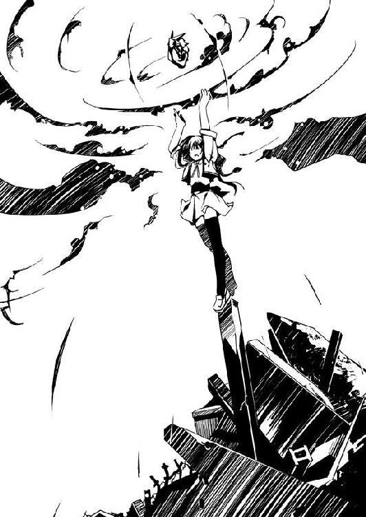

| ムシウタ 09.夢贖う魔法使い | |
| 岩井恭平 | |
| KADOKAWA / 角川書店 (2012) | |

ムシウタ
09.夢贖う魔法使い
岩井恭平
角川スニーカー文庫
本作品の全部または一部を無断で複製、転載、配信、送信したり、ホームページ上に転載することを禁止します。また、本作品の内容を無断で改変、改ざん等を行うことも禁止します。
本作品購入時にご承諾いただいた規約により、有償・無償にかかわらず本作品を第三者に譲渡することはできません。
本作品を示すサムネイルなどのイメージ画像は、再ダウンロード時に予告なく変更される場合があります。
本作品は縦書きでレイアウトされています。
また、ご覧になるリーディングシステムにより、表示の差が認められることがあります。
ムシウタ
０９．夢贖う魔法使い
ＣＯＮＴＥＮＴＳ
口絵・本文イラスト／るろお
プロローグ 0.00 The others
「君たちは、自分のビジネスに誇りを持っているか？」
電動式の車椅子に座った男が、唐突な話題を持ち出した。
白髪交じりの頭や、皺を刻んだ目尻とは裏腹に、ヨットパーカーとハーフパンツからのぞく手足は若さと力強さを感じさせる。車椅子に座っているのが不思議なほどだ。
「え？」
驚いたのは、少年だった。鋭角的な顔立ちは端整で、額まで持ち上げたサングラスで前髪を押し上げ、オールバックにしている。水着を着ているものの、上半身は裸のままだ。
オールバックの少年が、ちらりと車椅子とは反対側──つまり、こちらを見た。
この俗物は、アタシに何を求めているんだろう？
彼女は考え事を中断させられて苛立ちつつ、視線に気づかなかったフリをする。
「私には、ある。正確には、ある時期を境にそれを得たと言うべきかな」
車椅子の男がそう言い、こちらを見た。答えを促すように。
ふん、と彼女は心の中で笑い飛ばした。今の彼女の格好はビキニの上にパーカーを羽織っただけなので、クッションもない木製のチェアの座り心地は最悪だった。緩やかなパーマをかけた髪が、汗をかいた肌にはりつく。
狭い小屋のロビーに、蒸し暑い空気がこもっていた。何よりも頭に来るのは、天井にぶら下がったシーリングファンが逆回転しているということだ。あのバカな女、杏本詩歌が面白がってスイッチをいじっていたことを思い出す。
彼女は別のことを考えていたので、さっさと話を切り上げたかった。
「やはっ。その話、今ここでしにゃいといけないの？」
先ほど呑んだワインが残っていたせいで、ろれつが少し怪しかった。気持ち良い酔いに任せ、考えごとを続ける。
木製のテーブルを囲んでいるのは、三人の商売人。
しかしそのうちの一人は、どうしてこの場に同席しているのかも分からない人物だ。
実質的には、自分と車椅子の男との話し合いである。
さらに言うなら、結論もすでに出ているようなものだ。
こんな話し合いには、何の意味もない。
「プライドって意味なら......まあ、ぼくは持ってるかなあ。うん、確かにあると思う」
少年が、ぼんやりとした口調で答えた。彼の〝ごっこ遊び〟でプライドとは、大きく出たものだ。しかしどうやら、答えないかぎり話は進まないらしい。仕方なく答える。
「誇りなんて、考えたこともにゃいわ。やはっ。なにそれ？ 売れるの？」
車椅子の男は、頷きもしなかった。すぐに別の質問を投げかける。
「君たちは、金というものに何を求める？」
「別に、何も。ゲームのチケットであり、ゲームそのものであり、ゲームの景品であるだけ。ただの退屈しのぎでしょ？」
「うーん、信用かな。ぼくの信念は〝三方よし〟ですから！」
「私にとっては、ある少女と出会うまでは、自己主張の道具だった。それをたくさん持っていれば、自分が他人よりも優れていると思いこむことができたからな」
ぐだぐだと長話を聞いていたせいで、酔いが醒めつつあった。彼女はさして興味もなかったが、訊ねる。
「ふうん、その少女とやらに出会ってからは、どうなの？」
「惚れた女に貢ぐための、手段に変わった。それが誇りになった」
「うわあ、マジすか？ 分かる気がするなあ。いやあ、ぼくもね。同級生にめちゃくちゃ可愛い子がいて──」
「そんなことで喜ぶなんて、安い女ねえ」
「喜んでくれていたのだろうか。そういえば、そのことを確かめるのを忘れていた。ただ彼女のために金を使うことを誇りに思い、格好をつけていたように思える」
そんなの、ただ貢いでただけじゃない。
ライバルとして一目置いていた人物のことだけに、がっかりした。
宗方槐路といえば、隙のない商売でのし上がった大経営者として知られている。社員を自らの手足として操る、いわば唯我独尊型の経営は良くも悪くもトップの素質に左右される。宗方の場合は、その最たる成功例だろう。
「過去形ってことは、ふられたんスか？ 女の子の前でカッコつけるのは男の性であり、特権ですよねえ。後で考えるとバカらしく思えても、その時は必死で気を引こうと──」
つくづくこの男がこの場に同席していることに、疑問を覚える。
俗っぽく、貧乏で、どこの馬の骨ともしれない彼、丁屋弐兵衛について語る意味があるとは思えない。だが強いて言うならば、彼のやり方はこの国独特の経営スタイルに近い。他者と価値観を共有し、資材と人材を尊重する理念重視型だ。
彼女は得意の営業スマイルで、にっこりと宗方に笑いかける。しかし言葉は選ばない。
「失敗したのなら、お金の使い方を間違ったんでしょ？ 私なら、たとえ何者だろうと金で買う自信があるもん」
「えー？ それって、さっき言ってたことと矛盾してない？」
「そう？ 安い女なら、なおさら安く買い叩けると思うけど」
赤瀬川七那という名前をつけられた自分のスタイルは、欧米のそれに近い。市場を分析し、変化に応じて資材を切り捨て、別の場所へ投資する。いわば人材や資材、ひいては市場を支配するスタイルだ。現状破壊型とも言う。
「ビジネスとは......金とは一体、何だと考える」
宗方が呟いた一言に、思わず噴き出す。
「どうしちゃったの、一体？ せっかく私が助けてあげたのに、幽閉されていたショックで、さすがの宗方さんも弱気になっちゃったのかしら？」
三つのキーワード──。
エンクロージャー。
バブル。
パラダイムシフト。
その謎を見つけ出したのは、宗方だった。
だが彼は謎を解く過程でつまずき、失踪という形で姿を消した。
彼を助け出したのは、七那だ。
だから今、それらを解き明かす権利は、七那に移った。宗方もそのことを分かっているために、歯がゆいのだろう。
七那の軽口にも、しかし宗方は動じなかった。車椅子の手すりに肘をつき、呟く。
「大切なもののために、使われるべきもの」
「ゴミ収集」
「やっぱり......うん。人情、かな」
主張もスタイルも違う、三人の商人による小さな会議。
何の意味もない話し合い。
ご褒美をもらう権利を確認するためだけの、形式的なものでしかない。
ゲームは、終わった。
何しろあの最強の虫憑き、〝かっこう〟まで出てきたのだ。彼が去った今、終わっていないはずがない。
「私は助けられたという立場上、赤瀬川の意思を尊重すべきなのだろう」
「ぼくはもともと、お金ないしなあ。......正直なところ、怖いし......」
「それじゃあ、決まりね」
「あの......結論は出ましたか？ サザビィさんがお待ちですけど」
小屋の入り口を開け、水着姿の杏本詩歌が姿を現した。
弐兵衛が「サザビィさんって......あの化け物に対して、なぜにそんなにフレンドリーなのさ」と、おかしな顔をする。
「このオークションは、私が入札させていただきます」
三つのキーワードの謎。
〝虫〟という存在の起源。
七那はもう、それを手に入れたも同然だった。
1.00 エンクロージャー
光の筋が見えた。
微睡みと覚醒を繰り返していたそれは、光に誘われるまま、そこに向かう。
光の中に飛び込むと、たちまち目映い輝きに包まれた。
真っ先に現れたのは、広大な海だった。
太陽の明かりを反射し、キラキラと綺麗に輝いている。
ああ、久しぶりだ──。
そんなことを、考えた。よく見ると海は濁っていて、マリンブルーとはいかなかった。それでも美しいのは、ずっと暗闇の中に閉じこめられていたからだろう。
強い風が、心地良かった。
ただ浮かんでいることに飽きると、それは空に向かって上昇した。
雲近くまで飛び上がったところで、移動針路を水平方向へ変える。海を置き去りにし、山を跳び越え、人工物がそびえる街の上空を通り抜ける。
自由を満喫しているうちに、太陽が沈んでしまった。
星空の下を飛んでいると、ふいにそれの横に何かがピタリと並んだ。
「未確認の〝虫〟を感知した座標に到着──な、何なんだ、これは──はじめて見る──」
昆虫に似た怪物に乗った人間だ。大きなコートに身を包み、顔全体を機械的なゴーグルで隠している。
ゴーグルに手を当てて叫んでいるが、風の音でよく聞こえない。
「了解──攻撃をして、様子を──」
怪物に乗った人物が、ゴーグルから手を離した。怪物がぐるりと旋回し、こちらに向かって大きな口器を開いた。
敵意を感じとり、それは横に移動した。
「な、なんだ──どこに消え──動きが速すぎて──」
次の瞬間、大気が震動した。
「ぐあああっ！」
それが放った攻撃を受け、怪物の体殻が砕けた。半身を失った怪物ごと、コートの人物が地上に向かって墜落していく。
邪魔者を消し去ったことで、それは気ままな夜間飛行に戻った。
悠々と、空を翔けていく。
ある山のふもとに通りかかったところで、それはピタリと動きを止めた。
一瞬、懐かしい匂いがした気がしたのだ。
好奇心にかられ、それは高度を下げていく。
すると、真っ暗な林の中を、小さな光点が移動していることに気づいた。
外灯もない林道を、数台の乗用車が移動していた。前後を黒塗りの車で固めた、やけに長い車体をした真っ白なリムジンである。
一風変わったその車に、それは興味をそそられた。
懐かしい匂いがしたのは一瞬で、とっくに消え去ってしまった。だがもしかしたら、その車の主が匂いを呼び寄せたのかもしれない。
しばらく、そいつを見ていよう──。
ひさしぶりの解放感に上機嫌だったそれは、気まぐれにそんなことを考えた。
1.01 七那 Part. 1
都会から離れたその山には、現時点で定住者がいないと聞いている。
ある時はダム建設の話があったようだが、役人と建設会社の談合が明るみに出て、頓挫したらしい。次に高速道路を通すという案件も立ち上がったものの、省庁改変による予算見直しの余波を受け、計画が立ち消えた。
さらには付近の村が資金を捻出し、キャンプ場を作って観光客を呼ぼうとした。細い車道を通し、コテージがいくつも建てられた。だがそれも失敗したらしい。景色の良い湖もなければ、川下りや釣りのできる渓流もない。最近のアウトドアは、ある程度のレジャー設備ありきということなのだろう。
大金を生み出すはずだった山は、そうやって人の記憶から消え去った。残ったのはやけに長い林道と、ほとんど使用されることのなかったコテージだけだ。
数多の野望を砕いてきた山だ。現在の山の所有者は、さぞ安値で買い叩いたのだろう。
いや、それ以前に自分なら──赤瀬川七那なら、金の匂いがしないこんな山を買う気など起こらない。膨大な自己資産の、千分の一程度しか浪費しないと分かっていてもだ。
夜の林道を走る自動車の一台、車体の長いリムジンの中で、七那は目を見開いた。
「今の見た？ ねえ、見たでしょ？ 今のって、鹿じゃない？ 絶対、鹿よね」
広い車内は、窓際に沿って二つのシートが向かい合った造りになっている。中央にはやはり長いテーブルがあり、ワインクーラーといくつかのグラスが置かれていた。
「はじめて見たわ。目がピカッて光ったの。ビームを出す準備かしら？ 鹿ビームっ！ やははっ。逃げないとアタシたち、真っ黒焦げね」
外を指さそうとして、持っていたグラスが窓ガラスに当たる。窓にはチャイナドレスを着た自分の姿が映っていた。軽くパーマをかけた長い髪と上気した頰、それに祖父譲りの吊り気味の眼がこちらを見ている。今年で十七歳になったが、同世代の少女と比べても小柄で体つきが細いのは、血の味が苦手で肉料理が食べられないせいかもしれない。
「鹿ではなく、猪です。眼の位置が地面に近かったですから。出すなら猪ビームでしょう」
冷静に指摘したのは、七那の向かいに座った女だ。スカートスーツと眼鏡が似合う美人で、年齢は二十三歳と聞いている。寄り添うように置かれた熊のぬいぐるみが不自然なようでいて、彼女が纏う冷ややかな雰囲気を和めている。
七那は唇を尖らせ、グラスを女の鼻先につきつけた。ろれつの怪しい口調で問い詰める。
「そっちから、どうやって見えたのよう？ 背中に眼がついてるの？ ていうか、雇い主に逆らうにゃら、クビよ、クビ」
「こちら側の窓に反射して、見えたんです」
表情を動かさず、なぜか歯を立ててガチリとグラスの縁を嚙む女。たちまち七那は機嫌を直し、「やはっ。おもしろい。もっと嚙んで、嚙んで」と笑う。女はリクエストに応え、無表情のままガチガチと音を立ててグラスを嚙む。
「ねえ、ポチも見たでしょ？ どっちだと思う？ 鹿？ 猪？ それとも幽霊？」
車内の後部を振り向くと、スーツを着た少年が二人、座っていた。
「え......？ いや......」
七那が声をかけた少年が小声で呟き、俯いた。髪質が硬いのか、毛先が乱雑に尖っている。スーツの上から、手足に白い布を巻き付けている。
「いや、じゃなくて！ ねえ、どっち？」
七那はシートの上を移動し、グラスで布の少年の額を小突く。反動で後頭部が窓に当たり、ゴツンと音がした。痛そうな顔をしつつ、苦笑する。
「さてはアンタ、見てなかったでしょ？ 誤魔化そうとしてる？」
「も......申し訳ありま......お嬢様......」
「イルカさんは？ ねえ、見た？」
「......」
布の少年よりやや年上、つまり七那と同年齢くらいに見える少年が、じっと天井を見つめていた。スーツの上着を脱ぎ、シャツの第一ボタンを外してタイを緩めている。ギャングのようなサングラスをかけた顔を見ると、黙っていれば見られない顔でもないんだな、と思った。彼のそばに立てかけてあるのは、スポーツ競技に使うホッケースティックだ。
七那は思わずつられて、天井を見た。だが柔らかそうな革でコーティングされているだけで、特別なものは何も見えない。「なんだ、これ......感じたことない力場だ。もっと近づいてくるまで、様子を見るか」と少年が何やら呟いている。
「イルカさん！」
グラスで、少年の顎を叩く。「あが」と呻き、少年が七那の視線に気づいた。痛みに鈍感なのか、強く叩いたのに、顎をさすりもしない。サングラスを下げる。
「ん？ なに、七那ちゃん。わお、大胆接近。ちゅーしたいの？」
「きゃあ！」
少年が唇を突き出したのを見て、七那は仰け反った。
なおも近づこうとする少年の顔面を、布の少年が鷲づかみにした。毛先がハネた髪の隙間から、ジロリと鋭い視線を向ける。
「冗談だって！ もう何もしません！ だからそんな怖い顔しないでよ、先輩！ ──それで、なに？ 七那ちゃん」
「馴れ馴れしく呼ばないでくれる？ いきなりボディガードにしてくれって言ってきて、それなりに強いみたいだから雇ってあげたんだから。雇い主をちゃん付けで呼ぶなんて、常識ってものがないんじゃない？」
「はいはい、失礼しました、お姫サマ」
「ねえ、どうなってるわけ？ ちゃんとコイツを教育したの？」
七那は眉を吊り上げ、前方を振り向いた。スーツの女性が目を逸らす。
「たった数日間では、限界がありますので」
「あ！ なによ、その手前のグラス！ アタシのワイン、呑んだでしょう！」
「呑んでません」
「明らかにワインが減ってる上に、グラスが一つ増えてるのに、すっとぼけるの？ あ！ よく見ると、熊の口元が紫色になってる！ アタシのワインをこんなのに呑ませたの？ どんだけ可愛がってるのよ！ 持ち込み禁止にするわよ！」
女は「これの持ち込みは雇用契約に組み込まれているので」と素知らぬ顔だ。
「ああもう、どうなってるのよ！ 気味の悪い連中ばかり！」
リムジンに乗っているのは、運転手を除けば、シートに座っている四人だけだ。
苛立ち、七那は床に転がっていたステッキを蹴飛ばした。アルファベットの〝Ｊ〟を逆さにしたような形の、愛用のステッキだ。
「これだから虫憑きって、キライなのよ！」
〝虫〟。
十年と少し前に忽然と現れ、外見が昆虫と似ているために、そう呼ばれるようになった。
〝虫〟は思春期の少年や少女に寄生し、その希望や夢を喰らう代償として、宿主に超常の力を分け与える。〝虫〟に取り憑かれた者たちは、虫憑きと呼ばれた。
国は特別環境保全事務局という機関を創り、〝虫〟の存在を隠した。虫憑きを捕獲し、あらゆる手段を用いて隠蔽を図った。現在に至っては、捕らえた虫憑きを訓練し、在野の虫憑きを捕獲するための兵隊として統制するまでになっている。
だが〝虫〟や虫憑きという異常なものたちを、完全に隠し通すことができるはずもない。人々の間には噂が拡がり、それらは恐怖と差別の対象として忌み嫌われている。
「わたしは虫憑きではありません」
スーツの女が冷静に言った。
「分かってるわよ」
「そもそも虫憑きがお嫌いならば、なぜ今回のプロジェクトを立ち上げたのです？」
「不満なの？」
「リスクが高すぎます。現状で、我が財団が危険な賭けをする必要はありません」
「思うんだけど、お金って養分みたいなものよね。ばらまかないと腐るだけだもん。ため込んでひどい臭いがする連中を、いくらでも知ってるわ」
「だからといって無闇にばらまけば、作物を腐らせるだけです」
ワイングラスを傾けながら、七那は涼しい顔で女の忠告を受け流す。一度は醒めてしまった酔いとともに、機嫌も直っていく。
「お？」
ホッケースティックの少年が窓の外を見て、声を上げた。
「どうしたの、イルカさん？ また鹿？ 猪？」
七那は目を輝かせ、外を見た。夜の林道は静まりかえり、リムジンとその前後を挟む黒い車が小石を撥ねる音しか聞こえない。時々、思い出したように鳥の奇声が響く程度だ。
あっさりと少年が言った。
「んにゃ。人間」
七那は眉をひそめた。だがすぐに、締まらない笑みを布の少年に向ける。
「回収」
命令を聞くや、布の少年がリムジンのドアを開けた。猛スピードで走る夜闇へと、躊躇うことなく身を躍らせる。
「──痛てててっ！ 痛いよ、マジで！ え？ 人間ってそっちに腕が曲がるっけ？ ってくらいになってんだけど！」
布の少年によって腕を背中に回され、一人の少年が停車したリムジンに乗せられた。七那の足元に、強引に跪かされる。
「出して」
ニコニコと笑み、七那は命令する。リムジンが再び林道を発進する。
「え？ あれ？ なに、この状況？ ドッキリ？」
少年の印象は〝鞄の塊〟だった。歳は七那と同じくらいだろう。薄汚れた顔と、眼鏡で前髪を押し上げ、オールバックにした髪形までは良い。だが革袋のようなバッグを背負い、さらに大きな鞄をいくつも肩から提げている。鞄のほうが本体なのかもしれないと思った。
七那はグラスをステッキに持ち替え、クルリと一回転させて鞄少年の肩に先端を置く。
「ねえ、イルカさん。この〝妖怪、鞄男！〟は、虫憑き？」
「妖怪？ うそ、どこ？ って、ぼくですか！ どこをどう見たら......ひいっ、鞄男！」
窓に映った自分の姿に驚愕する男の後ろで、ホッケースティックの男がふんぞり返って脚を組んだ。人差し指を左右に振る。
「ヘイ、ボス。マイネームイズ、鯱人。オーケイ？」
「鯱よりイルカのほうが可愛いじゃない。それで、どうなの？ イルカさんって、そういうのが分かるんでしょ？」
「虫憑きが能力を使えば感じ取れるってだけよ？ でも、そんな感じじゃないね。能力どうこう以前に警戒心がないし、戦闘経験があるとは思えねーもん」

「ふうん、違うんだ。──ねえ、あなた。それならどうして、ここにいるの？」
この山に一般人がいるはずはない。山菜採りにしては民家から離れすぎているし、時刻も遅い。しかもこれ以上奥に進んでも、無人のコテージがあるだけだ。
「そっちこそ、なんでこんなところに？ あんたたちは一体、誰なわけ？」
涙を浮かべ、少年が問い返す。
さらに関節を痛めつけようとする部下を手で制し、七那は目を細める。
「アタシは、赤瀬川七那といいます」
「あ......赤瀬川七那？」
鞄の少年が、目を見開いた。
やっぱり、関係者──。
反応を確かめ、七那は笑んだ。
「うそ、マジで？ あの赤瀬川七那？ 赤瀬川グループの？ ビジネス誌の写真よりも、実際のほうが可愛いじゃん！」
「......？」
七那は眉をひそめた。少年の言動が、自分の予想していたものと違うことに気づく。
赤瀬川七那という名前を知る者は、少なくない。一般的にはそれほどでもないが、この国において経済に関わる者で七那のことを知らない人物はいないだろう。
七那の名を世に知らしめたのは、皮肉にも彼女の祖父の死だったと言わざるを得ない。金融業を成功させ、一代にして巨万の富を得たのは祖父だった。強引な手法で数多くの企業を買収し、赤瀬川グループという企業集合体を創ったのも彼である。
だが祖父はある日、突然の変死を遂げた。いまだに死因は摑めていない。
財団の会長職を継いだのは、意外な人物だった。息子夫婦を事故で失っていた祖父は、たった一人の孫娘に全財産を相続させたのである。莫大な遺産と会長職を引き継いだ中学生として一時、トップニュースを飾った。
だが騒ぐのは無関係な一般人だけだった。周りの目は冷ややかなものである。
形ばかりの会長職を引き継いだ七那を、誰もがすぐに辞職に追いやられると思っただろう。財団の役員たちはもちろん、ライバル企業に至るまで皆、そう予想していたはずだ。
だが、七那は現在も会長の座についている。
それどころか祖父が存命だった頃よりも、グループは勢いを増していた。
いまだに赤瀬川グループ──通称、赤瀬川財団が繁栄している理由を、誰もが不可解に思っていることだろう。
ごく普通の中学生だった七那が祖父から引き継いだのは、莫大な資産と会長職という地位だけではなかったことも知らずに──。
「彼女は、アタシの秘書。名前は......」
少年の反応に違和感をおぼえつつ、七那はスーツ姿の女をステッキで指した。
「ねえ、あなたの名前、なんだっけ？」
自分の秘書の名を、ど忘れしてしまった。そういえばいつも、「ねえ」とか「ちょっと」と呼びかけていた気がする。
「秘書、で構いません」
スーツ姿の女が涼しい顔で言った。前任の使えない秘書をクビにした頃、買収した企業にやり手の新人がいると聞いて引き抜いたのだ。一年くらいそばに置いているが、今のところは使えている。常にぬいぐるみを連れている変わり者だが、むしろ飽きなくて良い。
七那は「そ？」と笑い、手足に布を巻いた少年にステッキを向ける。
「この子は、ポチ」
「ポチ......？」
「やはっ、聞いてよ、面白いんだから。この子、拾った時は段ボールの中で暮らしてたの。捨て犬みたいだったから、拾ってみたのよ。今は捨て犬から番犬にランクアップしたの」
ポチと呼ばれた少年が、はにかんだ。普段はおとなしいが、元は暴力組織同士の抗争でこき使われていた武闘派の虫憑きだ。七那は暑苦しいボディガードが嫌いなので、身辺警護役として雇っている。ちなみに彼には仲間がいて、それら虫憑きもまとめて子飼いにしている。
「そこの穀潰しは、イルカさん。ポチの後輩ね。見た目はただのろくでなしだけど、ポチと良い勝負だったし、それなりにケンカは強いんじゃないかしら」
「はじめまして、イルカでっす！ 口でボールを支えるテクニックなら誰にも負けないぜ！」
本名のことは諦めたのか、ホッケースティックの少年が笑顔で親指を立てた。
「ぬいぐるみ付きの秘書とワンちゃん、それにイルカさんに囲まれて、楽しげでしょう？」
よっぽどイメージと違っていたのだろう。締まらない笑みを浮かべて両腕を拡げる七那を、鞄の少年が呆然と見上げた。
「こちらの自己紹介は、おしまい。さあ、あなたはだあれ？」
ステッキの先で、少年の顎を持ち上げる。
「丁屋弐兵衛」
少し考えた後、少年が名乗った。随分と古臭い名前だ。
「あなたは何者で、ここで何をしてるの？」
「え？ えーと......いやあ、ちょっとした待ち合わせといいますか──いだだだっ！」
とぼける弐兵衛の腕を、ポチが締め上げる。
「な、なんだよ、もう！ なんでいきなり、こんな目に遭わされなきゃなんないわけ？ こっちは情報一つさえ、大事な商品なんだよ！ アマチュアとはいえ、商売人のプライドにかけて、対価なしには喋れな──いだだだだっ！」
「良いこと考えたわ。あなたの腕と、情報を交換しましょう？」
「ああ、そういうこと！ 納得！ 今すぐに喋ります！」
意外と安いプライドだった。いじめっ子の本性を出す七那の提案を、弐兵衛が快諾する。
「......ああもう、がっかりだなあ！ 大富豪の赤瀬川七那が、こんなヤツだったなんて！」
「ポチ」
「この先のコテージで、ある人と待ち合わせしてましたあ！ 時間も場所もあちら側の指定で、ぼくにはこの先に何があるのかさっぱり分かりません！」
「ある人？ 誰？」
「さあ。──いだだだっ！ マジで知らないんだって！ 紹介してもらっただけで、相手が誰なのかも分からないんだよねえ！」
「ふうん。──あら、もう目的地に近いの？ なら、さっさと済ませちゃいましょう。そんなところへ、あなたは何をしに行くの？」
「......ちょっとしたトラブルに巻き込まれちゃって。保護を求めに行くといいますか、ついでにあるものを買ってもらおうかと思ってるといいますか」
「買うわ」
「え？」
「あなたが売りつけようとしてるものを、アタシが買い取るの。まだ商談に入ってないなら、横取りってわけでもないわよね？」
ニコニコと笑む七那に対し、弐兵衛は「そりゃあ、まあ......」と口ごもる。
実を言うと、少年の言う〝ある人物〟には見当が付いていた。
数々の野望に見離されてきた、この山の現在の持ち主。
その人物は本来、ここのような金の匂いがしない物件を買うような人間ではない。不動産としては価値が低すぎるし、別荘にしては味気なさすぎる。愛人を囲うなら、都会にマンションでも買ったほうが良いだろう。
何しろ赤瀬川財団に匹敵する資産の持ち主なのである。七那の商売敵と言っても良い。
そんな人物がこんな枯れた地を所有している以上、何か隠された理由があるはずだ。
一体、何を隠しているのか──。
その答えに、七那は心当たりがある。
「ちょっぴり取扱い注意のシロモノだよ？ なにしろそれのせいで、ぼくは特環とかいう危ない連中に狙われるようになっちゃったんだし」
腕を捻りすぎて、弐兵衛の顔面は床に敷かれた絨毯に半分埋まっていた。心から心配そうな顔をしているのは、値段をつり上げるための演技だろう。
「トッカン？ ああ、特別環境保全事務局。つまり虫憑きがらみのモノってわけ」
平然と言い放つ七那を見て、弐兵衛が啞然とした。ここの土地の所有者に商談を持ちかけようとしているなら、それなりの商品なのだろう──そう考えたのだが、的中したようだ。
「それなら、なおさらだわ。アタシ、特環って大キライなの」
ステッキを器用にクルクルと指先で回しながら、けらけらと笑う。
特別環境保全事務局──特に最強の虫憑きと呼ばれる男にはかつて、とんでもなく期待外れな光景を見せられている。彼らに不都合が生じるなら、良い気味だ。
「到着しました」
秘書が機械的な口調で言い、ポチがドアを開けた。「うぎゃ」と悲鳴を上げる弐兵衛を車外に蹴り出し、自らも外へ飛び出す。
リムジンが停車したのは、林道の終着点だった。
サッカーグラウンド二つ分ほどの面積の、開けた土地だ。明かりがついていないコテージが数軒建っている。砂利を敷き詰めた一帯には、水くみ場も見えた。
「え？ なに？ なんなの？」
困惑する弐兵衛を放置し、ポチが素早くリムジンの前に躍り出た。
ポチに続くように、リムジンを護衛していた黒塗りの車からも、数人の人影が飛び出した。黒いスーツに身を包んだ少年や少女たち──かつてポチの仲間だった虫憑きたちだ。リーダーであるポチに対する信頼が厚く、七那の命令よりも彼の行動に従う者ばかりである。
無人のキャンプ場に、緊張が張り詰めた。
空に浮かぶ月は無言で、どこからか気の早い蟬の鳴く声が響いていた。
リムジンを取り囲んで守るポチたちは、臨戦態勢をとった状態で微動だにしない。
七那は柔らかいシートの上で、可愛らしく首を傾げた。
「あら、ハズレかしら？」
「地面が大勢の人間に踏みならされてる。水くみ場の水道も手入れもカンペキ。おまけにコテージに埃が積もってないね」
後部のシートで、鯱人が腕組みをしながら言った。
「なにより虫憑きの力場も、そこらへんに感じるし。けっこうな数が隠れてるよ」
「ねえ、あなたも動きなさいよ、イルカさん。アタシを守りにきたんじゃなかったの？」
「もちろんお守りしますよ、お姫サマ。そりゃもう、全力で」
わざとらしく肩をすくめる少年。「でもまだ、オレの出る幕じゃないんだよね。集団行動ってニガテだし」と平然と言い放つ。
七那が呆れて頰を膨らませていると、キャンプ場で動きがあった。
コテージの一つに、照明が灯った。
同時に建物の陰から、数人の人影が現れる。
「さて、商談開始ね」
酔いで足がもつれたところを秘書に支えられつつ、七那は車から降りる。
ステッキを回しながら、ふらふらとポチらの間をすり抜け、前へ進み出た。
「やはっ」
コテージの明かりによって露わになった人影を見て、七那は笑った。
現れたのは、数人の少年と少女たちだった。大人の姿がほとんど見あたらないことで、彼らの正体は容易に想像がついた。待ちかまえられていたのは、山の入り口に監視カメラでも設置しているのだろう。
「やっぱり〝むしばね〟と繫がってたってわけね。こぉーんなところに匿ってたんだ」
上機嫌に笑う七那と対峙したのは、三人の男女だった。
「何者だ？」
ジャケットを着た長身の女が、七那を睨んだ。目鼻立ちのくっきりとした顔立ちと冷ややかな雰囲気、それに年齢が七那の秘書と近いようだ。ただし機械的な秘書とは違って、あちらは野性的な印象を受ける。
「我々を〝むしばね〟と知っているならば、一般人ではあるまい」
まるで時代劇に登場する侍のような口調だが、それが良く似合っている。見たところ年長者のようだし、彼女がこの場のリーダーなのかもしれない。
「こんばんは、赤瀬川七那と申します」
締まらない笑みから一転、七那はにっこりと営業スマイルを浮かべた。
「ビジネスの話をしに参りました」
「ビジネスか。なるほどな」
つまらなそうに息を吐いたのは、ヘアバンドをつけた少年だ。両手をポケットに突っ込んだまま、警戒するでもなく、自然体でこちらを見つめている。
「よくものこのこと現れたものだな」
「ビジネスの話は、直接会ってするのが主義なんです。危険な相手と分かっていても、怖れていては何も生み出しませんから」
歓迎ムードというわけにはいかないようだ。だがその程度は、予想の範囲内である。
今まで誰も手をつけようとしなかった分野で、ビジネスをしようとしているのだ。リスクがあることも承知している。だが計画を実現する上で、この土地の所有者──ひいては〝むしばね〟との交渉は避けては通れない。
「ひどいです......」
ぽつり、と呟いたのは、小柄な少女だった。ショートカットが良く似合っている。他の二人とは異なり、どう見ても戦闘要員とは思えない。
ワケの分からないことを呟く少女を無視し、七那は商談を続けることにした。
「具体的な話をしたいのですけれど、えーと、責任者は──」
「貴様らの要求は、なんだ？」
ジャケットの女が、敵意を露わに言った。
「今ここでお話をしても、よろしいのでしょうか？ ギャラリーが多すぎません？」
「ふん。ならば、コテージの中で──」
「あなたたちのしていることは、最低だと思います......！」
またショートカットの少女が、口を挟んできた。
七那は思わず営業スマイルを崩した。商談に水をさされることが最も嫌いな七那は、思わず本性を剝き出しにして片眼を細める。
「そこの子供を、黙らせてもらえませんか？ 横からうるさいんですけれど」
「うるさいだと？ 貴様、この子のどこがうるさいんだ！」
なぜかリーダーの女が憤慨した様子で怒鳴る。彼女の妹なのかもしれない。ずいぶん過保護にしているようだ。
これだからアマチュアとの商談は、嫌なのだ。七那は嘆息する。
「分かりました。もう結構です」
「な、なにが結構なんですか？ こっちは結構じゃないです！」
少女が怒ったように頰を膨らませるのを見て、七那は苛立つ。
七那とショートカットの少女がにらみ合い、同時に口を開いた。
「あなたたちじゃ話になりません。宗方氏に取り次いでもらえませんか？」
「む、宗方さんを、どこに隠したんですか！」
宗方槐路。
七那の祖父と同様に、たった一人で巨万の富を築いた実業家である。
ワンマンな経営スタイルこそ赤瀬川一族と似ているものの、強引な手段を用いることがない点で、赤瀬川財団よりも好意的な意味で知名度が高い。
宗方槐路こそ、この山の現在の所有者だった。
一切の無駄がないビジネススタイルを貫いてきた宗方槐路だからこそ、こんな何もない山を買い取ったのには理由がある。
七那の推測は、正しかったようだが──。
「......」
静寂に包まれたキャンプ場で、七那は呆然と立ち尽くす。
予想外の事態に、数秒ほど思考が停止していたようだ。ようやく口を開く。
「宗方が......いない？」
「貴様らが誘拐したんじゃないのか？」
ジャケットの女もまた、意外そうに呻いた。
「あ、あの......ごめんなさい」
消え入りそうな声で謝る少女のことなど、どうでも良かった。七那は唇を嚙み、ジャケットの女に向き直る。
「詳しく、話を伺わせてもらえませんか。〝むしばね〟のリーダーは、あなた？」
「いや──」
ジャケットの女、そしてヘアバンドの少年が、ショートカットの少女に視線を向けた。
「ご、ごめんなさい......」
絶句する七那に向かって、なぜかまた少女が申し訳なさそうに謝った。
1.02 七那 Part. 2
七那がはじめて出会った虫憑きは、無口な人だった。
七那がまだ幼かった頃だ。資産家が集うパーティに参加しないかと、たった一人の肉親だった祖父に呼び出された時のことである。
知らない街を物見気分で一人歩きしているうちに、迷子になった。薄汚れた裏路地に入り込んでしまい、心細くて泣き出しそうだったのを憶えている。
裏路地で出会った少女は少し年上で、お世辞にも綺麗とはいえない身なりをしていた。
その少女は、黙って七那の腕を引いた。
途中、怪我をしそうになった七那をかばってくれたりもした。
戸惑う七那の腕を引き、少女はあっという間に迷路のような路地の出口に彼女を導いた。
突然に目の前に現れた街を一望する景色に、七那は感嘆したのだ。
まるで、魔法みたい──。
そう言うと、少女もまた驚いた顔をした。
ありがとう──。
お礼を言うと、今度はなぜか硬直してしまった。
七那が謝礼を申し出ると「いらない」と一言で断った。ボロボロの服を着て、瘦せていて、お金がいくらあっても困らないことは一目瞭然なのに、いらないと言ったのだ。
その時の少女は、七那がそれまでに出会ったどんな人間よりも、誇り高く見えた。それこそ一国を司る政治家や、一流の芸能人よりもだ。
そんな年上の少女と再び出会ったのは、それから一年以上経ってからのことだった。
ある日、少女のほうから、ふらりと七那の前に現れたのだ。
はじめて出会った頃とはうって変わり、少女は力強く、そして美しい姿に変身していた。その後、少女はたびたび七那の前に現れたが、いつも首に大きなヘッドフォンをかけていた。
この世界を美しいと思いこんでいた頃の七那は、ヘッドフォンの少女のことを〝優しい魔法使い〟と呼んでいた。
現れるたびに七那の相談事を訊いては、不思議な力で助けてくれたからだ。
何の見返りも求めず。
ただ優しい笑みだけを浮かべて、七那を大切にしてくれた。
「何を聴いているのかって？ このヘッドフォンで？」
それほど意外な質問だろうか？ まるで自分自身のことを訊かれたのは生まれてはじめてとでもいいたげに、ヘッドフォンの少女が切れ長の眼を見開いた。
いつもすぐに去ってしまう少女を引き止め、少しだけ話をした時のことだ。通学用のバスを見送り、二人で肩を並べて普通の路線バスを待っていた。
「これは......ええと、困ったな」
当時は二人とも、互いの名前を知らなかった。彼女たちの不思議な関係に、名前なんて必要なかったから。
「なるべくうるさいやつ──そう言って選んでもらったものだから。曲名が分からない」
頭を搔きながら、しどろもどろに少女が言った。七那よりも背が高くて、大人っぽい少女が困っている姿がおかしくて、七那は少し笑ってしまった。
「選んでもらったんですか？ お友達とか──ですか？」
本当は「お友達とか、恋人にですか？」と訊こうと思った。だが後半は口に出さなかった。
「いいえ、店の人......店員に」
店の人も店員も変わらないと思うのだが、彼女は七那の前では、少しでも難しい言葉を使おうとする癖があった。きちんとした教育を受けていないのか、それともそのことをコンプレックスにしているのかもしれない。七那はそんなこと、ちっとも気にしないのに。
七那は「そうなんですか」と屈託なく微笑んだ。身内のように七那のことを心配してくれる少女を、もう少しだけ独り占めしていられることが嬉しかった。
「ああ、でも、これを見れば分かるかも」
ヘッドフォンを接続したプレイヤーを取り出し、七那に見せた。スティック状の機体を受け取り、七那は表示されている曲名を見る。英語だった。
「〝プロメテウス〟」
「プロメテ......ウ？」
「たしかギリシア神話に出てくる神様です。暗闇に怯える人間のために天界の火を盗んだ罪で、磔にされた英雄だったかな」
「物知りだね」
ヘッドフォンの少女が目を細め、プレイヤーを受け取った。曲名が気に入ったのか、大事そうにコートのポケットに収める。
「わたしと同じだ。キミのためになら、磔にされても構わない」
鬼道ツカサ。
いつもヘッドフォンを首にかけていたその虫憑きは、そんな名前だったらしい。虫憑きの中でも稀少な精神支配系の能力を持ち、特別環境保全事務局という政府機関さえ翻弄していた強者だったそうだ。
それらの情報を知ったのは、ずっと後のことだ。
そして赤瀬川財団の総力を以てしても、いまだにそれ以上の情報は摑めずにいる──。
「？」
びっくりして目を見開く七那を見て、ツカサが首を傾げた。たった今、自分が口にしたことの意味を理解していないらしい。
いや、理解した上で、当たり前のように言ったのだろう。赤の他人でしかない七那のために、磔にされることさえいとわないと。──それも何の見返りもなしに。
「魔法使いさんは──」
どうして、アタシを助けてくれるんですか？
そう問いかけようとして、口を閉ざす。過去に何度も、同じ質問をしようとした。だがそのたびに、訊けなかった。理由を知ったら魔法が解けてしまうのでは──その頃の自分は、心からそう思っていたのだ。
「いつも、どこで何をしてるんですか？」
質問を切り替える。
ツカサが顎を持ち上げた。背筋を伸ばしてバス停に佇む少女の姿は儚げで、今にも通行人の中に消えてしまいそうに見えた。
「うん......うまく説明できない」
七那は何も言わなかった。彼女が話したくないなら、それ以上訊こうとは思わなかった。
だがツカサは自分の開いた両手を見下ろし、言葉を選びながら語り出した。
「金の流れを調べている、というのかな。大きすぎる金の流れは、ほんの少ししか持っていない人たちのそれも巻き込んで、奪ってしまうから。弱者を守る壁......堤防みたいなものを造れたら良いと思う」
「ボランティアとか......支援団体みたいなものですか？」
「私自身が望んでやっているんだから、そうとも言えるのかな。でも仲間がいないから、団体じゃないよ。最近は別のことも、気になっているけれどね」
「別のこと？」
「わたしたちの力......この魔法のような力が、なぜ存在するのか。この力を使って、何をすべきなのか」
七那は目を見開いた。
「魔法使いさんが、他にもいるんですか？」
「いる」
ツカサが平然と言い、微笑んだ。
「わたしのような力を持った最初の人間は、〝α〟という名前らしい」
アルファ。
七那は首を傾げた。──優しい魔法使いが語ったその名前が、どれほど重要な単語なのかも知らずに。この時、その虫憑きの少女は、とんでもない秘密を摑みかけていたのだ。
「企業連合を突いているうちに、他にも耳に挟んだ。エンクロージャーとバブル......それに、パラダイムシフトだったかな？ 意味は分からないけれど、どれもわたしのような力が生まれた原因に、関わっているらしい」
「エンクロージャー、バブル、パラダイムシフト......どれも経済の用語ですね」
「そうなのか。わたしの力は調べるのに向いているけれど、わたし自身が無知でどうしようもない。そのあたりのことは──やっぱり、他の誰かに任せたほうが良さそうだね」
苦笑し、ツカサが正面を見た。
「わたしは現在、やるべきことをやる。過去のことは、頭の良い人間がするべきだ」
七那は俯いた。
魔法使いの手伝いができれば、と思ったのに、自分にはその力がない。魔法が使えない上に、頭が良いわけでもない。
「羨ましいです。アタシも魔法が使えるようになりたいなあ」
「必要ない、キミには」
「え？」
「わたしが、キミの力になる」
見上げる七那に向かって、魔法使いがニコリと微笑んだ。
「わたしはキミに、見返りを──代償を求めたりしない。この力とは違って」
「代償......」
「キミはわたしに、ありがとうと言ってくれた。こんな力などなくても、キミはそのままでじゅうぶんに良い人間で......人を助けることができる」
ありがとう──。
確かに、言った。
はじめて出会った時に、七那は自分を助けてくれたツカサに対し、そう言った。
七那は愕然とした。
まさか、たったその一言のために？
鬼道ツカサという少女は、そんなありふれた感謝の言葉に応えるためだけに、こんなにも七那を助けてくれているとでも言うのだろうか？
いくらなんでも、それは──有り得ない。
夢見がちだった当時の七那でさえ、そんなはずがないと思った。他に別の理由があるはずだ。そんなことくらいで、七那を良い人間だと言ってくれるはずがない。
「......」
七那は無言で、右手をそっと持ち上げた。
鬼道ツカサが、微笑んだ。おずおずと触れた七那の指先をたぐり寄せ、しっかりと手を握り返してくれる。
「困ったことができたら、呼んでほしい」
──わたしが、キミを助ける。
優しい魔法使いが、そう言った。
「はい」
手を繫いでバスを待ちながら、七那は屈託のない笑みを浮かべた。
それは鬼道ツカサという、優しい魔法使いとの思い出。
七那がはじめて出会った虫憑き。
その後も魔法使いは七那の前に現れては、相談を聞き、微笑みとともに去っていった。
いつでも、七那を助けてくれた魔法使い。
彼女が七那を裏切ったのは──たった一度だけだった。
唯一の肉親である祖父が急死し、七那は大金と巨大な財団の会長という立場を押しつけられた。それまで煌びやかで綺麗に見えた世界が、その日を境に金という餌を求める魑魅魍魎で溢れかえる、どこよりも汚い世界に変貌した。
天涯孤独となった七那に、頼れる人間など一人もいなかった。
いるとすれば、たった一人だけ──。
誰よりも七那を大切にしてくれた、ヘッドフォンの少女。
あの優しい魔法使いが助けてくれると信じて、疑わなかった。
心細くて、卑怯で傲慢な大人たちに怯えながら、七那は魔法使いを待ち続けた。
だが優しい魔法使いは、現れなかった。
最後に会ったときに、もうすぐ同じ街に居続けてくれると約束したのに。
信じていたのに。
──困ったことができたら、呼んでほしい。
──はい。
魔法使いが犯した、たった一度の裏切り。
その凍てつく傷痕は、あの日繫いだ手の温もりを七那から奪い去っていた。
「──やはっ」
コテージのロビーに置かれたソファの上で、七那は噴きだした。商談相手がいないと知り、営業スマイルを浮かべる必要もなくなった。
「聞いた？ 宗方が誘拐されたんですって！ やははっ、子供じゃあるまいし！ 甘いお菓子をあげるとでも誘われたのかしら？」
ソファの背もたれに飛びつき、控えている部下たちに笑いかける。ぬいぐるみと手を繫いだ秘書が肩をすくめ、ポチがニコリと微笑んだ。鯱人は興味がないのか、窓から外を見て、コテージの外にいる〝むしばね〟のメンバに愛想を振りまいている。
「何がおかしい、貴様......！」
ジャケットの女が、身を乗り出して気色ばんだ。
簡単な自己紹介を済ませた結果、その短気な人物は〝なみえ〟ということがわかった。年長者だが、リーダーではない。
「ひ、人の不幸を笑うのは、良くないと思います」
ソファに座った小柄な女の子が耳を赤くしながら、頰を膨らませた。七那と同じくらいか、それとも少し年下か。童顔なせいもあるが、言動がどうも子供じみている。
最初は我が耳を疑ったが、どうやら本当に目の前の少女が〝むしばね〟のリーダーらしい。名前はスノウ・フライ。周囲の人間はスノウと呼んでいた。
スノウのとなりにいるヘアバンドの少年は、アイジスパと名乗った。眠そうな顔で、事の成り行きを黙って見守っている。リーダーの護衛役なのだろう。
他にもコテージ内には、〝むしばね〟の仲間が二人ほど居合わせていた。暖炉の前で腕を組んでいるのは、日本的な長い黒髪が特徴的なハレンシスという少女。奥の階段に座って携帯電話を操作しているお洒落な少女は、ルシフェラ。どちらも〝むしばね〟の幹部だという。
ちなみに七那がここにやって来る途中で拾った少年、丁屋弐兵衛はコテージの外だ。処遇を決めるにも、当面の方針を決めてからということになったらしい。
「それにアタシたちが誘拐犯に勘違いされるなんて......何の冗談かしら」
笑うのにも飽き、七那は〝むしばね〟の面々に向き直った。
「そ、それは......ごめんなさい」
途端にスノウが縮こまって、俯いてしまった。〝なみえ〟がスノウを制止する。
「謝る必要はない。そもそも私有地に無断で入り込んできた、あちらが悪いんだ。それにまだ本当に、宗方のことと無関係と決まったわけじゃない」
「単純ー。短絡的ー。頭かたーい」
奥の階段から、声が響いた。携帯電話をいじりながら、ルシフェラがつまらなそうに言う。
「関係あるなら、とぼける必要ないしー。赤瀬川七那みたいな有名人が直接、ここに現れるメリットもないですねー。宗方さんを人質にして、代理人が要求を出してくるのが普通ですよー。本当に誘拐なら、ですけどねー」
「誘拐って言い出したのは貴女でしょう、ルシフェラ」
「睨まないでもらえますか、ハレンさんー。ただの失踪にしては、唐突すぎるって言っただけですよー。あの几帳面な人が、やりかけの仕事も多かったそうじゃないですか。おかげで本業のほうが大混乱らしいですし。本業も〝むしばね〟への援助も、何もかも彼一人で仕切っていたせいで、我々は一気に貧乏のどん底ですよー。スペシャルタルト食べたーい」
コテージ内にいる〝むしばね〟全員が、黙り込んでしまった。
〝むしばね〟とは、虫憑きによる反政府──正確には特別環境保全事務局に対抗するために創られたレジスタンス組織である。虫憑きだというだけで有無を言わせずに捕獲し、欠落者にするのもいとわない特環よりも先に、在野の虫憑きを保護することを目的としている。
その構成員の数は、協力者である一般人を含め、かなりのものと聞いている。特に逃亡生活を余儀なくされた者たち全員の生活を保証するだけでも、大金を必要とするはずだ。
これまでは宗方槐路という経済界の大物が、資金を援助していた。その目的は定かではないが、彼の資産を以てすれば不可能ではなかっただろう。
だが、その宗方が唐突に姿を晦ましてしまった。〝むしばね〟が困窮するまで、時間はかからなかったに違いない。
「随分とせっぱ詰まっているようですね、〝むしばね〟の皆さん」
七那が冷やかすと、一人を除いて〝むしばね〟の幹部全員がジロリとこちらを睨んだ。
たった一人、現リーダーであるスノウという少女だけが、カクリと首を傾げた。
「赤瀬川......えっと......なななな」
「うふ。はり倒しますよ、リーダーさん。七那です。ナが三つ」
「ご、ごめんなさい。赤瀬川七那さん──は、私たちのことを知ってるんですか？」
「ええ、アタシ、こう見えても虫憑きとは因縁が深いので。──〝むしばね〟の前リーダーとも面識があります」
「え？」
スノウが目を見開き、嬉しげに目を輝かせた。他のメンバも、いっせいに七那を見る。
「利菜と？」
「聡明な方でした」
背後からなぜか、「当然です」という秘書の相づちが聞こえた。
立花利菜というのは、〝むしばね〟の創立者にして前リーダーだった少女だ。
賢明だからこそ、かつて立花利菜は絶対に許すことのできない決断をしたのだが──すでに終わった過去のことだ。ここに居たら満面の笑みでぶん殴ってやるところだが、死んだ後までそのことを責めるつもりはない。
「打算も妥協もない。──それくらい、綺麗な方でした」
七那とは全く正反対の、潔癖な精神の持ち主だった。だからこそ麻薬にも似たカリスマ性を持ち、魅せられた人々を堕落させていた。七那には決して理解できない関係だ。
「......私は、杏本詩歌といいます」
何を思ったのか、スノウがあらためて名乗った。共通の知人を持つというだけで、簡単に心を許したのだろうか。
「宗方さんに、ご用があったんですか？」
七那は不思議な光景を見た。
詩歌がたった一言、静かな問いかけを放っただけで、いがみ合っていた〝むしばね〟のメンバたちまでもが落ち着きを取り戻していた。全員の視線が、七那に集まる。
見かけは頼りないが、仲間たちの信頼はあるようだ。すっかり見かけに騙されていたが、あの立花利菜の後を継ぐだけの何かを持っているのだろう。
だが化かし合いなら、負けない。
七那は再び営業スマイルを浮かべる。
「ええ、実はいくらアポを取ろうとしても、無視されてしまったので......失礼とは存じながらも、こうして直接会いに来たのです」
「ア、アポ？ り、林檎ですか？」
「やはは、おもしろーい。アッポーじゃありません。アポイントメント。面会の約束。本当にはり倒しますよ」
真剣な顔でアホなことを言う詩歌を、七那はニコリともせずに睨みつける。詩歌が顔を真っ赤にして「す、すみません......」と消え入りそうな声で謝った。
どんなにバカでも、仮にも相手側のリーダーだ。そうでなければ、いじめっ子精神を全開にしてイジメ倒しているところである。
「〝むしばね〟の皆さんも無関係ではないので明かしてしまいますが」
そう前置きし、七那は言った。
「赤瀬川グループは皆さんのような虫憑きと、ある種の契約関係を築くために参りました」
「契約......ですか」
「ええ。虫憑きの力が多岐にわたることは、存じております。そのことを踏まえた上で、あらゆる職種での皆さんの活躍をサポートさせていただきたいと思っております」
詩歌が首を傾げた。七那の言っている意味が理解できないようだ。
「まわりくどーい。恩着せがましいー。ようするにぃー」
階段から、ルシフェラという少女が口を挟んだ。
「お金で虫憑きを買おうってことですよねー？」
「まあ、そういうことです」
七那は笑みとともに頷く。
予想通り、〝なみえ〟が「なんだと......！」と顔つきを変えた。暖炉の前にいたハレンシスも同様に「私たちを、金で買うですって」と顔をしかめている。
「意外ですか？ でも宗方だって、虫憑きを使ってビジネスをしていたんでしょう？」
七那は頰に人差し指を当て、不思議そうに首を傾げた。
「職種としては虫憑きという性質上、どうしても裏方に回ってもらうことになりますが......人外の能力を求めるお客様はいくらでもいます。私どもは彼らに虫憑きを紹介する、人材派遣と考えていただければ、分かりやすいでしょう。〝むしばね〟の皆様には、需要に応じた虫憑きを提供していただくだけで良いのです」
〝むしばね〟の構成員は多い。必要な能力の種類には困らないはずだ。
「もちろん特環から守るために、微力ながらサポートいたします。福利厚生も充実させます。危険度に応じて支払う報酬を増やしますし、万が一、商品が欠損した場合には相応の賠償金も準備いたします」
虫憑きを使ったビジネス。
それこそ七那が考案した、新たなタイプの商売だった。
今、こうしている間にも、虫憑きは増え続けている。それは紛れもない事実であり、将来的にも避けようのないことだ。いくら隠しても、もはや無駄である。
虫憑きが存在するということが、この国にとって当然の姿になりつつある。
だからこそ、来るべき将来において──多くの商品を確保していた者が、勝者となる。虫憑きという存在が世に露見したとき、その超常の力を欲する者も爆発的に増加する。
先物取引は、商売の基本である。
遠くない未来、需要が約束されている虫憑きを、赤瀬川財団が独占するのだ。
新時代のビジネスは、途方もない利益を生むだろう。いつの世でも不動産やエネルギー資源を多く確保した者が時代を築いてきた。豊富な財産が集まる〝むしばね〟は、油田や金山のようなものだ。
さらに言えば、先駆けて虫憑きを確保しておくことで、後にライバルとなりうる勢力を抑えつけることができる。数に物を言わせ、商売敵を潰すだけで良い。
「幹部の皆様にしてもらうことは、今までと変わりありません。特環よりも先に、できるだけ多くの商品を確保してくれるだけで良いんです。時々、私どもが商品を見繕いにやってくるだけです。──ああ、もちろん、幹部の皆様をどうこうするつもりは」
「黙れ」
吐き捨て、〝なみえ〟が立ち上がった。警戒したポチが、七那の前に立ちはだかる。
「商品だと？ 貴様、虫憑きをなんだと思っている」
「あなたがたを、そう言ったつもりはありません。あくまで幹部の皆様を除いた──」
「関係ないわ。そんな話に乗るつもりは、これっぽっちもないわよ」
ハレンシスもまた敵意を露わにして、七那を睨みつけた。ルシフェラは黙々と携帯電話と戯れ、アイジスパは我関せずといった様子でそっぽを向いている。
詩歌はというと、まだ話の内容が理解できていないのかもしれない。目の前で言い争う七那たちを、ぽかんとした顔で見上げている。
「あなたがた〝むしばね〟と契約できないのであれば──特環に話を持ち込むだけです」
「......！」
「〝むしばね〟のほうが仕入れ値が安そうという理由で、先に話を持ちかけたのです。でもきっとそういうビジネスの話になれば、特環のほうが現実的な交渉をしてもらえることでしょう。仮に特環との契約が成立した時には──」
七那はステッキを一回転させ、片眼を細める。その顔を自分自身で見たことはないが、片方の目だけを細めた笑みはきっと、七那の本性をよく表していることだろう。
「最大の商売敵であるあなたたちに対して、アタシは容赦しないわよ？」
「なんだと......！」
「この場所を見つけたように、どこに隠れていても捜し出して徹底的に潰すわ。目には見えなくても、金の動く場所に人はいるの。金の動きで何でも分かるのよ。過去も──そして未来のことだって分かるわ。〝虫〟を感知する能力がなくても、アタシからは誰も逃げられない」
静寂に包まれるロビーに、七那の冷たい声が浸透していく。
「このアタシ──赤瀬川七那に買えないものなんて、何一つないの」
本当は〝むしばね〟と直接話す前に、彼らのパトロンである宗方槐路と商談をするつもりだった。もちろん交渉が決裂するならば、警告をするつもりでいた。
だが宗方は、行方不明だという。
この好機を逃すほど、七那は間抜けではない。資金の元を絶たれて弱気になっている今ならば、友好的に話し合いを進める必要もない。
宗方が戻ってこないうちに、速攻で話をつける。
一度契約してしまえば、こちらのものだ。後になって宗方が戻ってきても、商談のテーブルにすらつかなかった男に文句は言わせない──。
「あの......」
一触即発の雰囲気に支配されたロビーに、透き通る声が響いた。
詩歌だ。
黙って話を聞いていた少女と目を合わせ、七那は眉根を寄せた。
てっきりバカなあまりに話についてこられずにいるだけと思っていたのだが、彼女だけ全く別のことを考えていたようだ。
「七那さんは──虫憑きが、嫌いなんですか？」
唐突な問いかけに、誰もが眉をひそめた。それまで無関心だったアイジスパが詩歌を見つめただけではない。鯱人が振り返り、珍しく真顔で小柄な少女を見た。
全員の視線が集まったことで、詩歌がハッとした顔をした。頰を染めて俯く。
「ご、ごめんなさい。なんだか、話を聞いているうちに、気になって......」
「ええ、大嫌いよ」
七那は笑んだ。にっこりと、屈託なく。極上の笑みを浮かべる。
「でも、お金になるわ」
ロビーがしんと静まりかえった。
「そう......ですか」
詩歌は怒りもしなければ、悲しそうな顔もしなかった。ただぼんやりと、頷く。
ヘンな女ね──。
七那は心中で、舌打ちする。子供のように単純かと思いきや、場の空気に決して流されることがない。冷静というわけでもないようだ。
ただ気づくと、誰もが詩歌の言葉に聞き入ってしまう。音を呑み込む純白の雪原のように、雑音を打ち消し、激しい感情までも吸い込んで無くしてしまう。
「え、えっと......難しくて、私にはよく分からなかったです」
次に何を言うかと思ったら、詩歌があっさりと白旗を揚げた。
「ルーシィさんは、どう思いますか？」
階段を振り返り、携帯電話の操作に夢中の少女に声をかける。──これまでの言動から察するに、ルシフェラという少女が幹部の中で最も頭が切れそうだ。参謀役なのかもしれない。
「ワタシなんかの意見を聞いちゃって良いんですかー？ 戦闘の指揮以外であんまり働きたくないんですけどー」
「そ、そうですか......」
「引く必要はないぞ。あいつは本当は押しに弱いんだ。もったいぶって、〝しょうがないなー〟と言いつつ、必要とされてることを確かめたいだけだからな」
「う、うるさいですねー」
耳を赤くするルシフェラに対し、「ひねくれたガキの扱いは慣れてるんだよ」と〝なみえ〟が言い放つ。なるほど、短気なだけに思えた女だが、年上だけあって面倒見が良さそうだ。
「そんなもん、ちょっと考えりゃ分かるじゃないですかー」
ルシフェラが唇を尖らせ、親指で自分の喉のあたりを水平に切る仕草をする。
「シグナルレッドー。危険は排除ー。殺っちまいなー。ですよ」
「殺っち......？」
「その人は、危険人物ですよ。せっかく目の前に現れてくれたんですし、この場でばっさり殺しちゃいましょう。むしろこのチャンスを逃したら、大変なことになりますよー」
ロビーに一瞬、緊張が張り詰める。
「そいつは、敵です」
ルシフェラに睨まれ、七那はにっこりと微笑んだ。
「むしろアタシは、救いの手を差し伸べてあげているのだけれど？ アタシと契約しないと、お金を手に入れられずに末端から飢えさせていくだけでしょう？」
「お金を手に入れる手段なんて、他にいくらでもありますしー」
「やはっ、ウソばっかり。これだけ大勢の人間を養うのに、どれだけのお金が必要だと思っているのかしら。〝むしばね〟全員でコソ泥をした程度じゃ、とても追いつかないわね」
「分かりませんかねー。今一番の危機は貴女になっちゃったんですよー、赤瀬川七那さん」
睨み合う、七那とルシフェラ。頭の悪そうな外見とは裏腹に、ルシフェラという少女は七那のことを誰よりも理解しているようだ。やると言ったら、本当にやることを悟っている。
一方、七那の余裕は揺らがない。
ポチを始めとする護衛の虫憑きたちには、それなりの訓練を積ませている。アマチュアにすぎない彼らを返り討ちにすることなど、造作もない。適当に痛めつけて包囲網を突破した後、特別環境保全事務局に話を持ちかけるだけだ。
「あのぅ、ルーシィさん」
緊張感の糸をあっさりと切ったのは、やはり詩歌だった。
「べ、別の方法で、お願いします」
「はあ。そう言うと思いましたけどー」
かくり、とルシフェラが頭をもたげた。臨戦態勢だった〝なみえ〟とポチ、立ち上がりかけていたアイジスパが、再びただの睨み合いに戻る。
「他に方法なんて、ないですよー。宗方さんの行方が摑めないかぎり、ワタシたちがビンボーなのは変わらないんです。時間が経てば経つほど、赤瀬川につけいる隙を与えるだけです。かといって赤瀬川なんかと契約したら、取り返しがつかないことになるのは自明です。それならこの場で一つでも危険の芽を摘んでおくのが、まだマシってもんです」
「でも、それじゃダメなんです」
詩歌が言う。
「私たちはもうこれ以上、敵を作らないって決めたんだから......」
〝むしばね〟全員が、黙り込んだ。ルシフェラが苛立たしげに舌打ちする。
「それがどれだけ難しいことか、本当に分かってないんですよ......そんなこと、敵を殺すことの何百倍も難しいのに」
詩歌が俯いた。だが何かを思いついたのか、笑顔で顔をあげる。
「そ、そうだ。良いことを思いつきました」
その場にいる全員が、童顔の少女を見た。
「七那さんに、宗方さんを捜すのを手伝ってもらったらどうでしょうか？」
「......はあ？」
誰よりも真っ先に、七那がおかしな声を上げた。
「もともと七那さんは、宗方さんと話をしに来たんですよね。私たちも宗方さんがいないから、こうして困ってるんだもん。宗方さんさえいれば、お互いに良いことになりますよね」
嬉しそうに両手の指をからめながら、俯きがちに説明する詩歌。
さあ褒めてくれ、と言わんばかりの態度に、かえって言葉を出すことに気が引ける。
「七那さんは宗方さんのことを、良く知ってるみたいだし。ついさっき、見つけられないものはないとも言ってました。だったらきっと、宗方さんのこともすぐに──」
誰一人として何も語らない空間で、詩歌が満足げに何度も頷いている。
ルシフェラの盛大なため息を聞きながら、七那は笑いを嚙み殺して言う。
「アタシの話、聞いてたの？ 宗方がいない状況はむしろ、こっちにとっては有利なのよ？ 今にも餓死しかけてる〝むしばね〟と違って、こっちはあなたがダメなら特環に話を持っていけば良いだけなんだもの」
「でも特環は、貴女の話には乗りませんよね？」
「......！」
不思議そうに言う詩歌の一言に、七那はハッとした。──ハッとしてしまった。
七那の反応を見て、ルシフェラが目つきを変えた。だが七那は気づかなかったフリをして、平然と笑い飛ばす。
「乗るわ。お金で動かない人間なんて、いないもの」
「本当ですか？ 私は何人も、そういう人を知ってます。──中央本部にいた魅車という人も、その一人です」
静かに言う詩歌に対し、七那は笑みを消す。
──いらない。
かつて出会い、謝礼を断った少女のことが、脳裏をよぎった。七那がはじめて出会った虫憑きの少女はそう言って、七那から何も受け取ろうとしなかった。
七那はこっそり舌打ちをする。
嫌なことを思い出してしまった。苛立ちがこみ上げる。
「上が話に乗らなくても、下っ端の局員に金を積ませるだけで良いもの。こっちは役人の買収なんてお手の物なの。構成員の何人かを横流ししてもらうなんて、わけないわ」
「......」
「でもそうなると、効率が悪いですねー」
黙り込んでしまった詩歌のあとを、ルシフェラが引き継ぐ。
「あなたはきっと、虫憑きを独占したいと思ってるんでしょうー？ それならまだ、〝むしばね〟との交渉の余地を残しておいたほうが、ビッグビジネスに繫がる可能性が高いはず」
思いがけない人物──ただのバカにしか見えなかった詩歌に核心を衝かれたことが、一生の不覚を招いた。一瞬の動揺をルシフェラに見抜かれてしまった。
実際、特別環境保全事務局との交渉というのは、ブラフだったのだ。
あの組織が一筋縄でいかないことは、良く知っている。いざというときは本当に交渉を持ちかけるつもりだったとはいえ、得られる利益は〝むしばね〟との交渉成立時と比べるまでもない。それこそ秘書に言われたように、リスクに利益が結びつくかどうか疑わしい。
まさか、こんなバカにブラフを見抜かれるなんて──。
いや、見抜かれたのかどうかも、疑わしい。
ロビーにいる誰もが、七那の余裕たっぷりな演説に騙されていた。だがたった一人、詩歌だけが七那に惑わされず、ごく当たり前のようにそこにある真実を見つめていた。
「ワタシたち、〝むしばね〟との交渉権を売ります」
ルシフェラが言い放った。
「多少の援助と宗方さん捜索の手伝いをしてくれれば、宗方さんを交えた上で、あらためて交渉のテーブルにつきます。──どうせ、もとはそうするつもりだったんでしょう？ 当初の予定がちょっぴり延期しただけと思えば、安い安いー」
「......今この場でアタシと交渉しないなら、特環にこの場所をチクると言ったら？ その後も、嫌がらせをしてやるわ」
「それは、困りますねー。でもワタシたちは二度と、あなたと交渉しません。別のパトロンを探すのも良いですかねー。何やら我々はお金になるそうですし」
「もし宗方が、もう死んでいたら？」
「交渉はなし、としておきましょうー。見つけ出した後にこっそり宗方さんを殺されてしまっては、たまりませんから」
「......」
「お互いに損するよりは、お互いに利益になる可能性があるほうを選びましょうよー」
「──分かったわ」
カツン、とステッキの先が床を叩いた。七那はすっくと立ち上がる。
「この話は、これでおしまい。こちらはどうしてもというわけじゃないもの。別のビジネスを考えることにするわ」
この場所からは、すっかり金の匂いが消えてしまった。宗方がいないからこそ、わざと彼らを怒らせ、勢いで押し切ろうとしたのだ。彼らの反感を買った上、宗方が交渉の場に乗り出すとなったら、七那にとって有利な条件は何一つない。
「条件を追加します」
コテージから去ろうとした七那の背後から、詩歌が声をかけた。
「もし宗方さんが亡くなっていたら......私が七那さんと契約します」
〝むしばね〟の面々が動揺したのが分かった。七那は振り返る。
「あなたなんか、要らないわ。たいして使えなさそうだし」
「でも、〝むしばね〟の他の人たちまでは......」
「俺も契約する」
はじめて、アイジスパが口を開いた。さも平然とした口調だった。
「私もだ」
〝なみえ〟も名乗り出た。
七那はルシフェラとハレンシスを見た。携帯電話の少女が、呆れ顔で肩をすくめる。
「欲張らないでくださいよー。なんたって特環で言うところの三号クラスが二人と──泣く子も黙る秘種一号〝ふゆほたる〟が担保になると言ってるんですよ？」
「秘種一号──ですって？」
七那は目を見開いた。
一号指定の凄まじさを、知らないはずがない。七那は一号指定たちの常識外れな戦闘力を目の当たりにしたことがあるのだ。そういえば残りの一人である一号指定、〝ふゆほたる〟という名前も聞いたことがある。
金の匂いが、戻った。それもむせ返るほど強烈だ。
自身で言ったように、宗方を捜すことなど、七那にとっては造作もない。
宗方が死んでいれば、幸運だ。七那は一号指定の虫憑きを手に入れることができる。もし生きていたとしたら、〝むしばね〟との交渉権が得られることになる。もし交渉が決裂しても、救出した宗方からたっぷりと謝礼金をふんだくってやれば良い。
「宗方を捜す手がかりは、あるのかしら？」
内心でほくそ笑みつつ、まだ表情には出さない。
「あの......実は」
やや躊躇いがちに、詩歌が口を開いた。
「姿を消す前、宗方さんは何かを調べていたみたいです。私に少しだけ話をしてくれました」
「何かって？」
「よく分からないけど......エンクロ？ バブ......とか、パラなんとかシフトとかいう──」
「なん──ですって」
今度こそ、七那は絶句した。
尋常でない七那の様子に、〝むしばね〟だけでなく秘書やポチも不審そうにしている。
「エンクロージャー──バブル──パラダイムシフト」
「そ、そうです！ たしか、そんなことを言ってました。意味は分からないけど......」
しばしの間、七那は次の句が継げなかった。
──エンクロージャーとバブル......それに、パラダイムシフトだったかな？
かつての記憶が、蘇った。
七那を誰よりも大切にしてくれたのに、最後に彼女のことを裏切った虫憑き。
優しい魔法使いは、確かにそう言ったのだ。
──意味は分からないけれど、どれもわたしのような力が生まれた原因に、関わっているらしい。
鬼道ツカサと交わした会話は、一言一句にいたるまで鮮明に憶えている。聞き間違いなどでは決してない。
鼓動が急速に高まりつつあった。やかましいくらいに七那の胸を内側から叩く。
あの人が摑みかけていたものを、宗方も摑もうとしているのだろうか？
いや、もしかしたら──。
「分かりました。必ず、宗方氏を見つけ出してみせましょう」
きっぱりと言い放つ七那を、一同が驚いた顔で見る。
もしかしたら──そこに魔法使いの足取りに関わる手がかりがあるかもしれない。
信じていたのに。
たった一人の肉親を失い、とても心細かったのに。
約束を破り、迎えに来てくれなかった、あの裏切り者。
その行方を摑むことができるかもしれない。
「事情が変わりました。宗方には生きていてもらわないと困るわ」
宗方槐路から直接、話を聞く必要がある。
七那は短く言い放ち、踵を返す。慌てて部下たちが後に続いた。
かつて見た、優しい魔法使いの面影に向かって──。
七那は勢いよく、コテージの扉を開け放った。
1.03 七那 Part. 3
優しい魔法使いがやって来てくれたので、七那はまた送迎用のバスを見送った。
路線バスを待っている間、鬼道ツカサは七那と手を繫いでいてくれた。両親を早くに亡くし、家政婦に世話されて育った七那にとって、人の温もりを感じるだけで胸が満たされたのを憶えている。祖父はたまに華やかなパーティに招待してくれるが、仕事が忙しいため、七那の自宅を訪れることはほとんどなかった。
「この辺りを騒がせていた通り魔が、捕まったそうです」
七那が言うと、優しい魔法使いはこちらを見下ろしてニコリと微笑んだ。
「学校で注意のプリントが配られた、痴漢もです」
「そう」
「魔法使いさんが、捕まえてくれたんですか？」
「......」
「ありがとうございます」
七那にとって、優しい魔法使いは正義のヒーローだった。無邪気に礼を言うと、鬼道ツカサが苦笑して、手を繫いでいないほうの人差し指で頰をかいた。
「確かに警察に突き出したのは、わたしだけれど......それを解決したのは、わたしじゃない」
「？」
「学がないわたしには、うまく説明できないな。なんていうか、運命みたいなものがあったんだ。人や、物事や出来事の流れみたいなもので......今回の運命はわたしが作ったんじゃない」
七那が首を傾げると、ツカサが困った顔をした。自由な片手を宙に彷徨わせ、必死に説明をしようとする。そんな年上の少女の姿は微笑ましく、可愛らしいと思った。
「運命とは言っても、そうなると決まっているものじゃなくて。たとえば、バスタブにお湯を満たした状態みたいな感じ──そこにはアヒルの玩具のように、人や物事といったものがプカプカと浮いているんだ。たとえば今回の事件で言うと、その玩具の一つ一つが通り魔だったり、被害者だったり、警察だったりする。バスタブの上でそれらはささやかな流れにまかせてぶつかったり、すれ違ったりしてたんだと思う」
「はあ......」
「キミが被害に遭わないよう、未然に彼らを捕まえるという理由と動機を得て、わたしはバスタブの中に飛び込んだ。玩具の一つになってそれらに交ざり、調査をすることでささやかな流れを生んでいたんだと思う。わたしという流れの影響を受けて、通り魔や被害者の動きもまた変わった。いくつものアヒルの玩具が入り交じり、混乱した状態だ」
「うー......ん？」
「だが今回、そのど真ん中を、大きな白鳥が突っ切ったんだ」
すいっ、と魔法使いが空中を指先で切り裂いた。
「とても大きな流れだ。通り魔だけでなく、わたしも警察も、それに巻き込まれた。わたしたちアヒルの群れは慌てふためき、溺れ、同じ方向──一つの結果におさまるよう、運命づけられた。その途中で、たまたまわたしと通り魔がぶつかり合ったんだ。そんな感じかな」
うん、と優しい魔法使いが頷いた。それで説明を終えたつもりだったのか、相変わらず眉をひそめたままの七那を見て、慌てて追加のように補足する。
「たまにいるんだ。強烈な──とても強い意志や影響力を持って動く人が。彼らは振り向きもせず、自分が他人に与えた影響を気にとめることもなく、ただ前に向かって突っ走る。──運命という流れは、そういう人によって作られてきたんだと思う。わたしたちは巻き込まれただけ」
「強い意志を持って......動く人」
「被害に遭った級友のためとはいえ、今回の白鳥はひどく不器用で無謀だったけれど......そういう人が運命という流れを生んできたんだろうな」
優しい魔法使いが、また微笑んだ。
「良い友達を持ったね、キミは」
七那は眉根を寄せた。七那の友達と呼べる相手は、数えるほどしかいない。特に親友と呼べるのは、五十里野きらりという同級生だけだ。──念のために後日、きらりに話を聞いてみたものの、「知らない」「そっか。そうよね」「うん」という会話だけで終わった。
「運命はきっと、白鳥が作ってきたんだ」
ツカサが言う。
「わたしたちアヒルは、その流れに巻き込まれただけ。白鳥が通りすぎた後で慌てふためくアヒルたちの姿を見て、未来の人はそれを歴史と呼んでいくんだと思う」
「アヒルが歴史なんですか？」
「ええ。だから歴史は残るけれど、運命は見えない。運命を作った白鳥は、振り向きもせずに去ってしまった後だから」
きっと、とても大切なことを言っているのだと思う。ツカサ自身は学がないと卑下するが、彼女が教えてくれることのほうが、学校で教わることよりも難しい。
「エンクロージャー、バブル、パラダイムシフト......それは歴史だ。アヒルにすぎないわたしは、それを生んだ白鳥を見つけることは、諦めた」
「前に言っていたことですか？ 優しい魔法使いさんは、アヒルなんかじゃありません」
「いいんだ。わたしは目の前の白鳥を守っているほうがいい」
ツカサが七那の顔を見つめ、笑った。
「わ、私は白鳥なんかじゃありません」
「その才能は、じゅうぶんだと思うけど。だってキミは通り魔の被害に遭ったんだから」
「......？ 通り魔が人を襲ってるところを見ただけで、私自身は別に──」
通り魔事件の現場を目撃してしまい、とても恐ろしかった。──そんな相談をしたのは、たった二人だけだ。警察にも話していない。
優しい魔法使いと、五十里野きらりという親友だけである。
「わたしが魔法使いになれたのも、キミのおかげなんだ。──この先、キミのおかげで何かになれる人が、わたし以外にも生まれるのかもしれない......」
「......」
「間違いない。だって未来からは見えないけれど......巻き込まれたアヒルたちは確かに、白鳥の姿を見ているんだからね」
自らをアヒルという魔法使いが、微笑みながら七那の頭に手を置いた。
その優しい感触は、たった一人の肉親だった祖父のものと全く同じだった。
「......はい」
自分のような人間に、そんな才能があるとはこれっぽっちも思えなかった。
だが──優しい魔法使いがそう言ってくれるのなら。
大切な人が噓吐きにならないように、いつか自分は白鳥になってみせようと思った。
数日ぶりに〝むしばね〟の隠れ家を訪れると、真っ先に見知った顔が出迎えた。
「お、数日ぶり、七那ちゃん。今日は一段と綺麗だねえ！」
丁屋弐兵衛という少年だ。はじめて七那がこのキャンプ場を訪れた時に拾い、鞄の妖怪と見間違えた少年である。作業着姿で、前髪を押し上げたサングラスが汗で曇っていた。
「近寄らないでよ、ドレスが汚れるじゃない。それと、馴れ馴れしくない、あなた？」
リムジンから降りた七那は、豪奢なドレス姿だった。何段にもギャザーを重ねたティアードドレスに、露出した肩に宝石をあしらったボレロをかけている。
後ろに控えた秘書とポチ、それに鯱人も、パーティ用の衣装を着込んでいた。秘書は上品なドレスと真珠のネックレス──さらにどうでも良いオマケとして、抱きかかえた熊のぬいぐるみには宝石付きの髪飾りをつけている。ポチと鯱人はタイ付きのフォーマルスーツ姿だ。
「あいかわらず、つれないなあ。ちょっと待っててよ、今リーダーを呼びに行ったから」
蠅を追い払うようにステッキを向けられ、弐兵衛が苦笑した。人なつっこい態度でそばに寄ってきて、持っていた手帳のようなものを閉じる。
「ねえ、見てくれた？〝記録者〟のインタビュー」
そういえば先日、彼から一枚のメモリを買い取ったのだった。当初は宗方に売るつもりだったと聞いて買取を決めたのだが、あまりにも安い値段だったために興味を失っていたのだ。
「ああ、あれ？ どこに置いたっけかな」
先日、ここを訪れた時は夜だった。
今は朝方だからか、キャンプ場にいる〝むしばね〟の数がやけに多く感じられた。相変わらず大人は少ないが、小学生くらいから大学生くらいまでの人々が朝食の準備をしている。
「そりゃないよ！ あれのせいで、ぼくは破産したんだからさ！ 一見の価値アリだよ？」
「だったら、それなりの値段をつければ良いじゃない。あんな値段じゃ、見る気にもなれないもん。侮辱されてるのかと思ったくらいよ」
「ぼったくりはしないよ。ぼくにも商売人としてのプライドがあるからね！」
「プライドって売れるの？ ──ねえ、ところであなたはここで何をしてるの？」
「帳簿をつけてたんだ。今までお金の流れは、宗方さんに任せっきりだったみたいだからね。七那ちゃんから資金援助してもらった以上、何に使ったか正確に記録しとかないとね。──ていうか、今日は七那ちゃん、シラフなんだねえ」
「今まで誰も帳簿をつけていなかったの？」
目を見開く七那に対し、弐兵衛が「みたい」とまた苦笑した。それだけでも驚きなのに、新参者の弐兵衛などに会計を任せていることにも呆れた。
「ごめんなさい、お待たせしました」
遠くから〝むしばね〟のリーダー、杏本詩歌が駆け寄ってきた。ラフなＴシャツ姿のせいか、とても七那と一つ違いとは思えないくらいに子供っぽく見える。以前と同じように、アイジスパ、〝なみえ〟、ルーシィという取り巻き付きだ。
「ねえ、今、コイツに聞いたんだけど」
「あ、ちょっと、やめてよ。ぼくが告げ口したみたいじゃん。てか、コイツって」
「今まで誰にも金の扱いをさせていなかったっていうのは、本当なの？」
「え？ は、はい。今まで宗方さんが必要なものを用意してくれていたので。──弐兵衛さんがいてくれて、助かりました」
「いやあ、そう言ってもらえると嬉しいなあ。なんてったってぼくのモットーは〝三方よし〟だからねえ」
「三方よし？」
首を傾げる詩歌に対し、弐兵衛が満面の笑みを浮かべた。
「売り手よし！ 買い手よし！ 世間よし！ それが三方よしっていうんだよ。誰もが笑える商売を貫くのが、ぼくのスタイルなんだ！ だから、バンバン頼ってくれて良いよ！」
言い放ち、自らの胸を拳で叩く少年。詩歌だけが「わあ」と感心した様子で手を叩いた。
「やはっ。三方よし？ ずいぶん貧乏臭いモットーだこと」
七那は鼻で笑い飛ばす。その言葉は彼女も知っている。
三方よしというのは、かつてこの国で流行った商人の信念だ。あまりに古臭く、カビの生えた言葉。そんな甘い考えが現代に通用するわけがない。
誰もが笑える商売──そんなものは、ただの理想でしかない。
「そんなの、うだつの上がらない商人の言い訳じゃない」
七那がからかうと、弐兵衛が顔つきを変えた。ムキになって声を荒らげる。
「違うよ！ そ、そりゃあ、七那ちゃんに比べたら、稼ぎは小さいけど......」
「ちょっと、いっしょにしないでくれる？ アタシはあなたと違ってプロなの。三方よしなんていう甘っちょろい考えは、このご時世じゃどこにも通じないんだから」
「......！ だったら言わせてもらうけど、七那ちゃんみたいな商売の仕方は──」
「ふ、二人とも、落ち着いてください」
たまらず、詩歌が制止に入った。なおも鼻息荒く睨みつけてくる弐兵衛に対し、七那は舌を出してやる。
「まあ、その商売人気取りのド素人はともかくとして──」
「んがー！ なんだと！」
「ちょっと呆れたわね。宗方はどうして、〝むしばね〟のごっこ遊びみたいなやり方を見ているだけだったのかしら」
キャンプ場を見ながら、七那は言った。
詩歌が驚いた顔をした。
「え、ええと......宗方さんはあまり、〝むしばね〟のすることに口を出したくはないと言っていました。自分は最低限の援助をするだけだって......」
七那は思わず噴きだした。あの歳で慈善事業に目覚めたとでも言うのだろうか？ 商売敵として一目置いていた男だけに、にわかに信じられない。趣味の悪いお遊びだ。
「やはっ。じゃあアタシは、口を出しちゃおっかな」
首を傾げる詩歌に対し、七那はにっこりと笑いかける。
「一時的とはいえ、今はアタシが〝むしばね〟のスポンサーだもん。権利はあるわよね？」
七那は楽しげに、クルクルとステッキを回してみせる。脳天気に戯れる彼らを見て、いじめっ子精神がくすぐられていた。
「〝むしばね〟のメンバが、これで全員のはずがないわよね。他はどこにいるの？」
「え？ ええと......ここにいるのは、まだ行く先が決まっていない人たちです。他の人たちは、宗方さんが用意してくれた家や施設に住んでいます」
「ふうん。住んでるだけ？」
「いっしょに戦ってくれる意志のある人は、他の虫憑きを助ける手伝いをしてくれたり......」
「有志のみってこと？ それで良く、特環と張り合ってたわねえ」
「虫憑き発見の情報があれば、我々の中の誰かが現地に赴いて、指揮をとる。正面から特環と戦ったりはしない」
〝なみえ〟が横から割って入った。我々、というのは、今この場にいる四人の誰か、という意味だろうか。ゲリラ戦に限っていえば、それで事足りるのかもしれない。
七那はにっこりと微笑む。
「それで助けた虫憑きは、優しく守られつつ、どこかでぬくぬくと暮らすのね。ああ、なんて素晴らしいのかしら、まるで楽園のよう！」
「......」
「何の見返りもなしに守られて、タダ飯を食らって、戦いたくないと言えば優しくしてもらえる......自分は悲劇に見舞われたのだから、それが当たり前と思ってるんでしょうね！」
演技がかった仕草でうろうろと歩き回り、キャンプ場ではしゃいでいる人々にステッキの先端を向ける。
「──全員に、労働を与えなさい」
詩歌が「え？」と驚く。
「ここにいる連中だけじゃない。各地に潜伏させている人間も、素質に応じて何かしらの役割を与えなさい。戦闘の素質がある虫憑きはもちろん、情報収集、金稼ぎ......小さな子供は掃除でもいいわ。とにかく役目を与えて、訓練役を決めて使えるレベルに育てるの」
「あ、あの......」
「やはっ。労働は黄金なり！ 当たり前だけど！」
呆然とする面々の中、七那は一人、愉快にステッキを回し続ける。
「そもそも何もさせずにいるかぎり、心のダメージはいつまでも回復しないの。──使命がない人間は、自分の傷を舐め続ける。ずっと舐めていると、傷は膿むだけよ。それよりも働かせて痛みを忘れさせたほうが、傷口は勝手に時間がふさぐわ」
「......」
「アタシは優しいから、なにも酷使しろとは言わないわ。でも、できることがあるなら、やらせなさい。そして一番、大事なことは──働かせるためのルールを決めて、破った者に対する罰を作ること」
「ば、罰、なんて......そんな、特環みたいな──」
「特環はあれで、合理的なシステムになってるわ。動かない、叱られない、考えない人間たちは堕落する。流れない水は濁る。──あそこまで人権を無視しろとは言わないけれど、良いところは、いくらでも真似しなさいな。それだけの価値はあるわ」
詩歌を見つめ、片眼を細める。
「これは、サービスで言ってあげてるんだから。今の〝守られて当然〟という馬鹿げた決まり事は、必ず〝むしばね〟をダメにするわ。そんな腐った考えは、いざピンチに陥れば、あなたたち幹部を逆恨みするわよ。どうして守ってくれなかったんだ、ってね」
「......！」
「楽園が許されるのは、そこに神様がいる時だけ......あの女がいなくなった時点で、そんな夢のような時は終わったはずでしょう？」
詩歌たちが、表情を強張らせた。
「自分の身を自分で守るという自覚を与えなさい。その上で協力しあえば、連帯感が生まれる。あなたたち幹部は、その道筋を作ってあげるだけで良いのよ」
押し黙る幹部たちに向かって、はっきりと言い放つ。
「以上！ アタシの言うことがきけないなら、援助はこの場でオシマイ！ いかがかしら？」
プレゼンテーションを終え、七那は両手を拡げた。
〝むしばね〟たちには、好印象を与えられなかったようだ。七那の言うことに対する疑いと、彼女の態度に対する反感が強い。
だが一人、詩歌だけが難しい顔をして、真剣に考えているようだった。
「──分かりました」
やがて、リーダーである少女が頷いた。
「うまくいくか分からないけれど......これから〝むしばね〟は変わらなきゃいけないって思っていたんです。皆で話し合って、少しずつ変わっていこうと思います」
憮然と七那の話を聞いていた仲間たちも、リーダーが納得したことで一応は納得したようだ。困惑した様子を見せながらも、気をおさめていく。
つまらない。もっと困ってくれないと、いじめ甲斐がないのに──。
肩すかしをくらい、七那のほうが唇を尖らせた。
「話し合いは後でして。あなたはアタシといっしょに来るの」
「え？」
「宗方を助けに行く時は、〝むしばね〟の誰かが同席する。──そう条件を出したのは、そっちでしょう」
「え......？ 宗方さんが見つかったんですか？ ど、どこにいるんですか？」
「大体の目星がついただけなのだけど──そうね」
七那は片眼を細め、歪んだ笑みを浮かべた。
今から行く場所は、詩歌のような無垢な少女にこそ見せつけてやりたかった。素直な心の持ち主にとっては、さぞ面白い場所に違いない。
「楽園のような、素敵な世界よ」
〝虫〟よりも醜い連中の、吹き溜まりよ──。
七那は微笑みながら、心中で全く正反対の言葉を呟いていた。
1.04 七那 Part. 4
囲い込み。
海外の経済史において、中世の末頃に行われた出来事だ。
力のある領主が、共同農地として利用されていた土地を私的に独占した。耕地を失った農民は没落し、領主の下で労働者として使役されるようになった。
エンクロージャーという強引な運動が成立したのは、領主どうしの談合や役人の汚職のためと言っても良い。欲しいものを手に入れるために領主たちは大金を放出し、結果として農地という宝箱の独占に成功したのだ。
そういった手法は珍しくはない。
富める者たちは仲間どうしでこっそりと密会し、ひそひそ話をするのだ。その話の内容は決まって、どうすればもっと儲けることができるのか──どうやればもっと一般大衆から金を搾取できるかの相談なのである。
「円卓会？」
リムジンの車内で、杏本詩歌が首を傾げた。肩を出したワンピースドレスの上から上品なボレロを着させ、髪は軽くパーマをあてた。それらはアクセサリも含め、どれも七那が見繕ったものだ。やや背伸びした衣装だが、年寄り連中にはあざといくらいのほうがウケが良い。
「ええ、この国のカルテル──企業連合の中でも入会条件が難しい、会員制の俱楽部よ」
シートの上で脚を組み、七那は片眼を細めた。ティアードドレスはキャンプ場に寄った時のまま変わらないが、汚れてしまったパンプスだけ履き替えている。
車内にいるのは七那、秘書、ポチ、鯱人、そして詩歌とフォーマルスーツ姿のアイジスパという面子である。アイジスパは貧乏くさいヘアバンドを外させ、代わりに整髪料でオールバックにさせている。
七那はワインを満たしたグラスを弄びながら、皮肉を込めた説明を続ける。
「歴史はけっこう古いわよ。二十年くらいは続いていると聞いたわね。栄枯盛衰の経済界で、一定以上の評価と品格を認められた経営者だけが招待されるの。やはっ。品格だなんて、誰が決めるのかしら。でも由緒正しい家柄の人間が居座っているのも確かね。一之黒もその一つだし、高鍬──は、少し前に落ちぶれて追放されたんだったかしら」
「立花も一時期、会員でした」
横から付け足した秘書の言葉に、「あら、そうなの」と適当に相づちを打つ。
「え？ 立花って──」
「まあ、そういった物好きな名家サマは稀ね。会員のほとんどは現役の経営者で、この国の金の流れを握っているヤツらばかり。定員は十二人だったかしら。円卓の騎士を気取って、格好つけているつもりかしら。ただの西洋かぶれよね」
「......良く分からないけれど、七那さんも」
「七那でいいわ。あと普通に話して良いわよ。......あなたと話してると、小学生に無理やりに敬語を使わせているみたいで、さすがのアタシも気が引けるんだもん」
「は、はい──うん。えっと、七那......も、円卓会の会員なの？」
「やはっ。赤瀬川は所詮、成り上がりで品格なんて無いわ。むしろ円卓会には敵しかいないんじゃないかしら。頼んでも、入れてもらえなかったでしょうね。──今までは、だけど」
ニヤリと笑い、ワインを注いだグラスに口をつける。未成年の飲酒を咎める者は、ここにはいない。警察ごときにも、七那を逮捕することはできない。
七那たちを乗せたリムジンは、並木道を疾走していた。
道沿いから古い民宿がいくつも見えるのは、温泉地帯だからだろうか。古臭い宿に交じり、高級旅館らしき建物も見える。自然も多く、金持ちの隠れ家には良さそうだ。
「その円卓会が、宗方さんが行方不明になったことと、関係があるの？」
「言ったでしょ？ 金の流れは正直なの」
「？」
「宗方はワンマンの経営者だった。彼がいなくなったことで、彼の持つ株や不動産が影響を受け始めている。運営に支障が生じて、価値が下がりつつあるわ。──同時にそれらの買収をいっせいに始めているヤツがいるのよ。金の出所を偽装していたけど、すぐに分かったわ」
詩歌がきょとんとした。彼女にも分かるよう、言い直してやる。
「つまり、宗方の資産を狙い打ちにしているのよ。それも準備万端で──まるで、宗方が姿を消すことを知っていたかのようにね」
「......！」
「それをやっているのが、円卓会のメンバの一人。人のことは言えないけれど、ガラの悪い連中とのつながりが強いヤツよ。普通に問い詰めただけじゃ、まず口は割らないでしょう」
並木道がカーブにさしかかり、道の先にぽっかりと開けた空間が見えた。
湖だ。
太陽の光を反射して輝く水面と、湖の背後にそびえる山並みが現れた。
「──ちゃんと準備できてるでしょうね？」
ぬいぐるみ付きの秘書に、問いかける。
「本当によろしいのですか？ 万が一の時は大きな損失が発生します。お嬢様の資産の大半は財団関係のものですし、このことを知ったら役員たちに隙を見せることにも──」
「年寄り連中は、放っておけば良いのよ。どうせ役員会議を開いたって反対されるに決まってるもの。うまくやれば問題ないわ。やはっ」
「なんのこと？」
詩歌の問いかけに対し、七那は笑って窓の外にグラスを向ける。
「これから、あそこに行くのよ」
リムジンの中にいる全員が、並木の向こうに見える湖を見た。
「円卓会主催の昼食会があるの」
湖面に、大型の遊覧船が浮かんでいた。
その数、三隻。
「さあ、円卓会の懐に乗り込むわよ」
七那の宣言が、リムジンの中に響いた。
金色に縁取られた観音開きの扉を、二人のボーイが開いた。
まず目に飛び込んだのは、ステージで演奏する楽団だった。フルートやホルン、ティンパニにチェロ、ヴァイオリンなど少人数で構成されたオーケストラで、グランドピアノの軽やかな演奏に彩りを添えている。
パーティのために内装を造り替えたのだろうか。広いラウンジからは客席が撤去され、上品な料理を載せた丸テーブルが配置されている。またラウンジに隣接したデッキにも、いくつかのテーブルが配置されているのが見えた。湖上に吹くそよ風が、心地好さそうだ。
目に見える招待客の数は、およそ三十人。他の遊覧船で同様のパーティ会場が設置され、それぞれに招待客が詰めているのだろう。七那たちが乗り込んだのは純白の遊覧船だが、他には海賊船に見立てられた船と、中世の城のような造形をした船が湖上に浮かんでいる。
七那たちがラウンジに姿を現すと、招待客たちの何人かが振り向いた。シックな衣装を着た彼らからは、確かに品格が感じられた。皆、七那たちよりも年上で、若手の実業家らしきブラックスーツの男や、芸能人らしき着物姿の女性でさえ、二十代の後半といったところだ。
「ふわ......」
洗練され尽くした人やモノに圧倒されたのか、詩歌が七那に寄り添った。おのぼりさん丸出しで、七那の陰からきょろきょろとパーティ会場を物珍しげに見回す。
七那たちが乗る遊覧船が、出航した。陸の景色がゆっくりと遠ざかっていく。
「お楽しみまで、まだ時間があるわ。せいぜい美味しいものを食べためておくことね」
七那は軽い口調で言う。歩み寄ってきたボーイの盆から、指の間に挟むようにしてワイングラスを二本ひったくった。無色透明の液体が入ったほうを、詩歌に押しつける。
「う、うん......」
七那が顎を持ち上げると、秘書とポチが一礼して遠ざかっていった。秘書はある準備を進めるためにラウンジを去り、少年は入り口近くの壁で直立不動の体勢をとる。
「あなたたちも、どっか行きなさいよ。景気の悪い顔でそばにいられると、酔えるものも酔えないもん。やはっ」
グラスを持っていないほう、ステッキを摑んだ手で、しっしっとアイジスパや鯱人を追い払う。「ここでヘンな気を起こすバカなんて、そういないわよ」と言ってようやく、アイジスパが少しだけ離れた場所へ移動した。
「イルカさんも、ほら。水が恋しいなら、デッキから湖に飛び込んでもいいわよ？」
「お姫サマ。いちおう忠告しておくけど──めっちゃヤバイよ、ここ」
「ん？ なぁーにが？」
アルコールで頰を上気させながら、ブリキの人形のように首を傾ける。
鯱人が歪んだ──否、壊れかけの笑みを浮かべた。エントランスでスタッフにホッケースティックを没収されたため、今の彼は丸腰である。
「力場がめちゃくちゃなんだよね。方向感覚が麻痺するくらい、強力な何かがどこかに潜んでるぜ。まるで樹海みたいだ。気持ち悪くて、酔っぱらいそうだよ」
「強力な何か？ それなら、ココにいるじゃない」
七那が急に肩を組むと、詩歌がびっくりした顔をした。ワインを呑んだのか、うっすらと耳が朱色に染まっている。
「わ、私？」
「スノウちゃんだっけ？ キミ、何かしたの？」
「ま、まさか......」
「だよね。ていうかキミ、ホントに強いの？ 全然そんな気がしないんだけど。キミの護衛の彼は、そこそこやりそうだけどね」
「私は......強くなんか、ないです」
鯱人に顔を間近に寄せられ、詩歌が身を引いた。グラスで顔を隠して俯く少女を見て、鯱人が「ふうん」と目を細める。
「可愛さなら、一級だけどね！ ──ま、忠告はしたから。注意しておきたまえー」
言い放ち、鯱人が七那に背を向けた。偶然を装って着物姿の貴婦人に近づき、無駄に愛想を振りまいている。
「ここが魑魅魍魎の巣だってくらい、分かってるわよ」
詩歌を解放し、ふらふらとおぼつかない足取りで会場を進んでいく。すれ違った背広姿の男と勝手にグラスを付き合わせ、「ごきげんよう」と締まらない笑みを向ける。男は顔をしかめ、さっさと七那から離れていった。
「な、七那、待って」
一人にされるのが心細いのか、すぐに詩歌が後についてきた。ぴたりと七那に身を寄せる。
「にゃによう。ウザいわね──って、うわ、なにソレ。イケるわね」
早くも空になっていた詩歌のグラスを見て、ぎょっとする。詩歌の腕をつかんでグラスを持ち上げさせると、すぐにボーイがやって来て二杯目を注いだ。
「緊張して......喉が渇いちゃって」
照れたように笑い、またグラスに口をつける詩歌。
「お願いだから、酔っぱらって〝虫〟を出したりしないでよね......」
まさか酒のことで、自分が他人を心配することになるとは思わなかった。七那は詩歌の腕を引き、会場を横切っていく。
ラウンジに拍手が響いた。ステージ近くのマイクで、主催者の一人が挨拶を開始する。
「だ、誰か喋ってるけど、聞かなくていいの？」
「爺の挨拶なんて、見れば分かるような天気の話しかしないのよ。ほら、身なりもちゃんと気をつけて。ただでさえ胸がないんだから、ずり落ちちゃうわよ」
ショックを受けた様子の詩歌のドレスを直しながら、二人で招待客の間をすり抜けていく。
こちらを一瞥する招待客たちの視線に気づき、「やはっ。ご機嫌麗しゅう、皆様」と酔っぱらいの笑顔を向ける。誰一人答えず、無言で視線をそらした。──さすが経済界の大立者たち、成り上がりの赤瀬川一族後継者、七那の傍若無人っぷりは良くご存じらしい。
赤瀬川の、めれん娘──。
お上品な社交界の陰で、自身がそう嘲られていることは知っていた。めれん、とは泥酔状態を指す言葉で、七那がどんな時も酔っぱらっていることからつけられたあだ名だ。
後ろ指をさして笑いたい連中には、笑わせることにしている。
笑わない連中には──笑うように仕向ける。
そうすることで、誰もが七那の術中にはまっていくのだ。
「ほら、ここで少し、風にあたりなさい」
七那と詩歌は、ラウンジに面した船先に位置するデッキに出た。ここも新調したのだろう、木甲板の床に敷き詰められた素材は新品のように真新しい。
料理を載せたテーブルが置かれたデッキには、七那たちの他には誰もいなかった。主催者の挨拶も聞かずにラウンジから飛び出すような無礼を、七那以外の誰かが犯すわけもない。
「一気に呑んだら、酔いも急に回っちゃうの。適当に何かつまみながら、ゆっくり呑みなさい。まったく、お酒の呑み方も知らないなんて、これだから子供は──」
「う、うん。でも七那もけっこう呑んでる......」
湖上に吹く風が、七那と詩歌のウェーブがかった髪を揺らした。
ガラス張りの窓の向こう、ラウンジではまだ挨拶が続いていた。大勢の大人たちが作り物のような笑顔で賑わっている外側で、二人の少女がテーブルを囲む。
他の遊覧船も、それぞれの余興をこらしているようだ。海賊船がいっせいに大砲を撃つ音が湖に響き渡った。
「アタシはいいの。顔に出すよう、わざとそうしてるんだもん」
「わざと？ どうして？」
「アタシみたいなガキが真顔で話しても、誰も真面目に話なんて聞かないからよ」
「？」
「でも酔っぱらってバカのフリしてれば、相手のほうから話しかけてくるわ。──カモを見つけた。よし、こいつからがっぽりふんだくってやろうってね」
七那は片眼を細め、ラウンジを顎で指した。
「そうして油断してくれたところを、私が嚙みついてやるの」
詩歌が不思議そうな顔をした。
金に縁のない詩歌には、分からないのかもしれない。かつての自分もそうだった。
そういえば──と、ふと考える。
金や商売に関係のない相手と話すのは、いつ以来だろう？
七那をとりまく環境は、金によって関係している人間しかいない。金で雇っている秘書やポチもそうだが、財団の役員も七那にとっては身内とはいえない。商売敵も含めて、誰もが七那から金をむしり取ろうと牙を研いでいる連中ばかりである。
詩歌以外にも最近、かつての親友と話したことがあった。
だがあの女はもう友人ではない。七那自ら、その関係性を断ったのだ。
「綺麗な光景でしょう？ 豪華な見かけ、一級品の料理、最高の音楽......どれもキラキラ輝いて見えるものばかり。そこにいる人も皆にこやかで、紳士と淑女が揃ってるわ」
「......」
「でも、本当はね、あいつらは皆、人の皮をかぶった強欲な妖怪なのよ？ この船にいる連中も、円卓会──今、挨拶をしている人間のご機嫌をとって、なんとかおこぼれにあずかろうとしているヤツらばかり」
せせら笑う七那を見て、詩歌は無言だった。グラスを持ったまま、七那とラウンジを交互に見比べている。
「でも、あなたには関係ないわね。──だから綺麗なものは綺麗な光景のままで、憶えておくと良いかもね」
人は綺麗なものに魅了される。
宝石や自然、そしてそれは人そのものでも変わらない。
杏本詩歌という少女は、純粋だ。かつての七那のように。
その価値は、大切にしたほうが良い。純粋だからこそ、人はそれを求める。意地悪という意味でもこのパーティに連れてきたのだが、その純粋さを穢すつもりはない。宝石は観賞するためのものであって、傷をつけたり泥を塗りつけたりするためにあるものではない。
「ここの人たちのほうが恐いから、七那は私を......私たち虫憑きを恐がらないの？」
しかも杏本詩歌という少女は、透き通っているだけでなく、たまに一瞬の煌めきを見せる。気のせいかもしれない、と思ってしまうほど、ほんの一瞬だけだが。
アルコールのせいか、詩歌が潤んだ瞳で、じっと七那を見つめていた。
この少女は一体、どんな人生を送ってきたのだろう？ 温室で育てられたように穢れがないのに、その眼差しは強い。彼女の眼はまやかしや噓で塗り固められた外壁を透過し、その奥に隠されたものを自然と見通している気がした。
「恐いわけじゃないわ。嫌いなだけ。ここにいる連中も......そして、虫憑きも」
七那は締まらない笑みを浮かべる。
──運命は、白鳥が作ってきた。
詩歌のまっすぐな瞳を見て、かつて聞いた魔法使いの言葉が蘇った。
目の前にいる少女、杏本詩歌もまた──白鳥なのかもしれない。
「どいつもこいつも、アタシを裏切るんだもの。特に......虫憑きには、何度裏切られたことか。魔法使いさん──詐欺師でしかなかったあの女だってそうだし、槍使いだってそうよ。あの時──あの流星群の夜に、虫憑きになりたいだなんていうバカな思いも消え去ったわ」
詩歌は驚いたようだ。七那の言うことを理解できていない様子だったが、後半の一言に敏感に反応する。
「七那は、虫憑きになりたかったの？」
「だって、ベンリじゃない？ 魔法みたいな力が手に入るのよ？ それも、タダで！」
「......」
「やはっ。ヘンな顔！ 泣きそうな顔をされたのは、はじめてね。同じ話をしたら、虫憑きは皆、怒ったのに。アタシをひっぱたいた半端女もいたかしら？」
ワインを一息で呑み干し、ぷは、と息を吐いてグラスを後ろへ放り捨てる。クリスタルガラスで作られた高級グラスが放物線を描き、湖の水面へ落下した。
七那はふらつく身体をステッキで支え、ラウンジを見た。
会場で、また拍手が起こった。挨拶が終わり、ステージの奥から一人の女が現れた。
昼であるにも拘らず漆黒のイヴニングドレス、漆黒の羽帽子、漆黒のルージュとアイラインという黒一色に染められた女だ。頭の何倍も大きい羽帽子のせいで、片眼が隠れている。
会場の誰もが、女の放つ妖艶な雰囲気に呑まれていた。
音もなくステージの中央に立つと、女が口を開いた。真っ黒なルージュを引いた唇が震え、ソプラノの歌声が紡ぎ出される。
女は歌手のようだ。その静かで繊細な歌声に、七那は寒気を覚えた。
詩歌も同様だったようだ。怯えた様子で七那のドレスを摑む。
歌手の静かな歌声を、オーケストラによる演奏が彩った。ヴァイオリンの音色によって会場にいた招待客が、我に返ったように思い思いの行動に移る。料理に舌鼓をうち、適当な話し相手を見つけては談笑する。
「円卓会の誰かの愛人か何かかしら？ 実力はともかく、シックを好む連中にしては悪趣味な歌手じゃない」
「円卓会......の人が、この中にいるの？」
「あそこの年寄りと、端にいるババア、それに中央で話してるあれ、あの中年男二人がそう。この船には四人いるみたいね。ちなみにターゲットは、中年男うちの片方。根性がねじ曲がってコロネみたいに何回転もしてそうなほうよ」
ステッキで指し示すと、ぷっ、と詩歌が噴きだした。男の尖った顎を見て、コロネ型のパンを思い浮かべたのかもしれない。
久しぶりに他人の愛想笑い以外の笑顔を勝ち取り、七那は上機嫌になる。
「やはっ。似てるでしょ？ あの顎ヒゲはきっとチョコレートでできてるんだわ」
「わ、悪いよ。......ぷっ」
デッキに出てくる客は、一人もいなかった。円卓会の誰かしらに次々と握手を求めに行き、ご機嫌取りに夢中である。
「すぐに中身を搾り取って、スカスカにしてやるわ」
「......？ 宗方さんのことを、聞き出してくれるんじゃなかったの？」
「〝あなたは宗方槐路の行方を知っていますか？〟って訊いてみる？ やはっ、アイツが関わってるかどうかは知らないけど、答えなら分かり切ってるわ。彼はノーとしか答えない」
「......」
「この業界だと、言葉を話しても通じないの。お金が喋るのよ。──まあ焦ることはないわ」
七那は言い放ち、千鳥足で柵のほうへ歩いていく。
柵にぶつかって上体をぶらりと湖上へ投げ出した七那を、「あ、危ないっ」と言って詩歌が支える。「だぁーいじょうぶよ。......ていうか、いつの間にボトルを持ってきたのよ」「お、美味しくて......」と呆れ顔の七那と頰を染める詩歌が、並んで柵の前に立つ。
柵に背中をもたれ、大きく身体を仰け反らせる。髪が逆立ち、逆さになった湖の光景が視界に拡がった。湖面が太陽を反射し、キラキラと輝いている。
「やはっ」
「あ、危ないよ」
「落ちたら、助けてよ。お金にゃら払うわよーう」
「助けたいけど、いっしょに溺れちゃうだけだと思う。......泳げないから」
「一号指定なんでしょ？ びゅーんってスゴイ速さで飛んだりできないの？」
「無理だよ......私の〝虫〟は、何もできないから」
「何ソレ。やはっ、使えにゃーい」
噓吐きめ。
一号指定が、何もできないはずがない。他の一号指定どもは、誰も人間とは思えない力を持っていた。詩歌だけが例外のはずがない。
だが詩歌の言うことが本当ならば、〝むしばね〟の連中が過保護だったことも分かる。今こうしている間も、ラウンジからアイジスパがこちらを見て目を光らせていた。
しばらく七那がそうしていると、詩歌が何やらウズウズとし始めた。何を思ったか、くるりと身体の向きを変える。
「こ、こら。アンタは、ダメよ。そのまま落っこちちゃいそうなんだから」
「う......楽しそうだったから」
「ダメだってば。ほらあ、パンツ見えちゃうわよ。会場にいる連中から金とらなきゃならなくなるじゃない。ワインがこぼれてるし」
おちおち酔っぱらってもいられない。身なりを整えてやると、詩歌が「ご、ごめんなさい」と縮こまる。
「やっぱり、高いの？ このワイン」
「ワインも高いけど、そうね、今汚した床の木板も海外から取り寄せたのね。あなたのパンプスも汚れちゃったし......全部合わせたら、弁償額だけで高級車が買えるわね」
「......」
「テーブルに並んでる料理も、一級品ね。今あなたが持ってるグラスだって海外のブランド品だし──ああ、あそこの女が指につけてる指輪、見える？ あれはつい最近、国際団体主催のオークションで落札された一品モノだわ。円卓会の爺さんが腕につけてる時計は確か、外国の職人が造った稀少品ね。きっとシリアルナンバーも若いわ。会社員が一生かけて働いても買えない代物よ」
「......スゴイなあ」
「大したことないわよ。あれくらい、アタシだって買えるもん」
「ううん、七那がスゴイなあって。私と同じくらいの歳なのに、色々知ってて」
詩歌が瞳を輝かせ、七那を見ていた。
「やはっ。なんでも知ってるわよ。ここにあるもの全部、値段を言い当ててみせましょうか」
七那は片眼を細め、パーティ会場を眺める。
この場にあるもの全てが、選りすぐりの一級品ばかりだ。悪意ある人間ならば、罪犯しても手に入れたいと考えるだろう。
でも──。
「ねえ、詩歌。大好きな食べ物って、ある？」
「え？ えーと、クレープが好きかな」
「俗物ねえ。まあいいわ、それならクレープと引き替えに、この船にあるもの全部がもらえるとしたら、どうする？」
詩歌が怪訝そうに、首を傾げた。
「クレープ一つで、大金が手に入るとしたら？ なんでも買えるくらいの、たくさんのお金」
少し考えた後、詩歌に何かが閃いた。例の〝さあ褒めてくれ〟顔をする。
「お金をもらってから、またたくさんクレープを買う」
「ぶぶー。残念。そのお金じゃ、クレープだけが買えないの」
「え？」
「クレープ以外なら、なんでも買えるわ。大きな家だって買えるし、美味しい料理もそう」
「えーと......？」
「そう言われても、誰もが大金を欲しがるでしょうね」
七那は空を仰ぎ見る。白い雲の中に、小さな点のようなものが浮かんでいるのが見えた。
飛行機だろうか？
いや、それにしては遠近感がおかしい。うっすらと見えるその形には、どこかで見覚えがあるような──。
「でも、人間はまた......クレープが食べたくなるのよ」
きっと鳥だろう。
七那は空に浮かぶ奇妙な点を、無視した。
「アタシはここにあるもの全ての価値が分かる。でも二度とクレープを買えないそれらは──あの甘い味を忘れられないアタシにとって、何の価値もない」
七那に買えないものはない。
実際、なんでも手に入れることができた。
いつかまた、あの甘い日々を買い戻すことだってできる。どれだけ高価だとしても、必ずまた買い戻してみせる──そう思って、七那はがむしゃらに金儲けに熱中した。
しかし金というものを知れば知るほど、失ったクレープの価値を思い知った。
大金と引き替えに失った、甘い甘い日々。
どれだけの大金を手に入れても、二度とそれを買い戻すことはできない──。
「七那には、夢があるの？」
詩歌が訊いた。
七那は柵によりかかったまま、顔だけを詩歌へ向ける。
「虫憑きになりたかったんだよね？ それなら、夢もあったんでしょう？」
「夢......ふん、夢ね」
そんなもの、七那は持っていたのだろうか？
夢なんて、どうでも良い。
もっとはっきりと欲しいものが他にあったのだ。
家族のように、姉のように、見返りもなしに七那を守ってくれた人。
もう助けてくれなくても良い。七那は強くなったから。
だからもう一度だけ、あの手の温もりを──。
「スペースシャトルが欲しいわ」
「スペースシャトル？ 宇宙に行きたいの？」
「アタシは乗らない。載せるのは......お金」
また空を仰ぎ、片眼を細める。
「たくさんのスペースシャトルに、ありったけの金を積んで宇宙に捨てるの。すごくたくさんのお金......この世界にある全部をかき集めて、ゴミみたいに放り捨ててやるわ」
意外に簡単と、実現できてしまうのではないだろうか？
話しているうちに、そう思った。
祖父から莫大な資産とともに受け継いだ才能が、七那にはある。
「そうしたら、こんな世界なんて滅んじゃうかしら？」
人は金のために戦争をする。
スペースシャトルが飛び立った後、残りカスのような金を奪い合うために、世界中が争いの渦に包まれるだろう。
その光景を思い浮かべただけで、笑いがこみ上げた。
甘い味を取り戻せない七那にとって、こんな世界には何の未練もない。
「ああ、面白そうね。アタシなら、きっとできるわ。そう、それが今のアタシの──」
言いかけて、視界の中に黒い霧のようなものが生まれた。
湖を囲む山間の、雑木林に包まれた場所だ。
じわり、と墨汁のような穢らわしい霧が発生し、少しずつこちらに近づいてくる──。
「お姫サマ」
七那と詩歌は、ラウンジを振り返った。
一人のギャング──ではなかった、サングラスをかけたフォーマルスーツの少年が、歩み寄った。どうやって取り戻したのか、手には傷だらけのホッケースティックを握っている。
「イルカさん？」
「お世話になりました。ここでお別れです」
鯱人が七那の前で片膝をつき、彼女の手をとって甲にキスをする。
七那は眉をひそめる。
「何よ、急にカッコつけて。しかもろくに働きもしないまま、消えるつもり？ アタシのことを守りに来たんじゃなかったの？」
「いやあ、やっぱオレ、こーゆーのガラじゃないわ」
軽薄な笑みを浮かべ、シャツの襟をつかんでタイを緩める少年。七那は唇を尖らせる。
「とんだ穀潰しねえ。いいわ、クビよ、クビ。どこにでも消えちゃいなさい」
「詩歌ちゃんだっけ？ キミらはここでじっとしときなよ。──オレのデート相手の他にも、色々と集まってるみたいだからさ。隠れてたほうがいい」
スティックを一回転させて背負いながら、鯱人が踵を返す。「え？」と詩歌が不思議そうな顔をするが、それ以上語るつもりはないらしい。
そのまま立ち去るのかと思いきや、少年が振り返って笑った。
「七那ちゃん」
「にゃーによ。さっさと消えなさいよ」
「今、キミは夢を持っちゃったのかもしれないけどさ。もう一度、よく考え直してみてよ」
どうして、そのことを──。
鯱人が七那と詩歌の会話を聞いていたとは思えない。
「取り返しのつかない夢は、七那ちゃんの身を滅ぼすだけだ。歪んだ夢はそれを喰いものにするヤツを呼び寄せる......今回はオレがやっつけてあげられるけど、アイツってしぶといからさ。また来るかもしれない」
「......？」
「もっと素敵な夢にしときなよ。そのほうが、良い女になれるぜ？」
余計なお世話だ。
だがそう口にする前に、鯱人がピクリと顔を上げた。何かに気づいた様子で、空を見る。
「ちっ、もう来ちゃったか。オレの邪魔しないでくれればいいけど」
鯱人の視線を追う。頭上を黒い影が横切っていった。
その黒い何かが空高く弧を描いて──遠方に浮かぶ海賊船の帆の上に、着地する。
ドカン、と大きな震動をともなった音が響いた。巨大な海賊船が、反動でわずかに沈む。
「──」
七那は目を見開いた。
海賊船の上に降り立ったものは、人の形をしていた。常識では有り得ないことだが──その人物は、地上から海賊船までジャンプして移動したようだ。それだけで人間とは思えない。
だが帆の上で仁王立ちになった姿は、まさに悪魔のそれだった。
遠目にもはっきりと分かる、全身を覆った黒いロングコート。顔を覆う機械的なゴーグルに押し上げられた髪が、ツノのように逆立っている。
距離が離れているため、その顔立ちまではっきりと分かるわけではない。
だが七那が、その人物を見間違えるはずがなかった。
「〝かっこう〟......！」
「〝かっこう〟くん......！」
七那と詩歌の声が、重なった。
特別環境保全事務局に所属する局員の中でも最強の虫憑き、火種一号〝かっこう〟。
かつて見た姿よりも、背が伸びていた。
だが黒い悪魔の異名に相応しい佇まいは、昔と全く変わらない。
どうして今、ここに〝かっこう〟が──。
七那は心中で呻く。
〝むしばね〟のリーダーである詩歌を、捕獲するために現れたのだろうか？
そんな考えが脳裏をよぎったが、〝かっこう〟の様子がおかしかった。
海賊船の上で佇む悪魔は、じっと空を見上げているようだった。七那もつられて大空を見ると、小さな点のようなものが浮かんでいることに気づいた。
七那が先ほど、鳥と判断した物体だ。悪魔はどうやらそれを凝視しているらしい。
山間を移動する黒い霧と、空に浮かぶ点。
そのどちらも、七那の計画にはなかったものだ。
「なんか空に浮かんでるね。妙な力場だな......あれも〝虫〟なのかな？ あの黒い人は、空のあれを追いかけてきたみたいだけど......なに？ 二人の知り合いなワケ？」
鯱人が緊張感のない口調で訊いた。
だが七那と詩歌は絶句したまま、答えない。
「ま、いっか。こっちはこっちで、〝浸父〟さんとジャイヴでも踊りますかね」
軽い口調が聞こえ、背後から鯱人の気配が消えた。
海賊船のほうは異変に気づき、騒然としているのだろう。デッキに続々と人が現れている。
だが七那の乗っている船の乗客は、外の景色には興味がないようだ。軽やかな歌声が響く中、呑気に談笑を続けている。
「ど、どうして、〝かっこう〟くんが......？」
「──ラウンジに入りなさい、詩歌。〝かっこう〟に見つかったら、面倒だしね」
〝かっこう〟の登場には驚いたが、詩歌やパーティとは無関係のようだ。いかに特別環境保全事務局といえど、円卓会のパーティをぶちこわすような真似はしないだろう。〝かっこう〟自身は何のためらいもなく、それをしそうとはいってもだ。
だとしたら、彼がこの場に居合わせたのは、偶然にすぎない。
それならば──良い演出だ。
〝かっこう〟の登場は、アクシデントではない。ハプニングだ。七那にとっては、かえって都合が良い。
「そろそろ時間ね。始めるとしますか」
ラウンジに戻ろうとする七那に対し、詩歌は〝かっこう〟の姿を見つめたまま動かない。
「ほら、中に入りなさいってば。それとも、何？〝かっこう〟のことを知ってるみたいだけど、あいつに用でもあるの？」
「......ううん。まだ、いい」
やや躊躇いがちに首を振り、詩歌が微笑んだ。
「いつか、私のほうから会いに行くから」
「ふん。あんなヤツ、会いに行く価値があるのかどうか」
「七那も〝かっこう〟くんのこと、知ってるの？」
詩歌の腕を引きながら、「さあね」と吐き捨てる。昔、少し顔を合わせただけだ。彼のほうは七那のことなど、とっくに忘れているに違いない。
デッキからラウンジに戻ると、さすがに会場がざわつき始めていた。海賊船からの連絡を受けたのだろう、円卓会のメンバが集まって話している。その様子を見て、他の招待客が何事かと訝しんでいるようだ。
「パーティはどうなるの？ 中止？」
「まさか。円卓会の面子にかけて続けるわよ。今頃、一之黒が政府に働きかけてるでしょうね。ホント、あれだけの人脈と人望を継ぐ次期当主がいないのがもったいないわね。──だから、こっちはこっちで、楽しい余興といきましょう」
「余興？」
詩歌から手を離した七那のもとへ、秘書が舞い戻った。耳打ちで準備完了を告げる。
ステージで歌っていた歌手は、いつの間にか姿を消していた。七那は会場のど真ん中に位置する丸テーブルにつき、パンパンと強く手を叩き合わせる。
「ワインが足りないわ！ 今すぐに上等の酒を注ぎに来てくれないかしら？」
会場の視線が、いっせいに七那に集まった。
七那は締まらない笑みを浮かべ、空のグラスを摑んだ。静まりかえる会場をきょろきょろと見回し、ラウンジの端で密談をしていた四人の円卓会メンバに目を留める。
「あらあ？ これは円卓会の皆様方、ご機嫌麗しゅう。ご挨拶が遅れてしまったわ。ぜひこの卑しき私と、テーブルをともにして戴けないかしら？」
場の空気が凍りついたのが分かった。
この国の経済界では、調子に乗る企業があっという間に破産するのを〝円卓会が動いた〟と喩えるほど、誰もが彼らを怖れている。実際、ただの喩えではないこともあったのだろう。
その円卓会に対し、七那は手を叩いて呼びつけ、酒を注げと言ったのだ。
この場にいる誰もが、赤瀬川財団の没落を確信したことだろう。
「あらあら？ 何、この空気？ 私、おかしなことを申したかしりゃ？ やはっ」
めれん娘のあだ名通り、七那はろれつの回らない舌で言い、笑い転げる。
年功序列だろう。円卓会の他のメンバを手で制し、最も若い男が前に進み出た。
尖った顎に鬚を生やした男──七那がターゲットに定めていた人物である。招待客の前だけあって、やわらかい笑顔を崩さない。だがその目つきは一目で、堅気の商売を得意とした商人ではないことが分かる。元来、彼が娑婆の社交界に姿を現すことさえ稀なことだ。
「こちらこそ、ご挨拶が遅れまして、赤瀬川さん。我々のパーティに不備があったようで？」
「ワインが足りにゃいのよう。それに、余興もないじゃない。退屈だわ」
「本日は日頃の感謝も込め、交流ある方々との親睦を深めることが目的ですので。それとも、ビンゴ・ゲームでも用意したほうがよろしかったでしょうか？ ──おい、君。彼女は少々、酒を召されすぎたようだ。外で風に当たっていただきなさい」
「円卓会でもないやつに、言われたくにゃいわよう」
「......僭越ながら私も円卓会のメンバでございますよ、リトル・ガール？」
七那に歩み寄ったボーイの前に、ポチが立ちはだかった。プライドを傷つけられた鬚男が、わずかに表情を変える。
「やはっ、失礼。でも、へえ、あなた、円卓会にゃの？ ──ねえ、どうかしら、マダム？ 私も円卓会に入れてくださらない？ こんなのより私のほうが、お金を持ってるわよ？」
「残念ながら、円卓会の加入条件で最も重視されるのは、品格なので......それに現時点で会員の席は十二席、すべて埋まっております」
「にゃによ！ 私には品格がないってこと？ 失礼ね！ ──なんちゃって、やははっ」
脚をばたつかせて笑い声を上げる七那を見て、誰もが顔をしかめていた。となりにいる詩歌でさえ、オロオロとしながらその様子を見守っている。
「ああ、退屈だわ。ねえ、せっかくだから、競馬でもしない？」
「......と、いいますと？」
「競馬よ。知らにゃいのう？ 金持ちの遊びといったら、競馬でしょう。ローマ帝国から続く貴族のたしなみ！ ああ、早くしないと、ホラ！ 出走のファンファーレが鳴っちゃうわ！」
「夢か幻でもご覧のようで。続きはキャビンのベッドでどうぞ」
「夢でも幻でもないわ。私やあなたの持ち馬もいるわよ？ とっくにゲートインをすませて、スタートの合図を待ちわびているわ」
七那はすっくと立ち上がり、残りの円卓会メンバに向かって腰を落とし、スカートの端をつまんだ。恭しく一礼する。
「円卓会の皆様。私、赤瀬川七那が、ささやかなるゲームを用意させていただきました。今日この日にご招待いただいたお礼に、一時の楽しみを献上いたしましょう」
場内がまた、ざわつき始めた。
「間もなく、午後の株式取引が開始する時間です。私たちはお互いの資産をチップに、この場から競走馬を──株を指定し、レースを盛り上げてご覧にいれます」
三人の円卓会メンバは、動かない。この程度で動じるような人間は、円卓会にはいない。
「ただ賭けるわけではありません。お互いに目隠しを致します。──つまり、この場で賭けることはできても、その後の成り行き、他に及んだ影響を見ずに、コールを重ねます」
ただでさえざわついていた会場が、騒然となった。
株式とは、企業の価値である。
投資する人間は、その企業の業績や、他の関連企業の動き、ひいては市場全体の流れを読み、金を費やすのだ。それを何も見ずに投資するということは、今何が起きているか、さらに自分が関わったことでこれからどう動くかを、完全に推測によって賭けることになる。
「チップの単位は、億です。株式取引市場への資金投資に関しては、すでに準備を終えております。──いかがでしょう？」
「いかがも何もない。馬鹿馬鹿しいとしか言いようがない」
鬚の男が、一笑に付した。
当然の反応だ。ギャンブルにしても、割に合わない。どれだけ金を有り余らせた金持ちといえど、話に乗ってくるような人間はそういないだろう。
七那は片眼を細め、笑みを作る。
「......α」
ぽつり、と呟くと、鬚男が眉をひそめた。
たった一人、この場にいる円卓会の中で最年長の老人が、ハッとした顔をした。
ことのついでに揺さぶってみたのだが、よほどの古株でしか知らないようだ。しかし過去、魔法使いが摑んだという情報は、確実に円卓会の中にあるらしい。
「エンクロージャー。バブル。パラダイムシフト──」
今度は、鬚男も一瞬、動揺を見せた。
かつて魔法使いが摑んだという情報。
そして、失踪した宗方が追っていたという情報。
そのどちらも、円卓会と関係しているらしい。
それも円卓会が動揺するならば、よほど重大な秘密と見た。
「さあ、いかがでしょう？ どうやら外では勝手なイベントが行われている様子。円卓会としては、部外者に負けるわけにはいかないのでは？」
〝かっこう〟の登場は、この船はともかく、海賊船にかなりの混乱を生んだことだろう。
パニックを抑えるためには、招待客に外の様子は見せたくないはずである。
「まだ分かりませんか？ 私はあなたに、決闘を申し込んでいるのです」
七那と円卓会の決闘となれば──招待客の興味を引かないわけがない。
「馬鹿馬鹿しい」
鬚男の顔色が悪くなったのは、他の円卓会のメンバが携帯電話で何者かと会話を始めたのを見たせいだ。他の船に乗る円卓会メンバと連絡をとっているのだろう。
七那はニコリと笑い、言い放つ。
「開始時間になりましたね。では、私から。銘柄コード１７４２８を買い。投資額は」
彼女が口にした額を聞いて、招待客がどよめいた。七那の正気を疑っているかもしれない。
秘書が電話で、七那の命令を外部に伝える。
「爆弾です。この影響が、市場にどんな影響を及ぼすかしら」
鬚男が顔を歪めた。
「私が話に乗るとは、言っていない。それにそちらが不正をしないという保証は──」
言いかけたところへ、「不正はさせない」と他の円卓会メンバから声が飛んだ。携帯電話を閉じながら、「我々、円卓会が市場を監視している」と言う。
それは事実上の、ゴーサインだった。
鬚男がさらに顔を歪めたのは、一瞬だった。
「馬鹿馬鹿しいが......決闘から逃げるのは、紳士とはいえないな」
上辺だけの笑みを浮かべ、絞り出すような声で言った。内心は七那と円卓会メンバの気まぐれに、腸が煮えくりかえっているのだろう。
「やはっ」
七那は片眼を細め、優雅な身振りで目の前のテーブルへ男を誘った。
「喜びの円卓へ、ようこそ」
ヴァイオリンの音色から始まり、オーケストラが軽やかな音楽を紡ぎ出した。
1.05 The others
それが湖を見下ろしていたのは、気になる少女を追いかけていたからだ。
懐かしい匂いがつきまとう少女である。
それは湖畔に向かって、ゆっくりと降下していく。
キラキラと輝く湖上に、三隻の遊覧船が浮かんでいた。
すると、聞き覚えのある歌声が聞こえた。
しばしの間、その歌声に聞き惚れる。
すると湖を囲む山間の一部に、黒い障気が生まれた。
むせかえるような、穢らわしい匂い。強欲にまみれたその気配を、忘れるはずがない。
少女につきまとっていた、懐かしい匂いの正体だ。
山間に生まれた障気の塊が、湖に向かって少しずつ進んでいくのが見えた。その先にいるのは他でもない、それが目をつけていた少女が乗る遊覧船である。
しばらく湖と山間を見守っていると、視界を黒い影が横切った。
その小さな黒い物体が、海賊船のような船の上に着地した。
黒ずくめの人影だ。
それには、さして興味を引かれなかった。
無視していると、黒い人影がこちらに向かって片方の腕を持ち上げた。
バチッ、という音とともに一瞬、視界がブレた。
攻撃されたようだ。
それにとっては優しく撫でられた程度の、ささやかな攻撃だった。
だがそれは、ジロリと黒い人影を睨んだ。
そいつ自身には、これっぽっちも興味が湧かなかった。
だが攻撃をされた以上、黙っているわけにはいかない。
それは眼下に佇む黒い人影を──敵と判断した。
1.06 大助 The last
海賊船のデッキは、大騒ぎになっていた。
突然に帆の上に人間が降り立ったのだから、当然といえば当然である。ラウンジから飛び出してくる乗客は誰も身なりが良いところを見ると、一般人ではないのかもしれない。船上パーティでも開いていたのか、豪華な料理を載せたテーブルが見えた。
「あれが......〝眼〟？」
帆の上から空に浮かぶ物体を見上げて、特別環境保全事務局、火種一号局員〝かっこう〟──薬屋大助は呟いた。東中央支部の標準装備である漆黒のロングコートを羽織り、顔の大半を機械的なゴーグルで隠している。
「まさか、あれは......」
右腕に構えた大型の自動式拳銃からは、白い硝煙が立ち上っていた。〝虫〟と同化していない通常の状態で発砲したのだが、目標がダメージを受けた様子はない。
『え、えーと、ちょっと待ってくださいね。今、双眼鏡で確認をして......いだっ！ め、眼鏡がっ、縁に当たって......！』
ゴーグルに備えつけられた通信機から聞こえたのは、落ち着きのない大人の女性の声だ。
特別環境保全事務局、東中央支部の支部長代理を務める五郎丸柊子である。現在も療養中の支部長、土師圭吾の代わりに東中央支部の指揮をとっている。
『ど、どこでしょうか？ 目標が小さくて、見つけられないんですケド......うーん、やっぱりなぜか波長が乱れて、〝かっこう〟さんのゴーグルの映像と同期できないし。特徴を報告してもらえますか、〝かっこう〟さん？』
大助はゴーグルを通し、その異様な物体を凝視した。
地上から数十メートルほどの高さで、それは微動だにせず浮遊していた。比較物がないためにはっきりとは分からないが、人の頭と同じくらいの大きさだろう。
「昆虫の複眼をバラバラにして、その中で一番大きな破片に、人間の目玉が埋め込まれているような感じだ。破片どうしは神経みたいなもので繫がってるけど、通常の弾丸をくらっても弾き飛ばすくらいには硬い──」
説明しながら、大助は顔を歪めた。
「宿主らしき人間は見あたらない......遊覧船に隠れてるのか？」
『た、たぶんっ、いえ、間違いなくそれです！ 報告通り！ それが〝眼〟です！』
「この辺りで怪しい動きをしている人間はいるか、千莉？」
『う──』
柊子とは異なる人物の呻き声が、ゴーグルから響いた。
「千莉？ どうした、大丈夫か？」
『う、うん、平気......でも、この辺りはおかしいよ、大クン』
別の場所で待機している土師千莉が、苦しげな声で言った。
『まるで湖全体が、火に包まれてるみたい。あちこちで強い〝炎〟が生まれては、消えていくの。目が、焼けそう......！』
「もういい、無理をするな。柊子さん、千莉を引き上げさせてくれ」
『は、はいっ』
大助がこの地にやって来たのは、地元の支部からの支援要請を受けてのことだった。
〝虫〟を感知する能力を持つ局員が見つけ出したのが、頭上に浮かぶ〝眼〟だった。調査に向かって局員が攻撃を仕掛けると、〝眼〟が反撃したらしい。局員はあえなく返り討ちに遭い、手に負えないと判断した地元支部が、管轄の近い東中央支部に支援を要請してきた。
まったく未知数の〝虫〟──いや、宿主の見あたらないそれが、〝虫〟なのかどうかも判断がつかない。
謎の異邦者ともいえるそれを、特環は暫定的に〝眼〟と呼んで殲滅対象に指定した。
『し、しかし、〝かっこう〟さんこそ、大丈夫ですか？』
空に浮かぶ〝眼〟は、まだ動き出す気配がない。
こちらの出方を窺っているのだろうか？
『東中央支部に帰還して、まだ間もないのに......〝マーカー使い〟と戦った傷も、四ツ葉さんに治癒してもらったとはいえ、まだ全快していないのでしょう？』
「......」
『いくら〝虫〟の成虫化の兆候が収まって、安定したとはいっても少し静養したほうが──』
「いいや、こいつは──たぶん、俺じゃないと倒せない」
『え？』
「それに、脱走する前の俺に、戦えって言ったのは柊子さんだろ」
拳銃を背中のホルダーにしまいながら、無感情に言う。
成虫化の兆候が、安定した。──果たして、本当にそうなのだろうか？
自分のことだから、はっきりと分かる。今はこうして元のように戦うことができるが、次にまた全力で戦った時は、どうなるか──。
そんな状態だからこそ、今の自分にとっての限界を確かめる必要があった。
『う......あ、あれは、センパ──あうあ、センパ......せんぱ......せっぱ詰まっちゃってたので、そのう、ひどいことをしたと分かってはいるのですが──』
「......？ いいよもう、そのことは」
いつ暴走するとも知れない大助を幽閉していた罪悪感からか、柊子がワケの分からないことをブツブツと呟いた。大助は苦笑しようとして、顔を歪める。
「うっ──」
視界が暗転し、五感が急速に薄れていく。
柊子の声は、もう聞こえなかった。
湖にいたはずの大助の視界が、全く別の光景に切り替わる。
見えたのは、大助と同じくらいの歳の少年だった。だがその顔に、大助は見覚えがない。
地味な顔立ちや身なりは、大助に似ているかもしれない。目を輝かせて少年が駆け寄ってく先で、何人かの人影が振り向いた。またか、といった様子で皆、呆れ顔である。
少年たちは顔をつきあわせ、相談を始める。
大助が見たことのない顔、見たことのない光景。
今もどこかで行われている、誰も知らない秘密会議。
その光景を、大助は目の当たりにしている──。
「──」
ハッとして、大助は顔を上げた。
五感が元に戻り、湖に立つ自分の意識を取り戻す。
『〝かっこう〟さん？ 聞いてますか？』
「あ、ああ」
大助は頭を振りながら、答える。
まるで自分自身が別の誰かと入れ替わるような、不思議な感覚──。
その感覚に襲われるようになったのは、ある街から東中央支部に帰還してすぐのことだ。五十里野きらりという便利屋の少女に救われ、あるネックレスを受け取り損ねた時から──大助に奇妙な感覚がまとわりついている。
幻覚にしては、妙にリアルな光景だった。
大助は奥歯を嚙みしめ、今は目の前の敵に集中すべく拳を握りしめる。
「ヘイ、ユー。気分が悪そうだけど、だいじょぶ？」
「！」
すぐ間近から声をかけられ、大助は振り向いた。
大助のすぐそば──海賊船の帆の上に、自分以外にもう一人、見知らぬ少年が佇んでいた。
映画に出てくるギャングのような姿だ。黒いスーツを着込み、サングラスをかけている。
一体、何者で、いつの間にそこに現れたのか──。
そんなことよりも、少年が握りしめているホッケースティックを見て目を見開く。
「あんた、特環だよね？ そういや特環の人と話すのって、戌子以外じゃはじめてかも？ あのさ、あんたの狙いって空に浮かんでるアレだよね？ そっちは手を出さないからさあ、こっちの相手にも手を出さないでほしいんだよね。オレのデート相手だからさ」
立ち尽くす大助に向かって、少年が早口でまくし立てた。
「いやあ、あの子の周りをうろついてるってことが分かったから、彼女のボディガードやってたんだけどさ。やっとご登場願えたわけだし、邪魔してほしくないんだわ」
緊張感も何もない、道端で通りがかった人に道を訊いているような、軽い口調である。
「誰だ、お前──」
「オレ？ ああ、気にしないで。ただの名も無き戦士ですから」
「そのスティックを......どこで手に入れた」
『〝かっこう〟さん、どうかしましたか？ はへ？ おとなりにいる方は、誰ですか？』
柊子の声を無視し、大助はホッケースティックの少年に向き直った。
見間違えるはずがなかった。
少年が何気なく手にしているそれは、大助の知人が愛用していた武器に他ならなかった。
湖に浮かぶ、海賊船。
その帆の上で、大助と名も知らない少年が対峙する。
「これ？ オレのお師匠さんからの借りモノなんだけど──ってもしかして、あんた、戌子のお知り合い？」
「......」
「応答ナシ！ イエスってことかな。ねえ、戌子、元気？ 今、どこらへんを走ってるんだろ。あんた、知らない？」
気楽に笑いながら、ホッケースティックで自分の肩を叩く少年。
師匠からの、借りモノ──。
今、彼はそう言った。
大助はにわかに信じられない思いで、眼前の少年を見据える。たしかにホッケースティックの本来の持ち主、獅子堂戌子は各地で才能ある虫憑きのスカウトに勤しんでいた。
だが自らが育てた戦闘員は必ず、特別環境保全事務局に入局させていたはずだ。
それなのに目の前にいる少年は、特環の局員ではないと言う──。
大助は、口を開いた。
強い横風が、海賊船に吹きつけた。
「ワンコは──戌子は、死んだ」
まるで、時間が停まったかのように。
自称戦士の少年の笑顔が固まった。
ずるり、と肩に担いでいたホッケースティックが滑り落ちそうになった。少年の手が素早く動き、落ちる寸前でそれを摑む。
「......悪い。よく聞こえな──」
「ホラント市で何かと戦ったのが、最期だ」
無感情に言い、大助は少年に向かって、手を差し出した。
ホッケースティックの持ち主は、もういない。
偉大な戦士だった少女の餞として、それは彼女の亡骸にそえられるべきだ。
だが──。
「──」
大助の手を避けるように、少年がスティックを持つ腕を振り払った。
軽薄な笑みを消し、仇を見るような目で大助を睨みつける。
「......てぇ」
くるりと少年が身体の向きを変えた。ホッケースティックを返すのを拒絶するように、大助に背を向ける。
「痛ぇ......」
「......」
「分かってたんだ、本当は......あの時の傷は、どう見ても致命傷で......だからこそ、オレはあの時、〝浸父〟と戦うことができて......」
囁くような声は、自分自身に言い聞かせているようだった。
大助は手を差し出したまま、無言だった。
「──これは、オレが持っていく。ずっとな」
「......」
「あいつが唯一、認めてたヤツがいる。そいつが今は最強なんだそうだ。......あんたがもし、そいつのことを知ってたら、伝えてくれよ」
少年の身体から、橙色の輝きが飛び立った。光が何十匹というアキアカネの形となる。
「欠片を一つ残らず倒したら──オレがその座を奪いに行ってやるってな」
トンッ、という反動は、あまりにも軽かった。少年が帆を蹴った次の瞬間にはもう、その姿が目の前からかき消えていた。
「欠片......？」
橙色の輝きの残滓は、山間部に向かって流れていた。
そちらを見て、雑木の中を異様な黒い影が進んでいることに気づく。
穢らわしいその障気を、大助は今までに何度も目にしている。
──貴方はディオレストイを倒したと言ったけれど......あんなものは、ただの欠片の一つでしかないわ。
〝始まりの三匹〟の一つ、〝大喰い〟が言っていたことを思い出す。
大助が倒したと思っていた〝浸父〟は、欠片の一つにすぎない。
そして今、目の前に見覚えのある障気がある。
「〝浸父〟を、追っているのか？」
特別環境保全事務局の局員としては、今すぐにでも未確認の虫憑きである少年を捕獲すべきなのだろう。
だが今の大助に、複数の敵を相手にしている余裕はない。
獅子堂戌子の弟子が一人、特環に縛られずに行動している。しかも彼はどうやら、〝浸父〟らしき相手を追っているようだ。
そのことを把握しておくに留まり、今は泳がせておくことに決めた。
彼自身が言ったのだ。いつか最強の虫憑きのもとへやって来ると。
その時が来たら──いずれまた、彼とは相見えることになるのだろう。
『〝かっこう〟さん？ 一体何が起こってるんですか？』
「なんでもない。〝眼〟の監視に戻──」
気を取り直して空を見上げ、表情を凍りつかせる。
先ほどまでそこに浮かんでいた〝眼〟が、忽然と姿を消していた。
「......っ！」
振り返った大助の目前──鼻に触れようかという至近距離に、異形の塊が浮かんでいた。
〝眼〟だ。
「な──」
硬直する大助の顔を映したガラスのような〝眼〟の表面が、うっすらと青く輝きつつあった。大助の髪がチリチリと音を立てて、焦げていく。
紺碧の光が、湖の上空を突き抜けた。
定規で引いたように真っ直ぐな熱線が、湖面で大量の水を蒸発させ、遠方の山に突き刺さった。雑木の一部が爆発し、ぽっかりと土を剝き出しにした空間が出来上がる。
熱線が通り抜けた後には、何も残らなかった。
視界から敵を消し去ったことで、〝眼〟の動きが止まった。
「お前とは一度、戦ったことがある──」
ピクリと〝眼〟が反応した。
後ろを振り向いた〝眼〟を、大助の腕が鷲づかみにした。熱線が放たれる直前、大助は〝眼〟を跳び越えるようにして反対側へ回避していた。
一度は同化を解いていたかっこう虫が、大助の肩にとまった。自らの躰を触手と化し、大助の身体と同化していく。全身に緑色の模様を浮かべた大助が、拳を振りかぶる。
「お前自身は、そのことを知らないだろうけどな」
大型トラック同士が衝突したかのような、大音響の衝撃音が湖に響き渡った。
鷲づかみにした〝眼〟を、大助が渾身の力で殴り飛ばしたのだ。
大助の手の中で一瞬、複眼の輝きが揺れた。ノイズが走ったように、表面の光が鈍る。
かつて大助は、〝眼〟と戦ったことがある──。
そのことを知る者は少ない。かぎりなく特殊な状況だったために、今の彼の上司である柊子も知らないことだ。
追撃を加えようとする大助に対し、また〝眼〟が輝きだした。
「......ちっ！」
危機感を覚え、腕をふりかぶって野球の投手のように陸地に向かって〝眼〟を投げる。
自らの〝虫〟と同化して強化された腕力によって、〝眼〟が吹っ飛んだ。回転しながら放たれた熱線が、山の雑木に縦横無尽の焼き跡を刻んでいく。
猛スピードで〝眼〟が山のふもとに叩きつけられ、土砂が陥没する。
小さなクレーターの中心を睨み、大助は背中の拳銃に手をかける。だが──。
「──」
どくん、と全身に浮かんだ模様が疼いた。
一瞬、身体から力が抜け、膝が折れる。頭が一瞬、真っ白に染まった。
もっと、力を使え──。
己の〝虫〟の、そんな囁き声が聞こえた気がした。
『〝かっこう〟さん！』
柊子の叫び声で、我を取り戻す。
今の大助に、拳銃と同化した己の〝虫〟を抑えることができるだろうか──。
成虫化を抑えるのが精一杯の現状で、それはあまりにも無謀な賭けだった。大助は唇を嚙み、拳銃から手を離す。
『だ、大丈夫ですか？ ま、まさか、こんなに強い相手だったなんて──』
「でも、どうして、コイツがまだ生きているんだ......？ 二年前はともかく......紫央市で戦った時、〝大喰い〟は......一体、どうなってるんだ？ なにか、周期があるのか......？ 宿主は一体──いや、そもそもこんなヤツが、今までどうして野放しに......」
ぶつぶつと呟く大助の顔面が、真っ青に染まった。
まるでライフル銃のレーザポインタだ。標的に捉えられたことを悟り、大助は身を屈める。
次の瞬間、紺碧の熱線が頭上すれすれを突き抜けた。
大助自身、一筋縄でいかない相手だということは知っている。
そんな強敵に、全力を出すこともできない大助が勝てるのだろうか？
己の現状に焦り、取り返しのつかない判断ミスを犯してしまったのかもしれない──。
「陸地に戦場を変える。近くに局員がいたら避難させてくれ」
常人離れした脚力で、〝眼〟目がけて宙高く跳躍する。
視界の端──別方向の山間部で、爆発音がした。黒い障気と、橙色の輝きがせめぎ合っているのが垣間見える。先ほどの少年が戦っているのだろう。
「くっ......！」
また〝眼〟が放った熱線を、空中で身を仰け反らせて避ける。
敵の攻撃をやり過ごし、大助は着地する勢いのまま、〝眼〟に己の拳を叩きつけた。クレーターが弾け飛び、さらに大きな穴が山に穿たれる。
だが拳の下には、剝き出しになった土しかなかった。
真横から照らされた青い輝きに気づき、反射的に後方へ跳ぶ。
一瞬にして横に移動していた〝眼〟が放った熱線が、雑木をなぎ払う。
大助が地面を蹴り、こちらも一瞬で〝眼〟の間近に移動する。
「おおっ！」
今度こそ、繰り出した拳がヒットした。〝眼〟が地面に叩きつけられ、周囲の木をなぎ倒しながら遠方へ吹っ飛んでいく。
移動速度が素早く、熱線の威力は強力無比。そんな敵に対し、大助は徹底的に距離を詰めることで応戦する。
熱線をかわし、攻撃直後で硬直した〝眼〟を攻撃する。一方、相手は接近戦を嫌うようになったのか、最初のように、向こうから大助の間近に迫ることがなくなっていた。
「ぐうっ！」
耐久性に優れたロングコートも、〝眼〟の攻撃を弾き返すことはできなかった。攻撃がかすめるたびに焼き切れ、大助の皮膚と肉がえぐられる。
だが大助は攻撃の手を休めない。
拳銃を使うことができず、肉体の強化も全力には程遠い。しかも時間が経つほどに、全身の模様から感じる疼きが強まっていた。
持久戦になれば、自滅する。
そのことが分かっている大助は、負傷を覚悟の上で攻め続ける。
「おおおっ！」
緑色に輝く模様を浮かべた拳が、〝眼〟にめり込んだ。遠方の地面に叩きつけられたその動きが一瞬、鈍ったように見えた。表面の輝きにノイズが混じる。
「はあっ......はあっ......」
あと数発の攻撃で、トドメを刺すことができそうだ。全身から血を流しながら、大助は重い足どりで前進する。
だが、大助の足がピタリと止まった。
〝眼〟の様子に、異変が生じていた。
ブルブルと震えだし、硬かったはずの外殻がゴムのように歪んだのだ。
「──」
その光景を見て、絶句する。
ぐにゃりと〝眼〟の形が横に伸びたかと思うと──。
外殻が分かれて、ちぎれた。
二つに分離したそれは、ブルブルと震え、何事もなかったように宙に浮かぶ。
呆然と立ち尽くす大助を、二つになった〝眼〟がジロリと睨んだ。
真っ青な輝きが周囲を照らしていく。
「くっ......」
大助は顔を歪め──拳銃へ手を伸ばした。全力で戦えないなどと言っている場合ではない。一匹でさえかろうじて対等に戦っていた敵が、二匹に増えたのだ。このままではまともに戦うことすらできない。
詩歌──。
思い浮かんだのは、自分と同じ夢を持つ虫憑きの少女だった。
ここで、死ぬわけにはいかない。
大助が拳銃を抜き放とうとした時だった。
「発射！」
鋭い声が響くと同時に、今にも熱線を放とうとしていた〝眼〟たちを、火柱が包み込んだ。
巨大な火柱が空を焦がし、爆風が周囲の木々をなぎ倒す。
「千莉......！」
風に煽られながら、声のしたほうを振り向く。
雑木の向こうに、髪の長い少女が佇んでいた。漆黒のロングコートに身を包み、人差し指を立ててピストルの形にした手を構えている。
「馬鹿......！ どうして来た！」
千莉の放った高密度の火柱は、敵に確実にダメージを与えていた。外殻を焼かれた〝眼〟が苦しげにブルブルと震え──直後、火柱の中から忽然と姿を消す。
「逃げろ！」
超高速で頭上へ移動した〝眼〟が、千莉を睨んで青く輝く。
千莉の足では、敵の攻撃を逃れることはできない──。
「発射！」
千莉が前方を見たまま、両腕を交差した。ピストルのジェスチャをした両手の指先は、確実に〝眼〟の位置を捉えていた。──生来、視力のない千莉だが、彼女は〝虫〟の居場所を感知する希有な能力を有している。
二本の火柱が、二匹の〝眼〟を襲った。
だがトドメには至らない。火に呑まれた状態で、〝眼〟が熱線を放とうとする。
直後、金色のレーザが空から舞い降りた。雨のように降り注ぐ光線が、次々と〝眼〟を串刺しにしていく。
「有夏月──」
千莉とは別の方向から、金色のヒメカゲロウを従えた少年が姿を現した。ゴーグルを装備していないものの、大助や千莉と同じコートに身を包んでいる。土師千莉と同様、彼、緒方有夏月も東中央支部の局員である。
二股に分かれたヒメカゲロウの尾が、立て続けに金色のレーザを放った。空中で弧を描き、しぶとく動き出そうとする〝眼〟たちを執拗に貫く。
「......」
敵に対する攻撃を緩めないまま、有夏月が大助を睨んだ。──ある事情によって、彼は大助を復讐の相手と見ている。
「──どうして、拳銃を使わないの？」
目つきは鋭いが、意外にも有夏月の口調は冷静だった。
高位の戦闘員である有夏月や千莉から集中攻撃を受け続け、〝眼〟がとうとう動かなくなった。空気が抜けたように潰れ、空気に溶け込んで消えていく。
大助は有夏月から目をそらした。
「余計なことをするな。一発でも相手に攻撃を許したら、お前たちの場合はそれだけでアウトだったんだからな。俺一人で戦ったほうがマシだ」
「やられそうだったクセに」
「なっ──」
振り向くと、有夏月が澄ました顔で大助の横を通りすぎた。仕事は終わったとばかりに早々に立ち去っていく。──ほんの些細だが、大助に対する有夏月の態度に変化が生じている気がした。以前ほど彼の言動から憎悪を感じなくなっている。冷淡なのは相変わらずだが。
「大クン、だいじょうぶ？ あ......血の匂いがするよ。怪我してるの？」
千莉がこちらに向かって駆け寄った。自分の〝虫〟を制御できるようになったことで、千莉は人の位置も〝見える〟ようになっていた。
『あわわ......終わったなら、早く撤収しましょう！ 撤収！』
ゴーグルから柊子の声が響いた。
「......」
ふと思い出し、大助は遠方の山間部を見た。
木々の間に見えていた障気が、完全に消えているのが分かった。──ホッケースティックを受け継いだあの少年が、欠片とやらに打ち勝ったのだろう。
『遊覧船でパーティをしてたのは、円卓会だったそうです！ えっと、円卓会っていうのは、いわゆるお金持ちさんたちの集まりで、えっと、とにかく恐い人たちで！ ど、どうしよう、怒られちゃうぅぅー』
金持ち──。
その言葉を聞いた大助の脳裏に、ある資産家の少女の顔が思い浮かんだ。
赤瀬川七那という人物だ。
七那はかつて、大助の前で虫憑きになりたいと言った。あの酔っぱらい女も、もしかしたら三隻の遊覧船のどこかにいたのだろうか？
もしそうだとしたら、遊覧船に同席した人々に同情する。
任務を終えて身を翻しながら、大助は考えた。
あの女と関わって、タダで済むわけがないからな──。
1.07 七那 Part. 5
遊覧船の船内は、不気味な静けさに包まれていた。
時折、外からは爆発音が聞こえた。どうせ〝かっこう〟が何かしでかしているのだろう。
いかに特別環境保全事務局であろうと、このパーティは治外法権だ。円卓会の影響力を考えれば、何人たりとも現在の催しを妨げることは許されない。
「コード１２８４３を買い。投資額は......」
会場の中央に置かれた円卓で、七那は宣言した。脚を組み、向かいに座る中年男に挑発的な笑みを向ける。
秘書が携帯電話で、七那の指示を外部に伝えた。フォーマルスーツ姿の少年、ポチは身じろぎもせずに事の成り行きを見守っている。少し離れた場所でアイジスパとともに佇む詩歌が、拳を握って七那を見ていた。
さざなみのように、場内がざわついた。「電気機器業界が動くぞ......」と囁く声がどこからか聞こえた。
「１２１１３を全売り」
七那と対峙した中年男が、尖った顎を持ち上げて悠然と言った。屈強な外国人のボディガードが背後に控え、そのうちの一人が外部に命令を伝える。
また招待客たちがざわめく。「さっき買った銘柄だ」「損切りか？」「いや、先ほどの赤瀬川の動きで影響を受けてすでに利益が──」などと、ひそひそ話をしている。
七那が持ちかけたゲーム、いわば〝目隠し競馬〟が始まって、一時間以上が経過していた。
「１２３９１を買い。投資額は......」
「１２０９２を買い。投資額は......」
「１２７６４を全力売り」
「１２２２８を買い。投資額は......」
機械的に宣言を繰り返しながら、七那は他の円卓会の様子をちらりと窺った。
七那たちの一挙手一投足にざわめく招待客とは異なり、三人の会員は一つのテーブルについて静かに様子を見守っていた。そばに控えた黒服たちが頻繁に携帯電話でどこかと連絡をとっては、会員の耳元で報告をする。市場の動きを逐一伝えているのだろう。
七那は横目に円卓会メンバを見ながら、グラスに満たされたワインを飲み干す。
「やはっ。そうそう、気になる噂を耳にしたんりゃけど？ 宗方槐路が行方不明だって言うじゃない。──１２５１２を買い。投資額は......」
ステッキをクルクルと回転させながら、七那は言った。これまでとは別質のどよめきが会場内に発生する。
顎鬚の男が肩をすくめた。動揺を誘うためのトラップだと分かり切った顔だ。
「１２６６１を全力売り。──ほう、それは初耳ですね。宗方氏とは面識がある。彼のことは、円卓会でもよく話題に上がりますよ。信用できるビジネスマンだ」
とぼける顎鬚を見て、七那の中で苛立ちが湧いた。離れた場所にいる円卓会の面々も、少しも顔を動かさないことに腹が立つ。
どいつもこいつも、狸ばかりだ。
七那が何も知らないと思って、余裕の態度で見下している。
思えば祖父が亡くなり、七那が赤瀬川財団の会長職を継いだ時も、そうだった。身内であるはずの役員たちは優しい顔で七那にすり寄り、天涯孤独になった七那を助けたいと言った。
心待ちにしていた優しい魔法使いは、とうとう七那の前に姿を現さなかった。
心細かった七那は、すり寄ってきた大人たちを受け入れた。彼らの言う通りに動き、彼らの望むものを与えた。
そして、一つ、また一つと、七那の周りから、あらゆるものが失われていったのだ。
「やはっ。そりゃあよくご存じでしょう。なにしろ宗方が消えたおかげで、あなたはかなり儲かってらっしゃるようですしね」
「これはまた、人聞きの悪いことを。先見の明があったと言って欲しいですね。前から目をつけていた銘柄を買い取っただけです。──コールをお忘れですよ、リトル・ガール？」
「ふん。１６２４３を買い。投資額は......」
七那の目に映るもの全てが、金という紙切れに変わっていった。
通帳や証券に書き込まれていた数字が、見る見るうちに桁を減らしていった。長年面倒を見てくれていた家政婦がいつの間にか姿を消し、可愛がっていた飼い犬までもが他人のものになっていた。車庫からは車が消え、愛用していた自転車もなくなった。
空っぽの自宅にいるのが淋しくて、とぼとぼと会社のビルを訪れた。すると祖父が座っていた会長室の椅子──今は自分のものであるはずの椅子に、見知らぬ年寄りが座っていた。
それまで七那をちやほやしていた学校の教師の態度が、急に冷たくなった。寄付金の支払いが滞っていたらしい。勝手に贔屓をしていたのにそれがストレスになっていたのか、教師は一転して、七那に八つ当たりをするようになった。
「何か気に入らないことでも？ 急に不機嫌になられましたな。判断も遅くなっている。──１６１１７を買い。投資額は......」
ステージを食品関係へと移し、男が笑った。
前のステージでの勝敗は、明らかだった。会場にいる招待客がニヤニヤと笑いながら七那を見つめ、円卓会のメンバたちは冷静なままだ。
七那が大幅な損失を出し、顎鬚が儲けを出した。招待客たちの誰もがそう予想し、円卓会の表情がその通りであることを証明している。
「気のせいじゃにゃいのーう？ やはっ。１６７２１を買い。投資額は......」
「ああ、それは無理だ。そこは先日、子会社の新製品が大当たりして値上がりしている。そんなに大量に買えるわけがない」
「......うっさいわね。そんなの、分からないでしょ」
「おお、恐い。酔いも醒めてしまいましたか？ １６４４９を買い。投資額は......」
そんな七那にも、一人の親友がいた。教師たちに贔屓されていた頃、そのせいで他の生徒たちに良い印象がなかった七那に対しても、普通に接してくれた同級生だ。
五十里野きらりという名の親友は、渦中の七那の相談に乗ってくれた。
──魔法使いさんのことは、もう忘れたほうが良いと思う。
現実逃避のように優しい魔法使いを待ち続ける七那に対し、ある日、きらりはそう言った。
七那が愕然としたのは、言うまでもない。
──もう帰ってこないかもしれない人を待ってるかぎり、七那は強くなれないよ。
親友だったはずの少女が、なぜそんなことを言うのか理解できなかった。たった一人の祖父を失い、それまで自分のものだったものが次々と奪われていく中、最後の拠り所だった魔法使いさえも失えというのだろうか？
あの頃の七那は、追いつめられていたのだ。
いや。
あの時にこそ、赤瀬川七那という少女は、それまで自分をとりまいていた世界が幻想だったことを知ったのかもしれない。
自宅までついに失いかけたことで、七那は思った。
自分を大切にしてくれた祖父と、優しい魔法使いと過ごしたのは、甘い日々だった。
まるでクレープのように、甘い甘い記憶。
七那は彼らを失い、代わりに膨大な金を得た。甘いクレープと交換できたのならば、失った金を元通りの額まで増やせば、甘い甘いそれとまた交換できるかもしれない。
そう考え──七那は、変わった。
「エンクロージャー......」
「ん？ 何か、言いましたか？ おっと、コールがまだですよ」
「失踪する直前、宗方が調べていたことの中に、そういう言葉があったそうよ。エンクロージャーとは西洋の経済史で、領主が一般農民の共有農地を囲い込んだことを言うらしいの」
「ほう、博識ですね。ところで、コールは？」
コールするまでもない。
新しいステージでも、七那は赤字まみれだ。一方、顎鬚の男は大儲け。招待客のニヤニヤと笑う顔と、円卓会メンバの落ち着きがそのことを物語っている。
七那はすっかり酔っぱらいの演技を諦め、呆けた顔で会場を見回す。
「金による囲い込みと独占。それが、エンクロージャーという歴史......」
「コールは、なしですか。破産する前に降参するのは、賢明な判断ですな。今日の貴女の唯一で最大の英断だ」
会場に笑い声が起こった。
「アタシも調べたわ。確かにこの国でも十数年前に、エンクロージャーというべき現象が引き起こされていた。当時の円卓会のメンバたちに、大金を動かした形跡があったわ。とにかく必死にかき集めたらしい資産がその後、どこかに消えているの......」
七那を笑う声が、動揺に変わっていく。七那の正気を疑い始めているのかもしれない。
「まるで、何かを必死に独占しようとしてたみたい。彼らは、何にそこまで夢中になっていたのかしら？ アタシは考えたわ。もしかしたら、それは──〝予兆〟だったんじゃ？」
七那は構わず、ぶつぶつと呟き続ける。
「エンクロージャー、バブル、パラダイムシフト......それら一連の出来事が、魔法使いさんが言っていたように、それが生まれたことと関係していたのなら──それは十年近く前に突然、現れたわけじゃない......エンクロージャーという予兆があった。つまり──生まれるべくして、生まれてきたということになるわ」
七那が今、どれほどとんでもないことを言っているのか、会場にいる連中は分かっているのだろうか？ 円卓会のメンバ以外は、気の毒そうな顔で七那を見ている。
どいつもこいつも、七那を馬鹿にしている。
何もかも失いかけていた七那が反撃に転じた時と、全く同じだ。
「エンクロージャーという歴史は、慌てふためくアヒルたちにすぎないわ。そこを通り抜けた白鳥──原因があったということになる......」
七那には、祖父譲りの才能があったようだ。金という、七那自身には何の価値もないそれが、どうすれば増えたり減ったりするのかが良く分かった。──いや、馬鹿みたいにそれに群がる人間どもの性質が、身に沁みて良く分かったというべきか。
七那の資産が、祖父から相続した時と同額に膨れあがるまで、時間はかからなかった。
家も、家政婦も、ペットも取り戻した。七那を騙した役員たちの首を切り、理不尽な扱いをした教師も田舎に左遷してやった。
それなのに──かつての甘い日々は、戻らなかった。
返すのに時間がかかってしまったせいで、利子が生まれたのだろうか？
七那はどんどん金を増やしていった。
しかしいつまで経っても、甘いクレープを買い戻すことはできない。もう一度それを食べるためならば、今持っている何もかもと引き替えにしても良いのに。
他のものならば何でも手に入るのに、かつて食べたはずのそれだけが買い戻せない。
「──バンクを全力買い」
ぽつり、と七那は呟いた。
会場内が、水を打ったように静まり返った。
七那が口にした、コードではない銘柄名。それはある中小銀行の一つにすぎなかった。ただし国内のものではないため、誰も意識していなかったに違いない。これまでずっと国内企業の取引に終始していたのだから、円卓会の監視の目も行き届いていなかっただろう。
「──」
ガタン、という震動がテーブルを揺らした。
顎鬚の男が、これ以上ないくらいに大きく目を見開いていた。動揺のあまり、肘をテーブルの端にぶつけたようだ。
「か──」
大口を開けていたせいで、喉が渇いていたのだろう。声を出そうとするも、うまく言葉が出せなかった。平静を装い、震える手でグラスを摑んで喉を潤す。
「買えるわけが、ない......前日まで右上がりだったんだ。このたった数時間で、価値を下げるわけが──」
「ご自分の母体会社でしょう？〝予兆〟に気づかなかったのかしら？ 融資している企業の名前くらいは、把握しておきなさいな」
七那はだらしなく、カクリと首を傾げた。片眼を細める。
「価値なら、下がっているわ。だってアタシが目一杯下げてやったもの。今ここでアタシが損を出した会社はどれも、そのバンクの融資先。これだけ馬鹿みたいに値段が上下すれば、市場は銀行からの融資を疑う......もともとが海外のマフィアご用達の泡沫企業だもの。信用なんて、たかが知れてるわ」
顎鬚の男が、本性を現した。鬼の形相で三人の円卓会メンバを振り返る。
会員たちは、従者から報告を受けているところだった。海外の市場を確認したのだろう。大きく息を吐き、顎鬚の男に向かって小さく首を左右に振る。
「エンクロージャー──〝囲い込まれて〟いることに、気づきもしない。所詮あなたは、搾取されるだけの存在ということよ」
顎鬚の男が愕然として、椅子の上に腰を落とす。
「これでアタシは、あなたのお金の出所の大株主。あなたがさっきまで儲けていたお金も、赤瀬川財団のもとに流れてくるわね。──このままアタシの犬になるか、それとも行方不明の誰かさんを差し出すかは、あとで選ばせてあげる。やはっ」
うなだれて動かない男を笑い飛ばし、七那は椅子から立ち上がった。
三人の円卓会メンバに向かって、優雅にお辞儀をする。
「いかがでしたか？ ささやかなる余興をお楽しみいただけたでしょうか？」
ちらりと外を見ると、遠方の山間部で起きていた騒ぎがすっかり収まっていた。〝かっこう〟のほうも、自らの使命を終えたようだ。
「あら？ 大変」
顔を上げ、七那はわざとらしく驚いた顔をした。
「円卓会の席が一つ、空いてしまったようですね。破産でもしてしまったのでしょうか？」
きょろきょろと周囲を見回した後、七那は一回転させたステッキの先を自分に向ける。
「ところで私、円卓会にふさわしい貴婦人を知っているのですが──いかがです？」
まだ、全然足りない。
これからも、七那はただのゴミでしかない金を集め続ける。
いつか、甘いクレープを買い戻すことができる、その日まで──。
片眼を細める七那の声が、静寂に包まれるパーティ会場に響き渡った。
2.00 バブル
微睡みと覚醒を繰り返していたそれは、暗闇の中を見回した。
光の筋が見えた。
光の中に飛び込んだ途端、目映いほどの明かりの洗礼がそれを迎える。
やっぱりだ。
この小さな隙間からなら、それは自由を得られる。
味をしめて、それは二度目の解放感とともに、空高く飛び上がった。
眼下には太陽の光を反射する、広大な海。
これは、ただの夢なのだろう。
そう思った。
だが夢ならば、思い切り自由を満喫してやろうと考えた。
それは往く当てもなく空を彷徨う。
夜になり、また昇る朝日を背負いながら、どこまでも飛んでいく。
この夢はいつ、醒めてしまうのだろう。
前回は異様な人間によって、強制的に夢を中断させられてしまった。そいつは全身に緑色の模様を浮かべた、悪魔のようなヤツだった。
そうだ──。
前回の夢とともに、それはある少女のことを思い出した。
夢とはいえ、少女の匂いは憶えている。
匂いをたどり、それは空を駆けていく。
雲を突き抜けて降下していくと、真っ白な砂浜が見えた。
海辺には木造の小屋と、戯れる人間たちの姿があった。
見つけた。
お気に入りの少女が、その中にいた。
夢だというのに、その少女の姿はやけに生き生きとしていた。
本当に夢なのだろうかと、疑ってしまうくらいだ。
いや──もしかしたら、それが本当に自由を手に入れる時が近いのだろうか？
もうすぐ、それは解放されるのだろうか？
漠然とした期待とともに、それは眼下を見下ろす。
懐かしい匂いにつられ、見つけた少女。
その少女のことを、なぜ自分がこんなにも気になっているのかは分からない。
ただ、その理由が分かるまでは、しばらく見守っていよう。
それは気まぐれに、その少女の行く末を見届けることにした。
2.01 詩歌 Part. 1
それは確か、詩歌が〝むしばね〟のリーダーを正式に継承して間もない頃だった。
特別環境保全事務局との対決を避け、在野の虫憑きの保護を優先する。たとえ保護する段階で特環とぶつかったとしても決して戦わず、憎しみの連鎖を生まない。
これまでの方針を変え、新しい〝むしばね〟として生まれ変わろう。
そう決意したものの──分裂状態だった〝むしばね〟を、再度組織としてまとめるのに精一杯だった頃だ。前リーダーの立花利菜を失い、各地のリーダーはリタイア、または特環に寝返り、またある者はその使命を放棄しかけていた。ネットワークはずたずたになり、連携を失った〝むしばね〟は特環の格好の餌食となっていた。
そんな中、北地方のリーダーだったルシフェラという少女の消息を摑めたのは、幸運だった。ルシフェラは地方リーダーの中で紅一点、それも特殊型の虫憑きである。頭の切れる彼女は、各地に散らばった〝むしばね〟のメンバたちとの情報網を構築することを詩歌に勧めた。
混乱状態で多くのメンバを一か所に集めることは、危険でしかなかった。そのためアイジスパや〝なみえ〟を各地に派遣し、その地方での連絡網を徐々に確保していった。そうすることでようやく、〝むしばね〟という元のつながりを取り戻すことが現実的となってきた。
そんな時だった。
「恋とは状態で、愛することは行為なんだそうだ」
詩歌と決して目を合わせない男、宗方槐路が何の前触れもなく言った。
「え？」
拠点にしているキャンプ場の見回りをしている時だった。
宗方槐路と詩歌、年齢も身長も全く異なる二人を、仲間たちがたまに振り返っていた。
「良い歳をしたおじさんが、急におかしなことを言って悪いね」
宗方槐路が笑った。ただし詩歌の顔を見ることはない。
「どういう意味なんですか？」
「そのままだよ。君は今、恋をしているか？」
問いかけられ、詩歌は自分の頰が熱くなるのを自覚した。
脳裏をよぎったのは、薬屋大助という少年だった。彼と過ごした時間は短いけれど、その中で感じた喜びや幸福、苦しみと痛みは詩歌の人生の中で特別のものだった。利菜が描いた大助の画は、今も大事にしている。
「......そうか。それなら君は、その彼のために何かをしたか？ 彼といっしょに、でもいい」
少し考え、詩歌は首を横に振った。
大助には、色々なことをしてもらった。デートに誘ってもらい、泣いていた時には慰めてもらい、クリスマスには彼女の手を引いて助けてくれた。
一方、詩歌から、彼のために何かをできただろうか？ 彼といっしょに何かを成し遂げたことがあるだろうか？
とても首を縦に振ることは、できなかった。
「そうか。それなら君のそれは、まだ恋だ。憧れかもしれない。──愛じゃない」
「......」
「これは自慢だが、私は若い頃から非常にもてた。同世代の男ができることは大抵こなせたし、顔もそう悪くない。何より金儲けが得意だ」
唐突な告白に、びっくりして宗方を見る。今でもじゅうぶんに若々しいが、きっと若い頃から良い顔立ちをしていたことは容易に予想できた。ただそういうことを自ら公言する人間を、詩歌ははじめて見た。
「だから恋をする機会には、恵まれていたんだと思う。実際、何度も恋をした」
「そ、そうですか」
「相手から好意を寄せられれば誠意をもって応えたし、気になった女性の気を引くために自分にできるあらゆることをした。でもそれはきっと、恋をした相手を自分のもとに引き止めるため──つまり、自分のためだったんだな。そのどれもが、恋にすぎなかった」
頰を染めて俯きがちに話を聞く詩歌に対し、宗方の独白は臆面がなかった。
「だから、愛したのはたった一人だけだ」
彼はこちらを決して見ないけれど、詩歌はその横顔を見つめる。
「今も......愛しているんですか？」
「そうだ」
宗方槐路の返事は堂々としていて、誇らしげだった。
「あまりに歳の離れた相手だから、誰もが後ろ指を指すだろうな。でも私は確かに──生まれてはじめて夢中になったし、人を愛するということを知った。愛することに関しては、苦しみでさえ、それまでに感じたどんな喜びよりも愉しかった。おっと、そこまで言うとさすがに恥ずかしさをおぼえるな」
「......」
「愛する人を失った時は、落ち込んだ。世界が色あせるということを知った。だが......アイジスパに引き戻されたことで、気づいたんだ。私はまだ彼女を愛し続けることができると」
「利菜の残した〝むしばね〟を......私たちを助けてくれているのは、そのためなんですね」
「そのつもりだった」
詩歌は首を傾げた。
「だった？」
「私はある程度の金を〝むしばね〟に提供できる。だが一方で、それだけじゃあ足りないのではと考えるようになった。金儲けが得意な人間なんて、他にいくらでもいるからね」
「？」
「私は金というものを知っている。彼らはいつの時代にも、どこにでもいた。人間なんかよりも我が物顔で世界に跋扈してるんだ。しかも好奇心旺盛で野次馬根性がハンパじゃない。いつの時代も、革命のそばには彼らがいた」
世間話をするような軽い口調で語っている間も、宗方は前方を見たままだ。
以前に彼は、利菜を見殺しにした詩歌が憎いから、目を合わせないと言った。
その通りなのだろう。
だが宗方は、自分が同罪であることを知っている。だからこそ詩歌と一度でも目を合わせてしまったら──彼女のことを、許してしまうかもしれない。
そのことを自分で知っているために、詩歌と目を合わせようとしないのではないか？
愛する苦しみすら、他のどんな喜びにも勝る──。
そう語る彼を見て、そんなことを考えた。
彼にとっては憎しみすら、愛する者の特権なのだ。詩歌に、それを奪う権利はない。
「私の持論が確かなら──金というものは必ず、その時も見物していたはずなんだ」
「その時？」
「すべてが始まった、その時を」
宗方が顎に手をあて、考え込んだ。独り言のような口調で続ける。
「十年以上前、この国の経済には理由のない三つの動きがある......それがもし、理由がないのではなく──隠されて見えないだけだとしたら、そこに......」
すっかり話に置いてけぼりの詩歌を無視して、宗方が呟いた。
「エンクロージャー、バブル、そしてパラダイムシフト──」
それらはどれも、詩歌が聞いたことのない単語だった。
「もっと突いてみるか......いや、少し強引な手を使うしかないな。円卓会をもっと──」
「宗方さん？」
「あ、ああ、すまない」
宗方が思い出したように詩歌のほうを見そうになり、すぐに視線を落とす。
「もしかして、何か危ないことをしているんですか？」
詩歌が訊ねると、宗方が苦笑した。
「危ないというか、年がいもなく無茶をしようとはしている。ちょっと、タダでは済まないかもしれないな」
「え......？」
「いや、心配ない」
弱音を吐きそうになった自分に気づき、宗方が顔を上げた。
「正直、まだ迷ってるが──うまくやってみせる」
詩歌はこの時、宗方槐路の言葉が何を意味していたのか、全く知らなかった。
ただ彼は、彼のやり方で、何かを成し遂げようとしている。それをするだけの自信が彼にはあり、躊躇いもしないのだろう。
今はもういない人を愛し続ける男、宗方槐路。
彼の行方が途絶えたのは、そのほんの数日後のことだった。
燃え盛る太陽が、気の早い熱気で白い砂浜を灼いていた。
視界に拡がる海原は穏やかで、打ち寄せる波もせいぜい小波程度だ。どこまでも続く青空と水平線の境界線が、ダンスを踊るようにゆらゆらと揺れている。右を向いて崖、左を向いて林、後ろを向いて一軒だけポツンと建った小屋も、すべて陽炎が歪めている。
プライベートビーチ。
そんな単語は、テレビや本の中にしか存在しないと思っていた。だが今、目の前にその光景が拡がっている。外国ではなく、国内にこんな場所があったことも驚きだった。
ぽたり、と顎の先から、汗の雫がこぼれた。落ちた汗は砂の上に一瞬だけ黒点を描き、すぐに蒸発して消える。
ぼんやりとその光景を眺めていると、ふいに視界がガクリと揺れた。
「ほら」
「あ......ありがとうございます、アイジスパさん」
いつの間にかそばにいた少年を見上げ、杏本詩歌は礼を言った。自分の頭に触れると、麦わら帽子が乗っかっていた。セパレートタイプの水着の色はスカイブルーで、腰の部分はスカートパンツになっている。水着の上に羽織ったパーカーに麦わら帽子が加わると、目の前の海をますます遠くに感じた。
「泳がないのか？」
いたってスタンダードな海水パンツを穿いた少年が、いつも通りの平坦な口調で訊ねた。トレードマークのヘアバンドを外しているせいで、前髪が垂れている。自分を守ると言ってくれた少年、アイジスパ──彼の本名を、詩歌は知らない。
「じ、準備運動がまだだから......どうぞ、気にせずに泳いできてください」
詩歌は無意識に目をそらす。泳げないということは、秘密だ。
アイジスパが「そうか」とそっけなく言った。そのまま詩歌のそばに立ち、二人並んでリゾートのような光景を眺める。
どこまでも続く海原には、お洒落な水着を着た少女と、疲弊した顔の少年の姿が見えた。大きなフロートマットの上で特盛りのアイスを頰張っているのはルシフェラで、マットを引いて泳いでいるのが丁屋弐兵衛という少年である。
砂浜と小屋の間、砂利を敷き詰めた場所には、屋台のような屋根つきのキッチンセットも設置されていた。鉄板からアイスクリームを作る機械まで完備した本格的なものだ。長身の女性が、シェフからドリンクを受け取っているのが見える。
ドリンクを持った女性が、詩歌のもとへやって来た。詩歌とお揃いのパーカーで隠しているのが同性の目から見てももったいないと思えるくらい、ビキニの水着が似合っている。
「泳がないのか、詩歌？」
「か、風にあたってるほうが、気持ちよくて......」
ドリンクを受け取りながら目をそらす詩歌に対し、〝なみえ〟が「そうか」と頷いた。アイジスパのことは視界に入っていない様子で、残ったほうのドリンクを自分で飲む。
「なんだか、ヘンな感じです」
誤ってマットを転覆させ、ルシフェラにひっぱたかれている弐兵衛を見ながら呟く。
「宗方さんが戻ってきて、これから大変な時期なのに。こんなところで遊んでて、他の〝むしばね〟の皆さんに悪い気が......」
詩歌が呟き、〝なみえ〟が笑んだ。アイジスパもまた微笑する。
「詩歌は優しいな」
「気にすることはないだろ。多少世話になったワガママ女の祝勝会に付き合ってやってるだけだ。金持ちの私有地なら、俺たちが特環に見つかる心配もないしな」
「はあ」
「そう。それに、せいぜい半日程度の息抜きなんだ。悪いと思うなら明日から今まで以上に働けば、誰もとやかく言わない。遠征中のハレンには、土産でも持って帰ってやろう」
そう言って笑う〝なみえ〟は、元は特別環境保全事務局に所属していた人物だ。年長者の虫憑きである女性は他のメンバに対して面倒見が良く、〝むしばね〟内でも人望を集めている。仲間たちの精神的ケアという、他の幹部にはできない役割を担ってくれている。
アイジスパは戦闘において無比の柱であり、ルシフェラは気まぐれな部分はあるが戦術面で何度も助けられている。ハレンシスは〝むしばね〟全体の人材や情報を管理し、金の管理や事務面では、あっという間に丁屋弐兵衛という少年が即戦力として頭角を現してくれた。
宗方の失踪事件は、結果的に見れば〝むしばね〟という組織を根本的に見直す機会を与えてくれた。ようやく本当の意味で生まれ変わっていく力を得たと言って良い。
「そう......ですよね。明日からがんばるためにも、今日くらいは」
「たまには肩の力を抜かないとな。よし、泳ぐか？ 私もいっしょに行くぞ」
「お、泳ぐのはちょっと......何しようかな。いざ遊ぶとなると迷っちゃうな」
「ボートも出せるらしいぞ、バナナボートもあるし、パラセイリングもできるそうだ。それとも釣りに行くか？ ダイビングスポットも近いらしい」
「身体を動かしていないと死ぬのか、お前は......？」
「そういえばお姉ちゃんと海に来た時は、砂でお城を作ったなあ」
まだ虫憑きになる以前、小学生の頃のことを思い出し、詩歌は目を細めた。
その様子を見て、〝なみえ〟が表情を変えた。人差し指で頰を搔き、あさっての方角を見ながら小さな声で呟く。
「し、詩歌......あのな、お前がもし淋しいなら、その......わ、私で良ければだが、あー......私のことを姉と呼んでくれても──」
「わっ、すごい。見ました？ 弐兵衛さんがルーシィさんをバックドロップしました。仲良しさんですね」
「弐兵衛がブチ切れただけだろう」
「──」
「〝なみえ〟さん？ あ、今、何か言ってましたよね。なんですか？」
口をぱくぱくさせる〝なみえ〟に対し、詩歌は首を傾げた。すると年上の女性はおもむろにドリンクをアイジスパに押しつけ、さらに脱いだパーカーをその顔に投げつけた。「泳いでくる！」と怒鳴り、海めがけてダッシュしていく。
はやる気持ちを我慢できなくなったのだろうか。詩歌は周囲を見回し、浜辺に並ぶパラソルの一つに目が行く。
「あの、私、あっちに行ってきますね。一人で大丈夫ですから」
アイジスパが詩歌の視線を追い、嘆息した。「寝るか......」と言ってサンシェルタに向かっていく少年を見送り、詩歌は砂浜の上を歩いていく。
パラソルの一つに近づくと、自分と歳の近い少女がチューブベッドに寝そべっていた。花柄のビキニと、高価そうなアクセサリやサングラスを身につけている。
「七那は、泳がないの？」
浜辺の持ち主であり、詩歌たちを招待した張本人、赤瀬川七那が気怠げな動きで、サングラスを少しだけ下げた。
「水着が汚れちゃうもん。準備運動するの面倒だし、風に当たってるほうが気持ち良いわ」
「......！ えへへ」
「〝あ、仲間だ〟みたいな顔されても困るんだけど......アタシは泳げるわよ？」
「......」
「ま、座ったら」
言われるがまま、詩歌は七那のとなりにあるベッドに腰を下ろした。七那がグラスを掲げるジェスチャをすると、そばにいた少年、ポチが詩歌のためにワインを注ぐ。
離れたパラソルを見ると、ワンピースの水着を着た七那の秘書がいた。二つ並んだチューブベッドの一つに寝そべり、もう一方にはサングラスをかけたぬいぐるみが寝ている。
「どう？ 楽しんでる？」
「うん。ありがとう」
チン、と二人のグラスが触れ合う軽やかな音が響く。
「でも、良いの？ 私たちは何もできなかったのに、こんなことまで......宗方さんの救出までしてもらった上に、結局、私たちと契約ができたわけでもないよね」
「まだ諦めたわけじゃないし、良い暇つぶしだったわ」
七那がテーブルの上に置いてあった、一枚のカードを詩歌の前へ滑らせた。
「何、これ？」
カードをつまんで、まじまじと凝視する。大きさはありふれたプリペイドカードほどだが、真っ黒な表面に金色の円が描かれ、その円の周りに小さな石が埋め込まれている。その数は、十二個。詩歌の知らない高価な宝石なのだろう、その中の一つだけ他に比べて大きく、銀色の貴金属のようなものでできている。カードの縁に「壱拾弐」という文字があった。
「円卓会の会員証よ。アタシが蹴落としたヤツは、十二番目の会員だったらしいわね」
「円卓会って、あのお金持ちばかりの......」
「あの顎鬚からがっぽりふんだくってやったし、円卓会の肩書のおかげでどんな商談も順調に進むわ。向かうところ敵ナシ。税金対策に潜水艦でも買ってやろうかしら、やっはっは」
「七那は、すごいね」
「ふふ、おだてても何も出ない──なんてケチなことは言わないわ。そうねえ、何でも好きなものをプレゼントしてあげましょうか？」
「い、いらないよ」
詩歌は慌てて首を振った。
いらない──その言葉に、七那が笑みを消す。
「七那にはもう、色々もらったもん。宗方さんを助けてもらったし、〝むしばね〟を援助してくれたことだって」
「......それだけ？」
「え？」
「その他にも、アタシはあなたにあげたものがあるんじゃない？」
言って笑う七那に対し、詩歌は必死に記憶を探る。
「冗談よ」
唸って考え続ける詩歌を見て、七那が片眼を細めた。
「お金以外で、アタシが他人にあげられるものなんてあるわけないじゃない」
なぜだろう。
酔っぱらった時の笑い方よりも、営業スマイルを浮かべている時よりも、片眼を細めただけの笑い方が七那の素顔に見えるのに──その顔は、どこか淋しげに見えた。
「あ、でも、あったよ。一つだけ」
「......え？」
「その......私と、友達になってくれたし......」
もじもじとワイングラスをいじりながら、言う。
沈黙が降りた。
耳を赤くした詩歌が不思議に思って顔を上げると、七那がおかしな顔をしていた。
「はあ？ アタシがいつ、あんたとお友達になったの？」
「え、だって......色々、話してくれたし......私も泳げないこと、喋っちゃったし」
「そっちが勝手に話しただけじゃない。虫憑きなんかと誰が友達になるもんですか、この」
七那が身を起こし、ワイングラスを詩歌の顔に押しつける。パーティの時くらいから気づいていたが、どうも七那はいじめっ子の気質があるようだ。
「うう......」
「やはっ、ぶちゃいく！ ねえ、あんたもこっち来てやりにゃさいよ。面白いわよう？」
むくりと秘書がベッドから起き上がった。無言でこちらへ近づいてくると、詩歌の手からグラスをひったくって命令に従う。両サイドからグラスが詩歌を圧迫した。
「うりうり。やははっ、ヘンな顔！ こんなのと絶対に友達になりたくにゃーい」
「あうう、や、やめてよ......い、痛い、秘書さんのほうが、なんだか本気でやって──」
「そのへんにしてやってくれないか。せっかくのビーチを戦場にしたくない」
聞き覚えのある声に、詩歌は振り向いた。
電動式の車椅子に座った男が、こちらに向かってやって来ていた。白髪交じりの頭以外には、年齢を感じさせない人物である。ハーフパンツの上にパーカーを羽織っている。
「宗方さん！」
宗方が何かを制するように、横に手を掲げた。
見ると、いつの間にかアイジスパがすぐそばにいた。〝なみえ〟も猛然とこちらに向かって近づきつつあったが、宗方に制されて足を止めたところだ。いじめられている詩歌を助けようとしたのだろう。二人が七那を睨みながらも、元の場所へと戻っていく。
「身体のほうは、もう大丈夫なんですか？」
「ああ。心配かけて、すまなかった」
宗方槐路は、無事だった。
パーティの後、七那は円卓会を追放された顎鬚の男を尋問したそうだ。──尋問の経緯や、彼が素直に白状したのかなど、詳しいことは聞かされていない。ただ案の定、ある商談のこじれから宗方のことが邪魔になった、顎鬚の男による犯行だと分かった。
宗方は拉致され、あるホテルに軟禁されていた。ただ見張り役が仕事をサボっていたせいで、食事など十分に与えられない状況だったらしい。ポチたちが襲撃した時、彼はかなり衰弱していたそうだ。そのまま財団関係の病院に収容され、今日まで養生していたらしい。
詩歌がこの砂浜への招待を受けたのも、そのことを聞いていたからだ。
今日ここで、赤瀬川財団から宗方の身柄の〝引き渡し〟がされることになっていた。
「無理をしないでくださいね。もう歳なんですから」
営業スマイルを浮かべる七那に対し、白髪交じりの紳士が笑顔を浮かべた。
「これは可愛らしい。麗しい二輪の花に迎えられて、年寄り冥利につきるな」
「まあ、お上手」
「ああ、今さら猫をかぶらなくても良いよ。君の噂は良く聞いてるからな」
「じゃあ、遠慮なく。このエロジジイ」
「女性は褒めるものだ。女を知らない人間はビジネスも成功しない」
宗方槐路と、赤瀬川七那。
国内でも有数のビジネスマンどうしが、笑顔で火花を散らした。ただの挨拶なのか、それとも本当に互いを毛嫌いしているのだろうか。詩歌はオロオロと二人の顔を見比べる。
「──いや、私は君に憎まれ口を叩ける立場じゃないんだったな」
宗方が表情を緩ませ、頭を下げた。
「世話になった。助けてくれたことに感謝する」
「分かれば良いのよ。やはっ」
たちまち七那が、機嫌を直した。
「お礼に全財産、アタシに頂戴？」
「勘弁してくれ。礼はあらためてする」
「宗方さんが無事で、良かったです......本当に」
涙腺が緩みそうになり、詩歌の声がくぐもった。
宗方が苦笑して──涙ぐむ詩歌を見ないようにか、顔をそむけた。
「〝むしばね〟にも迷惑をかけたな。すまない、不覚をとった。まさかこうも露骨な違法手段に出られるとは......円卓会がバックについたことで、ヤツも調子に乗ったんだろう」
「宗方さんがいなくなって、私たち混乱しちゃって......それだけ今まで頼りきっちゃってたんだなって実感しました。七那に助けてもらわなければ、どうなってたか」
「ボランティアじゃないわ。貸しよ？」
「あ、それに、新しく入った──きゃあっ」
海でルシフェラと遊んでいた少年を指さそうとして、詩歌は悲鳴を上げた。先ほどまで遠くにいたはずの丁屋弐兵衛がすぐそばにいて、しかも砂浜の上に正座をしていた。
「丁屋弐兵衛といいます！ うっわあ、本物の宗方槐路さんですよね？ 電話でお話しした時は分からなかったけど、まさかぼくに救いの手をさしのべてくれたのが宗方さんだったなんて感動っす！ 同じ商売人としてマジで尊敬してます！ 握手してもらっていいですか？」
「あ、ああ。構わないが......紹介を受けてきた子か。待ち合わせのキャンプ場にいけなくて、悪かった。それでも無事に〝むしばね〟と会えたんだな、良かったよ」
「うわあ、すっごい優しいなあ！ さすが、大人！ 出会ってすぐ脅迫するようないじめっ子とは違うなあ！ 出会ってすぐ脅迫するようないじめっ子とは違うなあ！」
七那が「なんで二度言うのよ......」と、怒りで顔を引きつらせる。
「お金のことで、弐兵衛さんにはすごく助けてもらってるんです。今も少ない資金をやりくりしてくれてて、なんとか立て直すことができたんですよ」
「ほう、帳簿もなしに〝むしばね〟の会計事情を把握できたのなら、大したものだ」
宗方に褒められると、たちまち弐兵衛が顔を輝かせた。
「はい！ ぼくも商売人の端くれですから！ 三方よしがモットーなんです！」
「三方よし？ それは随分と......今時では珍しいな」
宗方が言葉に困った様子で、苦笑した。──台詞こそ違うものの、彼の反応は以前に七那が弐兵衛のモットーを否定した時のそれと似ていた。
弐兵衛も、そのことを感じ取ったのだろう。はしゃいでいた彼の表情に、陰りが落ちる。
「ところでもういいから、立ちたまえ。浜は熱いだろう？」
「......いえ！ なにこれ鉄板焼き人間が焼かれる側ヴァージョン？ って感じだけど、気にしないっす！ このままで勉強させてもらいます！」
「そ、そうか、我慢強いな。しかしまあ、君をここへ紹介した便利屋は、信用できる人間だ。もし何かあったら頼ると良い」
「はい！ 今、あの子に渡す報酬を稼いでるところです！」
「スノウもだ。前にも少し話したかもしれないが、便利屋をしている五十里野きらりという女の子は、頼りになるから覚えておくといい。虫憑きを善意で助けている希有な人間だ」
「はい」
なぜ今、そんなことを話すのだろう──。
そんな疑問を抱きつつも頷く詩歌のとなりで、七那が怒声を上げた。
「五十里野きらりですって？」
振り向いて、ぎょっとする。七那が憎悪を込めた眼差しで、宗方を睨んでいた。今まで見たことのない、隠しようのない憎しみの顔だ。
「ふざけないで。あの子に──きらりに関わるつもりなら、容赦しないわよ」
「な、七那？」
「まあ、赤瀬川と因縁があるらしいから、相談する時はこっそりな」
苦笑しながらウインクをする紳士に対し、七那は「ふん」と不機嫌な顔をする。
「馴れ合いはもう、飽きたわ。さっさと話すこと話してもらいましょうか。こっちはそのために回復するまで待っててあげたんだから」
宗方を見つめ、七那が真剣な顔で言った。
真剣というより、必死と言ったほうが正しいかもしれない。まるで何年もの間、ずっとその答えを探し求めていたかのようだ。
「宗方。あんたはどうして、円卓会の手先に監禁されていたの？」
「む？ 聞いていないのか？ 私とヤツはビジネスで少々揉めていて──」
「エンクロージャー。バブル、パラダイムシフト」
宗方が顔つきを変えた。
「それがあんたが捕まっていた、本当の理由なんでしょう？」
「......まいったな。私がようやく摑んだものを、君はすでに知っていたのか」
あっさりと宗方が降参した。だが七那はそんな些細な勝利など気にした様子もない。
「一体どうして、それを調べようとしたの？ 円卓会と関係があると考えた理由は？ そもそもあんたは──どうやって、それらの言葉を知ったの？」
宗方は驚いたようだった。眉をひそめる。
「おかしな訊き方をするな。君も私と同じ理由で調べ始めたんじゃないのか？ その言い方だと、まるで──誰かからその言葉だけを聞いたみたいだ」
「あんたは、自力でその言葉に辿り着いたの？」
「もちろんだ。だからこそ、私はあんな目に遭ったんだ」
「......その言葉を調べる過程で、女が関わっていたんじゃないの？ 髪が長くて、いつもコートを着ていて、たまに傷だらけで、いつもヘッドフォンをしていて──」
七那の様子は、詩歌から見ても尋常ではなかった。次々と何者かの特徴を並べていくが──すでに返答を予想しているのか、必死さとは裏腹に声のトーンが落ちていた。
宗方槐路が首を横に振った。
「いいや、知らないな」
七那が、呆然とした。一瞬、泣きそうな顔をして──顔を歪める。
「そんなはずないわ──」
立ち上がり、宗方に詰め寄る。七那の手が、彼のパーカーを摑んだ。
「あんたは、あの人と同じものを探ってたのよ？ 知らないわけないじゃない！ ちゃんと思い出しなさいよ！」
「悪いが、本当に心当たりがないんだ」
困った様子で、宗方が繰り返す。しかし七那は引き下がらない。
「噓つきなさい！ なんのために、あんたを助けたと思ってんの？」
「な、七那？」
「七那ちゃん、よせって！ 宗方さんは病み上がりなんだぞ！」
詩歌と弐兵衛が、七那を宗方から引き離す。
「なんのために......！」
怒りの形相で宗方を睨みつけ、七那が唇を血の気が失せるほど強く嚙みしめる。宗方が噓をついているのではないと、本当は分かっているのだろう。詩歌たちを振りほどき、ベッドの上で両膝を抱え、顔を埋める。
「七那？ そ、その女の人が、どうかしたの？」
「......関係ないでしょ。さっさと説明を続けて」
よほどショックだったらしく、七那の声は震えていた。
「......」
となりにいる詩歌だけに、小さな嗚咽が聞こえた。事情は分からないが、彼女にとって大切なことだったのだろう。思い返すと、詩歌からそれらの単語を聞いたことで、七那は宗方救出の手助けを引き受けたのだ。
「続きを聞かせてくれませんか、宗方さん」
沈黙を破ったのは、弐兵衛だった。黙り込んだ七那に恥をかかせまいと、あえてそちらを見ないようにしていた。
「君は......いや、まあ良い。いっしょに聞きなさい。君も金と関わっている人間のようだ」
陽炎に揺れる海を、〝なみえ〟が綺麗なフォームで泳いでいた。競走でも持ちかけられたのか、イルカの形をしたフロートに乗ったルシフェラが水面をキックして後につづく。
アイジスパはというと、サンシェルタの中で寝息を立てていた。泳ぐことも肌を焼くことも興味がないようだ。
「私たちのように常に金勘定をしている人間ならば、一度は考えることなんだろう」
宗方の口調は、静かだった。
「金とは、魔物だ。──スノウには以前にも話したが、人間は常に金を奪い合い、それゆえに金はいつの時代も、どんな時も人間を監視している」
海を見る宗方の視線が、本当は何を見ているのか──詩歌には分からない。
「スノウも、少しは思い知ったんじゃないか？ わずかな間とはいえ、赤瀬川といっしょに居たんだろう？ 彼女は金を上手く使ったはずだ。それを使って〝むしばね〟とコンタクトし、私の居場所を見つけ、助け出してくれた」
宗方の言う通りだ。
目に見えない力を使い、求める人の居場所を見つけ出し、あっという間に宗方を助け出した七那の姿は、まるで──。
「はい。七那はまるで......魔法使いみたいでした」
ピクリ、と七那の肩が動いた。
「魔法か。私たちビジネスマンは、その魔力に魅せられているのかもしれないな」
丁屋弐兵衛が真剣な顔で、宗方の話に耳を傾けていた。
「これも、スノウには話したな。──私は〝むしばね〟のために、そんな魔法の力を分け与えるだけで良いのだろうか？ そう疑問を抱いた私は、ふと考えた。私が愛した人のためにできることは、もっと他にあるのではないかと。そして、彼女の言葉を思い出した」
宗方が遠い眼差しで、水平線を見つめた。
「『〝虫〟って、なんなのかな？〟』」
詩歌は目を見開いた。
「彼女はよく、そんなことを言っていた。──私はやっと、自分のすべきことを見つけた」
「自分の、すべきこと......？」
「〝虫〟のルーツを、見つけ出す」
〝虫〟の根源──。
いつ、どこで、どのようにしてそれは生まれたのか。それを知る。
そう宣言する男を前にして、詩歌は絶句した。
「〝虫〟の......ルーツ」
「金という魔物は必ず、それが生まれた瞬間も見ていたはずなんだ。そこで私は真っ先にこの国の経済を調べ尽くした。すると十年以上前のある時期に、この国の経済が不可解な揺れ方をしていることに気づいた。国全体が動揺していたと言っても良い」
宗方は淡々と説明する。
「それは三つの動きをなしていた。何かに吸い取られるように莫大な金が消え、その反動で国全体の経済が膨張し、弾けて──金を動かす者たちの世代交代が起こった。もちろん似たような動きは過去にもあった。それこそ教科書に載っているような経済の混乱期だ。だが私が気づいたそれは、教科書にはもちろん記載されていないし──そうなった原因が全くなかった」
「全くないなんて......そんなこと、有り得ない」
弐兵衛が訝しげに口を挟んだ。
「きっかけは必ずあるはずです。どんな些細なことから世界情勢に至るまで、好況にも不況にも理由がないと、人は金を動かさない」
「その通り。必ずあるはずなんだ。だから、こう言い直す。その三つの一連した動きだけは、何がきっかけだったのか──巧妙に隠されていた」
「隠されて......？ そうか、だから円卓会なのか！」
二人の男性が交わす会話に、詩歌はついていくことができない。
「十年前にも円卓会はあった！ 彼らが当時の経済の真相を知らないわけがない！」
「そう期待した。だが当時の会員は、三つの流れの最後、経済の世代交代によって大半が没落していた。それも当時の混乱期に関与していたと思われる者たちがだ」
「......！」
「落ちぶれた当時の会員は一人残らず消息を絶っていた。ある者は行方不明となり、ある者は自殺をしていた。今も残っている古株のほとんどが、その三つの流れを傍観していた者たちだ。三つの動きがあったことを知ってはいても、真相は知るまい」
「それじゃあ......手がかりは、もうない？」
「いや。会員の大半を失った円卓会が、今も残っている理由がある。十年前の三つの流れに乗りかけたことの、〝後遺症〟ともいえるな......」
「後遺症......？」
「彼らの間では、その三つの流れを密かにこう呼んでいた。〝エンクロージャー〟、〝バブル〟、〝パラダイムシフト〟──」
経済の囲い込みによる独占期、エンクロージャー。
経済の過剰な膨張期、バブル。
経済の世代交代による転換期、パラダイムシフト。
詩歌はそれらの言葉を、記憶に焼きつける。
「私が調べたかぎり、この三つの言葉を円卓会の誰もが知っている。当時の経済とは無関係だった連中もだ。なぜ皆、それを知り、禁忌にしているのか？ ──私は円卓会という集まりが、皆そろって今も何かを隠してる気がしている」
「何か......？」
「後遺症だ。その三つの動きで生まれてしまった何かを、彼らは今も受け継ぎ、隠し続けているのではないか？ 彼らは膨大な会費を集めていると聞く。その膨大な金の流れを追っている段階で──私は身動きを封じられてしまった」
「......α」
ぽつり、と響いた声に、全員が一人の少女を見た。
いつの間にか七那が顔を上げ、赤くなった目で足元をぼんやりと見下ろしていた。
「なんだって？」
「その金の流れの先には、最初の虫憑きαがいるわ......」
最初の虫憑き、アルファ。
詩歌たちは言葉を失った。
現在、この国には虫憑きが存在している。存在している以上、最初の一人がいたのだろう。だがその最初の一人が、今もどこかにいるというのだろうか？
「赤瀬川......もしかして君は、円卓会に入って何かを知ったのか？」
「円卓会なんて、知らないわ。アタシはあの人にそう聞いただけだもん」
「あの人？ 誰か、私以外にも円卓会に探りを入れている人間がいるのか」
「いないわ。だって、あの人は──そこで諦めた。自分以外の誰かが、それを見つけ出すんだって言ってたわ」
「にわかには、信じられないな。外部からそこまで調べられるのは、私をおいて他にいないと思っていたんだが......αか......私は、ここが限界ということか」
宗方が悔しげに顔を歪ませるのを見て、詩歌はとなりにいる少女を見た。
七那は無気力な表情で砂浜をじっと見下ろしたまま、微動だにしない。
「七那の言うその人は......どうして、そのことを七那に話したの？」
「意味なんて、ないわ。独り言みたいなものだった」
「どんな人なの？」
「ただの虫憑きよ......私の大嫌いな、虫憑き」
平坦な口調で、何の感情も込めずに七那が呟く。
「赤瀬川。今は何も知らないかもしれないが、いつまでもそうはいかないかもしれないぞ」
宗方が言う。
「円卓会の一員に加わった以上、おそらく君のもとにも〝迎え〟が来る」
「なによ、それ......」
「秘密の共有を強制するための何かだ。──だが逆に考えれば、チャンスかもしれない。円卓会の懐からなら、三つの流れの意味が分かるかもしれない。そしてそれは、おそらく......」
「興味ないわ。どうでもいい」
七那がまた、俯いた。両膝に顔を埋める。
「あの人が諦めた先に、あの人がいるはずないもの......」
失望に満ちた少女の一言に、宗方はそれ以上、何も言わなかった。熱心に宗方の話を聞いていた弐兵衛も、今の七那に声をかけられずにいる。
三人の商売人が沈黙する中、詩歌は口を開いた。
「あ、あのね、七那。七那は、その人のことが好きなの？」
七那は動かない。
詩歌は両手を組み合わせ、もじもじと指を動かす。自分の恋のことを思い出し、自然と頰が紅潮していくのが分かった。
「宗方さんから聞いたの。その人のことを想っているだけなら、それは恋なんだって」
「......その人は、女よ。恋バナなら、後にしてくれない？ そんな気分じゃないの」
「憧れも、同じなんだって。それで、ええと......その人といっしょに何かをしたり、その人のために何かをしてあげたりすることが愛することなんだって」
「......」
「その人が諦めた先には、その人はいないかもしれないけど──」
詩歌は微笑み、うずくまったまま動かない七那に向かって言う。
「その人が......見ようとしていたものが、あるよ」
膝を抱きしめる七那の拳が──ぎゅっ、と握り締められた。
「......あの人のこと、何も知らないくせに」
「う、うん......」
「あんたたちが、その秘密とやらを知りたいだけじゃない。押しつけないでよ」
「知りたいけど......それ以上に、羨ましいな」
七那がまた、黙り込んだ。
「私は、好きな人がやろうとしていることとか、知りたいこととか......何も知らないから」
薬屋大助という少年が自分にしてくれたことは、たくさんあった。それなのに詩歌は、彼のことを何も知らない。
しかし七那は知っている。
そのことが、羨ましかった。
「その人が今、そばにいなくても......その人ができなかったことを自分でできるなら、その人といっしょにやり遂げたことと同じだよね？」
「......無理よ。あの人が諦めたことが、私なんかにできるわけない」
「やりたくないなら、別だけど──できるかどうかなら、きっとできると思う」
詩歌は素直に、思ったことを口にする。
「だって七那、魔法使いみたいだもん」
七那が、ゆっくりと顔を上げた。
一度は止まった涙が再び溢れそうになるのを、唇を嚙みしめて堪えている。
「あの人も......魔法使いだったのよ」
掠れた声で、七那がそう呟いた時だった。
「──誰だ、あれは」
鋭い声は、アイジスパのものだった。いつの間にかサンシェルタを出て、砂浜の上に立っている。彼は小屋の横、私有地の入り口に繫がる道を見ていた。
詩歌はアイジスパの視線を追う。他の者たちも同様だ。
「門番に確認」
七那の立ち直りは、早かった。そばに置いてあったステッキを持ち、立ち上がる。
「......誰も入り口を通過した者はいないそうです」
秘書の返答を聞いた全員が、表情を強張らせた。
「だ、誰......？」
その異様なものを見て、詩歌は思わず震える声で呟いた。
それは──黒い塊だった。
元はスーツだったのだろう。漆黒の衣服は擦り切れすぎて、原形を留めていなかった。革靴と手袋も同じだ。これほど暑い中、大きなコートを着ているのも不自然極まりない。顔全体をボロボロの布で隠し、やはり黒いシルクハットを目深にかぶっている。手首に巻いた時計は壊れ、ただの金属の紐と化していた。
身につけているもの全てが、元は高級品だったのだろう。だが朽ちたそれらで身を隠し、ゆっくりとこちらに向かってくる様は、悪夢に出てくる亡霊以外の何者でもなかった。
入り口を通っていないのならば、一体どこから現れたのか。
少なくとも七那の招待客ではないらしい。〝なみえ〟やルシフェラも駆け寄ってきた。
「何者です？ あなたのようなのを招待した憶えはないけれど？」
七那が凜とした声で、問いかける。
黒い塊はあいかわらず、遅い前進を続けていた。ずるっ、ずるっ、と音を立て、詩歌たちのもとに接近する。
「何も言わずにそれ以上近づくなら、侵入者とみなします。攻撃するわよ？」
人影は歩き続ける。
「分かりました。構わないわ、ポチ。やっちゃって──」
七那の命令が下るよりも先に、アイジスパが動いた。前に腕を突き出し、指を弾く。プシッ、と炭酸飲料のプルタグを開いた時と同じ音が響いた。
周囲にひんやりとした湿り気が生まれたと感じた直後──真っ白な閃光が、視界を染めていた。アイジスパの指先から迸った水蒸気の砲撃が、不気味な人影を貫いた。
「......！」
その場にいる誰もが、目を見開いた。
威嚇のつもりだったのだろう。アイジスパの攻撃は少し動けば避けられるような、腕を狙ったものだった。だが黒い人影は避けようともせず、白い水蒸気が右腕を直撃した。
人物の右腕が、吹き飛ばされたはずだった。
だが吹っ飛んだのはスーツの袖だけで──中身が、なかった。
ただの空洞を、弾け飛んだスーツが再び集まって包み込んだ。呆然とその光景を見つめているうちに、あっという間に黒い人影が元の腕の形を取り戻す。衣服に混じって、小さな金色の輝きが垣間見えた気がした。
「に、人間じゃないよ......！」
弐兵衛の悲鳴が、人影の動きを止めた。
スローモーションのような鈍い動きで、黒い人物がその場に片膝をつく。
「このたびは、おめでとうございます......」
妙に耳に残る、低い男の声だった。
「赤瀬川七那様が新たに円卓会の会員になられたことを、心よりお祝い申し上げます......」
やたらとゆっくりな──人をくっているように感じるほど、遅い喋り方だった。人間の声帯による声なのかどうかも分からない。
「宗方。円卓会からの〝迎え〟とやらは、このこと？」
「さあな。私がこんなのを想像できたと思うか？」
軽口を叩く七那と宗方だが、両者とも顔は強張っていた。
「つきましては新たに円卓会の一員になられた赤瀬川七那様を......オークションにご招待したく参上いたしました」
「オークションですって？」
「申し遅れました......私、オークショニアのサザビィと申します......円卓会とは懇意にさせていただいておりますため、今後ともお見知りおきを......」
サザビィと名乗る人物が、またゆっくりと頭を下げた。
先ほどまで蒸し暑いくらいだった気温が、急激に下がってしまったかのようだ。詩歌の全身から、汗が一気に引いていた。不気味な悪寒が背筋を駆け巡る。
「ふうん、オークショニアねえ？ それにしては身なりが貧相じゃない？ あんたが円卓会の関係者だっていう証明はあるの？」
「くくっ。これは失礼......」
サザビィが懐に手を入れ、黒いカードを引っ張り出した。
七那も持っていた、円卓会の会員カードである。ただしサザビィのそれは宝石が一つ残らず失われ、席順を示す漢数字も書かれていない。
「これでもお疑いのようでしたら......円卓会に関することは、何でもお答えしましょう......今の円卓会に限らず、昔のことでも何でも構いません......」
七那がピクリと眉を動かした。
「へえ。それじゃあ、この言葉も知っているのかしら？ エンクロージャー、バブル、パラダイムシフトよ」
「あの時のことを、今はそう呼んでいるそうですな......」
サザビィは困った様子も見せず、さらりと答えた。
「エンクロージャー......これは、全ての始まりとなった時のことです。今からおよそ十年と少し前、当時の円卓会があるものに融資を求められたことから始まった......」
七那が顔つきを変える。
「......本当に、知っているの？」
「もちろんで御座います......当時、円卓会の会員たちの何人かが融資に乗り出しました。その金額は計り知れなく、世間的にはこの国から莫大な金が消えたように見えたことでしょう......しかし実は、それらの大金はあるものを独占しようと囲い込むために使われていた......それが今で言う、エンクロージャーなのです......」
七那と宗方が、顔を見合わせた。
本物だと判断したのか、それとももっと情報を引き出すつもりか、宗方が言う。
「あるものとは、何なんだ？」
「それこそが、このたびのオークションの商品で御座います......」
「もったいぶるわね。聞くだけ聞いてあげるから、何が商品なのかはっきり言いなさいよ」
七那の問いに、黒い人影がしばしの間を置いた。
そして、言う。
「......始原の虫憑き、α」
サザビィの一言に、七那が目を見開いた。
「エンクロージャー、バブル、パラダイムシフト......それらの現象を引き起こした原因となったもので御座います......全ての災厄のもととなった、パンドラの筐ともいうべきもの......」
「今も......いるの？ αとやらが、本当に？」
さすがの七那も、動揺したようだ。繰り返し訊ねる。
「もちろんで御座います......」
浜辺が静寂に包まれた。
オークションというものについては、詩歌でも少しは知っている。商品を欲しい者が値段をつけ合う競売で、最終的に最も高い値をつけた人物が落札をするというものだ。
「入札の開始価格は──」
サザビィが言った金額の意味を、詩歌は一瞬、理解できなかった。他の人々、特に〝むしばね〟のメンバ全員が絶句していることだけが分かる。
商売人を自負する弐兵衛でさえ、硬直していた。我に返り、乾いた笑い声をもらす。
「は、はは......馬鹿げてる。そんな得体の知れないものに、その金額？ 有り得ないよ」
「......一つ、確認しておくわ。誰か他に入札者はいるの？」
「お教えできません」
サザビィが即答した。
「ただ十年以上もの間、ずっと......誰一人として、αに関わろうとしませんでした......」
答えを聞いた七那が浮かべた表情は──笑みだった。
片眼を細め、クルクルと何度もステッキを振り回している。こんな状況を楽しむかのように、鼻歌を口ずさみながら、その場を行ったり来たりする。
考えているようだ。
いや、七那のそれは、考えるフリでしかない。
「な、七那ちゃん、まさか......」
絶句する弐兵衛を見て、七那がくすりと微笑んだ。
「待て、赤瀬川」
今にも口を開きそうな少女を制したのは、宗方槐路だった。
「確かめたいことがある」
新たに円卓会の一員になった、赤瀬川七那。身体を持たないオークショニア、サザビィが顔を隠した布の奥から、その少女を見たのが分かった。
「ビッド・オア・フォールド？」
入札するか、それとも降りるか──。
謎のオークショニアが、その選択を七那に迫った。
2.02 七那 Part. 6
確かめたいことがある──。
そう言って、宗方槐路は七那と丁屋弐兵衛を小屋の中へ引き入れた。
サザビィは外で七那たちの返事を待ち、それを〝むしばね〟たちが警戒している。今頃は、あの不気味な来訪者と睨み合っているのだろう。
「君たちは、自分のビジネスに誇りを持っているか？」
七那と弐兵衛という若き商人たちを前にして、宗方はそんなことを訊ねた。
なんということはない。宗方が確かめたかったこととはつまり、七那たちの覚悟とか、決意といったものなのだろう。
誰が、オークションに入札をするか。
そのことを宗方は確認しておくつもりなのだろう。七那がそれを独り占めしてしまう可能性を考え、何らかの所有権を主張するつもりかもしれない。
だが宗方とのやり取りをしている間、七那は全く別のことを考えていた。
詩歌から聞いた、先ほどの言葉が何度も頭の中で繰り返されていた。
──それで、ええと......その人といっしょに何かをしたり、その人のために何かをしてあげたりすることが愛することなんだって。
宗方の受け売りだそうだが、そんなことはこの際、どうでも良かった。
何かをしてあげることが、愛することだという。
「君たちは、金というものに何を求める？」
愛されていた。
七那は間違いなく、優しい魔法使いに愛されていた。
祖父もそうだ。
彼らは七那を、とても大切にしてくれた。何の見返りもなしに、守ってくれた。
一方、七那はどうだろう？
──エンクロージャー、バブル、パラダイムシフト......それは歴史だ。アヒルにすぎない私は、それを生んだ白鳥を見つけることは、諦めた。
あの魔法使いはそう言い、七那はそれをただ聞いているだけだった。
だから──彼女は七那の前から、去ったのだろうか？
はじめて会った時も、魔法使いは七那の謝礼を「いらない」と断った。その後も決して七那からは、何も受け取ろうとしなかった。
祖父だって、そうだ。七那から何も受け取らず、無償の愛を注いでくれた。
本当は、あの時。
七那は無理にでも、彼らに何かを差し出すべきだったのではないだろうか？
「ビジネスとは......金とは一体、何だと考える？」
一方、七那のそばから、決して離れない者たちもいる。赤瀬川財団の人間たちや秘書、ポチだってそうだ。七那が彼らに金を与え続けるかぎり、嫌でもそばに居続けるだろう。
つまり、そういうことだろうか？
優しい魔法使いや祖父は、七那の前から去った。
金の亡者どもは、いつまでもそばにいる。
──いいんだ。私は目の前の白鳥を守っているほうがいい。
もし、あの時、七那が彼女に何かをあげていれば──優しい魔法使いは今も、七那のそばにいてくれたのだろうか？
「私は助けられたという立場上、赤瀬川の意思を尊重すべきなのだろう」
──だって七那、魔法使いみたいだもん。
杏本詩歌。
あの少女は、そばにいても不快ではなかった。七那は虫憑きが今も大嫌いだが、あの少女は悪くない。他の虫憑きのように、不幸してますという顔をしていないからだろうか？ 実際、大して災難のないシアワセな人生を送ってきたのだろう。見ていれば分かる。
世間知らずで危なっかしい詩歌がそばにいると、出来の悪い妹を見ているようだった。
たまに苛立つが──悪くない。一人っ子の七那は、鬼道ツカサのような姉が欲しいと思ったが、妹というものを欲しがった時期もあった。
詩歌は、七那のことをどう思っているだろう？
──い、いらないよ。
かつての大切な人と同じように、詩歌もまた七那から何かを受けることを拒否した。
このままでは詩歌も、七那の前から去っていってしまう。
今ここで、無理やりにでも何かをあげなければ、優しい魔法使いや祖父のように、何も言わずに七那の前から消えていなくなってしまう──。
「では、決まりですね」
七那はにっこりと微笑み、手を合わせた。
小屋の扉を開け、水着姿の詩歌が顔を出した。
「あの......結論は出ましたか？ サザビィさんがお待ちですけど」
「このオークションは、私が入札させていただきます」
宣言し、七那は席を立った。
「ねえ、詩歌？ α──〝虫〟のルーツが知りたい？」
ドアの前に立つ詩歌に、こっそりと訊ねる。詩歌が少し考え、言った。
「うん。知りたい」
優しい魔法使いが望み、諦めたもの。
杏本詩歌が欲しがる秘密。
それを全て、七那が手に入れてみせる。──甘い甘いクレープを買い戻すこともできない、ただのゴミでしかなかった金の使い道を、七那はようやく見つけた気がした。
「アタシに任せて。必ず買い取ってあげるわ」
金という魔物を操る七那が、魔法使いのように見えるというのならば。
七那は、それになる。
虫憑きにならずとも、七那は今、それになってみせる──。
詩歌がびっくりした顔で、七那を見ていた。
囁きあう二人の少女を見て、宗方が微笑んだ。
「もう私が〝むしばね〟にしてやれることは、何もないのかもしれないな」
もう思い残すことはない──。
男の声はまるで、そんなことを言っているかのように穏やかだった。
ビーチに戻ると、思っていた通り、サザビィと〝むしばね〟が睨み合っていた。
いや、実際に警戒しているのは〝むしばね〟だけで、サザビィは涼しい顔だ。──黒い布に隠れて顔は見えないが、七那の目にはそう見えた。
再び七那たちは、異様なオークショニアと向かい合った。
「やっぱ、普通じゃないよなあ......人間以外との商売なんて聞いたことないよ」
誰もが覚悟を決めたというのに、丁屋弐兵衛だけが変わらず臆していた。やや距離を置いた場所から、七那たちの様子を見守っている。
「ご相談は、済みましたでしょうか......？」
朽ちたスーツとアクセサリで全身を覆い隠したサザビィが、低い声で言った。前屈みの姿勢はこちらの顔色を窺っているようで、佇まいの全てが卑屈の塊のようだ。
ええ──。
七那がそう、頷こうとした時だった。
「あ、あの」
口火を切ったのは、なぜか詩歌だった。
「そのオークションというのに参加するのは、円卓会じゃないとダメなんですか？」
何か言いたいことがあるのだろう。先ほどまで目の前の化け物に怯えていたくせに、なぜか必死の表情でサザビィの顔を見ている。
「......ふむ」
サザビィが少し考えるように、動きを止めた。
ピクリ──。
その様子を見て、弐兵衛が眉を持ち上げた。何か気になることでもあったのだろうか。
「......αの本当の価値を知り、なおかつこの国で最も資産のある方々が、円卓会なのです......貴女も参加を希望されるのですか......？」
「参加できるんですか？」
目を輝かせる詩歌が、何をしたいのか分からない。
彼女の行動を理解できないのは、七那だけではなかった。宗方をはじめとする〝むしばね〟の面々はもちろん、秘書やポチまでもが首を捻っている。
「あ、あの、じゃあ......これで」
詩歌がいそいそとパーカーのポケットから何かを取り出し、サザビィに差し出した。
誰もが、眉をひそめた。
その場にいる全員の頭上に、？のマークが見えた気がした。かくいう七那自身の頭も、同じマークで埋め尽くされていた。
「......」
波が打ち寄せる小さな音が、浜辺に響いた。
詩歌が、差し出したもの。
それは──数枚の硬貨だった。
おそらくは自販機に入れれば、ジュースが二本は買えるだろう。それも五百ミリリットルの、大きめのペットボトルが手に入る額だ。
「αさんっていう人のために、私も何かしたくて......その、落札は無理だろうけど、参加してみるだけなら──」
しどろもどろに言う詩歌を、七那は啞然と見つめた。
誰一人として、詩歌の行動を予期できなかった。
そして実際にその行動を見ても──やっぱり誰一人として、意味を理解できなかった。
「......ぶふっ！」
凍りついたように立ち尽くしていたサザビィが、唐突に全身を揺らした。
「ぶっ......くくっ......！ こ、これは面白いジョークで......先ほど私が申し上げたことを聞いておられなかったのでしょうか......し、しかし、これは稀に見る貧乏人......ぶふっ！」
サザビィは先ほど、はっきりと入札開始価格を提示した。その時に愕然とした一同の中で、きっと詩歌だけが別の理由で固まっていたのだろう。
入札開始価格とはつまり、その値段から入札を開始するということだ。詩歌はその言葉が意味することを知らなかったようだ。
「え？ え？」
詩歌が頰を染め、きょろきょろと周りの人間を見回す。七那たち赤瀬川財団は呆れ、宗方やアイジスパたちは誰が説明すべきか迷っているようだった。
「──おい」
低い声は、離れた場所から響いた。
「商売人が、客を笑うんじゃねえよ」
丁屋弐兵衛だ。少年の視線は他でもなく、先ほどまで怯えきっていた相手、異形のオークショニアを睨みつけている。──だがよく見ると膝がまだ震えている。
面々が驚いて弐兵衛を見る中、サザビィが「ぶふっ......ごほん」と気を取り直す。
「失礼致しました、あまりに意表を衝かれたもので......大変、申し訳御座いません。このたびのオークションは、円卓会の方々のみ招待しておりますので......」
「そ、そうですか」
嗤いを嚙み殺して一礼するサザビィを見て、詩歌が残念そうな顔をした。どうやら本気で、オークションに参加しようとしていたらしい。
「ホントにもう......いいからアタシに任せて、あんたは見てなさい」
詩歌の肩を叩き、七那は前に進み出た。「う、うん」と頷いて詩歌が引く。
サザビィに向かって、七那は言った。
「金額を提示するわ」
そう言って口にした額を聞き、背後にいる人々の動揺が伝わった。
「馬鹿な......！ 開始額の倍額だぞ！」
宗方以外は、誰も言葉が出なかったようだ。
惜しくはない。
失った金はまた、いくらでも増やしてみせる。
その代わり、七那は二度と手に入ることのないものを手に入れてみせる。
サザビィがまた、全身を震わせた。だが詩歌の時とは違い、今度は喜びに打ち震えているように見えた。
サザビィが曲がった腰を伸ばし、まっすぐに七那を見つめた。
「ビッド・オア・フォールド？」
ステッキを一回転させ、七那は宣言した。
「ビッド」
──わたしのような力を持った最初の一人は、〝α〟という名前らしい。
優しい魔法使いは、そう言っていた。
α。
最初の──始原の虫憑き。
サザビィ曰く、全ての災厄の始まりとなったパンドラの筐。
それが本当に実在するのならば、七那こそ所有者に相応しい。
「入札、有り難う御座います......」
サザビィが恭しく頭を垂れた。
「支払いは三日後となります......それまでに他の入札者、ビッダーによる新たなビッドがなければ、貴女様を落札者とさせていただきます......」
嬉しそうな声で言い、サザビィが身体の向きを変えた。ずるっ、ずるっ、と擦り切れた革靴をひきずり、やって来た方角に向かって去っていく。
「十年近く、誰もαに触れられなかったんだ。──これで決まりだ」
宗方の呟きを聞きながら、七那は上機嫌にステッキを回し続けた。
2.03 七那 Part. 7
「リスクが高すぎます」
プライベートビーチから赤瀬川グループの本社ビルに帰ってくるなり、秘書が言った。
最上階の通路を歩きながら、七那は振り返りもせずに聞き返す。
「何か言った？」
高さが二百メートル以上もある巨大ビルは、赤瀬川グループの力を誇示するために建設された。グループは現在、祖父が最初に立ち上げた金融業を引き継ぎ、現在も多数の企業への投資や資産管理業務を主としている。
「あのような怪しげなオークションに多額の金を支払うのは、現実的ではありません」
「払えるなら、問題ないじゃない。やはっ」
赤瀬川ビルと呼ばれるこの建物は、空き室だらけだ。建てたはいいが、急激に成長しすぎたため、資本額と社員数の釣り合いがとれていなかった。半分ほどを傘下企業に割いているものの、上半分を赤瀬川財団直属の少ない事務員によってもてあましている。
空っぽなのに、巨大。
皮肉にも七那のいるビルまでもが、バブルと呼べる状況にあった。
「払ってしまったら、問題が生じるのです。会長の自己資産には赤瀬川グループの関連企業の株も含まれています。それが一度に失われてしまったら、財団そのものが......」
「ねえ、あのビル」
七那は立ち止まり、ガラス張りになった壁にステッキの先を向けた。
赤瀬川ビルの最上階は丸ごと、会長である七那専用のフロアになっている。通路の壁側は、一面のガラス張りになっていた。ワンピースを着た七那の姿がガラスに反射している。
時刻は夜だ。
地上二百メートルの高さから見下ろす夜景は、彩りの輝きを放つ宝石箱のようだった。
なかには、ぽっかりと暗闇に包まれた空間もあった。都会の中にあるのに、広大なその場所だけに明かりが灯っていない。
それは赤瀬川財団が運営を始めようとしている、複合型の大学施設だった。ＭＯＣＣという俗称があるが、それが実際に運用されるのは来年からである。
「綺麗でしょ？ 欲しかったのよ、あれ」
熊のぬいぐるみを抱きかかえた秘書が、能面のような顔で七那を見た。ポチがいつものように小声で何か言ったようだが、七那までその声は届かない。
「来週、手に入るのよ。やはっ」
「......」
「あれと......あっ、あそこもそう。赤瀬川グループのものになるわ。そういえば、あの競技場の命名権も買い取れそうだったのよね？ それに、あそこ、ＭＯＣＣを機能させるための準備も順調なんでしょう？」
街並みを指し示していたステッキを一回転させ、肩に載せる。
「赤瀬川財団は今、絶好調なのよ。なくした分なんて、すぐに取り戻してみせるわ。やはっ」
七那は気楽に笑い、また通路を歩き出した。だが秘書が食い下がる。
「虫憑きという人々に関わる人間であれば、その価値は計り知れないのでしょう。しかし赤瀬川グループにとって必要なものとは、到底思えません」
「財団じゃないわ。アタシ、赤瀬川七那が、あれを欲しがってるの」
「役員会が黙ってはいません」
「知ったこっちゃないわ」
「なぜ、そこまで虫憑きにこだわるのです？」
「ビジネスになるからよ」
「本当に──それだけなのですか？」
「......あんまりしつこいと、クビにしちゃうわよう？ お給料もらえなくなっても、その熊ちゃんを養っていけるの？ やはっ」
笑いながら、七那はまた歩き出した。会長室の扉に手をかけ、振り返る。
「円卓会の動きを監視しなさい。オークションに参加するつもりなら、必ず入札のために金を動かすはず。もし動きを見せるヤツがいたら──すぐに教えなさい」
「......かしこまりました」
秘書とポチが頭を下げ、その場に残る。
七那は扉をくぐり、秘書の待機室を抜け、さらにもう一枚の扉を開ける。
分厚い絨毯を敷き詰めた会長室は、七那が通っていた高校の教室よりも広かった。海外から取り寄せたアンティークのデスクと革張りの椅子の上には、情報整理用のノート型パソコンが置かれていた。
他でもない七那のためにある会長室だが、彼女はめったにこの部屋を使うことがない。仕事の指示ならどこからでも出せるからだ。今日はオークションの入札のため、資産の整理をするべく戻ってきた。
「はあ......」
ソファに飛び込むようにして座り、ステッキを放り出す。
すっかり酔いが醒めてしまった。──シラフになると気分が沈むから、嫌なのだ。むしょうに寂しくなる。
つい先ほど、自分で言った通りだ。
今の七那は絶好調で、ほとんど無敵といえる。今日の彼女の資産は、明日にはまた増大しているだろう。明後日には、もっと増えている。
それなのに決して──満たされない。
七那自身が、このビルのようなものだ。
胸の奥、ずっと奥に大きな空洞がある。
自分の中が空っぽになってしまったのは、いつからだっただろうか？
考えるまでもない。祖父や優しい魔法使い、それにたった一人の親友を失ってからだ。それからは七那の外側は金や人を騙す術に塗りたくられ、今もぶくぶくと膨らみ続けている。
空っぽの部分を満たすため、七那はワインを注ぎ込む。
そうしないと、心が泡のように触れただけで張り裂けてしまいそうだった。
「......魔法使いさん」
ソファの上で膝を抱え、身体を丸める。
「アタシは、白鳥なんですよね......？」
宗方が鬼道ツカサのことを知らなかったのは、ショックだった。彼を助け出せば、彼女の行方の手がかりが得られる。そう思っていたのに。
摑みかけた指の間から、その存在がすり抜け、あらためて分かった。
自分を裏切った虫憑きを憎んでいたはずだったのに──心の底ではやはり、魔法使いが再び目の前に現れてくれることを待ち望んでいたのだ。
しかし魔法使いの行方は、依然として摑めなかった。
七那は唇を嚙みしめる。
「運命を作る力が、あるんですよね......？」
エンクロージャー。
バブル。
パラダイムシフト。
かつて、それらの運命が、この国を変えた。
オークションでαという始原の虫憑きを買うことで、その謎を解き明かすことができる。
だが七那は正直なところ、〝虫〟の起源とやらには興味がなかった。
ただ──。
「こんなオークション、楽勝ですよね......」
杏本詩歌を自分のもとへ繫ぎ止めるために、それを手に入れる。
あの少女が自分にとって、どんな存在なのか──それはまだ自分でも分からない。
だが詩歌は七那のことを友達と呼び、何もいらないと言った。
かつての祖父や、優しい魔法使いと同じように。
同じだからこそ、恐怖を思い出した。詩歌もまた自分の前から消えてしまうかもしれない。
そうなったら七那が必死に貯めた金が、何の意味もなかったことが証明されてしまう。
甘い甘いクレープは、きっと買い戻すことができる。
そのためだけに、七那は金というゴミに等しいものを増やし続けてきたのだ。
「......」
心細くなって顔を上げると、デスクの上に何かが置いてあることに気づいた。
ケースに入った記憶装置だ。小さなメモリカード。
そういえば、と思い出す。
はじめて〝むしばね〟のキャンプ場を訪れた時に、丁屋弐兵衛から買い取ったものだ。
「確か......〝記録者〟のナントカって言ってたっけ？」
パソコンを起動し、メモリを差し込んで再生する。
「......」
何の前置きもなしに、動画が始まった。タイトルコールも何もない。
怪物どうしが戦っていた。
〝虫〟だ。
虫憑きどうしが戦っている様子が映し出された。特撮やコンピュータ・グラフィックでないことは、実際に〝虫〟を何度も見たことがある七那にはすぐ分かった。
醜く恐ろしい〝虫〟たちが、血飛沫を上げながら戦っている。普通の人間なら、恐怖で再生を終えてしまうかもしれない。
「ふん」
七那は椅子に座り、デスクの上で頰杖をついた。
アマチュア衛星を通じて受信した映像をマニアから買い取ったと言っていた。通常の配信方法では身に危険が及ぶと考えた何者かが、秘密裏に録画した映像を流したのだろう。
マニアならば、喉から手が出るほど欲しいレアアイテムに違いない。
だが〝虫〟など見慣れている七那は、何の興味もそそられない。
「......」
他にすることもないので、仕方なく観賞を続ける。
すると最初に予想していた内容とは、少々異なることに気づいた。レアな映像を集めただけかと思いきや、〝記録者〟と名乗る人物が虫憑きに次々とインタビューを始めたのだ。
「へえ、素人にしちゃやるじゃない」
状況は様々だ。戦っている最中や、逃亡中と思われるシチュエーションも多々あった。とにかく〝記録者〟とやらは、次々と虫憑きを捕まえては質問を投げかけている。
「声が若い......まだ子供かしら？ 命知らずなところもガキっぽいし」
〝記録者〟とやらを、七那は中学生くらいの女子と予想した。インタビューの日付からすると、今頃は七那と同じくらいの年齢になっているかもしれない。
「しっかし、何がしたいのかしら、こい......つ──」
鼻で笑おうとして、七那は表情を凍らせた。
映像の中で、また何者かが戦っていた。
戦っている相手が誰なのかは、すぐに分かった。どこの支部かは知らないが、顔を覆うゴーグルで特別環境保全事務局の局員と分かる。
だが問題は、特環を相手に戦っている人物だ。
細長いシルエットと長い髪が特徴的だった。薄暗い路地で戦っている相手は、二人。自分の身長の何倍もある大きな〝虫〟二匹を相手に、器用に立ち回っている。
唐突に〝虫〟の脚が吹き飛んだ。宿主の虫憑きが耳を押さえて絶叫し、別の〝虫〟が何かに殴られたように弾き飛ばされた。もう一人の局員も悶絶し、あえなく倒れる。
長い髪の人物は、ただ〝虫〟からの攻撃を避けていただけだ。たまに指で何かを弾くような素振りをしただけで、特に何かをしたようには見えない。呻き声を上げて動けなくなった局員たちを見て、その人物が颯爽と身を翻した。相手の攻撃を受け流し、トドメを刺さない余裕まである。格の違いは明らかだった。
「──」
振り返ったその人物を見て、七那は心臓が止まるかと思った。
本当は、後ろ姿を見ただけで分かっていた。なぜなら、その人物が首にかけたヘッドフォンには見覚えがあって──。
「あ──」
〝記録者〟が人物に近づきインタビューを申し込んだところで、眼前から画面が消えた。
無意識に伸ばした七那の手が、パソコンをデスクから突き落としてしまったのだ。
「ああ......ああっ！」
かつてないほど取り乱し、慌ててパソコンを拾う。電源を入れ直し、動画を再生する。
「ああ──」
画面の中で再び振り返った人物を見て、七那はディスプレイにしがみつく。
視界が歪むが、歯を食いしばって堪える。涙を流したら、その姿を見失いそうだった。
「魔法使いさん......」
最後に見た時よりも若く見えるのは、自分が成長したからだろう。画面の中で〝記録者〟に驚いているのは、現在の七那と同じくらいの年齢の少女だった。
優しい魔法使い。
七那を誰よりも大切にしてくれたのに、何も言わずに姿を消した虫憑きがそこにいた。
日付は今から数年前になっている。彼女を最後に見てから、しばらく経った頃だ。
『君は......？』
『〝記録者〟です。あなたは虫憑きですか？』
人気のない空き地へ引き込み、〝記録者〟が強引に訊ねた。その口振りは傲慢で、ジャーナリストである自分は何もかも知る権利があるのだと言わんばかりだ。
一方、魔法使い──鬼道ツカサは疲れ切っている様子だった。身体のあちこちに傷を負い、七那が見たこともないほど陰鬱な顔をしている。
『インタビューです』
『やめてくれ......わたしに関わると、君にも危険が及ぶ』
『危険が及ぶようなことをしているのですか？ 一体、何をしているのですか？』
『なぜ、そんなことを訊くんだ......放っておいてくれないか』
『虫憑きとはどんな存在か、私たち一般人は知る権利があるのです。だからこうして、私は虫憑きとは何者かを探っています』
『なんて危険なことを......』
『危険は承知の上である。だがそれができるのは、私しかいないのだ』
傲慢な〝記録者〟を見つめ返したのだろう。ツカサの視線がこちら側を見た。
七那は息をするのも忘れ、ツカサを凝視し続ける。
『ふふ......』
『なぜ、笑う？ 何がおかしいのだ？』
『〝ハンター〟と似てるなと思って。まるで自分の使命に追いつめられてるみたいな顔だ』
『〝ハンター〟......？』
『わたしが何をしているか、だっけ？ 答えは簡単だ。──ある人を守っている』
ある人を守っている。
彼女が誰のことを言っているのか、七那には分かっていた。七那にしか分からない。
ここにいる。
優しい魔法使いが守っていた人間は、今もここにいる。
『ある人とは、誰ですか？ あなたにとって、どんな存在なんです？』
『誰かは言えないけれど、大切な存在だ。わたしという人間の価値を教えてくれた恩人で......かけがえのない人なんだ』
『あなたの、価値？』
『......その頃のわたしは、何一つうまくいかない人間だった。ちっぽけで、弱くて、何もできない負け犬だったんだ。あのまま生きていたら、何の価値もない人間になっていた』
昔を思い出しているのか、魔法使いが微笑んだ。
『でも......彼女は言ってくれたんだ。ありがとう、と──』
七那は息を呑む。
『救われた......こんなわたしでも、できることがあるんだと思った』
ありがとう──。
確かに七那は、そう言った。
はじめて魔法使いと出会い、彼女に助けられた時、確かに言った。
『わたしに生きる価値を与えてくれたのは彼女だ。だから、彼女を守っていた』
そんな、一言で──。
七那のたった一言のために、魔法使いは自分を守ってくれていた──。
無意識に、ディスプレイを強く握りしめる。
とても、釣り合わない。
優しい魔法使いが七那を大切にしてくれていたのは、あまりにも些細な理由だった。
『守っていた？ 今は、違うのですか？』
ツカサが辛そうな顔をした。
七那はなぜ、彼女がそんな顔をするのか分からない。
『罪滅ぼしなんだ......』
『罪滅ぼし？』
『わたしは、決して贖えない罪を犯した。そのことでわたしが彼女を守る理由が変わってしまった......変わってしまったから、もう二度と彼女と会うことはできない』
『......？』
『その罪を隠したまま死ぬのが、二度目の罪。彼女はわたしを許さないだろうな......』
『死ぬ？ あなたは死ぬのですか？ なぜ？』
『それは言えない。そう、彼女にも言えない......わたしが恨まれるのは当然だから仕方ないんだ。でも彼女はもしかしたら──わたしを恨むことができないんじゃないか？ それが何よりも恐い。彼女は優しいから、もしわたしを恨むことができなかったら......色んな感情の矛盾で歪んでしまうかもしれない......そんな三度目の罪を犯すわけにはいかない』
死ぬ？ なぜ優しい魔法使いが、死ななければならないのだろう？
あの人が死ななければならない理由など、何一つあるわけがない。
『いや、三度目の罪なら犯していたんだったな......もう一人、〝あの女の子〟には本当に申し訳ないお願いをしてしまった。わたしの代わりに、あの子が彼女に恨まれるかもしれない......本当に、なんでだろう？ 結局、何もかも、わたしがやることはうまくいかないんだ』
『......？ ......？』
『だから──そっちは、わたしがやらなくて良かった』
『そっち？』
『君が言ったんじゃないか。虫憑きとは何か、知りたいと』
『......』
『もう一歩のところまで行ったけれど、やめておいて良かった。魔法使いでもなんでもなかったわたしは、どうせうまくいかなかったに違いない......』
七那は首を振る。
そんなことは、言わないで──。
七那にとってツカサは、魔法使いだった。
魔法使いだった彼女なら、なんでもできたはずだ。ツカサと出会ったから七那は魔法使いに憧れ、今こうして彼女が追い求めたものの正体を目前に摑もうとしている。
『わたしなんか、何の意味もなかった......』
「......そんな......です......アタシは......たくて......」
意味がないはずがない。魔法使いに意味がないというのなら、この世界に理解できるものなど何もない。
『何一つうまくいかない......生きている価値もない......』
「違う......アタシは......あなたにまた......また会いたくて......だから、今もこうして......」
価値がないはずがない。魔法使いにまた会えるのなら、この世界にある全ての金をかき集めても足りない。
『だから虫憑きとは何かを知るのは──君たちに任せる』
ツカサが微笑んだ。
『今も生きていて、これからも生きていく君たちに任せる』
魔法使いが映像を撮っている人物に向かって、薄汚れた手帳を差し出した。
『これは？』
『特環の監視網とでもいうのかな。無駄な争いを避けたくて、遭遇するたびにメモしておいた。わたしは馬鹿だから、そうしないと忘れてしまうから。もう使わないから、君にあげる。これからもインタビューを続けるつもりなら、きっと役に立つと思う』
『......』
『受け取ってくれないの？ 君も虫憑きとは何かを知ろうとしてる一人なんだろう？』
しばしの沈黙の後、〝記録者〟の手が画面に映った。
ノートを手渡し、優しい魔法使いが微笑んだ。身を翻し、去っていく。
『......以上。インタビューを終わります。インタビュアーは〝記録者〟──』
心ここにあらずといった口調の〝記録者〟が、鬼道ツカサのインタビューを締めくくった。
映像が移り変わり、また別の虫憑きのインタビューが流されていく。
最初は傲慢だった〝記録者〟の口調が、次第に穏やかになっていくのが分かった。
ある日を境に日付が飛び、また新たな虫憑きのインタビューが映し出された。少年の虫憑きにインタビューをする〝記録者〟の声は、楽しげですらあった。
最後のインタビューは、虫憑きではない人間に対するものだった。見たこともないくらい美しいカマキリを従えた、魔王のような少女に対するインタビューだった。
動画の再生が終わって、ようやく七那は唇を嚙んだ。映像を見ている間、呼吸やまばたきを忘れていたかもしれない。
ノートパソコンを閉じ、筐体を抱きしめる。
「会長。まだ、お帰りになられないのですか？」
扉の向こうから、秘書の声が響いた。
いつまで待っても返答のないことを訝り、秘書が扉を開けた。
「......どうか、されましたか？」
映像を見終えてから、だいぶ時間が経過していたはずだ。数時間経っていたかもしれない。
その間、七那はずっとパソコンを抱きしめていた。
「会長？」
優しい魔法使いがなぜ、七那の前から姿を消したのか。それは依然として分からない。
彼女が犯した罪とは何か、それも分からない。
ただ魔法使い自身の言ったことは、過ちだ。七那がそれを正さなければならない。
──わたしなんか、なんの意味もなかった......。
意味はあった。
──何一つ、うまくいかない......。
魔法使いだった彼女に、できないことなどない。
──生きている価値もない......。
価値なら、ある。
最初は魔法使いの手がかりを得るためだった。
魔法使いがそこにいないと知り、一度は意味を失った。だがそこに詩歌という新たな動機が生まれた。
しかし今、七那は〝虫〟の起源を知るための、確固たる理由を得た。
魔法使いの意思を継ぎ、七那がそれを手に入れる──。
鬼道ツカサが追い求めたものの価値を確かめ、大切な人の価値を証明してみせる。
「必ず、αを手に入れてみせるわ......」
ノートパソコンを強く抱きしめたまま、七那は呟いた。
2.04 七那 Part. 8
「見た？ 今、光ったわよね？ きっと鹿よ、鹿！ やはっ」
夜の林道を走るリムジンの中で、七那は窓に張りついた。あるパーティに顔を出した後、着替えをしていないため、ドレス姿のままだ。
「見たでしょ、ポチ？ ぜったい、鹿よね！」
「あ......ええと......すみませ......お嬢さ......」
後部のシートに座った少年が、曖昧な笑みを浮かべて目をそらした。フォーマルスーツを着せたものの、ところどころが跳ねた髪型は直しようがなかった。
七那は頰を膨らませた。酔っぱらっているのは演技ではない。
「見てにゃかったの？ もう、バーカ！ ねえ、あんたは見てた？ 鹿よね？」
「猪でしょう。目の位置が低かったですから」
ドレスの上にカーディガンを羽織った妙齢の女性が、眼鏡の位置を直しながら言った。となりにはスーツを着せた熊のぬいぐるみが座っている。
「もう！ これだから、虫憑きって嫌いなのよ！」
「私は虫憑きではありません。──ここに来るたびに、同じやり取りをしないといけないのですか？」
「にゃはははっ」
明かりのない林道を走るリムジンの中に、七那の笑い声が響き渡る。
七那は上機嫌だった。
赤瀬川財団は、あいかわらずの絶好調を維持していた。向かうところ敵なしで、笑いが止まらないというやつだ。
それに今日、七那は手に入れるのだ。
魔法使いが追い求めていた、パンドラの筐──。
それを手に入れることに、もう迷いがなくなっていた。七那が今まで資産を増やし続けてきたことが、ようやく意味を得るのである。
「言った通り、ちゃんとこの後のスケジュールは空けてあるんでしょうねえ？」
「もちろんです」
車体の長いリムジンの前後を、数台の黒塗りの車がガードしていた。人気のない林道は真っ暗で、ハイビームにした先頭車両のライトが道の先を照らしている。
七那がまたこの山を訪れたのは、はじめてここにやって来た時と同じ目的だった。
先にあるキャンプ場にいる〝むしばね〟に会いに来たのである。
「良し！ 七那、めずらしく褒めちゃう！ 優秀ねえ、頭ナデナデしてあげるぅ。嬉しいでしょ、ゴロゴロ喉を鳴らしなさいよ」
「ゴロゴロゴロ」
「口で言ってるだけじゃにゃい！ ねえ、あんた。さっきのパーティでどっかの社長に口説かれてたでしょ？ 愛人になれとでも言われてたんじゃないのぅ？ なったら？ たっぷり貢いでもらえるわよう？」
「私は自分のためだけに生きているので。他人のものになるつもりはありません」
「にゃによう。高いお給料あげてるんだから、アタシのものじゃないのう？」
「〝赤瀬川財団会長の秘書〟です。私は今の職場を守るために働いているだけです」
「つまんにゃーい。冷血女ぁ。熊女ぁ。となりのそれとの結婚式には呼びなさいよ」
「それじゃありません。コチネッラ・セプテムプンクタータ君です」
「なにその無駄に偉そうな名前！ その歳でぬいぐるみを名前で呼んでるって怖っ！」
「あの......俺は......お嬢様の......その......」
「にゃんか言ったぁ？ ポチ、あんたは鹿が出るまで外を見てたら良いの」
今夜、七那が〝むしばね〟のもとにやって来たのは、彼らとの約束だったからだ。
七那はワイングラスを掲げながら、秘書に確認する。
「小切手は、ちゃんと用意したでしょうね？」
「はい。しかし、本当に現れるのでしょうか」
「現れるわよう。一目で分かったもの。金に汚そうなヤツだったわ。だからせいぜい期限いっぱい──今夜の日付が変わるまで、他のビッダーによる入札を待ってるはず」
宗方槐路や〝むしばね〟とともに、今夜を明かす。
それは数日前、七那のプライベートビーチで交わされた約束だった。
例のオークション──最初の虫憑きであるαの支払い日が、今日だった。
オークショニアと名乗った化け物、サザビィにはなぜか七那の居場所が分かるようだ。七那が極秘で訪れたプライベートビーチに現れた以上、どこにいても今日中に彼女の前に現れるはずである。なにしろ膨大な金が手に入るのだ。あの卑屈な化け物は、そうでなくても七那の居場所を血眼になって捜すに違いない。
「でも──アタシ以外の入札は、行われない」
七那は片眼を細め、ニヤリと笑う。秘書が頷いた。
「会長以外の円卓会メンバの監視を続けましたが......目立った資産の動きはありません」
「ビッドするつもりなら、大金を動かさなきゃならないもの。大金を動かす以上......アタシたちに気づかれないなんて不可能だわ」
オークションに招待されたのは、円卓会の十二人のみだという。
だが七那を除く十一人のメンバに、動いた気配は見られない。
誰も、こんなオークションに関わろうとしない。
十年以上も、誰もαに触れられなかった。
ビッドを行ったのは、七那だけである。
「αは、アタシのものよ。他の誰にも渡さない」
優しい魔法使いが欲しがっていたものを、七那が代わりに手に入れる。
集めた金の使い道が、ようやく見つかったのだ。
「楽しみだわ」
林道を抜けた。
キャンプ場に到着し、七那たちが乗るリムジンが停車する。
車を降りた七那は、やや離れた場所が喧噪に包まれていることに気づいた。
「？」
秘書とポチを引き連れ、キャンプ場の中心に向かって歩いていく。
コテージの前に、人が集まっていた。
見覚えのある顔も、そこにいた。詩歌とアイジスパ、〝なみえ〟、ルシフェラ、弐兵衛、ハレンシス、そして車椅子の宗方槐路という幹部が勢揃いしていた。一つ所に集まっている詩歌たちの前で、数人の少年や少女たちが騒いでいた。「よせ！」「やめろ！」と叫んでいる。
「取り込み中みたい」
七那はしばらく、傍観することにした。
一人の人物が暴れ、仲間たちに取り押さえられていた。七那と同い年くらいだろう。頭から血を流し服が汚れているのは、どこかで何かと戦ってきたからだろうか。同様に〝なみえ〟とルシフェラ、それに数人ほど怪我をしている者たちがいる。
「大丈夫です。その人を放してください」
神妙な面持ちで、詩歌が言った。
逡巡しながらも、暴れる人物を拘束していた者たちが手を離す。すると案の定、その人物は詩歌に向かって突進した。乱暴に詩歌の胸ぐらを摑む。
「なんでだよ、こらぁっ！」
詩歌の小柄な身体が、コテージの壁に叩きつけられた。すかさず止めに入ろうとする幹部たちを、詩歌が顔をしかめながらも目で制する。
「なんであそこで、仲間を見殺しにしなきゃなんねえんだよっ！」
長身で彫りが深い顔立ちをした少年が、容赦なく詩歌を硬い壁に押しつける。少年が耳につけたピアスが、照明を反射して輝いた。
「まだ間に合っただろうが！ 特環だか何だか知らねえが、なんであんな連中にやられっぱなしで逃げてるんだよ！ 一人の虫憑きを保護しても、一人の仲間が減っちゃ意味ねえだろうがっ！ 馬鹿じゃねえのか、お前ら！」
額から血を流しながら、少年が絶叫した。
「なんで無理やりあんなところに連れていかれて、こんな目に遭わなきゃなんねえんだ！」
「無理ー。不可能ー。手遅れー。あそこで戻っても無駄だったし、もし戻ったら特環と正面衝突してましたよー。まさかあそこで鉢合わせするなんて、運が悪かったですねー」
汚れた服の埃を振り払いながら、ルシフェラが他人事のように言った。
「それとあなたをあそこに連れていったのは、あなたが戦闘に向いているからです。恨むなら、自分の能力を恨んだらどうですかー？ ──てゆーか、正直がっかりー。戦術はカンペキだったのに、敵の数を見て浮き足立ったあなたたちが悪いんじゃないですかー」
「ん──だと、てめぇ......！」
「ごめんなさい......」
黙ってされるがままになっていた詩歌が、辛そうな顔で言った。少年がカッと目を見開く。
「ごめんなさいじゃねえんだよっ！ なんでかって訊いてんだよ！〝むしばね〟ってのは、虫憑きを助けてくれるところじゃなかったのか？ ああっ？」
「助けたいと思ってます。でも、そこで特環と戦ってたら、もっとお互いに犠牲者が出ていたかも──」
「助けてねえだろうがっ！ お互いに犠牲者？ 相手のことまで気にして、こっちはやられてもやられっぱなしでいろっていうのか？」
詩歌が押し黙った。苦しげに唇を嚙み、顔を上げる。
少女の眼差しが、まっすぐに少年を見つめた。
「──はい」
七那には時々、杏本詩歌という少女が分からなくなる。
今まで何の苦労も知らずに育ってきたかのように脳天気かと思いきや、たまに思いもしなかった一面を見せるのだ。
今だって、そうだ。
触れただけで壊れそうな普段の彼女とはうって変わり、眼前の少年の怒りを受け止め、それでもまっすぐに見つめ返している。芯が強いというのとは違う。何か一本の柱が彼女を支え、何が起きても何度でも彼女を起き上がらせるような──そんな確固たる何かが、彼女の小さな身体に詰まっていた。
「てめぇ──」
堪えきれず、詩歌に向かって拳を振り下ろした。
詩歌は避けない。
そばにいたアイジスパがとっさに拳を摑んで止めたが、完全には間に合わなかった。勢いを殺しきれず、拳を受け止めたアイジスパの手の甲が詩歌の顔面を打ちつける。
「......耐えてください」
目尻を赤く腫れさせた詩歌が、呟いた。必死に痛みに耐えているのだろう、少年を見つめ返す少女の肩は震えていた。
「私たちが耐えて......強くならなきゃいけないんです。戦う力のない人たちと、自分を守れるくらい──私たち一人一人が強くならないと、いつまでも戦いが終わらないんです」
少年が言葉に詰まった。だが感情は収まらないのか。また拳を握りしめる。
「っざけんな......！ 納得いくかよ......なんで俺が、こんな──」
少年の肩を摑んだのは、〝なみえ〟だった。少年を睨みつける。
「まだ気が収まらんのなら、私を殴れ。あの戦いで指揮をとっていたのは私だ。仲間を守れなかった責任は、私にある」
「......うおおおっ！」
もう自分でも何が何だか分からなくなっているのだろう。反射的に少年が〝なみえ〟のこめかみを殴り飛ばした。だが──。
「──うごっ」
返す刀で、〝なみえ〟が少年のみぞおちに自らの拳をめり込ませた。あまりにも迷いのない反撃に、詩歌たちが目を見張った。
「責任は貴様にもある。もうあんな光景を見たくなかったら、貴様自身が強くなれ」
切れた唇から流れる血を拭いながら、〝なみえ〟が言い放った。まるで軍隊をまとめる指揮官のように毅然とした態度で、うずくまる少年を見下ろす。
「もし、本当に戦いたくないのなら──もう二度と戦ってくれとは言いません」
詩歌の言葉に、一同がぎょっとした。
七那も驚いた。それでは、約束が違う。
「私たちは、特環じゃないから......嫌がる人を戦場に連れていったりはできません。──でも、もしあなたが私たちといっしょに強くなってくれたら......今日みたいなことには、ならずにすむ日が来ると思います」
「......」
「ルーシィさんが見込んだ以上、あなたにはその力があるんだと思います。だから......私たちに力を貸してくれるかどうか、もう一度考えてくれませんか......？」
肩を震わせていた少年が、吼えた。
「......くそっ！ くそっ！ くそがっ！」
「......！」
直後、キャンプ場で異変が起きた。コテージの周辺を照らしていたライトの明かりが歪み、ねじれ、少しずつ集まっていく。
光が集まったのは詩歌や〝なみえ〟、そしてルシフェラの額の前だった。宙に浮かんだ光点に照らされた者たちの傷が、ゆっくりと癒えていく。
「これって......？」
驚く詩歌たちの怪我が治ると、光が弾けた。キャンプ場が元のように、樹上のライトによって照らされる。
「くそっ......くそっ......納得いかねえ......納得いかねえぞ......！」
少年が立ち上がり、身を翻した。苦しげに腹を押さえながら、他の仲間たちを突き飛ばして立ち去っていく。
「あ、あの......！ 自分の傷も治してください......！」
詩歌の声に対し、少年が「うるせえ、くたばれっ！」と捨て台詞を残して暗闇の中へと消えていった。ルシフェラの言った通り、貴重な戦力のようだ。治癒能力者、それも非接触で多人数を相手にそれをできる虫憑きはレアな存在だ。
七那はステッキを回転させ、笑う。
「面白いもの見せてもらっちゃった。やはっ」
「あ......七那」
「本業を始めた途端、仲間割れ？ 先行き不安ねえ」
「う、うん。でも......がんばるよ」
七那のもとにやって来た詩歌が、作り笑いを浮かべた。その表情が悲しげなのは、一人とはいえ仲間を失ってしまったことを気に病んでいるのだろう。
「七那は、どうしてここに？ 遊びに来てくれたの？」
「は？」
宗方が苦笑した。
「スノウ。今日は例のオークションの支払い日だ」
「ああ！ そっか。そうだったよね」
「こんな大事なことを、忘れちゃってたの？ ねえ？ ねえ？」
ステッキの柄を詩歌の頰に、ぐりぐりと押しつける。
「ご、ごめん......それで七那、落札できそうなの？」
「楽勝よ。当たり前でしょ？」
七那が自信たっぷりに断言した時だった。
何かをひきずる音が、どこからか響いた。
「......！」
七那はとっさに、自分がやってきた道を振り返った。だが何も見あたらない。
また音が聞こえた。
今度は先ほどよりも、はっきりと聞こえた。全員が音のした方向──暗闇に包まれた林の中を振り向く。
遠方に、小さな明かりが見えた。
「鹿じゃ......ないわよね」
何かをひきずる音が近くなるにつれ、明かりも接近する。木々が立ち並ぶ空間に、擦り切れたスーツを着た人影が浮かび上がった。
明かりの正体は、古臭いランタンに灯された灯だった。ボロボロの衣服に身を包んだ人物が持つそれもまた明かりを支える四本の鎖のうち一本が欠け、ランタンそのものが傾いている。
皆が固唾を呑んで見守る中、異形のオークショニアが七那の前に辿り着いた。
「ご機嫌麗しゅう、赤瀬川七那様......」
ゆっくりと頭を垂れるサザビィ。
「あいかわらず絶好調に気持ち悪いわねぇ。もっと良いスーツを買ってあげましょうか？」
「それは、それは......光栄でございます......」
「まあ、アタシがαを落札してからの話だけれど」
七那は一回転させたステッキの先を、サザビィの肩に突きつける。
「お金は用意したわよ。さっさと商品を出してもらいましょうか」
落札の宣言を聞くまでもない。
七那の勝利は、疑いようがなかった。ビッダーの権利がある他の円卓会の会員たちは、誰も動いた様子がない。すなわち七那の入札の後、誰も入札を行わなかったことを意味する。
サザビィが、肩を震わせた。
嗤ったのだろうか？ 七那は眉をひそめた。
「他のビッダーにより、さらなるビッドが宣言されました」
「......！」
七那は目を見開いた。
「金額は──」
サザビィが口にした金額は、七那の入札額を大幅に上回るものだった。
「マジか......なんだ、その額は」
「馬鹿げている......」
弐兵衛と宗方が戦慄するのも、無理はなかった。普通の経営者なら、それだけで破産に追いやられるような金額である。
七那は秘書を振り返り、片眼を細める。
「......どういうこと？」
「調査に抜かりはありませんでした。円卓会の誰かが動いたとは思えません」
七那はサザビィに向き直り、その肩をステッキでトントンと叩く。
「ねえ、まさか──噓じゃないわよねえ？ 値を釣り上げるためにハッタリかましてるなら、この場で頭を消し飛ばすわよ」
「まさか、そのようなこと......私はより高値をつけていただいた方に、商品をお売りするだけで御座います......」
「一体、誰なの？ 私以外に入札したビッダーとやらは」
「ビッダーの情報は一切明かせないことになっております......ビッダーが誰か分かってしまうと、ビッダーどうしで談合がなされる可能性も御座いますので......」
そう言うだろうと思っていた。
実際、競合相手が誰か分かれば、七那は刺客を差し向けるつもりだった。相手がおとなしく七那に商品を譲るなら良し。拒否した場合には実力行使も辞さない。
「ビッド・オア・フォールド？」
サザビィの卑屈な問いかけが、キャンプ場に浸透した。
詩歌たちの視線が、七那に集まる。
「よせ、赤瀬川。このオークションは、信用できないことが多すぎる」
宗方が七那の肩に手をかけた。
だが七那は、宗方の手をステッキで叩いて振り払う。
「ビッド」
宣言し、入札額を言う。
沈黙が落ちた。
「この程度で、この赤瀬川七那が引き下がるわけないでしょ？」
片眼を細め、悠然と笑う。
「言ったでしょう、相手が誰であれ、アタシの勝ちは決まってるの。こうしてる間も、アタシのもとにはどんどんお金が集まってるんだから」
「......サザビィ。一つ、訊きたい」
平然と言ってのける七那とは対照的に、宗方の表情は厳しかった。
「入札をしたとしても......もしそれだけの金額を支払えなかった場合は、どうなる？」
サザビィが「ぶふっ......」と嗤った。
「もちろん、ペナルティが生じますが......その内容までは、お教えできかねます......」
「やはっ、大げさ！ 何も殺されるわけじゃないんだから！」
ペナルティなど、関係ない。
七那の身は、常にポチたちが守っている。彼ら精鋭にかかれば、ペナルティとやらで軍隊を引き連れてこようと、彼女にはかすり傷一つ負わせられないに決まっている。
サザビィがゆったりとした動作で、頭を下げた。
「有り難う御座います......次のチャージは、三日後となります。それでは......」
象のように緩慢な動きで身を翻し、靴をひきずってオークショニアが林の中へ姿を消す。
「ふふん、どうせすぐに相手が音を上げるわ。次が楽しみね」
皆が黙っているのが、気に入らなかった。
まさか七那が、この程度で怯むとでも思っているのだろうか？
「赤瀬川......君は、このオークションを甘く見すぎだ」
宗方が七那を睨む。
「ヤツが人間かどうかも分からないのだぞ。一体何が起きるのかも分からない......」
「やはっ。やっぱりアタシが入札することにして良かったわ。年寄りや臆病者に任せてたら、怖じ気づいて早々にフォールドしていたに決まってるもの！」
図星を指されたのか、七那の視線の先で「う......」と弐兵衛が呻いた。
「それじゃあ皆様、ご機嫌よう」
優雅に挨拶をして、七那は身を翻す。
リムジンに向かって歩きながら、七那は顔を歪めていた。
まだ払えない額ではない。
だが──腸が煮えくり返っていた。
勝利を確信して浮かれていただけに、馬鹿にされた気分だ。意気揚々と〝むしばね〟と待ち合わせをしてまでその時を迎えたのに、とんだ恥をかかされた。
「手段は選ばないわ」
歩きながら、秘書に言う。
「次のチャージまでに、もう一人のビッダーを見つけ出すわよ」
詩歌が呼び止める声を無視し、七那はリムジンに向かって歩き出した。
2.05 詩歌 Part. 2
──α。
詩歌には良く分からないが、それこそ宗方槐路が失踪する原因となったものだという。
エンクロージャー、バブル、パラダイムシフト。
宗方槐路がそれらの謎を探り出し、赤瀬川七那がその後を継いで解明しようとしている。
金。経済。
どちらも詩歌には縁遠い話だ。かつてそれを巡って国がどう動いてきたのか、きっと聞いても理解できないだろう。円卓会という人々がどんな人間なのか知らないし、サザビィという不思議なオークショニアの正体もさっぱり予想がつかない。
だから詩歌は、αという存在に思いを馳せた。
エンクロージャーという現象は、αを独占するために生じた出来事だという。
ならば、バブルは？ パラダイムシフトは？
かつてαをめぐる、大きな事件があった。七那や宗方がそう言うのだから、間違いない。
だが、詩歌は思う。
果たしてαという虫憑きは、そうなるように望んでいたのだろうか？
詩歌自身、虫憑きだ。それに加えて、今まで大勢の虫憑きと出会ってきた。出会い、時にはぶつかり合い、詩歌のせいで欠落者にしてしまった虫憑きもいた。
ある少年は最強の虫憑き、または悪魔と呼ばれ怖れられていた。
ある少女は誰にでも手を差し伸べる優しさで、数え切れない人々に勇気と希望を与えた。
最弱と蔑まれ続けた少女は、たった一人で大勢の虫憑きと戦い抜いた。詩歌に向かって何もしていないと非難した暗殺者もいた。詩歌を絶対に捕まえると張り叫ぶ虫憑きもいた。それに今、迷いながらも前に進むことを決めた虫憑きたちに、詩歌は守られている。
特に悪魔と友達の少女に関しては、伝説のような扱いで話す人々がいる。
〝かっこう〟。
そして、立花利菜。
悪魔と神様のように、対照的ながらも彼らを畏怖する人々に違和感を覚えるのは、詩歌だけだろうか？
詩歌の前に現れた時、〝かっこう〟は詩歌を倒すのが使命だったはずだ。それなのに彼は、彼女に夢を訊ね、自分と同じ夢を持っていることに驚いていた。そして躊躇っていた。
利菜は、詩歌と友達になってくれた。詩歌の前で笑い、泣き、恋を語った。普段の勇ましい姿のほうが、無理をしていたのではないかとさえ思う。
詩歌の前では、二人はどこにでもいる普通の少年と少女だった。笑って泣いて、悩んで傷ついて、それでも立ち上がろうとする人々が普通でなくて、何だと言うのだろう？
だから、思った。
αという虫憑きも、きっとそんな普通の人間なのではないか？
きっと笑って泣いて、悩んで傷ついて、それでも立ち上がろうとしていたんじゃないか？
話がしてみたい──。
そう、思った。
どうして虫憑きになったのだろう？
はじめて虫憑きになって、どんなことを考えたのだろう？
その時、何を見ていたのだろう？
そして──一体どんな夢を思い描いていたのだろう？
会って、話をしてみたい。
そんな思いが胸の中で膨れあがるにつれ、詩歌の中で別の気持ちが生まれた。
オークションが始まった当初は、詩歌は話についていくのがやっとだった。だがその内容を理解していくうちに、オークションの本当の意味が分かった。
虫憑きを、商品にしている人間がいる。
最初の虫憑きだとか、〝虫〟の秘密を知っているかもしれないとか、そんなことはどうでも良くなっていた。
どんな虫憑きであっても、本当はどこにでもいるような一人の人間にすぎないのだ。
それなのに──。
その虫憑きは今もどこかに捕らえられていて──。
何年間も、誰かに落札されるのを待っている──。
まるで、ただの売り物のように──。
「......たる！〝ふゆほたる〟っ！」
遠くから聞こえた声に、詩歌はハッとして我に返った。
「もういい！ 能力を解除しろ！」
〝なみえ〟の声だった。詩歌は慌てて、自らの能力を解除する。
「はあっ......はあっ......」
〝むしばね〟の本拠地にしているキャンプ場から離れた盆地に、詩歌は佇んでいた。
能力を解除し、荒れた地面を歩いて、林の中にいる〝なみえ〟のもとへ戻る。
「こんなことじゃ......私は、誰も助けることができませんね」
振り返り、詩歌は唇を嚙みしめた。汗で髪が頰に張りつき、疲労と精神的な消耗によって、Ｔシャツとハーフパンツを身に着けた手足に力が入らなくなっていた。
〝なみえ〟が詩歌の視線を追いかけた。スタイルの良い身体を、作業服に包んでいる。
「......確かにこれでは、使い物にならんな」
「すみません。訓練をお願いしたのに、うまくできなくて......」
「いや、私も力になれなくて悔しい。基本的なことなら君を含めて〝むしばね〟に訓練を施せるんだが......それ以上の応用となると専門外だ。──いや、個人によって異なる能力の使い方なんて、本人にしか分かるまい。私の後輩にそういった訓練に長けた女がいたのだが......」
「じ、じゃあ、その人に教えてもらえば、なんとかなるんですか？」
「いや──噂ではどうも......戦死したらしい。つい最近のことだ」
戦死という言葉を聞いて、詩歌の胸に痛みが走った。また一人──虫憑きが死んだ。教えを乞うよりも、もし一度でも出会っていたら、その虫憑きとはどんな話ができたのだろう？
「また特環が暴走者を訓練することを諦め、すぐに欠落者にするようになるな......ともかく、もういない人間を頼ることはできない。挫けずにがんばっていれば、いつかうまくいくさ」
「......はい」
頷きながらも、悔しさは消えなかった。
宗方や七那、それに〝むしばね〟の皆がそれぞれ、虫憑きを救うためにがんばっている。
それなのに自分は──何も、できていない。ただ守られているだけだ。
だが、諦めない。
必ず自分も、一秒でも早く成長してみせる──。
そう決意してキャンプ場に戻ろうとすると、林の中から一人の少年が現れた。
「......報告。たったいま帰還。救出者一名。怪我人ナシ」
むすっとした顔で淡々と喋ったのは、耳にピアスをした少年だった。つい先日、喚きながら詩歌たちを殴り飛ばした少年である。
「お、お疲れ様です」
ペコリと頭を下げる詩歌の横で、〝なみえ〟が前に進み出た。無言で少年の頭を殴る。
「痛ってえ！ 何すんだ、てめえ──」
頭を押さえて顔を上げ、絶句する。それまでふくれっ面で顔をそむけていたため、詩歌たちの背後にある光景が見えていなかったようだ。
「......なんだ、こりゃあ」
詩歌たちが立っていた盆地は、一時間ほど前までは盆地ではなかった。
少年が立っていたところと同じように、雑木が並んでいるだけの場所だったのだ。だが詩歌の能力によって、野球場くらいのスペースが荒野と化していた。
木々は倒れ、折れ曲がり、歪み、一本の枝に至るまで原形を留めていない。土はめくれ上がり、岩が砕けてバラバラになっている。地下水脈を引き裂いたのか、一部の地面からは大量の水が溢れ出していた。植物という植物が死に絶え、動物は一匹残らず逃げ出して近寄ろうとしない──生命の気配が完全に断たれた空間になっている。
これでは、たとえ戦闘に参加したとしても──詩歌以外、敵味方の誰も生き残ることはできないだろう。
「立場が上の者に対しては、敬語を使え」
「あ、あの、〝なみえ〟さん。その程度は、別に......」
「ダメだ。こいつにはいずれ、指揮官になってもらわなければならない。規律は重要だ。──何をぼうっとしている。報告が済んだなら、戻るぞ」
ぽかんとした顔で立ち尽くしていた少年が、尻を蹴り飛ばされて我を取り戻した。
「なんか......殴って、すんませんでした......」
「え？ そ、そんな......気にしないでください」
振り向いてキャンプ場に戻る少年の背中に向かって、詩歌は声をかける。あの夜以降、彼は文句を言いながらも、〝むしばね〟の力になってくれていた。そんな少年と少しでもうち解けられたようで、嬉しくなる。
三人でキャンプ場に戻ると、見慣れた少女が待っていた。
「七那」
「ハイ！ 赤瀬川七那です！ にゃははっ」
大金持ちの少女は、今日も絶好調に酔っぱらっていた。リムジンに寄りかかったまま、出席をとられる生徒のように元気よくステッキを持ち上げる。
「今日も、チャージの日？」
「偉い！ よく分かりました！ サザビィが来るまで、ここで待たせてもらうわよう」
他の仲間たちには不評だが、詩歌は七那が嫌いではない。七那は詩歌の知らないことを、たくさん知っている。
コテージの方角を見ると、あいかわらず車椅子に座った宗方の姿もあった。
まだ体調が戻らないのだろうか──。
本人に訊いても、「じきに治るさ」と笑うだけだった。そんな宗方を見て、詩歌は漠然とした不安を抱いていた。
「必ず、落札してみせるわ」
一瞬、七那が真剣な表情を見せた。
詩歌はびっくりして少女を見つめたが、すぐに七那は「にゃははっ、前祝いするわよう」とさっさとコテージに向かう。
七那はいつも、ゲーム感覚で気軽に入札を重ねているように見えた。反面、彼女の落札にかける執着は生半可ではない。彼女には彼女なりの、オークションに臨む強い動機があるのかもしれない。
自信ありげな七那に心強さを覚えた詩歌は、秘書を振り返る。
「今度こそ、落札できそうなんですね」
「もう一人のビッダーの正体は、依然として摑めていません」
秘書があいかわらず機械的な口調で言う。
「今の状況は、〝勝者の呪い〟を招いているだけです」
聞き覚えのない言葉だ。詩歌は首を傾げる。
「勝者の......呪い？」
「競うことに夢中になり、実際には有り得ない価格で落札してしまうことです。このままではたとえ落札したとしても、赤瀬川財団は......」
淡々と説明しながらも、女性の表情が硬いように見えた。
オークションに勝利しても、呪いをかけられてしまう──もし秘書の言う通りならば、このオークションには勝者が存在しないことになる。
夜になり、コテージの扉が外側から開かれた。
「サザビィが来たよ」
弐兵衛だ。外でオークショニアの訪問を待ちかまえていたらしい。
サザビィが姿を現し、扉の前に立った。
「他のビッダーより、さらなるビッドが宣言されました......」
その言葉に、ロビーに沈黙が降りた。
詩歌は無意識に、七那の顔を見た。アルコールによって頰を朱に染めた少女は、ニヤニヤと笑いながらサザビィを見つめていた。
「一体、誰なのかしらねえ？ そのビッダーさんは？ 本当に実在するのかしら？」
「もちろんで御座います......」
「円卓会にしか、オークションの参加権がないのに？ その円卓会には動きがないのに？」
「私が招待したのは、円卓会のみということで御座います......」
「......気になる言い方をするわね。他の誰かにしても、この国に円卓会とタメを張れる人間が何人いるのかしら？」
「お心当たりがあるのでしたら、その方々に訊いてみてはいかがでしょう......ビッダーの名を明かすことはできませんが、ビッダーが何をなさっても関与は致しません......」
「お心当たりならもう、調べ尽くしたわよ。ビッダーらしいヤツは、見つからない」
その話は、サザビィを待つ間に七那から聞いていた。
七那を除いた十一人の円卓会には、動きがない。
円卓会には敵わないとしても、彼らに近い財力を抱えている富豪は存在する。しかしそれらを調べ尽くしても、ビッダーらしき気配すら感じられない。
十二人の円卓会でもなければ、円卓会以外の富豪でもない──。
そんな人間が果たして、本当に実在するのだろうか？
「それはそれは......不可思議ですな......」
人をくったサザビィの態度に、七那が笑みを消した。
「ここで降りてやろうかしら？ もう一人のビッダーとやらが実在しなかったら、あんたは大儲けのチャンスを逃がしちゃうわねえ？」
サザビィが一瞬、押し黙った。
だが微動だにせず、気味の悪い低い声で語り出す。
「かつてエンクロージャーは、αを独占しようとすることで発生しました......円卓会を含めた資産家たちが、その〝予兆〟に対してこぞって投資したのです......事情を知らない人間からすると、この国から忽然と大金が姿を消したように見えたことでしょう......」
「......」
「エンクロージャーは──バブルに移り変わりました。言うなればバブルは〝欲望〟......αにある種の手応えを感じた者たちは、有頂天になったのです......αに関わった人々は喜びを爆発させ、浮かれ、夢心地で金をばらまいた......歓喜の渦はエンクロージャーで不安に陥っていた人々に伝染し、突然の好景気に大はしゃぎになりました......バブルはαのことなど何も知らない人々まで巻き込み、この国全体が理由なき歓喜に湧いたのです......」
サザビィの独演を、詩歌たちは黙って聞き続ける。
「欲望のバブルは人を狂わせました......原型ともいうべきαに加えて、新たな三つの可能性を引き込んだのです......それらは次なるステップへと繫がるはずでした......しかしその三つは棘であり、限界まで膨らんだ欲望の泡を突き刺した......バブルはあえなく、崩壊した......」
「崩壊して、どうなった？」
宗方の問いかけに、サザビィが頭を下げた。
「それは、また......次の機会に......」
「ふん」
七那が挑戦的な笑みを浮かべる。
「私の目的は、ビッダーを騙すことでは御座いません......あくまで商品をお売りすることが、オークショニアである私の使命......もし貴女様が入札を断念し、もう一人のビッダーが入札額を支払えなかった場合は──ペナルティを科し、貴女様の前に差し出しましょう......」
「でも支払えた場合は、そいつの落札が決まるんでしょう？」
「至極当然のことで御座います......」
サザビィの言うことは、何もかもが抽象的だった。何かを説明しているようで、実際は何一つとして明かしていない。実際のことを知りたければ、αを落札しろと言うのだろう。
だが詩歌は、目の前にいるオークショニアに訊ねずにはいられなかった。
「αという人が、どんな人だったのかは分かりません」
七那たちの視線が、詩歌に集まった。
「でも、あなたはその人をお金で売ろうとしている......」
「大変、価値のある商品で御座います......落札していただければ、皆様が知りたいことを知ることができるでしょう......」
「価値なんて、私には分かりません。でも──」
詩歌はサザビィをじっと見つめる。
わずかに見開いた黒い瞳に、サザビィの姿が映し出された。
「あなたはどうして、一人の人間を商品と呼ぶことができるんですか？」
じりっ──。
無意識にだろうか、サザビィがほんの数センチ、後退ったのが分かった。
αが虫憑きであることを知り、詩歌が抱いた感情。
それは、怒りだった。
サザビィの話を聞けば聞くほどに──αと会って話がしてみたいという気持ちがバブルのように膨れあがるほどに、その感情は強まっていった。
サザビィというオークショニアの正体は、分からない。だが彼は一人の虫憑きの価値を声高に宣伝し、もったいぶって値を釣り上げようとしている。そして実際に値が上がっていくことに喜びを感じていることも、はっきりと分かった。
今どこにいるとも分からないαという虫憑きは、そうして一秒、また一秒と解放の時を長引かされている間、何を思っているのだろう──。
「ビ──」
サザビィが、詩歌の視線から逃れるように、身体の向きを変えた。七那に向かって言う。
「ビッド・オア・フォールド？」
七那が片眼を細めた。
「ビッド」
詩歌は、七那を振り返る。
「アタシが必ず、買い取ってあげるって言ったでしょ？」
七那は腹を決めたようだ。たとえ最後までもう一人のビッダーの正体が分からずとも、値段のつけ合いで勝負を決めることを覚悟したのだ。
「七那......」
詩歌は唇を嚙んだ。
αと会って話がしたいのに、何もできない。できるのは、七那を信じることくらいだ。
「やはっ」
すがるように見つめる詩歌に笑いかけ、七那がステッキを一回転させた。
「さあ、次のチャージは、いつ？」
サザビィが卑屈な笑みを洩らしながら、頭を垂れた。
2.06 The others
「──ビッド・オア・フォールド？」
高級ブランドショップの店内で、サザビィが訊ねた。見るからに場違いな身なりをしたサザビィを見て、店員たちが顔をしかめている。
「ビッド」
豪華なドレスを選びながら、赤瀬川七那が宣言した。
「──ビッド・オア・フォールド？」
四万人を収容するサッカースタジアムに、大歓声が響き渡った。最新施設によって完璧なコンディションに保たれた天然芝の上を、ユニフォームを着た選手たちが駆けていく。
スタンド中央に設置された超大型ディスプレイに、〝ＧＯＡＬ！〟の文字が躍る。
「ビッド」
ＶＩＰ専用の個室からサッカー国際親善試合を観戦しながら、七那が宣言する。背後にいたみすぼらしいオークショニアが、恭しく一礼した。
「──ビッド・オア・フォールド？」
スポットライトを全身に浴びたオペラ歌手が、甲高い歌声を紡いでいた。観客席の暗がりと同化したサザビィが問いかける。
「ビッド」
観客席最上段、特別席に座った七那が宣言する。劇場の照明が明るくなり、観客からいっせいに拍手が上がった。
「入札いただき、有り難う御座います......」
サザビィは、深々と頭を垂らす。
彼が催すオークションが始まり、何日が経過しただろうか。
入札額は、ますます値を膨らませていった。今や入札開始額の数倍に跳ね上がっている。
七那は決して退かず、もう一人のビッダーも決して退こうとしなかった。
始原の虫憑きαをめぐる戦いは、膨大な金額の掛け合いとなって膨張していく。風船のように。あるいは今にも弾けてしまいそうな泡──。
バブルのように。
「次のチャージは、三日後となります......」
頭を下げながらも、サザビィは布の下から、赤瀬川七那を凝視していた。
ふんぞり返って、悠然とグラウンドを見下ろす少女。
まるで王様のような七那に対して、サザビィが抱く感情。それは商品に入札したことに対する感謝でも、喜びでもない。
屈辱。
憎悪。
サザビィは心中で歯ぎしりをしながら、ビッダーのご機嫌取りを続ける。
それもこれも、かつて起きたパラダイムシフトのせいだ。
あの時、何もかもが狂ってしまったのだ。
当時、誰も彼もが絶叫していた。蜜に集っていた者たちだけではない。蜜を提供していた者たち、蜜のフリをしていた者たち──何もかもが、心の底から叫んでいた。
呪いともいうべき後遺症は、今なお続いている。
αに関わった者たちの全てが、呪われ続けている。
サザビィもまた、その中の一人だ。
彼の中で屈辱と憎悪はふくらみ続け、今、それを解き放つ時が来たのだ。
ただ解き放つだけではない。
サザビィは、その呪いすら──売ってみせる。
「サザビィ」
グラウンドを見ていた七那が、振り返った。その見下した目つきに、腸が煮えくり返りそうになった。だが彼は恥辱を嚙みしめ、頭を垂れる。──今は、まだ。
「なんで御座いましょう......」
「あなたって一体、何者なの？」
お前自身だよ──。
嘲笑とともに、そう言ってやりたかった。
今の七那はまさに、かつてのサザビィ自身だった。
サザビィにも、バブルがあった。当時は何もかもが彼のものだった。彼に手に入れられないものなど何一つなかった。
だが現在のサザビィは、かつての姿からは程遠い。
パラダイムシフトを乗り越えることができなかったという、たったそれだけの理由で──。
「ただのオークショニアで御座います......」
「噓ね。円卓会のカードを持ってて、αを売り物にしてるようなヤツがただのオークショニアですって？ アタシの目は節穴じゃないの。カードは本物だったし、あなたは円卓会の事情を知りすぎてる──」
「......」
「エンクロージャー、バブル、パラダイムシフト──当時あったそれらの混乱に、あなた自身も関係していたんでしょう？ その結果が、そんなみすぼらしい姿なのね」
サザビィは答えない。
「──惨めなものだわ」
片眼を細めて笑う七那。
「......ぶふっ」
今にも弾けそうになる怒りと憎悪を、不気味な笑い声で押し隠す。
眼前にいる少女も、今にサザビィと同じ姿になるのだ。
いや、七那だけではない。
どいつもこいつも、今は調子に乗っておくが良い。
かつてのパラダイムシフトは、終わったわけではない。今も呪いは続いており、いずれそれはこの世界にいる全ての者に降りかかるだろう。
この世にいる誰もに呪いが降りかかるのだ。それは逃れられない運命である。
だから今、サザビィはオークションを始めた。
ビッダーたちが座る玉座を、奪うために──。
支配者として札束の上に座す彼らと、とって代わるために──。
今度こそ、サザビィだけがパラダイムシフトを乗り越えるために──。
「次のチャージを、お待ちくださいませ......」
長い月日、蓄積し続けた屈辱と怒りを内に秘め、サザビィは頭を垂らした。
2.07 詩歌 Part. 3
七那にパーティに招待されたのは、二度目だった。
はじめて訪れたのは、湖に浮かぶ遊覧船で催されたパーティだった。円卓会が主催したそれはシックで、落ち着いた雰囲気だった。
だが今夜、招待されたナイトパーティは見た目も豪華で、規模も大きかった。高級ホテルのワンフロアを貸し切り、すべてがキラキラと輝いている。会場の中心にはシャンパンタワーがあり、グラスに沈ませた宝石たちがライトを反射して七色に輝いている。
会場のどこかから、喚声が上がった。
見ると、一人の貴婦人が、何かを掲げて狂喜していた。食べていたケーキからダイヤモンドのリングを発見したらしい。主催者の太っ腹な趣向に、会場から拍手が湧き起こる。
「わあ、すごい......」
七那から借りたドレスを纏った詩歌は、自分が食べていたケーキを掘ってみる。あったのは苺のムースだけで、リングは入っていなかった。
「やはっ。無駄よ、無駄。あんなのインチキに決まってりゅのよう。あの人、パーティを主催してる宝石会社の大株主だもの。きっとボーイが運んできたケーキでも食べてたんでしょ」
シャンパンを呑み干しながら、七那が紅潮した頰を詩歌にすり寄せた。詩歌はがっかりして砕けたケーキを口に入れる。
「そ、そうなんだ」
「会場のケーキを一人で食べ尽くしたら、分かんにゃいけどねえ。リングが欲しいなら、買ってあげましょか？」
「ううん。ケーキから出てきたらおもしろいなって、思っただけだから」
詩歌と七那以外にも、フォーマルスーツを着たアイジスパとポチ、そしてなぜか丁屋弐兵衛もいる。七那の秘書は他の場所で商談中らしく、ここにはやって来ていないという。
「パーティに連れてきてくれるのは嬉しいけど、大丈夫かな？ 私、その......特環に......」
「平気よう、ここは治外法権なんだから。金持ちのそばにいれば誰も手が出せないの。──まあ、中央本部は例外だけどね。連中の管轄に入らず、アタシのそばにいれば問題ナシ！」
「......お金持ちって、すごいんだね」
七那の言うことが本当ならば、まるで神様だ。詩歌にとって特別環境保全事務局は恐るべき存在だが、彼らはそんな組織さえ遠ざけることができるという。
「あそこにいる白髭はねえ、小さな国の大統領よ。あそこの軍服は産油国の将軍閣下。あら、宗教紛争地域の指導者もいるわね。さすが宝石関係は下品な顔が揃ってるわねえ」
「......」
「ここでは争いや戦いは関係ないの。普段はミサイルを撃ち合ってるような連中でさえ、ニコニコと笑いながらグラスを合わせるのよ。やはっ、お金ってスゴイでしょ？ ある意味、この光景こそが世界平和だと思わない？」
金は、争いを忘れさせる。
それが本当なら、虫憑きをめぐる戦いも、金の前では消えてなくなるのだろうか？
有り得ないとは、言い切れない。もし詩歌が大金持ちだったら、この場で虫憑きだと告白をしても、招待客たちは表面上は笑顔で迎え入れてくれるのだろう。
「お金が......なくなっちゃったら？」
「ぽいっ。誰にも見向きなんてされにゃいでしょうねえ」
黙り込む詩歌の鼻を、七那の人差し指が小突いた。
「うう......な、なに？」
「そんな顔するのは、お金の力を知らにゃいからよ。どうせそんなつながりなんて、上辺だけだと思ってるんでしょ？」
「......」
「それでも──何も言わずに、いなくなられるよりはよっぽど良いわ。だってお金を稼いでいるかぎり、決していなくならないもの」
酔っぱらっていた七那の表情に、陰りが落ちた。過去に何かあったのかもしれない。
詩歌はケーキを置き、両手の指をからめる。
七那の言うことは、分かるのだ。実際にそういう関係もあり、そのつながりを大切にしている人を否定するつもりはない。
「にゃによう。なんか言いたそうねえ？ 寂しい女とでも思ってるの？ うりうり」
「うう......確かにそういうつながりも、あると思うんだけど」
「だけど？」
「他にも大切なものはあるかなって......家族とか友達とか、好きな人とか、そういう──」
「それも、金次第なのよ」
「そ、そんなことないよ」
「勘違いしにゃいでよね。アタシにだって家族や友達、大切な人がいたんだから。──でも、いなくなっちゃった」
「......」
「だからアタシは、お金の力でそれを買い戻すの」
七那がにっこりと笑んだ。本当に酔っぱらっているのか、ただの演技なのか、その口調には迷いがなく、それができると信じているのが分かる。
だが詩歌は、やっぱり納得がいかなかった。もじもじと両手の指を合わせる。
「七那の大切な人たちは、お金が欲しかったのかな......？」
「......どういう意味？」
「お金どうしのつながりを悪いとは言えないけど......でも、もっと他のつながりを望む人たちに、お金で返すのは......裏切りなんじゃないかな？」
七那が顔を強張らせた。上機嫌な笑顔が消え、詩歌を睨む。
「じゃあ一体、どうしろって──」
どうしろっていうのよ。
そう言いかけた七那が、急に目の前に現れた男にびっくりして言葉を失った。
弐兵衛だ。料理を山積みにした皿を持ち、マナーも何もない食べ方で頰張っている。
「七那ひゃん」
「ひっ......！ な、なによ！ 口に詰め込みすぎてリスみたいになってるじゃない！」
「んぐ......んんっ。あのさ、そろそろ教えてくれない？ ぼくをここに連れてきた理由」
「そ、そんなの、別に大した理由じゃないわ。商人気取りの素人に、経済界のトップの光景を見せつけたかっただけ」
「ふうん」
後退りながら言う七那に対し、弐兵衛が冷めた顔で会場を見回した。
「ぼくには、こんな光景に値打ちがあるようには見えないけど。......あ、でもさっき、婦人がもらったリングは良いものだったね」
「大物ぶるのは良いけど、脚が震えてるわよ......もしかして緊張を隠すために食べてない？」
「む、武者震いと言って欲しいね」
虚勢を張る弐兵衛に対し、七那が声を落として言った。
「──〝記録者〟を探し出せる？」
「あっ、あの映像観てくれたんだ。すごかったでしょ？ 信念を感じるよね」
「〝記録者〟と会って話がしたいの。あなたが映像を買い取った相手に連絡をとれない？」
「うーん、そりゃ無理だよ。特環に捕まっちゃったみたいだから」
「他にも映像が出回ってる可能性は？ マニアどうしの口コミでもいいから、とにかくそれらしい映像を持ってる人を捜し出して、入手経路を摑めないかしら」
「赤瀬川財団の会長様が、ぼくなんかに頼むなんて......どうしちゃったわけ？」
「財団には知られたくないのよ。それに大した金も流れない、マニアどうしの馴れ合いルートなら、あんたのほうが詳しいんじゃない？ 報酬はちゃんと支払うわよ」
七那が睨むと、弐兵衛が真顔になり、自分の頰を軽く叩いた。
「お客さんを冷やかすなんて、とんだ失礼をしました。──いいよ、やってみる。三方よしの信念にかけて」
「また、三方よし？ それ、やめてくれない？ うまくいく気がしないわ」
「大丈夫。ちゃんとやるって」
詩歌には分からない会話を終え、また料理を補充しに戻りかけた弐兵衛が足を止める。
「そうだ、七那ちゃん。例のオークションのほうは、どうなってんの？」
「今度こそ、アタシの勝ちよ」
「へえ、いくらで入札したの？」
弐兵衛の問いかけに、七那はニヤリと笑んだだけだった。その顔は自信に満ちている。
詩歌は首を傾げた。
「もう一人のビッダーって結局、誰だったのかな」
「さあ......でも、もう関係ないわ。次のビッドはないもの」
「うへえ、それ以上払える人間がいるわけないってこと？ 入札額、訊かないでよかった」
ぞっとした顔で弐兵衛が呻いた時だった。
音もなくポチが七那のそばに歩み寄り、携帯電話を渡す。
「──なんですって？」
携帯電話で誰かと話していた七那が、顔つきを変えた。
「出るわよ」
携帯電話をポチにおしつけ、少女がドレスを翻した。詩歌たちは慌ててその後を追う。
「ど、どうしたの？」
詩歌が訊ねても、七那は無言だった。
駆け抜けるようにパーティ会場を突っ切り、エレベータに飛び乗る。一階に着くと、ホテルマンが声をかけるのを無視して、出入り口で待機していたリムジンに乗り込んだ。
「七那......？」
車内でも、七那は黙り込んだままだった。ワインにも手をつけず、苛ついた顔で爪を嚙んでいる。詩歌はアイジスパや弐兵衛と顔を見合わせた。
夜の都会を、白いリムジンと護衛の車が突き進んでいく。
窓の外に映る目映い明かりが、吹っ飛ぶようにして流れていった。
やがてリムジンが到着したのは、円柱型の高層ビルだった。ゲートに設置されたレリーフに書き込まれた文字を見て、そこが赤瀬川グループの本社ビルであることを知る。
勤務時間をとうにすぎたビルは、明かりもまばらだった。ゲートを歩く人間は、一人として見あたらない。
ビルの正面でリムジンが停車すると、すぐに七那が車外に飛び出した。詩歌も後に続く。
「──どういうこと？ 説明しなさい」
エントランスに佇む女性を、七那が睨みつける。
「電話でご説明した通りです」
熊のぬいぐるみと手をつないだ女性──七那の秘書が機械的な口調で言った。
「赤瀬川財団の関連企業が、いっせいに買収されつつあります」
「どうして気づかなかったか、訊いているのよ！」
「ここ数日の、急激な財団の株価下落を狙われました」
「狙い打ちなんて、そんなに都合良くできるわけないでしょう！ そもそもなぜ財団の評価が下がったのかも分からないのに、まるでそうなるのが分かってたような──」
問い詰める七那の横顔を、ライトが照らした。
赤瀬川ビルのゲートをくぐり、新たに一台の自動車が現れた。
エントランスで停車した車から降りたのは、車椅子に乗った紳士だった。
「宗方さん？」
詩歌は驚いてその男、宗方槐路を見た。突然の訪問者に、七那も眉をひそめる。
「......」
宗方は挨拶もせず、静かに秘書のもとへ車椅子を進めた。
そこに──それは、現れた。
「！」
ずるっ、という靴をひきずる音に、その場にいる全員が後ろを振り返った。
ゲートから現れたのは、みすぼらしいスーツやコートに身を包んだ異形のオークショニア、サザビィだった。
「サザビィ......？ 今日はまだ、チャージの日じゃないはずよ？」
訝しげな顔で迎える七那。だがサザビィが、彼女の前を素通りする。
朽ちた革靴をひきずって向かった先には、車椅子に乗った男──宗方槐路がいた。
「──」
何かに気づいたのか、七那がハッとした。
同時に詩歌も、思い出していた。
まるでそうなることが分かっていたかのように、ある人間の資産を狙い打ちにする──。
そのやり方は、以前にも聞いたことがあった。
あれは確か、宗方槐路が失踪した時──。
「チャージの期限が迫っております......」
頭を垂れるサザビィの前で、宗方が懐からあるカードを取り出した。
漆黒に塗られた表面に、金色の円。そしてちりばめられた宝石と〝壱拾参〟の文字──。
「役員会議において、一連の損失の責任として決定事項が取り決められました」
秘書の言葉を聞きながら、七那がわなわなと肩を震わせていた。
詩歌もまた、その光景を目の当たりにして絶句する。
なぜ、宗方槐路が円卓会のカードを持っているのか──。
それも存在しないはずの十三人目の会員証を──。
秘書とサザビィの声が、重なった。
「赤瀬川七那から会長職を剝奪し、その全資産を損失分の補塡として財団の管理下におかせていただきます」
「ビッド・オア・フォールド？」
七那が目を見開き、絶叫する。
「宗方ぁぁっ！」
いた。
ここに、存在していた。
十二人の円卓会でもなければ、円卓会以外の富豪でもない──。
十三人目の円卓会にして、仲間であると信じて疑わなかった富豪が、目の前にいた。
「ま、まさか、宗方さんが──もう一人の、ビッダー......？」
詩歌は呆然と呻く。
こんな状況でさえ、宗方槐路は詩歌と目を合わせようとしなかった。静かに言い放つ。
「──フォールド」
七那の表情が凍りついた。
サザビィが振り向いた。
「もう一人のビッダーが、フォールドを宣言しました！」
オークショニアの宣言が、人気のないビルに響き渡る。
「おめでとう御座います！ ただ今をもちまして、赤瀬川七那様の落札が決定しました！」
「あ、ああ......」
七那の表情が、見る見るうちに歪んでいく。
「赤瀬川七那様、支払いをお願いいたします！」
「──彼女にはもう、支払い能力はありません」
秘書が機械的に言う。サザビィの動きが、ピタリと止まった。
「契約不履行！ 違反者に、ペナルティを！」
「ああぁあ......うああぁああぁあっ！」
資産を失ったショックで、七那が頭を抱えてくずおれた。
歌声が響いた。
どこかで聞き覚えのある、その美しいソプラノが聞こえたのは──頭上からだった。
「......っ！」
詩歌は夜空を見上げ、絶句する。
舞い落ちる花びらのように、イヴニングドレス姿の女性が落下してくるのが見えた。夜よりも暗い暗黒のルージュをひいた唇が、高らかに歌声を奏でている。
「クリスティ！ 違反者に罰を！」
「うああぁぁああぁああっっ！」
サザビィの宣言。
クリスティの歌声。
七那の絶叫。
いっせいに動くアイジスパや、ポチを含める七那の護衛たち。
まるで悪夢のような光景を見つめながら、詩歌は──。
欲望のバブルが弾ける音を、確かに聞いた。
3.00 バブル崩壊
キラキラと輝く宝石箱に打ち込まれた、巨大な杭。
それとも、それ自体が財宝で建てられた塔か。
ネオンの明かりに包まれた街にそびえる、円柱型の高層ビル。
上空から、それは眼下の光景を見下ろした。
それはあいかわらず、お気に入りの少女を追跡していた。
少女を見守っているうちに、懐かしい姿を見つけることができた。
擦り切れたスーツとコートを着た人物だ。
ただしそれの記憶にある人物は、もっと小綺麗な格好をしていたはずだ。なぜ布で顔を覆い隠しているかも分からない。ただ間違いなく、彼のコートやスーツ、革靴や腕時計に至るまで、同じものを身につけていた人物を知っている。
もう一人、憶えのある人物がいた。
イヴニングドレスの女である。
彼女は確か、スーツの男といつもいっしょにいたはずだ。ただし今の彼女のように宙に浮かんだり、真っ青な顔をしていたりと、まるで化け物のような姿ではなかった。
なぜ彼らは、ああなってしまったのだろう？
何が彼らを、あんな化け物に変えてしまったのだろう？
懐かしい人物を見たことで、懐かしい記憶が蘇った。
そういえば──街の風景は、それの知っている時代よりも洗練されている気がした。
この国の全てが、変わったとでもいうのだろうか？
ならば自分は、どうなのだろう？
ふと疑問に思い、ガラス張りになったビルの壁に自分の姿を映し出してみた。
そこに映っていたのは──化け物ですら、なかった。
いくつかの破片に分かれた甲殻と、それらを繫ぐ剝き出しの神経。最も大きな破片に埋め込まれたのは人間の瞳と昆虫の複眼を掛け合わせたような、醜悪な物体だった。
ああ、そうか。自分も変わってしまったのか──。
なぜ変わってしまったのだろう？
変わる前は、どうだったのだろう？
そのことが、なかなか思い出せない。
思い出すまでは、お気に入りの少女と、懐かしい面々を見ていよう──。
それは明確な意思を持って、地上で混乱している人々を観察することにした。
3.01 七那 Part. 9
地面に膝をつき、七那は絶叫していた。
「あああぁあぁぁああ......！」
赤瀬川財団の会長という役職を、引きずり下ろされた。
それだけではない。
全資産──たった一円に至るまで、完全に失ってしまった。七那の金は全て財団が関連する銀行に預けられている。それらが、丸ごと財団に取り上げられてしまった。
十三人目の円卓会、宗方槐路──。
七那はその男の存在を、完全に見逃してしまっていた。
存在しないはずの、もう一人の円卓会。
顔の見えない、もう一人のビッダー。
気配すら感じさせなかったその人物は、こんなにも七那の近くにいたのだ。
自分が迂闊だったとは、思わない。全ては宗方槐路という男の計画通りだったのだろう。彼は七那の視界から逃れるため、ありとあらゆる罠を張り巡らせていた。
おそらくは彼の失踪すら、狂言だったに違いない。七那はまんまと彼に誘い込まれ、円卓会というグループに深入りさせられ、十二人しか会員がいないと信じ込ませられた。その上で七那にビッダーの権利を与えることで、自分を〝仲間〟だと思いこませたのだ。
油断したのではない。──完全敗北だ。
最初から最後まで、七那は宗方槐路の策にハマっていた。
「いやあぁああああっ！」
αを手に入れるまで、あと一歩のところまで迫ったと思っていた。魔法使いの意思を継ぎ、また甘い甘い日々を買い戻せるはずだった。
それなのに──。
全て、失ってしまった。
パチンと弾けて消える泡のように、何もかも消えてなくなってしまった。
七那は何も手に入れられない。
金で引き止めていた人々も、七那から離れていく。
七那はまた──独りぽっちになってしまった。
「クリスティ！ 違反者にペナルティを！」
空から舞い降りたのは、漆黒のイヴニングドレスを纏った貴婦人だった。
その女は、重力を無視して七那たちの頭上に浮かんでいた。頭の何倍も大きい羽帽子で片眼を隠しているが、その顔は死人のように青白い。ルージュとアイラインも不気味だが、何よりも不自然なのはその両脚だった。
脚が──ない。
正確には、見えないと言うべきか。イヴニングドレスの裾が黒い霧状と化し、夜の闇と同化している。風に煽られたドレスは視界を埋め尽くすほど広範囲に拡がり、女の頭や肩がその中にポツンと浮かんでいる姿は、まるでドレスの海に溺れているかのようだ。
「ァァァァァ──」
夜空に浮かび上がった美女が、悲鳴のような歌声を上げた。七那を抱擁するべく両腕を前に突き出し、真っ逆さまに落下する。
自失状態の七那は、呆けた顔でうなだれたまま動かない。
「うおおっ！」
咆哮がエントランスに響き渡った。
七那に迫りつつあった美女の身体が、横から伸びた白い布に包まれた。
ポチだ。フォーマルスーツを着た腕に巻いた布が膨張、伸長し、クリスティの胴体をからめとっていた。身体を回転させて腕の布を巻き取り、陸上競技のハンマー投げをするように、遠心力をかけて夜闇の美女をビルに叩きつける。
硬化ガラスを張られたビルの壁が爆発した。震動が空気を震わせ、衝撃によってビルの一部が音を立てて崩れ落ちる。クリスティが叩きつけられた壁が、半円状に陥没した。
「アァァァァ──」
ビル全体が震動するほどの衝撃を受けながら、クリスティは顔色一つ変えなかった。ドレスが生き物のように蠢き、自らの躰を縛める布を引きちぎる。
自由になったクリスティが飛翔し、再び七那に向かって滑空する。
ポチが虚空に蹴りを放ち、脚に巻いた布を伸ばした。──彼はある鉱物繊維を操ることができる特殊型の虫憑きだ。媒体を織り込んだ布を操るのが、彼の戦闘スタイルである。
「ポチ！ その人はもう、赤瀬川財団の会長では──」
秘書の制止の声にも、ポチは耳を貸さなかった。普段は穏やかな顔を、敵を発見した番犬のような形相に変えてクリスティを睨みつける。
「うおおおっ！」
蹴りによって伸ばした布でクリスティをからめとり、ゴムのように縮めた反動で空高く跳び上がる。一瞬で女の頭上に飛翔したポチが、布で包んだ拳を羽帽子に叩き込んだ。
クリスティがもの凄い勢いで、地上に叩きつけられた。アスファルトで固めた地面が砕け、地震のような地響きが周囲を揺らした。詩歌が立っていられずに転倒したのが見える。
ポチが着地し、トドメを刺すべく地面に空いた穴に向かった。
しかし──。
「......！」
少年の顔に、動揺が走った。
穴の中に、女の姿はなかった。膨大な量の闇が噴きだし、視界を埋め尽くしていく。
「アァァァァ──」
悲鳴のような歌声は、七那の真横から生まれた。
吹き荒れる闇が凝縮し、七那の間近にクリスティの白い顔が浮かび上がった。漆黒の美女が七那に向かって両腕を伸ばす。
だが次の瞬間、異形の怪物がクリスティの胴体に嚙みついていた。
突如現れた〝虫〟がドレスの女に鋭い牙を突き立て、七那を守った。巨大な〝虫〟の重量に押され、クリスティがビルの柱に叩きつけられる。
「あなたたち──」
秘書が振り返った先で、黒塗りの自動車から数人の少年少女が姿を現していた。ポチと同じ、護衛の虫憑きたちだ。──リーダーであるポチの行動に従う姿に、迷いは見られない。
だが虫憑きの一人が「うっ......！」と顔を歪め、地面に倒れた。
何かが砕ける音は、クリスティがいる柱から聞こえた。ドレスを包む闇が蠢き、女の躰に嚙みついた〝虫〟を強く抱きしめるようにして砕いたのだ。硬そうな外殻を持つ〝虫〟が、メキメキと音を立てて潰され、体液を撒き散らしながら絶命する。
クリスティが頭上へ舞い上がった。
「アァァァアア──」
ビルの周辺に、闇が充満した。
「......！」
嫌な予感を感じ取ったのか、ポチが跳び退った。──だがガクンとその動きが止まる。
少年の脚に、一本の腕がしがみついていた。
闇の中から生えた腕は、マネキンのそれのように表面が黒く硬直している。すぐさま布で摑んではがそうとするが、腕の握力は凄まじく、少年の脚から離れようとしない。
「きゃあっ！」
他の虫憑きたちも、同様だった。悲鳴を上げたのは詩歌だけだが、アイジスパや他の虫憑きたちの手足にも、闇色の腕がしがみついている。
悲鳴のようなクリスティの歌声とともに、頭上から何かが舞い降りた。鳥の羽毛のような形をしたそれらが空中でピタリと静止し、鋭い先端を七那に向ける。
とっさにポチが、腕を振り払った。
少年の腕から伸びた布が膨張し、七那を純白のカーテンが覆って守る。
だがクリスティの羽根は、カーテンを撃ち抜いた。弾丸のように布を貫き、七那に迫る。
衝撃の雨が、エントランスに降り注いだ。巨大な津波が押し寄せたかのような破壊の嵐が、七那の周囲にあるもの全てをなぎ払う。
「──ぐぷっ」
「......」
ぼんやりと。
呆けた顔を持ち上げた七那の目に映ったのは、真っ赤な鮮血だった。
全身に闇色の羽根を突き刺したポチが、顔を歪めてクリスティを見上げていた。
七那の身代わりになって全身に受けた羽根が、背中まで貫いていた。さらに──自らの布で切断したのだろう、闇の手に摑まれていた片脚の膝から下がなくなっている。蛇口をひねったように血が流れ出る脚に布が巻きついて止血を施し、なおかつ脚の形となって義足を作る。
トン、と。
ポチの腕が、七那の肩を押した。
何の言葉も語らない。逃げろという一言さえ、少年は口にしなかった。
致命傷を負いながらも、七那が番犬の役を与えた少年がクリスティに向かって吼える。
「おおおおおっ！」
大量の血を口から吐きながら、ポチがクリスティに向かって腕を払った。伸ばした布で女をからめとり、それを引き込むようにして引っ張ることでクリスティの懐に飛び込む。
「......」
ふらり、と七那がポチに押された勢いのまま、地面に倒れ込んだ。
視界の中で、血飛沫が上がった。七那の護衛たちが肉が抉れるのも構わず、闇の手を振りほどいたのだ。雄叫びとともにポチの後に続く。
白い閃光が迸った。
アイジスパが生んだ水蒸気爆発が、アイジスパ自身や詩歌を拘束していた闇色の腕を弾き飛ばした。
「バカ野郎っ！ 逃げろ......！」
虚空を見上げる七那の腕を摑んだのは、丁屋弐兵衛だった。小心者の少年が、恐怖に顔を歪めながらも懸命に七那を立たせようとする。
「詩歌。そいつらといっしょに行け」
クリスティに向かって歩き出しながら、アイジスパが言った。
七那に駆け寄ろうとしていた詩歌が、心配そうな顔でアイジスパを振り返る。
「アイジスパさん......！」
「足止めする」
上着を脱ぎ捨て、シャツからタイをほどきながら、アイジスパが笑んだ。
「どうせ、そうしろと命令するんだろう？」
「っ......！」
詩歌が泣きそうな顔をした。唇を嚙み──コクリと頷く。
「七那ちゃん！ 立て！」
「七那！」
弐兵衛と、駆け寄った詩歌が、二人で七那の身体を揺さぶった。
がくがくと揺れる七那の懐から、一枚のカードがこぼれ落ちた。円卓会の会員カードである。ずっと肌身離さず持っていたのだ。
「あ......」
漆黒の地に金色の円。そして宝石の欠片と〝壱拾弐〟の文字。
栄光の象徴だったカードに向かって、七那は手を伸ばす。
「くそっ......！」
七那の手が、それを摑むことはなかった。弐兵衛が毒づき、強引に彼女を肩に担いだのだ。
七那、詩歌、弐兵衛の三人が、赤瀬川ビルのエントランスから離れる。
「ああ......」
七那は顔を上げ、地面に落ちたカードに向かって手を伸ばす。
その視界に、再びクリスティの羽根の攻撃を受けるポチの姿が映った。
先頭に立って戦っていたポチが、がくりと地面に両膝をついた。スローモーションのように、ゆっくりと地に倒れ込む。
「ああぁあああ......」
七那は顔を歪め、遠ざかっていくその光景に手を伸ばし続ける。
パチンと弾けて消えたバブルの向こうで──。
七那の指の間から、摑みかけていた全てのものが零れ落ちた。
3.02 The others
立花利菜という少女と出会ったのは、ある社交界のパーティだった。
ドン、と背中に何かがぶつかり、正装をした宗方は振り返ったのだった。
「ごめんなさい」
額をさすりながら宗方を見上げた少女を見て、なんて綺麗な子だろうと思った。
まだ小学生の高学年くらいだろう。長い髪はきめ細やかで、顔の造形もありふれたアイドルよりよっぽど整っている。ワンピースのドレスが良く似合っていた。
「傷にならなくてよかった」
その後の女の子の行動は、宗方だからこそ理解できた。
まず会場を振り返った。その視線の先には、何かを探している様子の若い青年がいた。誰かを捜しているようにも見える。
少女は宗方に身体を寄せようとして、やめた。何かを諦めた様子で嘆息し、青年のほうに向かって歩いていこうとする。
その行動の意味を悟った宗方は、少女の前に進み出た。
青年から見えないよう、少女を背後に隠す。青年がきょろきょろと辺りを見回しながら、困った様子で遠くへ去っていく。
「これで良かったかな？」
「何がですか？」
振り返って笑いかけると、小さな淑女がしれっととぼけた。
「君はあの青年から隠れようとしていた。私の背後に隠れれば、それができると考えた。──でも私に迷惑をかけるかもしれないと思ったんだろう？ だから諦めようとした」
「......ありがとうございます、宗方槐路さん」
少女の態度は潔かった。見抜かれたことを何とも思わず、表情を崩しながら礼を言う。
「私の名前を？ どこかで会ったことがあるかな」
「いえ、ここにいる人たちのことは、父に一通り教わったので」
「なんだ、自分は特別なのかと勘違いするところだった」
「人の顔と名前を覚えるのは得意なんです。学校の暗記モノは苦手なのに」
こういう場所ではわざとらしいくらいのジョークがウケるのだが、この少女には通用しないようだ。彼の言葉を受け流し、少女がテーブルの料理に手をつける。
「食事中に悪いけれど、訊いても良いかな？」
「立花利菜といいます」
「......」
「名前を訊かれるかと思ったんですけど、違いましたか？」
「いや、その通りだよ。──立花さんところのお嬢様か。どうりで、ご両親にそっくりだ」
そう言うと、利菜は露骨に顔をしかめた。急に子供っぽい顔でふてくされ、料理を口に入れる速度を速める。どうやら彼女の機嫌を損ねることを言ってしまったらしい。
立花家の事情は、宗方でも知っていた。婿養子である現当主と、その妻とも挨拶を交わしたことがある。先ほどの青年は立花家の従者か何かだろう。
こうして見ると実際、目の前の少女は両親のそれぞれ良い部分だけを受け継いでいるように見えた。──そのあまりの都合の良さに、不安を覚えるほどだ。
「お父上は私のことを、何と教えたのかな？ どうせ一言付け足したんだろう？」
少女が一瞬、逡巡した。言いにくそうに口を開く。
「......〝他の人間は、信用するな。あの男には──関わるな〟」
「まいったな......私のやり方を見抜いた人は、はじめてだよ。さすがだ」
本心だった。
当時の宗方には、敵がいなかった。
そつなくビジネスを成功させ、それなりに資産を蓄えていたというのにである。この業界では儲けるほどに敵が増えるのが常識だが、彼だけは当てはまらない。
なぜなら、誰もが〝仲間〟だからだ。
宗方は敵が現れても、争ったりはしない。敵となりうる相手には別の儲け話を用意し、対決を未然に防ぐようにしている。他にも色々と手を尽くしてやっているうちに、そいつ自身でも気づかないうちに、宗方を〝仲間〟だと思いこんでいく。
彼を敵に回すな。いっしょにビジネスをしたほうが儲かる──。
そう言われるようになった頃には、周囲には宗方の味方だらけになっていた。
彼らは勝手に、〝仲間〟である宗方とともに行動した。狙いを定めたビジネスに飛びつき、そこで起きるトラブルを彼の代わりに身に受ける。そして実益は、宗方を含む生き残りの懐へ舞い込むのだ。
意識して、やっているわけではない。だから誰が犠牲になろうとも、止めようがなかった。宗方の身代わりになりたくなければ──それこそ、彼と関わらない他に方法はない。
「私からも、訊いて良いですか？」
「私は宗方槐路という」
「知ってます。はじめまして。──お独りなんですか？」
「ああ、この年で独身なんだ。出会いに恵まれなくてね」
噓だった。
異性との関係に事欠かない宗方は、当時もエスコートすべき女性がいた。だがここに連れてくる気にはならなかったし、結婚するつもりもなかった。自分なら結婚して家族を持っても、きっとうまくやれるだろう──そう思うだけに、かえってそれをする理由がなかった。
そう、当時の彼は家族という関係を、特別なものだとすら考えていなかった。
「そうなんですか。もてそうなのに、もったいないですね」
「......なんだか子供にお世辞を言われると、胸が痛いな。その言葉遣いはやめてくれないか。子供は喋りたいことを喋るものだ」
「お父さんに告げ口しないって、約束してくれるなら。ここにいる人たちの機嫌を損ねないように言われてるの」
やっと子供らしい笑顔を見せる利菜に向かって、約束すると誓う。
それから少しの間、二人は話をした。
歳の離れた子供を相手におかしな話だが──宗方は、その時の楽しさを忘れない。
まるで何十年来の友人を相手にお喋りをしているかのようだった。正確には彼にはそこまで対等な関係の友人がいたことがないため、実際いたらこうなんだろうなという感じだ。
だから利菜が言った一言は、嬉しかった。
「あたしたち、仲間ね」
子供っぽい表現で、そう言われた。
「仲間？」
「だって宗方さん、〝ここは自分の居場所じゃないんだ〟って顔をしてたもの。周りを見下してるのに、退屈しのぎでニコニコとしてるみたい」
「......」
「たいして面白くもないのに、周りの人を安心させるために大はしゃぎで砂場でお城を作ってる感じ。ホントは公園をひっくり返して本物のお城を建てたいくせに。自分にはそれができるのに、公園の平和を守ってやってるのは自分なんだぞって心の中で勝ち誇ってるみたい」
容赦のない評価だったが──実際、その通りだった。
実際、彼の敵となり得る人間はいなかったし──味方と思える人間もいなかった。出会いに恵まれなかったというのは、そういう意味では本当だったのかもしれない。
「うん。ホントはそう思ってるんだ。でも内緒だよ？」
「お互いに秘密ができちゃった。これでイーヴンね」
「君の居場所も、他にあるのかい？」
「あたしは......少なくとも、今の家は嫌い。大嫌い」
「そうか」
「他にどんな場所があるのか分からないけど、少なくとも普通に学校に通ってみたいな。今も通ってるけど、好きなように友達とお喋りをしたり買い食いしたりもできないもの」
普通に笑い、普通に遊べるような学校生活を送りたい──。
この時、この言葉が、ずっと後になって利菜が〝かっこう〟を追いかけて桜架市に行くと言い出した時、宗方に〝どうせなら、普通に学校に通ってみるか？〟と提案させたのだが──それは、数年後のことだ。
「なんとなく今の居場所に不満な者どうし。だから、仲間ね」
「仲間......うん、仲間か」
宗方は何度も、その言葉を繰り返した。
仲間。
これまで大勢の〝仲間〟と関わってきたはずだ。
それなのに利菜の口から聞いたそれは、まるで別の言葉に聞こえた。その理由は、今までの〝仲間〟たちは──彼にとって、いてもいなくても困らない人々だったからだろう。共感したこともないし、必要だと思ったこともない。
だが利菜に仲間と言われると──これ以上ないくらい心強かった。
生まれて初めて持った仲間は、まだ幼いけれど、とびきりに頼もしい人物だった。彼の本心を見抜いた上で、自分と同じと言ってくれる。
ああ、自分は今まで、孤独だったのか──。
この年齢になって、そんな当たり前のことに気づかされた。
せめてもの救いは、利菜が仲間になってくれたことだ。もし本当の仲間もいないのに気づいていたら──そんな簡単なことにも気づかなかった自分があまりに惨めで、心細くて、生きる希望を失っていたかもしれない。
「仲間なんて、はじめてだよ。悪くない......」
「でしょう？」
年がいもなく打ち震える中年男と、自慢げに胸を張る少女。
「いつか、いっしょに自分の居場所を見つけましょう」
思えばその時、宗方はその少女に魅せられたのだ。
それから、様々なことがあった。
彼女は虫憑きになり、大勢の仲間とともに特別環境保全事務局と戦うようになった。〝かっこう〟という宿敵とも出会った。
それでも宗方は、利菜という最強の仲間といっしょならば、何でもできると思っていた。
しかし──彼女は敗れた。
利菜が理不尽な結末を遂げた原因は、その完璧さゆえだった。
誰もが利菜を頼り、利菜はそれを受け入れた。それでも完璧な彼女は、誰かを頼りにすることがなかった。その身に虫憑きたちの期待を背負い、彼らを救おうとした。
宗方は何より大切な仲間を失い、落胆した。
だがアイジスパという少年に連れ戻され、〝むしばね〟の復活に一役買った。
詩歌をリーダーに据えたのは、せめてもの希望だった。完璧な利菜でも無理だったのだ。だから今度は完璧とはかけ離れた、〝弱さ〟を持つ少女が彼らを導くべきだと考えた。
これから〝むしばね〟は、生まれ変わっていくだろう。
かつての仲間に対する、義理は果たした。
これでようやく、本当に自分がなすべきことができる。
他の誰でもない、自分がそれをしなければならない。
立花利菜というたった一人の仲間のために、宗方槐路にはそうする責任があったのだ。
赤瀬川ビルのエントランスは、静寂に包まれていた。
地面は砕け、数階分の窓ガラスが全壊していた。倒れている少年や少女たちは、赤瀬川七那の護衛をしていた虫憑きたちだ。全員が欠落者になっているが、たった一人、ポチと呼ばれていた少年だけが絶命している。
凄惨な光景を見下ろし、車椅子に座った宗方槐路は呟いた。穏便な罰則では済まないだろうとは思っていたが、誰かの命を奪おうとまでは考えていなかった。
「これが、ペナルティか......」
クリスティというイヴニングドレスの女は、もういない。七那を追いかけようとしたところにアイジスパが食い下がり、今頃は戦場を変えてどこかで戦い続けているのだろう。
「チャージを行えなかった者は、命を代償として支払わせるというわけか」
予想外の犠牲とはいえ、これが自らの行為の結果なのだ。罪は背負う。
宗方は最初から、自らの命を懸けるつもりだった。障害と戦う覚悟も決めていた。
彼と赤瀬川七那との違いは、そこだった。
このオークションは、ゲームではない──。
〝虫〟の起源が、そんな生やさしい覚悟で手に入れられるなどとは考えていない。
「赤瀬川七那の入札は、これで無効になったわけだな」
宗方は、傍らにいる異形のオークショニアを睨む。
「オーソドックスなルールなら一つ前の入札額に戻り、私が落札の権利を得たことになる」
懐から円卓会のカードを出す。
有り得るはずのない、十三席目の円卓会メンバ──。
宗方はずっと以前に、それを得ていた。
円卓会といっても、現在ではメンバの半数が金を持っているだけの俗物で構成されている。資産家の子孫だったり、たまたまうまく金が転がり込んだりしただけの幸運の持ち主だ。そんな彼らを懐柔するのは容易かった。
円卓会における重要な決定は、多数決によって決定される。
それまでになかった十三番目の席を設けるという提案は、宗方に引き込まれた〝仲間〟たちによってあっさりと決定した。
「私の落札を、宣言したまえ」
宗方はサザビィに言う。
〝虫〟の起源を探るために円卓会に接触したというのは、噓ではなかった。
エンクロージャー、バブル、パラダイムシフトという十年近く前の経済の動きが、そのことに関係しているという予想も的中した。
そして円卓会に加入すると同時に、サザビィというオークショニアが現れた。どのようにしてかは分からないが、宗方が〝虫〟の起源を探していることを嗅ぎつけたようだ。
〝α〟という存在のことも、その時に知った。
αは、実在する。
円卓会の膨大な会費は、それを隠すために費やされているらしい。人々の目から隠し、特別環境保全事務局からも気づかれないよう、それを封印するために運用されている。
だが実際にその真相を知っている者たちは、決して口を開こうとしなかった。十年以上前に起きた出来事を知り、なおかつ今も円卓会に残っているメンバ。円卓会において少数派の本物の実力者たちである。
そうまでして隠され続けてきたαを、サザビィという得体の知れない者が勝手に商品にしている。サザビィは他の円卓会メンバもオークションに誘っているようなことを匂わせているが、実際は疑わしいところだ。宗方には、彼が円卓会を出し抜こうとしているように見える。
「残念ながら──」
サザビィが卑屈な態度で、折れ曲がった背中をさらに畳むようにしてお辞儀をした。
「一度フォールドを宣言された以上、このたびのオークションは一度リセットし、再びビッダーを募らせていただきます......」
「リセットだと？」
宗方は顔を歪ませた。
「どこまでも金に汚いな......競争者を探して、まだ値を釣り上げるつもりか」
「私はオークショニアとして、ルールに則った運営をするだけで御座います......」
「赤瀬川七那は、二人もいないぞ」
あの調子乗りの少女を円卓会に引き合わせたのは、宗方の思惑だった。
話を持ちかけると、円卓会の末席に座る男は簡単に承諾した。いっしょに赤瀬川財団を潰そうという〝仲間〟の誘いを信じたのか、それともあわよくばそのまま宗方の資産を乗っ取ろうと考えたのだろう。計画通り、宗方は彼に拉致されたフリをした。
赤瀬川七那が以前から、宗方にコンタクトをとろうしていたことは知っていた。彼女は宗方の失踪事件に興味を引かれたことだろう。詩歌に残したヒントもあり、七那はまんまと円卓会に干渉した。
そして彼女は宗方を救出し、円卓会に加入を果たしてオークションの参加権を得た。
なぜ、そんな回りくどいことをしたか──。
「こんなオークションに乗る愚か者は、この国中を探しても、あの女をおいて他にいない」
それこそが、宗方が七那をオークションに引き込んだ理由だった。
金の申し子ともいうべきあの女を、宗方は甘く見なかった。
むしろ最初から、赤瀬川七那以外は眼中になかったのだ。オークションが始まっても、円卓会の連中は怖じ気づいて退くに違いない。他の富豪たちでαの価値を知る者はいないし、たとえいたとしても、円卓会ほど手強い相手にはなり得ない。
赤瀬川七那だけなのだ。
あの女は、宗方の動きを気にしていた。彼が入札を行おうとした時点で、金の動きからある種の〝匂い〟を嗅ぎつけるに違いない。手段を選ばずに情報を集め、オークションの存在に気づくことは分かり切っていた。
あの女が、虫憑きと因縁が深いことは知っていた。彼女がオークションに参加すれば宗方のライバルとなり、資産に劣る宗方は敗北していただろう。
だからあえて、赤瀬川七那をオークションへと導いた。
狂言誘拐から助けられ、わざと恩を売られることで──七那を〝仲間〟に誘い込んだ。そうすることで彼は彼女のブラックリストから消えることに成功した。
「赤瀬川と談合をしたりはしなかった。今の値で不満なら、永遠に誰も落札できないぞ」
赤瀬川七那と共闘しなかったのは、彼女に出し抜かれることを怖れたからだ。総資産で負けている以上、どうしても落札する権利は七那にある。そうすることで、七那がαを独占する可能性があった。それでは宗方が確実にαを手に入れることができない。
なんということはない。宗方は今も昔も変わらない、本来の彼のスタイルでビジネスをしただけにすぎなかった。
彼は本当の仲間である立花利菜以外には、誰も信用したりはしない──。
「はい......宗方槐路様がじゅうぶんな値をつけてくださったことも事実......これが最後の確認でございます......もしビッダーに名乗り出る者がいない場合、宗方様に落札の権利が戻るということにいたしましょう......」
ぬけぬけと言い放つサザビィ。
赤瀬川七那をビッダーとして引き込んだはいいが、勝利しなければ意味がない。
七那を蹴落とすのは簡単だった。完全に〝仲間〟だと思いこんでいたのだろう。彼女は宗方を警戒せず、調子に乗ってビジネスを成功させていった。実は裏で宗方がその手助けをしていたということも知らずに、だ。
急激な成長は、同時に不安も膨らませていく。やがてそれが限界に近づいた時、宗方は財団の役員どもにオークションのことを教えてやるだけでよかった。破産を覚悟で得体の知れないものを買おうとしている会長に対する不安は、あっという間に部下にも伝わり──それが株式に影響し、不安というスイッチを押されたことによる大暴落が始まった。
その責任はもちろん──会長である七那に向けられる。
かくして七那は一晩にして全てを失い、宗方が勝利を挙げた。
宗方の胸に痛みが走り、咳き込む。
「次のチャージは、いつだ」
「三日後に、朗報をお待ちくださいませ......それでは、良い夜を......」
ずるっ、ずるっ、と朽ちた革靴を引きずり、サザビィが去っていく。
焦りはしない。
宗方が落札することは、決定事項と言っていい。今の円卓会には、αという封印を解こうとする者や、この国の核心たる秘密に触れる勇気を持つ者はいない。
携帯電話の着信音が響いた。秘書が何者かと連絡をとる。
「役員会議の決定です。今回の件で損失の大部分を買い戻していただいた宗方様を、役員の一員として迎えさせていただきます。お受け致しますか？」
「引き受ける。赤瀬川七那解任のことは、ほとぼりが冷めるまで公表しないよう言ってくれ」
そう言って咳き込む宗方を一瞥し、秘書が役員に言われた通りに告げる。
「今後、財団関係の仕事をする際には、私が秘書としてつくよう辞令を受けました。よろしくお願いいたします」
電話を切り、秘書が頭を下げた。七那失墜を目の当たりにしても眉一つ動かさなかった女が、咳き込む宗方を冷静に見つめる。
「医者を呼びますか？ 車椅子に乗っているのは、体力がまだ回復していないだけではないようですね」
「いや、医者はいい。──実は胸を患っていてね。もう治らない」
秘書は何も言わなかった。
ああ、コイツもダメか。次を探さなきゃ──。
そんな顔つきだ。宗方は苦笑する。
「他人には興味がないとでも言いたげだな。君は自分のためだけに生きているのか？」
言いながら、宗方はエントランスを見回した。
大勢倒れている少年や少女たちの中で、すでに事切れた少年の顔だけが穏やかだった。たった一度でも主人の命を守ったことで、人生の意味を果たしたというでもいうような──そんな満ち足りた顔だった。
「あなたは、何のために生きているのですか？」
礼儀として訊き返しました、といった感じで秘書が問いかける。
「恋と革命のため──そう言ったのは、誰だったかな。私も、まさにそんな感じだ」
宗方は一人の少女に恋心を抱いた。
愛するために、その少女と革命を起こそうとした。
今にして思うと──それが恋愛としてなのか、それともあまりに歳の違う少女に対して勝手に抱いた親心だったのか、非常に曖昧なところだ。
だから、やはり仲間という言葉がしっくりきた。
「その両方に失敗した私は、せめて──」
赤瀬川七那が〝むしばね〟と仲を深めていったのは、唯一の誤算だった。かつての仲間への義理で助けていた〝むしばね〟は、宗方が裏切ったと思っているだろう。
だが〝むしばね〟での己の役割は、すでに果たした後だ。
ここからは、彼のすべきことをさせてもらう。
「彼女を追いつめたものが何なのか、その正体を知りたかった......」
凄惨な光景から視線を外し、夜空を見上げる。
都会の空には星がなく、ただ真っ暗な闇が拡がっていた。
〝虫〟とは、何か。
その秘密を、宗方は他の誰であろうと渡すつもりはない。
「そのためなら、金も今の〝むしばね〟も──どうでも良かったのさ」
独白する宗方の、視線の先。
星が見えないはずの空に、遠ざかっていく奇妙な小さな物体が見えた気がした。
3.03 七那 Part. 10
薄暗い路地の奥に、七那はへたり込んでいた。こんな光も射し込まない汚い場所は、かつて幼い頃に迷子になって入り込んだ場所以来だ。
生ゴミの臭いが鼻をつき、得体の知れない液体で濡れた地面に座っているせいで、オーダーメイドのドレスの裾が汚れてしまっている。
だが今の七那は、そんなことは気にもならなかった。
いや──気にできるほど、まともな状態ではなかった。
何しろ今まで七那が築いてきたものが全て、泡と消えてしまったのだ。この国で一番の金持ちになろうとしていた七那が、たった一晩で一番の貧乏人になってしまった。何しろ、ゼロなのだ。今の七那は丸裸で座り込んでいるようなものである。
「ああ......」
呆然としていた顔を歪め、頭を抱える。
「うああ......」
怖い。
これからどうなるのか、想像するだけで恐ろしかった。
クリスティに見つかり、引き裂かれるのだろうか？ たとえ見つからなくても、じりじりと飢えてやせ細り、苦しんで死ぬのだろうか？ それとも暴漢に捕まり、弄ばれた挙げ句にゴミのように捨てられるのだろうか？
今の七那には、何もない。
お金がない七那は、何もできない。
身を守ることはおろか、その場から一歩も動くことができない。
こんな汚らしい路地に迷い込んだ時、かつては魔法使いが助けてくれた。
しかし、その魔法使いは──もういない。
「七那......」
心配そうに七那の肩に触れたのは、杏本詩歌だった。
七那には、その声も手の感触も伝わらなかった。彼女に守ってもらう理由も、気遣ってもらったことで支払う謝礼も、今の七那は持っていない。
今はそばにいても、詩歌にしてみればいつでも七那の前から消えることができるのだ。
かつての祖父や、魔法使いのように。
詩歌もまた、すぐに七那を見捨てていなくなってしまうに違いない。
「どうやらクリスティは、ぼくらを追ってこないみたいだね......」
どれくらい時間が経っただろう。
もう、夜明けが近かった。
路地の入り口で周囲を見はっていた丁屋弐兵衛が、七那たちのもとに戻ってきた。
「追ってこないってことは、アイジスパさんたちがクリスティを倒したか......ぼくらを追ってこられない理由があるかのどっちかだ。諦めてくれたんなら、それが一番だけど」
薄汚れたフォーマルスーツ姿の少年は、穴の空いた大きな鞄を肩にかけていた。七那を背負って逃げてきた少年は、疲労と睡眠不足で目の下に隈ができていた。
「弐兵衛さん、それは？」
「拾った。これから色々と入り用になるだろうからね」
弱々しい笑みを浮かべる弐兵衛を見て、七那は低く笑った。汚れて穴の空いた鞄が、これほど似合う商人も珍しい。
「──どうせ、すぐにクリスティに見つかるわ......」
詩歌と弐兵衛が、七那を振り返る。
「ほら、後ろにいるわよ......」
「えっ！」
詩歌と弐兵衛が、背後を振り返った。だがそこにはクリスティはおろか、誰もいない。
「や、やめろよ、そういう冗談は！ シャレになってないって！」
「やはっ......冗談じゃないもん......すぐにアタシを殺しに来るんだわ......」
身体を丸めたまま、ぶつぶつと呟く七那。
詩歌が唇を嚙みしめる。
「......ごめんね。私が戦うことができれば──」
「おいおい、そりゃ違うって！ 詩歌ちゃんのせいなんかじゃないだろ！」
「せめて周りに誰もいないような、広い場所だったら......」
詩歌は心から悔しそうだった。
「アイジスパさん......どうか無事でいてください......」
「広い場所ねえ。そいつぁ厳しいな。ここは都会のど真ん中だ。それでなくても、詩歌ちゃんやぼくは特環に追われてる身だってのに」
「は、はい。特環から隠れて長距離を移動するのは......とても大変でした」
弐兵衛が鞄をかけ直し、大きく息を吐く。
「とにかく、〝むしばね〟と連絡をとるのが最優先だね。それに──どこか安心して休憩できる場所だ。何日か野宿する覚悟はしとかないと。ああ、それに今のぼくらの格好じゃどこにいても目立っちゃうな。体力を考えたら、食べ物も手に入れないと......」
「で、でもお金が......」
「なんとかするよ。限界があるけど......ぼくは、小銭の扱いには慣れてるから」
あまり自信なさそうに笑う弐兵衛に対し、詩歌が悲しげに表情を曇らせる。
「まさか宗方さんが、もう一人のビッダーだったなんて......」
重い沈黙が、路地裏に落ちた。
「どうして、教えてくれなかったんでしょうか......」
弐兵衛が少し考え、口元を引き締めた。決心した様子で、口を開く。
「いや──宗方さんの判断は、すごく合理的だよ」
「え......？」
「なんていうか......打ちのめされた感じだ。あれが一流のやり方なんだって思い知らされた。ぼくらがこれほど七那ちゃんと仲良くなっていなければ、今頃いっしょにαを手に入れたことを喜んでいたかもしれない」
「そ、そんな......！ だって七那と話し合いだってできたはずなのに──」
「どうかな。話し合ったとしても、お互い信用したりはしないと思う。結局、宗方さんは確実な方法を選んだだけなんだ、きっと」
詩歌が愕然とした顔で、弐兵衛を見た。少年が顔を歪める。
「ぼくだって、こんなやり方は許せないさ！ こんな売り買いは誰かを不幸にするだけだ！ こんなの間違ってるに決まってるんだ！」
「弐兵衛さん......」
「でも、どうしようもないんだ！ 許せないけど......ぼくには、それ以上にうまいやり方なんて分からなくて......だから、見ているだけしかできなくて──」
弐兵衛が悔しそうに唇を嚙む姿を見て、詩歌が拳を握りしめる。
「他にきっと、方法があったはずです。だから私は、もう一度宗方さんと話さなきゃ......」
「許せないのは、詩歌ちゃんだけじゃないさ。だからこそ、宗方さんは──最初から、〝むしばね〟を裏切ることも覚悟の上だったんだと思う。サザビィが近くにいるだろうし、今は宗方さんに近づくのは危険だな......」
自分で言いながら気が沈んでしまったのか、言葉の後半は小声になっていた。
静寂を怖れたのか、弐兵衛が七那の腕を摑んだ。立ち上がらせようとする。
「とにかく、移動しようよ。ここに来る途中、誰かに見られたかもしれない」
七那は、弐兵衛の腕を振り払う。
「七那......」
「......いい加減にしろよ！ なくなっちまったもんは、しょうがないだろ！ 落ち込むなら、安全な場所に着いてからにしてくれよ！」
詩歌の心配そうな顔も、恐怖を誤魔化すかのような弐兵衛の剣幕も、七那には遠くの出来事のように感じた。
脚が痛かった。弐兵衛に担がれてきたせいで、お腹も痛い。何時間も硬い建物の壁によりかかっていたせいで、背中や首も痛かった。
七那はもう、これ以上は動けない。
動くとしたら、白くて大きなリムジンを目の前に連れてきて欲しかった。もちろん、車内には高級ワインが用意されていないとダメだ。
「いいから、立てよっ！ ──痛っ」
また弐兵衛が摑もうとした腕を、振り払う。爪の先が弐兵衛の顔に当たった。
「......こんっちくしょう！ 誰のために逃げてると思ってんだ！」
「に、弐兵衛さん、七那はまだ、ショックで......」
「え、なにこれ、もう一銭も持ってないのにお嬢様気取り？ って感じだよ！ ぼくは従者じゃないっての！ いくらナマイキでも尊敬してたのに、本当にがっかりだよっ！ うああ、叫んだらまた腹立ってきた！ 誰かー！ 助けてくださいーっ！ 色んな意味で！」
じたばたと地団駄を踏む弐兵衛。唯一の男という意地で、虚勢を張っていたのだろう。緊張の糸が切れ、錯乱してしまっている。
詩歌は詩歌で、オロオロと七那と弐兵衛の顔を交互に見比べるだけだ。
七那はぼんやりと顔を上げ、片眼を細めた。
「いいじゃない......さっさとどこかへ消えなさいよ......そうすれば少なくとも、あなたたちがクリスティに襲われることはないもん......」
「なっ──」
「アタシを助けても、損するだけよ......一円だってお礼もできないしね......」
詩歌と弐兵衛が驚いた顔をしたのは、図星を指されたからに決まっている。
どうせ腹の中では、七那を捨てる気なのだ。そのことを見透かされ、ちっぽけな良心と戦っているにすぎない。
弐兵衛が七那を睨む。
「見損なうなよ！ ぼくが七那ちゃんを助けるのは、七那ちゃんがぼくの客だからだ！」
「......？」
「〝記録者〟を探せっつったろ！ あの時点で、七那ちゃんはぼくのお客様なの！」
ああ、そんなことも頼んだな。
思い出したが、そのことに何の意味があるというのか。七那はもう謝礼を支払うことができない。だからその頼みは、無効になったはずだった。
「だから、ぼくは七那ちゃんを助ける！ 三方よしがぼくの信念なんだから！」
また、三方よし。
七那は鼻で笑う。この少年は随分と、そんな絵空事にこだわっているようだ。
誰もが喜ぶ商売など、ただの理想でしかない。現実はいかに相手を騙し、どれだけ自分が益を得るかで勝者と敗者が決まるのだ。
そう──七那を騙して勝利を得た、宗方槐路のように。
「だから、あんたの商売も、宗方さんの今回のやり方だって、ぼくは許せないんだ！ こんなの人間らしい信用もクソもない！ ぼくだったら......ぼくだったら......！」
「バァカみたい......あんたなんかに何もできるわけないじゃない......やはっ、バカ弐兵衛」
「──ふんがー！ 客じゃなかったらこうしてああして、もうひどい目に......！」
八つ当たりで壁に頭突きをしたり、殴ったり蹴飛ばしたりする弐兵衛。
七那は詩歌に、濁った瞳を向ける。
「あんたも、逃げれば......？ どうせすぐにアタシを捨てるなら、今捨てなさいよ......」
「......」
「あんたこそ、アタシを助ける理由なんて何もないじゃない......」
七那が言うと、詩歌が頰を膨らませた。
はじめて怒った様子で、ぷいっと顔をそむける。──なぜそんな簡単なことが分からないのか、とでも言いたげだ。
「......？」
詩歌はバカだから、まだ七那がαを手に入れると思っているのだろうか？
そんなことは、もう有り得ない。
七那のバブルは、すでに弾けて消えた。
それでも何かが起こるとすれば、この国そのものがひっくり返るような巨大な変化──それこそパラダイムシフトと呼ばれるような逆転劇を演じる必要があるだろう。
「ああもう、いいから動けよ！ 七那ちゃんは、そうしなきゃいけないんだ！」
もう腕を振り払う気力もなくなっていた。弐兵衛が七那を力ずくで立ち上がらせる。
「あんたを守るために犠牲になったヤツらがいるんだ！ ポチや他の人たちに助けられた以上、あんたは逃げなきゃいけないんだよ！」
人形のように立ち尽くしながら、七那はポチという護衛役の虫憑きのことを思い出した。
だが頭が白く染まり、深く考えられない。
ただ──彼が七那の肩を押した、強い感触だけが蘇った。
いつも恥ずかしげに顔を伏せていた彼に触れられたのは、あれがはじめてだった。彼を拾って以来、いつでも彼は七那を見守っていた。いつも七那を気遣い、彼女の身体を突き飛ばすなどもっての他だった。
それなのに、彼は七那を突き飛ばした。
力強く。
逃げろとでも言うように。
あの虫憑きの少年を拾った時のことを思い出しそうになり──思考が遮断される。その先を思い出してはいけないような気がした。思い出してしまったら、自分の中に残された最後の何かが壊れて消えてしまいそうだった。
他の護衛役の虫憑きたちも、同じだ。彼らはリーダーであるポチの行動に、迷わず続いた。彼らはポチと一心同体ともいうべき結束力を持っていたことを考えると、当然の決断だったのかもしれない。
皆、七那のために戦い、倒れた。
「ああ、ポチたち......」
あれは、きっと──ささやかな仕返しだったのだ。
そう思いこむ。
今まで冷たく扱ってきた少女に対して、ちょっとした暴力を働いただけ。
だからそれ以上は、深く考えたりはしない。
「本当に虫憑きって、バカばかり......もう雇い主でも何でもなかったのに......」
せせら笑う七那を見て、弐兵衛が顔を歪めた。
「お前......！」
「弐兵衛さん」
詰め寄ろうとした少年を、詩歌が制止した。少女が無言で首を左右に振る。
「くそっ！ なんでこんなヤツを......！」
毒づき、弐兵衛が前を歩き出した。
立ち尽くしていた七那は、詩歌に手を握られ──。
抵抗するのも面倒だ、という理由だけで歩き出した。
3.04 The others
赤瀬川グループ本社ビルの最上階通路を、車椅子に乗った宗方槐路が進んでいく。
「会長代行、か。大暴落の危機から救ったとはいえ、よそ者にすぎない私にその役につくよう泣きついてくるとは......思った以上に財団の内側は空っぽだったんだな」
窓の外には、煌びやかに輝く都会の夜景が拡がっていた。
「赤瀬川七那のスタイルに不満を抱く反面、彼女の才能に頼りきっていたのも事実です。本来なら初代会長が逝去した時点で、空中分解していてもおかしくなかったのでしょう」
熊のぬいぐるみを抱いた秘書が、淡々とした口調で言う。
「まさにバブルだな。弾けるのが怖くて会長を解任したのは良いが、空気を吹き込む人材がなく、しぼんでいくだけとは......笑える」
「お受け致しますか？」
役員会で決まったのならば、拒否することはできないのだろう。宗方は皮肉っぽい笑みを浮かべ、となりにいる秘書の顔を見上げる。
「受けても良いのか？ 赤瀬川七那の二の舞かもしれないぞ？」
「私ごときが口を挟むことではありませんが......オークションに関しては、もう他のビッダーは現れないでしょう。さっさと落札していただければ問題ありません。もちろん入札は宗方様の本来の個人資産でお願いします」
「財団の金に手を着けなければ良し、か。なるほど、分かりやすい。──会長代行の任を引き受けよう」
秘書が「引き続き、会長代行つきの秘書としてお仕え致します」と一礼する。
「心配せずとも今夜、オークションは決着がつく」
今夜はオークションの支払い日である。
赤瀬川七那が会長職を追われてから、三日が経過していた。
七那や詩歌たちがその後、どうなったかは知らない。クリスティから逃げられたのか、それとももうあの化け物に殺されたのか──そんなことには興味がなかった。
〝むしばね〟に関しては、様子見だ。一度でも裏切った宗方のことを、彼らはもう信用しないだろう。アイジスパがもし死んでいたら、復讐に出るかもしれない。彼らは再び宗方と七那という二人のパトロンを失ったことになる。そのせいでまた窮地に追い込まれようと、もう誰のせいにもさせない。彼らが独り立ちするための助力はした後だ。
「クリスティというペナルティのことは、全く予期していなかったが──」
赤瀬川七那という少女は、金の申し子だ。
金のことしか考えられない。人の心など、分からない。
その傲慢さゆえに、〝むしばね〟とは決して相容れないと思っていた。
それゆえに──詩歌と七那が少なからず気を許し合うようになったのは、意外だった。そのせいで〝むしばね〟を巻き込んでしまった。
しかし、それらはただの結果だ。
やめるチャンスは、いくらでもあった。
だが彼はあらゆる状況を覚悟の上で、αを手に入れることを決心したのだ。
「知っていても、私は同じ行動をとっただろうな......」
会長室の前に辿り着くと、宗方の胸を激痛が襲った。
激しく咳き込む。
医者を呼ぼうと携帯電話を出した秘書を手で制し、扉に手をかける。
「もうすぐ、サザビィが来るだろう。現れたら呼んでくれ」
「かしこまりました」
宗方は秘書の待機室を抜け、会長室に入った。
照明のスイッチを入れると、殺風景な室内の様子が露わになった。あまり使用されていなかったらしく、室内にあるもの全てが新品同様である。
デスクに置かれたノートパソコンを見て、眉をひそめる。
どこかにぶつけたか、落としたかしたのだろう。部屋にあるものの中で、それだけが傷ついていた。背面の端末を差し込む部分のカバーが外れ、元に戻らなくなっている。
メモリが差し込んであることに気づいた。パソコンの電源を入れてチェックする。
動画ファイルのようだ。再生する。
「......」
虫憑きの映像だった。
顎に手を当てて観賞しながら、それが何かを悟る。
「なるほど。これが弐兵衛が特環に追われるきっかけになった動画か......赤瀬川七那が買い取っていたんだな」
五十里野きらりという便利屋に丁屋弐兵衛を紹介された時、一通りの事情は聞いていた。
さらに、きらりに〝記録者〟の身元を確認するように頼まれた。〝記録者〟は彼女の知人で、南風森愛恋というらしい。宗方がその行方を捜し当てた時には、彼女はすでに──。
「ふむ」
面白い内容だった。
普通の人々と虫憑きの違いというものを、観る人々に問いかける内容だ。
悪戯心が湧いた。ハードディスクにバックアップを残し、メモリを抜き取る。
「会長。サザビィが現れました」
そばにあったメモ用紙にある住所を書き、宗方は会長室を出た。
「この住所にこれを送ってくれ」
「かしこまりました」
待機室で待っていた秘書にメモとメモリを押しつけ、通路に出る。
窓の外に拡がる夜景を背に、みすぼらしい姿のオークショニアが待ちかまえていた。
「宗方様におきましては、ご機嫌麗しゅう......」
サザビィが曲がった腰をさらに折り、深々と頭を垂れた。
「今すぐにでも金の準備ができるぞ」
電動式の車椅子をサザビィの前に進ませ、言い放つ。
宣言を聞くまでもない。
αをめぐるオークションの入札者は今や、宗方ただ一人となった。この国で唯一の対抗者になりうる赤瀬川七那を排除したのだ。もう敵はいない。
宗方はようやく、αを手にすることができる。
たった一人の愛する少女を奪った、〝虫〟という秘密を解き明かすことができる──。
「──他のビッダーにより、ビッドが宣言されました」
宗方は目を見開いた。
サザビィが声を殺し、卑屈に肩を揺らしていた。笑っているのだろう。
「なんだと......！」
「入札額は──」
サザビィが告げた金額など、どうでも良かった。そんなことよりも、新たなビッダーの登場という、有り得ない事態に動揺する。
「貴様......！ 私を騙しているんじゃあるまいな！」
「まさか、そのようなことはいたしません......」
思わずサザビィに食ってかかる宗方に対し、異形のオークショニアは悠然と答える。
「お疑いのようでしたら、フォールドを宣言くださいませ......もしもう一人のビッダーが落札額を支払えなかった場合、ペナルティを科した上で、貴方様の前に首を捧げましょう......」
宗方がフォールドする。──それこそ、有り得ない。
もう一人のビッダーが実在し、もし落札額を支払うことができたら、みすみすソイツにαを渡すことになる。ここまで確実な手段を選んできた宗方が、今さら一か八かの賭けにのるわけにはいかなかった。
ペナルティの真の意味は、そこにあるのだろう。
姿の見えない競争者を、いざとなれば制裁した上で、もう一人のビッダーに正体を明かす。
そんな〝最後の手段〟があるからこそ、サザビィは強気に出ていられるのだ。
「──バブルの崩壊。それは膨らみすぎた〝欲望〟の終焉でもありました......いわば〝失望〟と〝裏切り〟の時代で御座います......」
思考を巡らせる宗方に対し、サザビィがいつもの独演を開始した。
「αを囲い込み、独占することで生じた期待......予兆は欲望を生み、三つの可能性が投入されたことで大いなる失敗を呼んだ......長きに亘る夢が醒め、人々は失望の底に突き落とされたのです......誰もが悲鳴を上げ、絶望に打ちのめされました......それでも再び立ち上がるためには、世代交代ともいうべき大転換......新たなる夢が必要でした......」
滔々と語るサザビィの言葉を、宗方は聞いてもいなかった。
それらの物語には、何の意味もない。──αを手に入れ、当時、何が起こっていたのかを知らなければ、サザビィが一体何のことを語っているのか理解できないのだから。
「まさか円卓会の誰かが動いたのか？ いや......！ それとも、円卓会全員が──」
宗方は顔を歪めた。宣言された入札額は、並大抵の資産家が支払える金額ではない。
それこそ円卓会のメンバくらいしか、不可能だろう。
「円卓会に動きはありませんでした。共謀している可能性も薄いと思われます」
「ならば......国か！」
「オークションの情報が漏洩したとしても、短期間でこれほどの予算を集めるのは不可能です」
秘書が機械的に説明する。宗方も同じ考えである。
だからこそ他のビッダーの登場は、有り得ない出来事だった。
頭をフル回転させ、ビッダーとなりうる人物をピックアップしていく。次々と可能性のある人物が脱落していき、一人も残らなかったことでピンとくるものがあった。
「サザビィ」
宗方は眼前のオークショニアを睨みつける。
「赤瀬川七那は、殺したのか？」
「ビッダーの権利を有する方の情報は、明かせないことになっております......しかし違反者に対し、ペナルティを取り下げるということは決して御座いません......」
秘書がめずらしく表情を動かした。訝しげに眉根を寄せる。
「彼女はもう、脱落したのでは」
「会長職辞任の公表はまだしていない。今も彼女は円卓会の一員には違いない」
「しかし彼女の資産は、すでに財団が......」
「隠し財産がある可能性は？」
宗方の問いかけに、秘書がピクリと顎を持ち上げた。
「──完全には、否定できません」
「赤瀬川七那の消息を探れ。手段は選ばん」
宗方の命令に「かしこまりました」と秘書が頷く。
まだ、甘く考えていた。
新たなビッダーが現れたことで、宗方は己の覚悟の甘さを悔い改める。
αを手に入れるためには──まだ、今の覚悟では足りなかった。命まで奪うつもりはなかった時点で、自分には油断が生じていたのかもしれない。
もう、迷いはしない。
敵となりうる者に対して、容赦をしない。
サザビィが宗方に向かって、問いかける。
「ビッド・オア・フォールド？」
「ビッド」
もう、引き下がることはできない──。
宗方の迷いのない宣言が、赤瀬川ビル最上階に響いた。
4.00 パラダイムシフト
お気に入りの少女を上空から見下ろしながら、それは物思いをするようになった。
その少女は、都会の片隅でうずくまっていた。地元の集会所か何かだろう。茂みで囲まれた敷地に建てられた、雨戸を閉めきった古臭い建物である。
建物の裏側と茂みとの間隔は二メートルほどの隙間しかなかった。少女はそこで両膝を抱いて座っているのだった。茂みの向こう、集会所に隣接した公園をじっと見つめている。公園には走り回る子供たちと、井戸端会議をする主婦たちがいた。
懐かしい匂いにつられて少女と遭遇したものの、彼女自身が特別な存在というわけではない。だが懐かしい匂いが去った後も、それは少女のことを尾け回すようになっていた。
なぜ、これほどまでにその少女が気になるのか。
少女は最初は生き生きとしていて、次に有頂天になっていった。
そして、今度は──空っぽになっている。
何もない、全てを失った人間の眼だ。
何もかも奪われ、絶望だけを押しつけられた者の姿がそこにあった。
空虚の塊。
ただ呆然とそこに生きているだけの存在。
なぜ自分が奪われたのか。
なぜ自分はそんなところにいるのか。
何も分からず、理不尽の檻から抜け出せずにいる。
そして、そんな運命に対して──抵抗することを、諦めてしまった。敵の強大さに打ちのめされ、己の無力に絶望するしかない。
そんな少女を見て、それは思い出した。
その姿が、なんとなく似ている気がした。
かつてそれを観察していた者たちと。
同時に、今の少女は、それ自身にも似ていた。
今、自由に大空を駆けながらも、それは自らを束縛するものから逃れられずにいる。
その場から一歩も動けずに、〝眼〟に見える光景を傍観しているのだ。──己の哀れな姿を見つめ返さないように。
それは皮肉な親近感を持って、その少女の行く末を見守ることにした。
彼女がこのまま──まるで今の自分のように、時代の闇に呑み込まれて消え去るのか。
それとも。
運命をひっくり返すほどの巨大な変化──パラダイムシフトによって、自らを救うのか。
それは少女に自らを重ね、じっとその姿を見下ろしていた。
4.01 弐兵衛 Part. 1
自分のしていることは結局のところ、復讐にすぎないのだった。
ささやかな金銭を稼ぎ、それでささやかなものを買う。
三方よし、などという言葉は、都合の良い言葉をたまたま見つけただけだ。
売り手よし。
買い手よし。
世間よし。
この国独特の、古臭い商人気質を表す言葉だ。
しかし現代のビジネスに、そんなものはない。ぽかんと大口を開いてしまうような大金が、限られた人々の間でやり取りされていて、そこに良いとか悪いとかいう感情はない。
そして、そういう人間こそが、この国を動かしているのだ。
大金持ちが思い通りに動かす世界──。
今、この時代は、そんな形に出来上がってしまった。
金は万能の力を持っている。
だからこそ金を多く持つ者が支配者で、雲上にいる彼らにしてみれば地上で誰が泣こうが、喚こうが、気にもしない。神様気取りで運命を動かし、巻き込まれた側の人間がどうなろうと──そう、例えば丁屋弐兵衛の父が、その巨大な波に呑み込まれてしまったことなど、知ったこっちゃないのだ。
弐兵衛の実家は、小さな質屋を経営していた。
人の好い父はよく、金に困った地元の人々にボランティアのような利子で金を貸していた。実際に救われた人は大勢いるし、そのことを聞いた人間が質屋を訪れる──といった儲けにならないループ現象が生じていた。丁屋家はそのおかげで貧乏から抜け出せなかったが、店にはいつも客がいて、皆が笑顔だった。
土地開発に乗り出した大企業に立ち退きを迫られた時、それを断ったのは困った人々のことを考えてのことだった。立ち退き要請が地上げに変わるまで時間はかからなく、様々な嫌がらせを受けた末に、雀の涙ほどの立ち退き料で土地を奪われることになる。
当時のことを、弐兵衛は忘れない。ありもしない悪評を広められ、いつも店にいたはずの笑顔の客が強面のクレーマーに代わった。幼かった弐兵衛が暴漢に襲われたことが、ついに父を降参させた。母は耐えきれずに家を去り、父は心労で倒れて今も入院している。
蓄えは、父の入院費を支払うために費やしている。弐兵衛はアルバイトやネット中心の転売業など自力で稼いだ金で、定時制の高校に入学した。幼い頃から目利きのイロハを教えてくれた、父の質屋に救われたと言っていい。
このご時世だ。自分の境遇が、飛び抜けて不幸だとは思わない。弐兵衛の家を襲った不運な出来事は、他にもいくらでもあるのだろう。
だからこそ──今も弐兵衛が商売の真似事を続けるのは、復讐なのだった。
金というものを恨むまい、という意地でもある。
それが決して悪ではないということは、父が証明してきた。
ただ、百万人もいるお人好しの商売人たちを、たった一人の支配者が鼻歌混じりで踏みにじるのが、現代のシステムになってしまった。
だからいつか弐兵衛が、支配者たちに見せつけてやる。
誰も泣かせることのない良い商売を、その眼に焼きつけてやる。
そう思って、弐兵衛は自分なりの商売を続けてきた。
しかし、それは結局──負け犬の遠吠えにすぎなかった。自分には支配者の側に回れるほどの機転や商才はなく、雲上から世界をかき回すような度胸や野望もない。所詮は〝そこそこ〟のレベルから抜け出せない商売人だということを、薄々と悟っている。
何よりも──本当は、憧れてしまっているのだ。
キラキラと輝く雲の上で、高笑いする支配者たち。自分の家族を踏みにじったことに気づきもしないような、圧倒的な力に憧れてしまい──それを認める器量もない。
だから弐兵衛は、声高に叫び続けるのだ。
自分のしている商売は、誰も泣かせることのない素晴らしいものだ。
いつか支配者たちを、自分のやり方で見返してやる。
三方よしの商売で、世界を動かしてみせる──。
そんな自分は、現実と空想の狭間で喜劇を演じるドン・キホーテのようだ。
復讐という口実で虚栄心を誤魔化しながら、彼の冒険は続いた。
支配者たち、赤瀬川七那と宗方槐路の戦いを見せつけられても、彼は遠巻きに怯えながら眺めるだけだった。
そして、虫憑き──。
夢を喰うという奇妙な存在と出会いながら、彼は虚しい旅を続ける。
人を笑顔にする金と、人を支配する金。
その間でどっちつかずのまま、割り切ることもできない。
弐兵衛は、己をせせら笑うようになっていた。
ぼくみたいな中途半端な商売人なんて、〝虫〟も寄りつくわけがないな、と──。
駅にほど近いスクランブル交差点が、夕日に染まっていた。
「毎度ありっ」
交差点から少し離れた歩道で、丁屋弐兵衛は笑顔で客を見送った。髪留めを格安で手に入れた女子高生が、笑顔で遠ざかっていく。
派手な模様のシャツと安物のジーンズ、それにサングラスという格好をした弐兵衛は、いかにも胡散臭い露天商を営んでいた。ガードレールに衣服や装飾品をかけ、地面に敷いた布きれの上にはガラクタのようなアイテムと雑誌を並べている。段ボールで作った〝不要品の買取も可〟の看板を石ころで固定している。
「ああ、それ？ 安くしとくよ。なんなら持ってるダブリのカードと交換でもいいしね」
小学生の集団が目に留めたのは、流行のトレーディングカードだった。しばらく騒いだ後、数枚のカードをまとめて買って行った。最近の子供はリッチで、やけに金払いが良い。
「そのリストバンド、良いっしょ？ 派手じゃないし、学校でつけててもバレにくいよ。あの人って意外とおしゃれなんだ？ なんて、クラスの女子にもアピールできちゃったり？」
男子高校生の三人組が、互いの肩を小突いて冷やかし合った。気になる女子生徒の名前を口にしながら、リストバンドを購入していく。
「最新号っすよ、それ。え？ いやいや、拾いモンじゃないんで綺麗ですって。おじ様も他の雑誌持ってたら、それと交換でも良いっす。ああ、新聞ですか。なら値引きですねえ」
仕事帰りの会社員らしい中年男が「ちゃっかりしてんな」と笑いながら、持っていた新聞と数枚の硬貨を丁屋に手渡した。代わりに週刊誌を持っていく。
「ああ、買取ですか、毎度あり。──へえ、ずいぶん高いコスメばっかりだね。うーん、悪いけど、こりゃ無理だ。あの系列店はね、売る時にここのコレね、このタグを外すの。それが付いたままってことは......今のうちに足洗ったほうが良いよ。はい、バイバーイ」
そそくさと立ち去っていく女子中学生たちを、笑顔で手を振って見送る。
すると今度は、大学生らしきカップルが足を止めた。
「はい、どうぞ、ゆっくり見てってくださいねえ」
ニコニコと愛想を振りまきながら、弐兵衛はちらりと離れた場所を見た。主婦らしき女性のグループがこちらを見て、ひそひそ話をしていた。おまけに交差点の反対側では、縄張りでもあるのか、弐兵衛のほうを睨む路上生活者たちが一人、また一人と増え始めていた。
今日はもう、ここまでかな──。
警察に通報されたり、ホームレスと争ったりでもすれば、嫌でも目立ってしまう。弐兵衛は詩歌や七那ほど〝大物〟ではないが、騒ぎを起こせば特環の網にかかってしまうだろう。
「ごめんなさいね、今日はこれで店じまい！ お腹痛くなっちゃったもんで」
弐兵衛がこうして小銭を稼ぐようになって、数日が経過していた。
赤瀬川ビルから逃げ出した翌日、付近でフリーマーケットが催されていたのは幸運だった。店を出している人々と交渉し、着ていた服と引き替えにある金銭を手に入れることができた。ついでに目利きで掘り出し物を仕入れ、それを路上で売っては日々の糧を得ている。
とはいえ急を要していたため、高価ながらも汚れきったスーツやドレスは大した値では売れなかった。その金で代わりの衣服や食料を仕入れただけで、予算が底をつきかけている。
堅気の人間が百万円を二倍に増やすのは、いくらでも方法がある。
だが逃亡者がゼロから稼ぐのは──ささやかな金額であっても困難だ。
「三人分の夕メシを買ったら......現金がほとんどなくなっちゃうな」
弐兵衛は商品を詰め込んだ鞄を背負い、都会の喧噪から離れていく。
「せめてもう少し、元手があれば──なんて言っても、しょうがないか」
途中で食料を買い込み、住宅街を歩いていく。
「......赤瀬川財団の会長辞任は、しばらく公表しないつもりなんだろうな」
夕暮れに照らされた道を歩きながら、会社員から引き取った新聞を歩き読みする。七那が赤瀬川財団のトップから引きずり下ろされたという話題は、どこにも見あたらなかった
赤瀬川グループの会長が突然に更迭されたとなると、とんでもないスキャンダルである。株価にも影響するため、次の会長を正式決定するまで、秘密を守り通すつもりだろう。
「......！」
会長辞任の話題はないが、赤瀬川財団の宣伝広告があった。関連企業の商品宣伝や懸賞などを、それらしく羅列している。その中の一つを見て、弐兵衛は息を呑んだ。
サングラスをした熊のぬいぐるみが、吹き出しで喋っていた。
〝ボクのタイプは、お酒が大好きな女の子！ 紹介してくれたら現金をプレゼント！〟──。
新商品の開発のために、酒好きの体験談を集めるという内容だ。応募者の中から抽選で総額いくらの現金をプレゼントするという。
弐兵衛には、それがただのダミー広告であることが分かった。広告にいる熊のぬいぐるみが、あの機械的な秘書がいつも連れていたものだと気づいたからだ。
七那を差し出せば、大金をくれてやる──。
そう言っているのだ。他ならぬ、お酒が大好きな女の子の味方──つまり七那を連れて逃げている弐兵衛や詩歌に向かって。
わざとらしく大きなフォントで書かれた金額は、ゼロがいくつも並んでいた。
弐兵衛が触れたこともないような大金だ。もしそれだけの金があれば、自分で店を開くことはおろか、その金を元手に大きなビジネスに挑戦することができる──。
「......だあっ！ 何考えてんだ、ぼくは！ 見ちゃダメだ！ 貧乏人には目に毒だね！」
金で人を売るなど、言語道断だ。
人としてやってはいけないことだし、三方よしを信義とする弐兵衛のプライドが許さない。
「こんなもの、捨てちゃえっ！ どりゃっ！」
新聞紙を丸めて、放り投げようとする。──だが新聞紙は、手に張りついて離れなかった。
やってはいけないこと？
プライドに反する？
本当に──そうだろうか？
たった一度なら、許されるのではないだろうか？ それに──弐兵衛には、それをしても許されるだけの理由があった。他ならぬ彼にだけ、その権利がある。
「......ゴミのポイ捨てはいけないしね。防寒対策にも使えるし」
一人で頷きながら、棒のように丸めた新聞を鞄に差し込む。
人の視線や尾行に気をつけながら帰ってきたのは、古ぼけた平屋の建物だった。
地元の集会所なのだが、あまり頻繁には使われていないようだ。平屋の小さな家屋は雨戸が閉め切られ、出入り口はノブに埃が積もっている。
「あっ、おかえりなさい」
建物の裏側に回ると、詩歌が出迎えた。弐兵衛が仕入れたワンピースを着ている。
そこにいたもう一人の少女、赤瀬川七那は弐兵衛を振り向きもしなかった。建物と壁代わりの茂みの間に座り込み、ぼんやりととなりにある公園を眺めている。
「ただいまっ。ああ、美少女に出迎えられると疲れが癒えるなあ。あ、これ、夕メシね。他にも必要そうなの仕入れてきたから」
「ありがとうございます。......すみません、私も何かできれば良いんだけど」
「それは言わない約束でしょ、おとっつぁん」
「おとっ......？ い、いつもすまないねえ......？」
「ま、詩歌ちゃんには、七那ちゃんを見ててもらわないといけないからね」
弐兵衛たち三人は、この使われていない集会所で夜露をしのいでいた。ピッキングの技術を〝買った〟ことがある弐兵衛が裏口の鍵を開け、建物内で夜を明かせてもらっている。震災時の避難所にもなっているのだろう、寝具はもちろん、水道や電気も生きていた。
不法侵入なので照明は使っていないが、もうすぐ水道代請求日だ。水道を使用していることが管理者にバレるのは、時間の問題である。水道代はいつか払いに来るとして、ここに留まっていられる時間は少ないだろう。
「あの......今日こそ〝むしばね〟に、連絡がとれましたか？」
「いんや、ダメだ。キャンプ場にはやっぱり電話が通じない。宗方さんが裏切ったことで率先して隠れ家を変えたのか、それとも宗方さんが電気や水道、ガスを含めてライフラインを停止させたのかもしれない。他の仲間を見つけ出すにしても、ハレンさんが管理してる名簿がないと、ちょっと自力じゃ難しいなあ。ぼくに見つかる程度じゃ、隠れてる意味ないし」
非常用の連絡網を登録した携帯電話は、急にパーティを抜け出したために、迂闊にも会場に置いてきてしまった。ドレスを着ていた詩歌も、アイジスパに預けていたという。
「そ、そうですか」
詩歌が肩を落とし、俯いた。弐兵衛もつられて足元に視線を落とし──。
「そのマーク......」
少女の足元に、奇妙な記号のようなものが描かれていた。斜め下を向いた矢印に、二本の線を交差させたマークだ。
「あ......はい。早く皆さんと会えたらいいなと思って、おまじないを」
照れた様子で、詩歌が空中に指を走らせた。指先で足元のマークと同じものを描く。
「コアトル・コアトル・パラ・エミレ」
なんでも叶う、魔法のおまじない──〝コアトルヘッド〟。
少し前に爆発的に全国で流行し、嵐のように過ぎ去ったマーキングブームである。短期間だが、〝むしばね〟の中でも流行っていた。そのマークを描き、呪文を唱えることで、どんな願いでも叶えてくれる──。
「そうだ、あの便利屋さんなら！」
弐兵衛は顔を上げる。そのおまじないを広めて欲しいと言った人物を思い出したのだ。
弐兵衛を一度、助けてくれた便利屋である。あの少女ならば、きっとまた力になってくれるに違いない
ずっと呆けていた七那が、ピクリと眉を動かした。
「ああ！ 確か、五十里野きらりさんっていう......」
詩歌も期待に表情を輝かせた。弐兵衛は頷く。
「前に助けてもらったお礼もできてないのに気が引けるけど......あの子なら〝むしばね〟の誰かを知ってるかもしれない。紹介してもらうくらいなら──」
「ふふ......ふふふっ」
突然に聞こえた低い笑い声に、弐兵衛と詩歌はぎょっとして七那を振り返った。
ここ数日、一言も喋ることがなかった少女が、肩を揺らして嘲笑していた。
「きらりね、ああ、きらり......あの子を呼ぶなら、呼べば良いわ。落ちぶれたアタシを見て、大喜びするでしょうね。そして、その場で──アタシを絞め殺すんだわ。やはっ」
「こ、殺すなんて......七那、その人を知っているの？」
「知ってるわよお。よおく知ってるわ。なんてったって、アタシがあの子の人生を台無しにしてやったんだもの。あの子ほどアタシを恨んでいる子はいないでしょうね。きっとクリスティなんかよりも確実に、アタシのことを殺してくれるわ」
七那の不気味な予言に、弐兵衛たちは絶句する。彼女の形相を見るに、とても噓を言っているようには見えないが──。
──ご利用、ありがとうございました。
そう言って優しく微笑んだ少女が、そんなことをするとは思えなかった。
あれからも時々、彼女のことを思い出す。
あの星形のヘアピンをつけた少女は、本物のお人好しに見えた。
弐兵衛のように、才能のなさや虚栄心を誤魔化すためではない。明確な意思を持ち、信念を持って損得勘定なしに人助けをしている人だと直感した。
「そうかなあ。あの子はそんなことをするような人には見えなかったけど......でもよく考えると、宗方さんとも関係があるんだよね。助けを求めるにはリスクが高いかなあ」
「そ、そっか。そうですよね......でも、このままどこかに隠れていれば、いつか〝むしばね〟に連絡をとれますよね？」
「詩歌ちゃんは、ポジティブだなあ。なんか、意外だよ」
実を言うと、逃亡生活で最初に音を上げるのは詩歌だろうと思っていた。それくらい、普段の彼女はかよわく見えていたのだ。
「私は......逃げることに、慣れちゃいました」
もじもじと両手の指を絡めながら、詩歌がはにかんだ。照れるような話題ではないと思うのだが、黙っておく。
「それに、独りじゃないから。──三人で逃げてると、前に逃げた時に楽しかったこともあったことを思い出します」
「......やはっ」
七那が笑い飛ばす。
「......バーカみたい......」
いらっ、と弐兵衛の中で怒りが湧いた。
苦しい状況だというのに、詩歌は笑っているのだ。それなのに七那はあいかわらずの不遜な態度を改めようともしない。
三人はその場で、弐兵衛が買ってきた食事をとることにした。建物に入ってしまうと真っ暗になってしまうが、ここならまだ街灯の明かりが届く。
袋に入ったパンや出来合いの総菜を、無言で食べる。
七那がサンドイッチを一口含み、ぼそっと呟いた。「......」と口の中だけで呟き、食べかけのそれを横に置く。それきり口をつけようとしない。
「食えよ」
弐兵衛はサンドイッチを摑み、七那の肩に押しつける。
「......不味いわ。ぱさぱさで、ウサギの餌みたい」
「いいから食えよ」
「あんたが食べれば？」
「食えって！」
「いらないわよ！」
七那が弐兵衛の腕を振り払った。彼の手から落ちたサンドイッチが、そばにあった水たまりの中に落ちる。
もう我慢ができなかった。七那の腕を摑む。
「いい加減にしろよ、お前！ 何様だと思ってんだ！」
「痛っ......！」
「弐兵衛さん、やめて......！」
「最後の金で買ったんだぞ！」
思わず叫んでしまった。詩歌が目を見開くのを見て、我に返る。
「──あ......いや......まだ、売り物はあるから......」
「......」
「それさえ売れば、まだ......なんとかなると思う......」
弐兵衛の言葉は、慰めにもならなかった。重い沈黙が降りる。
「小銭の扱いは任せろって大口叩いたクセに......使えないヤツ」
七那が呆れ顔で嘆息した。
「なん──だと」
「ふん、どうせアタシが客だからっていうのも、ウソなんでしょ？ アタシが隠し財産でも持ってると思ってるんじゃない？」
「隠し......財産？」
「残念ね。そんなもの、期待するだけ無駄よ。アタシのお金は正真正銘、ぜーんぶ財団にとられちゃったんだから」
ざまあみろとでも言いたげに、七那がけらけらと笑い出した。
この女は一体、何を言っているのだろう──。
怒りを通り越し、呆れ果てる。
この期に及んで、弐兵衛や詩歌がここまでして守ってやっているというのに──それが単なる金目当てだと信じて疑っていないのだ。
金のことしか、考えていない。
金でしか、物事を計れない。
そんな金の権化が、目の前にいる──。
「詩歌も、残念だったわね。もうとっくにオークションは宗方が落札してるでしょう。あんたにあげられるものなんて、何もないわよ」
七那が横を見て笑う。すると詩歌がはじめて怒ったように、頰を膨らませた。
「......なによ？」
「......」
「なんなのよ」
「......」
詩歌が黙々とおにぎりを食べる作業をやめ、すねた口調でポツリと言った。
「友達って、言ったのに......」
七那が目を見開いた。
言葉を失ったのは、弐兵衛も同じだった。詩歌が怒っているのは、友達のつもりで助けていたことに七那が気づかなかったせいらしい。
だが七那は、その言葉を聞いてもまだ理解できない様子だった。
「そ、そんな理由で......？ そんなの、そっちが勝手に言ったことで......」
「......」
「アタシにはもう、あげられるものはないって、言ったじゃない......聞こえなかったの？」
「そんなの、いらない」
「じ、じゃあ、何をあげれば良いのよ......」
「......」
「ワケ分かんない......やはっ、バカじゃないの......どうしろっていうのよ、あんたは......何が欲しいのよ......」
七那が両膝を抱きしめ、地面を見つめてブツブツと呟く。
それはひどく奇妙な光景だった。
当たり前のように友達と言ってふてくされる詩歌と、それが分からないと言う七那。そしてその光景を見ている弐兵衛は、二人が何を言い合っているのかも理解できないのだ。
「分かったわよ......分かってるわよ......あとで百万倍にして返してあげる......すぐにお金を稼いで、たくさんあげるわよ......そうよ、ただ足りないだけなのよ......」
七那の呟きはもう、ただの譫言になっていた。
「でも──」
詩歌が思い出したように呟く。
「αっていう人とは、会ってみたかったな......」
「ほ、ほら！ やっぱり、そうなんじゃない！ アタシがそれを手に入れるのを期待してるんでしょ？ もう無理なのに！ やはっ！」
ぱっと顔を上げた七那は言葉の内容とは裏腹に、安心しているように見えた。
しかし詩歌が、平然と首を横に振った。
「ううん、そうじゃなくて......αさんに訊きたいことが色々あったの」
「どうやって、最初の虫憑きになったか......とか？」
弐兵衛の問いかけに、また詩歌が首を振った。
「どんな夢を見ていたんですか？ ──そう訊いてみたかったんです」
「......」
「宗方さんが言っていたように、最初の虫憑きなら......〝虫〟がどうやって生まれたのか、知ってるかもしれない。エンクロージャーとかバブルとかパラダイムシフトとか、良く分からないけど、その人が虫憑きになった過程ですごいことが起こっていたのかもしれない」
淡々と語る詩歌の横顔は、穏やかだった。最初の虫憑き、αと語り合う時を思い描いているのかもしれない。
「でも──本当の始まりは、その人の夢だったんじゃないかなって思うんです」
夢。
純粋にそうなりたい、そうありたいと願う心の結晶のようなもの。
弐兵衛には、ないものだ。
「その人が夢を思い描いたことで、何もかもが始まったんじゃないかな......もし本当にそうだったら、とてもすごい──なんていうか、とてもすごいパワーですよね」
臆病な弐兵衛にとって、虫憑きに対する恐怖は拭いきれるものではなかった。
それは〝記録者〟のインタビューを見ても、変わらなかった。
いや──今の詩歌を見て、はじめて〝記録者〟がインタビューで問いかけていた、本当のことが分かった気がする。
虫憑きとは一体、どんな人たちなのか。
恐怖という偽りの真実を拭い、本当の彼らの姿が見えたような気がした。
「──そいつのせいで、〝虫〟が生まれたとしても？」
七那が片眼を細めた。
「もう疑うのもバカらしいわ。エンクロージャー、バブル、パラダイムシフトっていう動きの根源に、αがいるのよ。──つまり、十年以上前のその時期に、〝虫〟が生まれた」
振り向く詩歌に向かって、七那が歪んだ笑みを浮かべる。
「αは、〝虫〟とは何かを知っているだけじゃない。──〝虫〟が生まれた原因こそ、αなのかもしれないのよ」
「......」
「つまり、あんたが虫憑きになったのも──そいつのせいかもしれない」
「──うん」
追いつめるような七那の言葉に、詩歌が頷いた。
「そうだとしたら、やっぱり......その人がどんな夢を持ってたのか、知りたいな」
微笑む詩歌を見て、弐兵衛は──はじめて、虫憑きを羨ましいと思った。
虫憑きは皆、詩歌のように純粋なのだろうか？
中途半端な弐兵衛には決してない、揺るがない想いを抱いているのだろうか？
「......もしぼくが、もっとお金を持ってたら」
思わず、弐兵衛の口を言葉がついて出る。
「サザビィのオークションを競り落として、αを助け出してやったのに」
掛け値のない、本心だった。
虫憑きという人々を、もっと知りたいと思った。
だからこそ──始まりの虫憑きだというαを、救い出してやりたいと思った。
それは意地も虚勢もない、心からの本心で──。
「やはっ。あんたが？」
──それだけに七那に笑われたのが、怒りを誘った。
「......何だよ」
「あんたなんかじゃ、いくらお金を持ってても無理に決まってるじゃない」
何をバカなことを言っているんだ、と心から呆れた口調だった。
「サザビィが何者かも、どうせ分かっていないんでしょう？」
「え......？ 七那には、分かるの？」
詩歌の問いに、七那はさも当然というように笑った。
「オークションが始まって、どれだけ経っていると思ってるの？ あんなにヒントをくれたんだもの。ちょっと考えれば分かるわ」
「ど、どういうこと？」
「サザビィは、見張り番なのよ......それも裏切り者で、惨めで哀れな小狡い商人の成れの果てなんだわ......あいつは自分の役目を、売り飛ばそうとしてる......やはっ」
「......？」
「そこの自称商人には、そんなことちっとも理解できなかったでしょうけれどね」
七那が挑発的な目で、弐兵衛を一瞥した。
弐兵衛は顔をしかめた。──七那の言う通りだった。彼女はサザビィの正体について見当がついているようだが、弐兵衛には全く分からない。
「アタシが入札してた時も、横で見てただけじゃない。自分が入札する度胸もないのに」
「......るせえ」
「はっきり言いなさいよ。大金を扱うのが、怖いんでしょう？ だから三方よしだなんて言い訳を作って、逃げてるんだわ」
「金を数字みたいに扱うお前らとは違うんだ......ぼくは人間どうしの商売なら、誰にも──」
「やはっ。負け惜しみ言って」
七那が弐兵衛を、見下しきった目つきで見つめる。
「背伸びして、バカみたい。やはっ。バカ弐兵衛！」
少女のそれは、詩歌の言葉に動揺したことによる、八つ当たりだったのだろう。
だが今の弐兵衛は、それを受け流す余裕などなかった。
「てめえっ！」
「やめて！」
七那に摑みかかる弐兵衛を、詩歌が止めに入る。
勢いで弐兵衛が踏みつけた弁当を見下ろし、「......」と七那がぼそっと何かを呟いた。
「弐兵衛さん、やめてください......！ 七那も、やめて！」
「やはっ。バーカ、バーカ、バカ弐兵衛！ 負け犬！」
負け犬──。
一瞬、店を失って寝込んでしまった父のことが脳裏をよぎった。
大企業によって商売を取り上げられ、家族までもがバラバラになってしまった。
そんな自分を、七那が負け犬と言う。
「──」
「に、弐兵衛さん？」
弐兵衛は無意識に七那から手を離し、代わりに詩歌の腕を摑んでいた。
「もう、ダメだわ──こいつは救いようがねーよ」
「え......」
「逃げようぜ、詩歌ちゃん。こんなやつがいたら、逃げられるものも逃げられねーよ。そもそもクリスティに狙われてるのは、こいつだけなんだ」
「弐兵衛さん......本気で言ってるんですか？」
詩歌の眼差しは、弐兵衛をさらにカッとさせた。
「──んで、そんな目で見るんだよ」
「......」
「ぼくが悪いのか？ ぼくが我慢しなきゃいけないのか？ それとも、ぼくなんかといっしょじゃ頼りないと思ってんだろ？」
「そ、そんなこと......」
「分かってんだよ！ 詩歌ちゃんだって、どうせぼくのこと馬鹿にしてるんだろ？ 小銭しか稼げないのに大口叩いてるだけだもんな！」
自分で叫びながら、情けなくなってくる。
実際、自分で分かっているのだ。
七那の言ったことは、どれも本当のことで──。
「あら、そんなに気にすることないのに」
七那がまた、嘲笑う。
「あんたは確かに使えないけど......こんな状況から助かるなんて、誰でも無理なんだから」
投げやりに笑う七那の瞳は、弐兵衛や詩歌を見ているのではなかった。
絶望。
彼女の眼には、それしか映っていないのだろう。
「今のアタシたちが助かるとしたら、この国丸ごとひっくり返るような大逆転──それこそ、パラダイムシフトでも起こらないと不可能なんだもの」
パラダイムシフト──。
その言葉を、弐兵衛が知らないはずがない。
あらゆる価値の転換。
次なる時代へ移り変わる起爆剤ともいうべき、どんでん返し。
そんなものを自分が引き起こせるわけがないことは──弐兵衛自身がよく知っている。
「......っ！」
弐兵衛は詩歌から手を放し、身を翻した。
「弐兵衛さん......？」
「──頭、冷やしてくる」
地面に落ちていた新聞紙を拾い、集会所の裏口から離れる。
「すぐに戻ってくるから、そこにいてくれよ」
「は、はい」
「絶対......そこから離れるなよ」
「......？ はい」
きょとんとする詩歌、そしてへらへらと笑う七那を置き、弐兵衛は逃げるようにして集会所の敷地から飛び出す。
夜の住宅街を、どんどん突き進んでいく。
確かこの先のコンビニエンスストアに、公衆電話が設置してあったはずだった。
「俺は──間違ってない」
ぽつり、と呟く。
手に持った新聞紙には、熊のぬいぐるみを使った広告が掲載されていた。
「あんなヤツは、最低だ。ただの金の亡者だ......」
ぶつぶつと呟きながら、足早に歩いていく。
心臓が破裂しそうに激しく脈動していた。
「ぼくにはもう、無理だ......なんで、あんなヤツを......」
本当に良いのか？
自分の選択は間違っているのではないか？
とんでもない間違いを犯そうとしてるのではないか？
自問が頭の中を駆け巡る。
しかし──他にはもう、助かる道は思い浮かばなかった。
つまらない希望や大それた理想は、もう捨てた。
所詮、自分はここまでの器だったのだ。
この状況を救うパラダイムシフトどころか、これ以上一銭でも稼ぐ自信がなかった。
「どうせ俺は、この程度だったんだ......ここまでの人間だったんだ......」
ゼロの数字が並ぶ新聞紙を握りしめ、弐兵衛はコンビニエンスストアにやって来た。
売れ残りの商品であるカードを電話機に差し込み、広告に書かれた番号を押す。
「あんなヤツ......クリスティにでも何にでも、殺されちまえばいい......」
赤瀬川財団の受付に秘書を出すように頼んでから、それを待つまでの間も呟き続ける。
秘書が電話に出た。
機械のような口調で訊ねる秘書に対し、弐兵衛は七那の引き渡しを約束した。
4.02 The others
夜の静寂に、宗方の乗る車椅子のモーター音だけが響いていた。
広大なアスファルトの海に、人工の明かりはない。電灯や地面に埋め込まれた照明設備は、一つ残らず沈黙し、自らの機能を発揮する時をじっと待ち続けている。
広い敷地には、巨大な石碑のような建物がまばらにそびえ建っていた。
完全な立方体の建造物もあれば、ソフトクリームのように湾曲した挙げ句に頂点が尖っているものもある。青々とした街路樹が道を造り、敷地をいくつかの区画に分けていた。
あまりに広い、無人の空間だ。
宗方は独りで車椅子を走らせ、ある建造物の前で停止した。
高さは十階建てのビルくらいあるだろう。形は、極端なイメージで言うと、巨大な長方形のサンドイッチを二つクロスさせ、十字にしたようなものだ。ステンレスでコーティングされた鉄筋コンクリートの建物は、月明かりを反射して神々しい輝きを放っている。
宗方がいるのは、運営開始を間近に控えている大学施設だった。
赤瀬川財団が教育福祉活動の一環として建設したのだ。実際は税金対策でもあったのだが、今では他の企業も出資を申し出ている。そこで財団は学校運営を主とする株式会社を作り、大学だけでなく大学付属の小中高一貫校も含める巨大学校を創設するに至った。この国で株式会社が運営する教育機関はまだ少ないが、このマインド・オブ・コスモポリタン・カレッジ──通称ＭＯＣＣはその中でも最大規模のものである。
夏には、職員を動員しての試験運営が始まる予定だ。秋には大学から小学校までの各学校の入学試験レベルも設定し、来年度から実際に生徒を登校させることになる。共同出資者の一人である宗方も、この一大プロジェクトに参加することになっていた。
「......」
宗方は十字型の建物を見上げるだけで、その中には足を踏み入れなかった。
今、自分がいるのは大学エリアだ。眼前の建物は宗教学科のために設置された聖堂であり、ここだけは小中高大生とも共同利用される。
小中高大の生徒たちが集う場所、つまりここがＭＯＣＣの中心地だった。
「宗方様におきましては、ご機嫌麗しゅう......」
無言で佇む宗方の背後から、聞き慣れた卑屈な声が響いた。ずるっ、ずるっ、と靴を引きずる音が近づくのを、宗方は振り向きもしない。
「まったく素晴らしい光景ですな......厳粛で、前衛的......次の世代を予感させます......」
くぐもった笑い声とともに、ご機嫌取りの囁き声が周囲に響く。
異形のオークショニア、サザビィだ。
今夜は宗方の支払い日である。
「中にお入りになられないのですか......？」
「懺悔をしに来たわけではないからな。──今夜は饒舌だな、サザビィ」
宗方は車椅子を操作し、背後に忍び寄ったサザビィに身体を向けた。十字型の聖堂を背に、謎のオークショニアを見据える。
「もう一人のビッダーが、よほど高額の入札をしたと見える」
「ぶふっ......くくっ。さすが宗方様。ご明察でございます......」
サザビィが頷いた。
「他のビッダーにより、さらなる入札が宣言されました......入札額は──」
その額を聞いて、宗方は思わず口元を歪ませた。
まったく、馬鹿げている。
自分や赤瀬川七那以外にも、そんな値を思いつく大馬鹿者がいる──。そう考えただけで、この世はまだ捨てたものではないと思った。
「──エンクロージャー、バブル、バブル崩壊......それらの過程に一喜一憂し、ついには奈落に突き落とされた者たちには、次なる時代へのシフトチェンジが必要でした......」
宗方が黙ったのを、入札を躊躇っているものと思ったのだろう。サザビィが、物語の続きを語り出した。
「落胆と大損害が当時の円卓会の半分を失墜させ、国を巻き込んでの大混乱に陥りました......ある者は絶望に絶叫し、ある者は現実を受け入れられずに叫喚し、ある者は何が起こったのかも分からずに泣き叫びました......その中でほんの一握りの、次なる夢を手に入れた者だけが再び立ち上がり、次なる世代となる権利を勝ち得たのです......それが時代の転換期、パラダイムシフト......」
「もう、大体の予想はついている」
宗方は座してオークションの勝利を待っていたわけではない。
少しずつ明らかになる手がかりをヒントに、当時の出来事を推測していた。
「そのパラダイムシフトが起きた時に──〝虫〟が生まれたのだろう」
サザビィのくぐもった笑い声が、彼の言葉を肯定していた。
「そしてαは〝虫〟とは何か、そしてそれが生まれた瞬間を目の当たりにしている──」
円卓会は、その時代にもあった。
〝虫〟という異常な存在が生まれた瞬間に、立ち会ってしまった。
その恐怖と罪悪感から、αをどこかに隔離したのだろう。その禁断の記憶を外部に漏らさないようにした。
あらゆる不幸や災難の元となった、パンドラの筐として封印したのだ。
それこそが、当時から続く──円卓会における禁忌。
「それは、貴様も同じなんだな？」
宗方は眼前の男を睨む。
他でもない、強大な力を持っているはずの円卓会が、封印したのだ。
それは永遠に明かされないはずだった。実際、特別環境保全事務局もαの存在を知らずにいるのだろう。
それなのに目の前のオークショニアは、パンドラの筐の在処を知っている──。
「サザビィ。貴様は、ただの虫憑きだ」
「......」
「それも当時の関係者で──金が目的で、秘密の共有者である円卓会を裏切ったな？」
「......」
「関係者でなければ、当事者......もしかすると貴様は、パラダイムシフトを乗り越えられなかった、当時の円卓会のメンバの一人だったのかもしれない」
「......」
「貴様はαの居場所を知っている。つまり──貴様だったんだな？ 円卓会の膨大な会費の流入先......貴様こそ、αを封印する役目を負っていたのだ」
「......ぶふっ」
一瞬、硬直していたサザビィが、また肩を揺らした。
宗方が見据える中、異形のオークショニアは嗤い続けた。
「くくっ......ふくくっ......ぶふっ......」
そのくぐもった嗤い声は、宗方の──否、自分自身の滑稽さを嘲っているように聞こえた。その反面、己が何者かを指摘されたことに喜んでいるかのようだ。現在の状況、それとも今、この時代の世界の変わり様を楽しんでいるかにも聞こえる。
「私は、オークショニアです......」
サザビィが震える声を絞り出す。
「決して、〝見張り番〟などではない......それなのに、あんなものを監視し続けるためだけに、この私を縛りつけるなどあってはならないのです......私は高貴なるオークショニアで......卑しき見張り番などでは......」
「......」
宗方は無言で、哀れな虫憑きの姿を見つめた。
我に返ったのか、サザビィが「ぶふっ......」と嗤った。一体何に対して嘲笑したのか、彼自身にしか分からないだろう。
「当時の私は──クリスティも、ただの傍観者でした......エンクロージャーで期待に胸躍らせ、バブルで有頂天になり、パラダイムシフトに巻き込まれた......それだけなのです......真に、その時に何が起こったかを知るわけではありません......」
「......」
「そして──私のパラダイムシフトは、まだ終わっておりません......」
人間離れした雰囲気を纏った虫憑きが、欲望を剝き出しにして言う。
「α......その商品を売った金があれば、私はまた返り咲けるのです......」
αは何もかも、知っている。
サザビィはそう言っているのだ。
実際、その通りなのだろう。
一方、サザビィは彼自身の言う通り、傍観者にすぎなかった。
今の彼の姿は──パラダイムシフトを乗り越えることのできなかった、負け犬の姿。
〝虫〟誕生の瞬間に関わったことで降りかかった呪いが、今も彼を縛りつけている──。
「──なぜ、〝今〟なんだ？」
一つだけ、まだ分からないことがあった。
「不満ながらも、貴様はこれまで役割を全うしていたはずだ。それなのに、なぜ今になって、円卓会を裏切った？ 私が虫憑きのルーツを探っていることを嗅ぎつけたから......というだけではあるまい」
「チャージが......迫っているのです......」
サザビィが可笑しそうに言った。宗方は眉をひそめる。
「チャージ？ 貴様自身が、借金しているとでもいうのか？」
「貸しがあるとすれば、この世にいる全人類......あらゆる罪や欲望を清算する日が近づいているのです......」
「......？」
首を傾げる宗方を嘲笑うかのように、サザビィがまた肩を震わせた。
「〝虫〟のいない世界から、新たに〝虫〟とともに歩む世界への革命──」
闇のオークショニアの声が、夜のＭＯＣＣに響き渡る。
「かつて起きた大転換を知る者、αが商品でございます......」
深々と頭を垂れるサザビィの姿は、決着の時を予感させた。
そう、これで終わりだ。
彼はもう、油断も容赦もしない。
「ビッド・オア・フォールド？」
もう一人のビッダーが何者かなど、関係はない。
宗方が、αを手に入れる。
〝虫〟という謎──彼の人生で唯一の仲間であり、たった一人愛した人を追いつめたものの正体を、この手に摑みとる。
宗方は、サザビィとは違う。
たとえ今、またパラダイムシフトが起こることになっても、彼はαを手に入れる──。
「──ビッド」
十年以上も封印され続けた、パンドラの筐。
宗方や赤瀬川七那、円卓会、そしてサザビィやクリスティ。
過去と現在の商売人による、隠そうとする者たちと曝こうとする者たちの戦い。
長きに亘るオークションに決着をつける、最後のビッドが宣言された。
4.03 The others
ＭＯＣＣの入り口、煉瓦造りの門の外で、秘書は宗方槐路を待っていた。
秘書だけではない。十人以上もの屈強な男たちが、姿を現した宗方に頭を下げる。
「お帰りなさいませ」
「私は赤瀬川ビルに戻る。──赤瀬川七那のことは任せたぞ」
「かしこまりました」
秘書の前を通りすぎる宗方は、車椅子を使っているのが不思議なほど毅然としていた。
だが彼の病状は思いの外、深刻なものである。カルテのコピーを入手して確認した。彼の病は確実に進行しており、じきに症状が表面化していくだろう。
スロープを設置した車に乗り込もうとする宗方を、秘書は呼び止める。
「会長代理」
「なんだ」
「サザビィには、お会いになったのですか？」
今夜がチャージの日であることは、知っていた。
「もう一人のビッダーが、馬鹿げた入札額を宣言した。──私はフォールドしたよ」
宗方が残念そうに息を吐き、そう言った。
「......」
秘書は表情を動かさない。
「オークションは終わりだが、赤瀬川七那を保護してやれ。もう追いつめる理由もない」
「もう一つ。参加の企業のいくつかが不審な動きをしているのですが、ご存じですか？」
熊のぬいぐるみ、コチネッラ・セプテムプンクタータを抱きしめながら、秘書は宗方に別の質問を投げかける。
「知らないな。調査して、報告書を出してくれ」
「かしこまりました」
宗方の乗る自動車が発進した。静かなエンジン音とともに、走り去っていく。
「もうすぐ時間です。行きましょう」
秘書は部下の男たちに言い、門をくぐった。
クラシックな門構えや通路とは裏腹に、敷地に建てられた建物はどれも近代的だった。立方体であったり、三角錐であったり、球形の建物もある。
秘書がくぐった門は大学側の入り口だ。明かりのない通路をＭＯＣＣの中心部に向かって歩いていく。今夜は満月で、照明がなくとも歩き回るのに不自由はない。
「......」
宗方槐路が会長代理を務めてから、赤瀬川グループは平穏を取り戻していた。
七那追放後の混乱をあっという間に沈め、むしろ七那がいた時よりも社員たちは安心しきっているように見えた。誰もが宗方の手腕に恐れ入り、彼を信用していた。
七那と宗方。
二人の差というのは結局、そういうところにあるのだろう。
赤瀬川七那というのは、いわば金に愛された少女だった。金しか見えず、金で遊び、それゆえに思うがまま金を操ることができる。
七那の金遊びは、まるで魔法だった。
だからこそ人は──それを理解することができない。彼女が何をしているのか、まったく分からないのだ。周囲の人間は不安を覚え、気がついたら増えている金を見て、また不安を膨らませていくのである。
一方、宗方は人を操る術に長けていた。他人と目的や行動をともにすることで、いつの間にか偽りの仲間意識を植え込む。そうして彼は身代わりとなる盾と矛とを手に入れる。彼の行為は時に優しげで、労をいとわない。しかしその実──彼は己以外は誰一人として、信用していないのだ。
赤瀬川七那と宗方槐路の対決は、宗方の勝利に終わった。
七那は若く、心が未熟だった。
そこを宗方に狙われた。
別の戦い方──たとえば円卓会のパーティでやってみせたような、よーいドンでどちらがより多くの金を稼ぐか、といった戦いなら七那が勝っていたはずだ。
七那は、金しか見ていなかった。
宗方は誰一人として、信用していなかった。
オークションという人間同士の激突で打ち勝ったのは──宗方槐路のほうだった。
「さて......」
前方に、月明かりを反射して輝く十字型の建物が見えた。
ＭＯＣＣの中心地、大聖堂である。
〝保険〟は残してきた。
姿勢を正し、秘書はその場で待つ。
しばらく経つと、敷地の向こうから三人分の人影が近づいてくるのが見えた。
おっかなびっくりで周囲を見回しながら、小走りに聖堂の陰に隠れる。
「こちらです」
秘書が声をかけると、聖堂の壁づたいに人物らが小走りにやって来た。
建物の陰から姿を現し、月明かりによって照らされた人物たち。
赤瀬川七那、杏本詩歌、そして丁屋弐兵衛の三人だった。
「ご苦労様です、丁屋弐兵衛くん」
居並ぶ秘書たちを見て、七那と詩歌が弐兵衛の顔を見る。
「弐兵衛くん......？」
「──ぷっ」
呆然と弐兵衛を見つめていた七那が、噴きだした。
「やははっ！ やっぱり、アタシを売ったのね！ そうよ、どうせそうすると思ったわ！ まったく、ケチなあんたらしいわ！ やははっ！」
高笑いを上げながら、七那は涙ぐんでいた。実際に売り飛ばされることを予想していた反面、心の隅では小さな期待もあったのだろう。
弐兵衛は、七那を売った。
秘書は弐兵衛に連絡を受け、ここで受け渡しをすることを約束した。ここは財団の私有地だ。〝むしばね〟が本拠地にしていたキャンプ場と同じように、私有地であるここならば特別環境保全事務局の邪魔が入ることもない。
「あんなに偉そうなこと言っておいて！ やっぱりあんたは、ただの臆病者よ！」
笑いながら罵倒する七那の姿は、演技には見えない。弐兵衛は彼女たちに秘書との待ち合わせを明かしていなかったのだろう。だが秘書はどちらかというと、こんな罵詈雑言を毎日のように浴びていたであろう弐兵衛に同情する。
「う、うるせえ......！ ぼくには、ちゃんと考えがあって──」
「考えって、何よ？ 本当にあるのなら、ここで言ってご覧なさい！ やはっ」
「そ、それは......ひ、秘書さん、あのさ......へへ......」
弐兵衛が情けない笑みを浮かべ、こちらに近づいてくる。
彼には本当に、同情する。
彼にもある程度の商才はあるのだろう。だが七那や宗方たちと比べると、どうしようもなく凡人だ。彼自身、すぐそばで彼らの才能を目の当たりにし、自分の無力さを嫌でも思い知らされただろう。凡才であるのは、彼のせいではない。
「はい、分かっています」
秘書は頷いた。
直後、周囲からカチャリという金属音が連続して響いた。
「......！」
弐兵衛たちが、表情を凍らせた。
秘書の周りにいた黒服たちが、いっせいに懐から拳銃を取り出したのだ。黒光りする拳銃が、赤瀬川七那に狙いを定める。
「え？ なにこれ？ 冗談だよね？ ひ、秘書さん？」
「......」
秘書もまた、わずかに目を見開いていた。
頼んでもいないのに宗方が彼女にボディガードをつけると言った時に、おかしいとは思っていたのだ。
だが彼が、こうも強引な手段を用いるということは──。
異変は、それだけに終わらなかった。
ずるっ──。
その音を聞いて、ビクリと肩を揺らしたのは三人だった。
弐兵衛、詩歌、そして七那である。
他の黒服たちは、何の前触れもなく響いた奇妙な音に動揺していた。
ずるっ──。
その音が聞こえたのは、頭の上からだった。
音のする上空を見上げた秘書の目に、十字型の聖堂の屋根から舞い降りる影が映った。
ゆっくりと。
木の葉が舞い落ちるように、ふらふらと頼りなく、その影は地上へと降り立った。
弐兵衛が声を上げる。
「サザビィ......！」
聖堂があるのは、秘書や七那たちの真横だ。その場にいる全員が、みすぼらしい衣服に身を包んだ異形のオークショニアを見る。
ランタンを掲げたサザビィが宣言した。
「──先ほど、他のビッダーがさらなる入札を宣言されました」
秘書は顔を歪める。
やはり......あの男め──。
フォールドをしたという宗方の言葉は、まるきりの噓だった。
いや、先ほど彼が言っていたことは全て、噓だらけだったのだ。
「ど、どうして、サザビィがここに......？」
七那が驚いた顔で、秘書を見た。
「ま、まさか、あなたが......最後のビッダー──」
「次のビッドを確認する前に──違反者へのペナルティを続行します！」
サザビィが張り叫んだ。
「恥知らずの違反者、赤瀬川七那に制裁を！ クリスティ！」
満月と星空が、かき消えた。
甲高い歌声とともに、大空に闇が充満していく。
聖堂の空から、闇色のイブニングドレスを纏った美女が舞い降りた。
4.04 弐兵衛 The last
クリスティの歌声が、ＭＯＣＣ全体に響き渡った。
空中に生まれた闇色の羽根が、弐兵衛たちのもとへ降り注ぐ。
「危ねえっ......！」
七那と詩歌を両腕に抱き込み、地面の上に身を投げ出す。
震動が、聖堂を揺るがした。
戦闘用ヘリの一斉掃射のような轟音が、弐兵衛たちの周囲を包み込んだ。アスファルトが粉々に砕ける音が響き、飛び散った瓦礫が視界を埋め尽くす。
「うっ......！」
弐兵衛は背中に走った衝撃に、顔を歪めた。
「ァァァァア──」
夜空に浮かび上がった美女、クリスティが高らかに歌っていた。墨汁を塗ったように真っ黒に染められた上空で、闇色のアイラインを引いた瞳で虚空を見つめ、闇色のルージュを引いた口を大きく開いている。
「に──弐兵衛さん──」
腕の中で、詩歌が彼の背中を見て言葉を失う。
一瞬、気が遠くなりそうになった。だが弐兵衛は奥歯を嚙みしめ、堪える。
「ぼくは大丈夫だから......そ、それよりも、詩歌ちゃん──マジでこんなのを相手に、イケるわけ？」
「え......？」
「〝せめて何もない場所だったら〟──そう言ってたよね？」
弐兵衛の言葉に、詩歌がハッとして周囲を見回した。
黒服の男たちの何人かは、クリスティの攻撃を受けて倒れていた。羽根の直撃を受けたのだろう、数人が血の海に沈んでいる。残った者たちは奇声を上げながら空に向かって発砲し、あるいは悲鳴とともに逃げ出していた。
「逃げてください」
詩歌が顔つきを変えた。弐兵衛の腕の中から立ち上がり、クリスティを見上げる。
「あの人は、私がなんとかします......！」
「頼もしいなあ。そんじゃあ、お願いね」
「あ......あ......？」
弐兵衛も立ち上がり、恐怖に顔を歪めている七那の腕を持って立ち上がらせる。
「逃げよう、七那ちゃん......！」
「逃げて、七那」
静かに言う詩歌が、何かを受け止めるように両手を差し出した。
ぽうっ、と小さな光が舞い降りた。
詩歌の手の上に、拳大の〝虫〟が現れた。弐兵衛は初めて見るが、それが詩歌の〝虫〟なのだろう。強そうには見えないが、何かとんでもないことが起こりそうな予感がした。
「秘書さん、こっちだ......！」
弐兵衛は顔を歪め、離れた場所で膝をついている女性に呼びかけた。
秘書がハッとした。弐兵衛たちのもとに駆けてくる。
七那が眉を吊り上げた。
「詩歌を置いて逃げる気......？ それに、あの女は......！」
「うるせえ！ いいから、逃げるんだ......！」
七那をひきずるようにして、詩歌のそばから離れる。
「ここはもう、ぼくたちがいられるような場所じゃなくなるぞ......！」
「ァァァァァアア──」
ソプラノの歌声が、また高まりつつあった。
空に浮遊した歌姫のそばに、無数の黒い羽根が生み出された。クリスティの羽帽子からとったようなそれらが、鋭い先端を弐兵衛たちに向ける。
だがクリスティの歌声を、囁くような声が遮った。
『壊れて......』
詩歌の声だ。
ただし、じっと己の〝虫〟と向かい合った詩歌は、口を動かしてはいない。
『少しだけ......』
ぽっかりと。
クリスティの闇に遮られた夜空に、小さな穴が穿たれた。
そこから舞い降りたのは、一欠片の輝き。
一粒の雪だった。
頼りなく降り注いだ雪が、クリスティのそばをかすめた。
その瞬間──
「ァァァァアアア──」
クリスティを覆うドレスの裾が、破壊された。まるで空間そのものがズレを生じさせたような、耳障りな大音響が鼓膜を震わせる。ドレスの裾を破壊した雪は、変わらぬ輝きを保って、次々と空に浮かぶ闇色の羽根を破壊し尽くしていく。
そして──何の障害もなかったかのように、雪が地面に落ちた。
大地震が、聖堂前を揺るがした。
直下型の地震が地面を突き上げ、底の見えない亀裂が縦横無尽にアスファルトを引き裂く。
「ァァアァァアア──」
『壊れて......』
クリスティがまた羽根を生み出し、詩歌が数粒の雪を降らせる。
夜空が、破壊されていく。
星空を隠した闇を、淡い輝きに包まれた雪の欠片たちが歪め、砕き、霧散させていく。闇どころか星の瞬きすらも歪めているのか、かすかに垣間見えた夜空に浮かぶ満月が、おかしな形に折れ曲がっていた。
「──」
弐兵衛や七那、そして秘書は、愕然とその光景に見入る。
「逃げてください......！ あの雪が落ちる前に......！」
額に汗の珠を浮かべた詩歌が、振り向きもせずに言った。
弐兵衛たちは、ビクリと肩を震わせる。詩歌の言う通りだ。たった一欠片の雪で、足元が瓦礫の山と化してしまったのだ。次々と降り注ぎつつある雪たちが舞い落ちたら──この辺りで原形を留めるものは、何一つ残らないに違いない。
赤瀬川ビルでクリスティに襲われた時、なぜ詩歌が何もしなかったのか。
眼前の光景を見て、その理由が分かった。
あんな街のど真ん中で彼女が能力を使ったら──クリスティに襲われるよりも、被害は甚大になっていただろう。
「......っ！」
七那の手を引いて、その場から走り出す弐兵衛。サザビィがいつの間にか、その場から姿を消していた。
「と、とにかく──遠くへ──」
聖堂の横を通りすぎようとしたところで、脚から力が抜けた。がくりと膝をつく。
「弐兵衛......？」
「弐兵衛くん、あなた──」
いっしょに走っていた秘書が、弐兵衛を見て絶句した。彼の背中を凝視している。
「いや、平気だから──とにかく、ここから──」
全身に冷たい汗を流しながら、弐兵衛はまた立ち上がる。背後では、詩歌とクリスティが戦い続けていた。
平気なはずがない。
背中が灼けたように痛むのは──七那と詩歌を助けた時に、クリスティの羽根がかすめてしまったからだ。裂傷が肋骨に至っているのが分かった。背中を濡らして足元に点々と落ちていく出血からすると、傷が浅くないことが分かる。
だが弐兵衛は、それどころではなかった。
自分が傷つくことなど、予定の範囲内だ。どうしようもなく臆病で、運も才能もない自分が、こんな大場面で無事で済むはずがないことくらい、予想していた。
その程度の覚悟は、それこそ最初からしていたのだ。
だが気を失うわけにはいかない。
ここで意識を失えば、どうしようもない運命が待っている──。
「早く──来い──」
その言葉は、七那と秘書に向けたものではなかった。
おぼつかない足取りで駆けようとする彼に、七那と秘書もついてきているようだった。
「う......弐兵衛......血が──」
「もう動かないほうが良いです。ここで止血をしましょう」
秘書の言葉は、実現しなかった。
弐兵衛の視界に、遠方から駆け寄る黒服の男たちが見えた。
「くそ──」
「ああ......」
七那が顔を歪めた。黒服の男たちが持っているのは、自動式の拳銃だ。秘書といっしょにやって来た男たち以外にも、ＭＯＣＣ中に配備されていたのだろう。
七那が秘書を突き飛ばす。
「な、なんでいっしょに来るのよ！ あなたがアタシたちの居場所を、あいつらに知らせたんでしょう！」
「──申し訳ありません、会長」
秘書が淡々とした口調で言った。しかし、わずかに唇を嚙んでいる。
「宗方が財団に対して何か行動をとるだろうとは思っていましたが......まさか、こんなに早く動き出すとは。赤瀬川七那を保護しろ、という彼の命令を鵜呑みにしてしまいました......」
「な......」
「下部の企業に怪しげな動きがあったのは......こいつらを財団に引き入れたのでしょう。何をするのか図りかねてましたが──おそらく、財団を乗っ取るつもりなのでしょう。だから会長──七那お嬢様を暗殺しようとして、こんな」
「違う──」
弐兵衛は顔を歪め、建物に手をつく。出血量が多い。自力で立つことも難しくなってきた。
「宗方は──引き起こすつもりなんだ──」
黒服の男たちを呆然と見ながら、弐兵衛は歯嚙みする。
「パラダイムシフトが──来るぞ──」
彼が何を言っているのか分からないのだろう、七那と秘書が啞然とする。
「来るんだ──パラダイムシフトが──」
弐兵衛は拳を握りしめる。だがその力は弱々しく、視界が霞んでいた。
「ちくしょう──あと少しで──このままじゃ──」
「な、何を言ってるのよ、弐兵衛！ さっぱり分かんないわ！」
「私も無事では済ませてくれなさそうですね。ここは二手に分かれて逃げましょう」
すがりつく七那と、腰を浮かしかける秘書。二人の腕を摑む。
「ダメだ──二人とも、ぼくのそばに──二人が揃ってないと──パラダイムシフトが──」
力が抜けていく。
意識が遠ざかっていく反面、悔しさがこみ上げた。
たぶん、自分を含めて、誰もが弐兵衛には何一つできないと考えていただろう。
その通りなのだ。
弐兵衛には、オークションを落札することなどできるはずがない。その上、これから起きることを乗り越えられるはずがない。
だからこそ、弐兵衛だったのだ。
あと数分。
いや、あと一言、喋ることができればそれでいい。
それなのに──。
「パラダイムシフトが──来る──ぼくが──」
黒服の男たちが走りながら、こちらに拳銃を向けた。
「──」
弐兵衛たちが覚悟を決め、目をつぶりそうになった時だった。
けたたましいエンジン音が、ＭＯＣＣに響き渡った。
暗闇を自動車のライトが引き裂き、男たちのそばの茂みが破裂した。
垣根を乗り越え、一台のジープが飛び出した。甲高いブレーキ音をかき鳴らしながら後輪を滑らせ、ドリフト走行で男たちを弾き飛ばす。
一人だけ車の突進から逃れた男が、拳銃を構えた。だがその腕に、細い棒のようなものが突き刺さった。──ジープの運転手が、クロスボウで男の腕を撃ち抜いたのだ。
再びエンジンをかき鳴らし、ジープが弐兵衛たちのもとへ突き進んだ。ぶつかる直前で後輪を滑らせ、助手席の扉を弐兵衛たちに向かって開け放つ。
運転席に乗った少女は、見覚えのある人物だった。
「──ご利用ありがとうございます。〝便利屋きらり☆〟です」
「き、きらり──」
七那が啞然として立ち尽くす。
運転席でハンドルを握っているのは、以前に弐兵衛に〝むしばね〟を紹介してくれた便利屋の少女だった。五十里野きらりである。
「急いで。怪我人は後ろへ」
秘書の行動は、速かった。七那を突き飛ばすようにして助手席へ放り込み、自らは弐兵衛を抱きかかえて後部シートへ乗り込む。
「うっ......！」
ドアを閉めるのももどかしく、きらりがジープを急バックさせた。震動で背中に激痛が走り、弐兵衛は顔を歪める。
「頭を低くして、七那。そちらの方は、彼の手当てを。救急箱が足元にあります」
「マジで──来てくれたんだ──」
弐兵衛は弱々しく笑う。新たに現れた男たちが、ジープに向かって引き金を引いた。きらりが巧みなハンドルさばきで車を反転させ、アクセルを踏み込む。
「ごめん──便利屋さんに払うはずだった報酬──全部、使っちゃった──」
きらりを呼んだのは、弐兵衛だった。
以前に見た〝便利屋きらり☆〟の広告には、連絡先が書かれていた。それを暗記していた弐兵衛は、秘書に連絡をとった後、すぐにそこに連絡した。──もし彼女が便利屋をやめていたり、事務所を移転したりしていたらアウトだっただろう。
「喋らないでください。傷に響くから......」
運転席の少女の口調は、鋭いハンドルさばきや状況判断とは裏腹に、優しかった。
報酬が支払えない上に、赤瀬川財団を敵に回すかもしれない──。
そんな弐兵衛の頼みを、きらりは快諾した。あまりに平然とした返事に、〝あ、こりゃ来ないな〟と確信したほどだ。
しかし、来てくれた。
「ははっ──」
思わず、笑いがこみ上げた。
これが本当のお人好しなのだ。
言い訳ばかりの弐兵衛とは違う。彼女は〝本物〟なのだ。
「な──なによ──」
助手席に座った七那は、きらりと目を合わせようともしなかった。じっと俯く少女の横顔は、クリスティが現れた時よりも青ざめている。
「わ、笑いに来たんでしょう......さぞかし嬉しいでしょうね、こんな惨めなアタシを見て」
「......」
「そ、それとも一度助けておいて、安心したところを、こ、殺すつもりなんだわ──」
「......」
一体何が、そこまで七那を怯えさせているのか。
がくがくと震える少女は、恨まれているとか、殺されるとか、そうした目の前の恐怖に怯えているようには見えなかった。むしろ一言、きらりが「殺す」と言えば、ホッとしそうな──そんな奇妙な印象を受けた。
びくりっ！ と七那が顔を歪ませたのは、きらりがクロスボウを手にしたからだ。
だがそれは、七那の眉間を撃つためではなかった。一瞬だけハンドルから手を離して器用に矢をセットし、また現れた黒服の男たちに牽制の一発を撃ち込む。
相手が怯んだ隙に、きらりがまたハンドルを握り直した。奇妙な形をした建物の間を、一気に走り抜ける。
「私は、七那を助けるよ」
ぽつり、ときらりが言った。前方を見つめたまま、真剣な顔で言い放つ。
「いつでも、どんな時でも」
七那が絶句した。
きらりの言葉が七那に与えたのは、安心でも喜びでもなかった。ますます動揺した様子で、七那が頭を抱える。
「わ、分かんないわ──分かんない──」
ぶつぶつと呟く七那。
秘書から応急手当てを受けながら、弐兵衛は遠方の空を見た。
十字型の聖堂があったあたりの空が──この世のものではなくなっていた。闇と光の粒が、大空を奪い合っていた。空間がねじれて光の屈折率がおかしくなっているのか、それとも本当に壊れているのか、周囲の建物が有り得ない形に歪んでいる。
弐兵衛たちの乗るジープが、進路を急転換させた。また黒服の男たちに待ち伏せされていたようだ。弾丸が耳元をかすめ、空気が引き裂かれる音が通りすぎていく。
「すぐに病院へ向かいます。それまで、気を確かに」
「ダメ──だ──」
きらりの言葉を、弐兵衛は否定する。
「病院なんか──どうでもいい──あと一言でいい──それだけできれば、ぼくは──」
「でも、その傷は......！」
「ぼくなんか──どうでもいい──パラダイムシフトが──赤瀬川ビルに行ってくれ──」
「赤瀬川ビル？」
「......なさいよ......」
七那が車体をヒステリックに叩く。
「いいから病院に向かいなさいよおっ！ パラダイムシフトなんて、ワケが分からないわ！ 赤瀬川ビルなんて、どうでもいいの！」
「ダメだ──赤瀬川ビルだ──もうすぐ──来るから──秘書がここにいれば──必ず──」
「私が？」
秘書が眉をひそめる。
がたん、とジープが揺れ、弐兵衛は身体を支えていた腕の力を失った。顔面を車体にうちつけ、そのまま背もたれに身を沈ませる。ぼんやりと見上げた夜空に瞬く星が見えた。クリスティの闇も、ここまでは届かない。
「弐兵衛くん！」
「はやく──来い──パラダイムシフトが──来る──」
「なんなの？ なんなのよっ！ 詩歌も！ きらりも！ 弐兵衛も！ 秘書も！ どいつもこいつも、ワケが分からないのよ！」
本当は、それをすべきか迷った。
心から迷ったのだ。
もしかして、自分のしようとしていることは、とんでもなく的外れなことではないのか？
秘書に七那を受け渡す直前まで、悩み抜いた。
だが彼は、それを実行することに決めた。
赤瀬川七那という少女は、弐兵衛と逃げている間、「......」だの「......」だのとぶつぶつとカウントしていた。彼女が囁いている言葉を聞いて、戦慄した。彼女はあれほど茫然自失としていたのに、いちいち──自らに費やされたものの値段を数え続けていた。
そんな行為をしていた理由は、おそらく彼女の言った言葉通りなのだろう。百万倍にして返すという大言壮語を、本気でできると信じて疑っていなかったのだ。
怒りよりも先に、呆れ果てた。
こいつは、金しか信じていない──。
目の前にいる弐兵衛のことなど、まるで信じていない。視界に映っているのかどうかも分からない。そう考えると、彼女を助けているのが馬鹿らしくて、こんなやつなどクリスティに殺されてしまえと思った。
その気持ちは、今この瞬間でさえ変わらない。
「......！ な、なに、あれは？」
ハンドルを握るきらりが、戸惑いの声を上げた。無意識にか、片手でクロスボウを摑む。
弐兵衛は眼球を動かし、運転席のシート越しに前方を見た。
ジープのライトに照らされた先に、みすぼらしい格好をした人影が佇んでいた。手にはランタンを掲げている。
来た──。
弐兵衛はニヤリと口元を歪ませる。
彼が待ち望んでいたものが、ようやく姿を現していた。
「サザビィ！」
「っ......！」
悲鳴のような七那の声と、きらりの同様の気配が伝わった。
ジープの前方を塞いでいた異形のオークショニアが、今まで見たことのない素早い動きで、高々と宙に跳躍した。
ふわりと音もなく、七那ときらりの眼前──小さな窓ガラスの上に降り立つ。
きらりが厳しい顔で、素早くクロスボウに矢をセットする。だがそれを撃つ前に、サザビィが恭しく頭を下げた。
「ご機嫌麗しゅう......」
高速で疾走するジープの上で再び顔を上げたオークショニアは、七那には見向きもしなかった。後部座席に向かって声をかける。
「先ほども申しましたが、他のビッダーが新たな入札を宣言いたしました......」
様子がおかしいと感じたのか、きらりが訝しげな顔でクロスボウをおろす。
「あなた......！」
七那が鬼の形相で、秘書を振り返った。
「宗方と組んでたのね！ それで、アタシを裏切ったんでしょう......！」
秘書が、七那の顔を見つめ返した。
「やっぱりな──」
荒い息をつきながら、弐兵衛が笑む。
「あんた──カードを持ってるな？」
「......」
秘書が無言で、懐から一枚のカードを取り出す。
黒い地に、金色の円。ちりばめた小さな宝石。
円卓会の会員証である。
「あ、あなた......あなたまで、どうして円卓会のカードを持ってるのよ！」
七那が愕然とする。
「はっ──だから、サザビィがここに──」
弐兵衛は、場違いな安堵を覚えた。
保った。
自分の命は、ここまで保ってくれた。
思わず、笑いがこみ上げた。
自分のような大した資産もない、貧乏な商売人には最初から、オークションを落札することなどできない。
それは落札するべき者が、落札すれば良いのだ。
だから弐兵衛は──ここまでだ。
ここで、彼の役目は終わる。
「──何を言ってらっしゃるのですか、会長？」
秘書が眉をひそめた。
七那が目を見開いた。
「これは赤瀬川ビルで拾い、私が保管していたものです」
秘書が円卓会のカードを、七那によく見せた。
そこに書き込まれた数字は、〝壱拾弐〟──。
七那がクリスティに襲われた時、落としたものだ。
サザビィやクリスティはそれを目印に、持ち主の居場所を探り当てていたのだろう。弐兵衛の予想通りだ。だからこそクリスティは、カードを持たない逃亡中の七那を見つけ出すことができなかった。
そして今、弐兵衛の狙い通り、そのカードに誘われてサザビィが目の前に現れた──。
秘書が首を傾げる。
「お嬢様が、宗方と競争していた最後のビッダーだったのでは？ だから、サザビィがこうして......」
七那が目を見開き、秘書の顔を見つめ返す。
「な──何を言ってるの？ ア、アタシはもう脱落したのよ？ だからクリスティに狙われているんじゃない」
「しかし、隠し財産が......」
「隠し財産？ そ、そんなもの、アタシは一円も持ってないわよ！」
「いかがされますか、お答えをお聞かせ願います──」
サザビィが再び、深々と頭を垂れた。
その身体の向きは、秘書からわずかに逸れていた。
その先にいるのは、たった一人しかいない──。
「丁屋弐兵衛様」
七那と秘書、二人が大きく目を見開いた。同じ動きで、こちらを振り向く。
そう、これで──弐兵衛の役目は終わる。
パラダイムシフトが起こり、それを乗り越えるための布石。
本当は──。
本当の本当を言うと、本当に七那を秘書に売り渡そうと思った。いや、本当にだ。
これから起こるパラダイムシフトに気づかないフリをして、秘書から大金をもらい、自分は店でも開いて思う存分、自分の商売をしてみるのも良かった。
あるいは宗方に対し、〝こちらはフォールドする〟という話を持ちかけ、代わりにいくばくかの金をもらうのも良かった。
どちらにしても、弐兵衛には大金が転がり込むはずだった。
自分を笑う連中を見返してやる──その一心だった。
「ビッド・オア・フォールド？」
オークションを落札できるほどの大金を、持っているはずがない。
それなのに、自分がビッダーの権利を持っている。
一世一代の賭けのつもりだった。
弐兵衛は賭けに勝ち、秘書から金をもらうか、宗方から金をもらうか、どちらにしろ大金を手に入れるチャンスが舞い込んだ。
だが弐兵衛は、選択を誤った。
自分自身にとっては、何の得にもならない決断をしたのだ。
これから起きるパラダイムシフトを防ぎ、なおかつある商品を、それを手に入れるにふさわしい人物のもとへ送り届ける。
〝虫〟の秘密。
最初の虫憑き。
自分のような虚勢を張ってばかりの小物には、そんな大それたものを扱うことはできない。
そんな世界を揺るがすような商品は、然るべき人物が買うべきなのだ。
そう、そいつは金の権化のようで──。
殴りたくなるほど、いつもわがままで──。
金のこと以外には、何も分からなくて──。
それどころか、そいつは弐兵衛の家族をバラバラにした大企業の会長で──。
でも、まるで魔法のように、金を操る少女──。
そんな馬鹿みたいに飛び抜けた商人は、この世にたった一人しかいない。
だから──バトンタッチだ。
ニヤリと笑い、サザビィに向かって宣言した。
「ぼくのビッダーの権利を──赤瀬川七那に売却する」
4.05 七那 The last
「ぼくのビッダーの権利を──赤瀬川七那に売却する」
突然に自分の名が出たことに、七那はぎょっとした。
なぜ、そこで自分の名前を呼ぶ？
そもそも眼前の少年、丁屋弐兵衛がビッダーの権利を持っていたなんて──。
「弐兵衛くんが......宗方と最後まで争っていた、もう一人のビッダー？」
ショックを受けているのは、秘書も同じのようだ。抱きしめた熊のぬいぐるみを落としてしまいそうなくらい、愕然としている。
七那はてっきり、七那が脱落したことで、αは宗方が落札したものと思いこんでいた。
しかしオークションは、今も続いていたらしい。
七那脱落後、丁屋弐兵衛が宗方槐路とオークションの争奪戦を続けていただなんて──。
「ど......どうしてよ？ あ、あり得ないわ！ だって──」
七那は彼から〝記録者〟の映像を買い取った。その代金として、彼は特環に凍結されたという自分の口座を復活させて欲しいと願った。
その時の七那にしてみれば、造作もないことだ。
あれが丁屋弐兵衛の全財産だとすれば──あまりにも、ささやかだった。新車が一台買えるかどうかも怪しい。その程度の資産しかない弐兵衛が、オークションに参加するための条件、円卓会のメンバであるはずがない。
「ビッダーの権利を売却するとは、はじめてのケースですな。それもペナルティを待つ違反者に売るとは。難しいことをおっしゃる......」
サザビィがもったいぶるように言った。
「はっ──う、噓をつけよ──本当は──そんなことはどうだっていいんだろ？」
弐兵衛が口の端を引きつらせる。まともに笑うこともできなくなっているようだ。
「なにが円卓会だ──てめえは──馬鹿げた金額を本気で入札してくれれば──誰でも──」
「......」
「詩歌ちゃんが最初に参加したいと言ったな──そん時、てめえは笑ったんだ──でも、もしあの時、大金を出していれば──てめえは笑わなかった──そういうことなんだよ──」
弐兵衛の言葉を聞いて、七那は目を見開いた。
ようやく彼の言っていることが理解できた。そして、おそらくは事の真相も。
そういうことだったのか？
入札を行っていた頃、七那は必死に円卓会を始めとする資産家たちの動向を探った。おそらくは宗方も同じだろう。
αの価値を知り、なおかつ落札できるだけの資産を持つ人間。
その条件を満たす人間しか、眼中になかった。
だから──αの価値を知り、落札できもしないくせに入札する大馬鹿者の存在のことを忘れ去っていた。杏本詩歌という〝前例〟がいたというのに、である。
詩歌と弐兵衛で決定的に違うのは、差し出した金額でしかない。
「ぼくのビッダーの権利も──所詮は小銭と引き替えにくれたもんだろうが──今さら、権利を他人に売るのを──とやかく言われる筋合いはねーんだよ──」
ビッダーの権利を、弐兵衛は金で買ったのだ。
ごめん──便利屋さんに払うはずだった報酬──全部、使っちゃった──。
彼の持っていたささやかな財産を、賄賂に使った。
そのチャンスはあった。〝むしばね〟が拠点にしていたキャンプ場でサザビィを待っていた時、それが来たことを報せたのは他ならぬ、丁屋弐兵衛だった。
彼はビッダーの権利を得て、七那と一騎打ちをしようと試みたのだろう。だが正体の分からない別のビッダー──宗方が現れたことで、一度は諦めてフォールドした。顔の分かるビッダーとの一騎打ちでなければ、彼の〝ブラフ〟は意味をなさない。
しかし七那の契約不履行という、ハプニングが起きた。
「ふむ......」
サザビィが考えるフリをした。だがそんなものは、ただの演技でしかない。
もともと弐兵衛が、落札できるだけの大金を持っていないことは見抜いているはずだ。それなのに──七那の脱落で、サザビィは弐兵衛のビッダーの権利を復活させた。
「どうせ──誰でも良いんだろうが──ストーキングホースにさえなれば──誰でも──」
ストーキングホース。
オークションにおける、当て馬。
サザビィにしてみれば、一円でも高い額を入札してくれるビッダーがいれば良いのだ。もし限界まで値段を高めて、支払い能力がないと分かっても──クリスティにそいつを殺させ、その首をもう一人のビッダーに差し出すことで、納得させることができる。
まさにその役が、弐兵衛だった。彼は当て馬として、競争者の入札額をつり上げるための競い役となった。
弐兵衛は街で金稼ぎをしていた。その間に、たとえばあらかじめサザビィとの待ち合わせ場所を決めておけばビッドを重ねることができる。
「ぶふっ......他ならぬ丁屋弐兵衛様の申し出です......特例として、認めましょう......」
卑屈な笑いとともに、サザビィが演技がかった仕草で頭を垂れた。
「──」
七那は、顔を歪める。あまりの馬鹿らしさに、腰が砕けそうだった。
だが──完全に、してやられた。
金のことしか考えていなかった七那。
αのことしか考えていなかった宗方。
この国でも有数の資産家である二人が、まんまと出し抜かれてしまった。
その少年は、オークションの本質を見抜いた上で、オークショニアであるサザビィと駆け引きを続けていたのだ。
最初はただのギャンブルのつもりだったのかもしれない。だがペナルティの内容を知ってからは、ビッドが命がけであることを知っていたはずだ。もし宗方が降りたら、その時点で彼は殺される。
一体、どれほどの恐怖だったろう？
臆病な彼が、ずっと命がけのストーキングホースを演じていた。
彼は賭けに勝ち、大チャンスを得た。
命を懸けたことに対する報酬は、大きかった。七那を秘書に売り飛ばすことだってできたし、宗方にフォールドを条件に大金をもらっても良い。
それなのに彼は、そこまでして得たチャンスを──。
他でもない、七那に売るという。
「ぼくは──あんたらを見返すことができれば──満足だ──」
弐兵衛が苦痛に顔を歪めながら、呻く。
「七那ちゃんは──αを手に入れるべきだ──ぼくなんかじゃそんなデカいもの、どうしようもない──」
「......」
「パラダイムシフトが起きたら──この国がめちゃくちゃになる──そうなったら酷い目に遭うのは弱者なんだ──そんなの、ダメだ──」
「......」
「へへっ──これが三方よしってんだ──どうだよ、七那ちゃん──見たかよ──」
商人を名乗る少年が、引きつった笑みを浮かべた。
その晴れやかな笑みに、七那は打ちのめされていた。彼の目的が七那たちを見返すというのなら、これ以上ないくらいに見事にそれは果たされている。
七那と宗方という、二人の戦いだと思いこんでいた。
だが、違った。三人目がここにいる。
誰よりも勇敢な商人が、目の前にいる──。
「お代はまだ結構だよ──こちとら親の代からツケには慣れてんだ──信用払いってヤツさ」
「どうしてよ──」
七那は後退ろうとして、ドアに背中をぶつけた。その場から逃げ出したいのに、走る車上ではどこにも逃げ場がない。
「〝保険〟を動かします」
秘書が言い、携帯電話でどこかと連絡を取りだした。
「どうしてなのよ......分かんない......分かんないわ......！」
分かっている。
金に関しては、誰にも負けない。
自分が金というものに愛された存在であることは、とっくに自覚していた。
それは──呪いともいえる。
金の連鎖に組み込まれてしまった自分には、これから何が起こるか、どうすればそれを乗り越えられるか、すべてが分かってしまった。
パラダイムシフトが起こるのだ。
これから、とんでもない出来事が起こる。
それを乗り越えるには、それこそ魔法のような力が必要だ。
「七那ちゃんじゃなきゃ──ダメなんだ──ぼくなんかじゃ──」
「や、やめて──」
七那は完全にパニックに陥っていた。
「あんたには、何もあげてないわ──それなのに、どうしてアタシを──」
ブレーキ音を鳴り響かせ、ジープが急停車した。前方を黒服の男たちに塞がれていた。
きらりが垣根の陰にジープを止め、運転席からクロスボウで応戦する。
「ポチだって、そうよ──」
考えまいとしていた、少年が崩れ落ちる瞬間の光景が脳裏をよぎった。
「たいしたお金もあげてないのに、アタシなんかのために──」
ただの気まぐれで拾った、虫憑きの少年だった。
彼は雇われていたらしい暴力組織を失い、段ボールの中で暮らしていた。人を傷つけることしか知らなかった彼は最初、七那の命令に戸惑ったようだった。七那を守ること──その仕事に困惑しながらも、彼は必死だった。七那はその様を見て、猟犬が番犬に変わろうとしているだけだと思った。
だが彼は勝手に、七那が与えた以上のものを彼女に返した。
ポチだけではない。
詩歌は、七那と友達だと言った。
きらりは、今までさんざん酷い仕打ちをしてきた七那を、守ると言った。
そして弐兵衛は──命を懸けて手に入れたチャンスを、七那に譲ると言う。
「どうしてよ......アタシなんて馬鹿で性格も悪くて......お金以外には何もないような、どうしようもないヤツなのに......」
頭を抱え、呻く。
「こんなアタシのそばにいてもらうには、お金しかあげられるものがないのに......お金をあげなかったから、魔法使いさんは今も戻ってきてくれないのに......！」
「七那、今まで黙ってて、ごめんね」
クロスボウに矢をつぎながら、きらりが七那を見た。
「魔法使いさん──鬼道ツカサさんは、死んだわ」
七那は目を見開いた。
驚きは、しなかった。薄々と感じていたし、〝記録者〟で自らの死を予言していた本人の映像を見て、納得してしまったような面もある。
ああ、やっぱり──。
そんな底知れない悲しみだけがあった。
心の底にずっと溜まっていた落胆が、きらりの言葉で膨らみ、胸を締めつける。
「あんなに大切にしてくれたのに、アタシは何もあげられなかったから......」
優しい魔法使い、鬼道ツカサとの思い出が脳裏をよぎっては消えていく。
──何が欲しいかって？ でも、わたしは......うまく言えないけど、キミからはもうもらっているんだよ。
──それじゃ分かりませんよ。じゃあ何でも欲しいものができたら、言ってくださいね。
いつものように送迎車を見送り、路線バスを待ちながら交わされた会話。
自分は愛されていると実感できた、幸福な日々。
たくさんの幸せをくれた魔法使いに対して、七那は彼女に何もあげられなかった。
「ううん、違うよ。──彼女がどうして死んだかは、絶対に言えないけど......彼女は最後まで、七那の前では優しい魔法使いでいたいって言ってた。それが自分と七那の繫がりなんだって、ずっと言ってた......」
「で、でも──」
「裏切らないよ」
きらりが微笑む。
「お金なんかくれなくても、私たちは七那を裏切らない」
言い放ち、きらりが運転席を飛び出そうとした。この場に留まっていては、包囲網を突破できないと判断したのだろう。クロスボウやロッドのような武器を持ち、きらりが血路を開くために男たちのもとへ突っ込もうとする。
だが七那は、とっさにきらりの腕を摑んでいた。
「なんで、そんな顔をするのよ──」
きらりが振り返る。
「分かんない──分かんないわ！ 魔法使いさんも！ きらりも！ 詩歌も！ 弐兵衛も！ ポチだって！ お金じゃないなら、一体何が欲しいのよ！」
七那には、お金しかないというのに。
他には嫌われるようなものしかない、最低な人間だというのに。
何が何だか分からなくて、七那は頭がどうにかなってしまいそうだった。
「難しいわ！ なんでこんなに難しいことを、あんたたちはとっくに分かっているみたいな顔をするのよ！ どうしてアタシだけが分からないのよ！」
「......難しくないよ」
「......」
「その人にもらったものを、そのまま返せばいいだけだと思う」
きらりが、さも当然のように言った。
「──」
「その人がしてくれたみたいに、七那がその人にしてあげれば良いんだと思う。──七那は、魔法使いさんにお金をもらったんじゃないでしょう？」
言い、便利屋の少女が、あらためてジープから飛び出そうとした。
しかし、七那は手を離さない。
「七那？」
きらりは自分の言っていることの矛盾に、気づいているのだろうか？
その人にもらったものを、そのまま返す。
その理屈なら、七那は今、きらりの手で何度殺されても足りないはずだ。それだけの仕打ちを、ただ魔法使いを失った喪失感をまぎらわすためという理由だけで、七那はきらりにしてきたのだ。そのお返しなら、一度や二度、殺されただけではとても釣り合わない。
それなのに、きらりはそれをしない。
それどころか、全く逆のことをしようとしている。
そんなきらりに対して自分がしたいことなど、一つしかない。
ずっと、ずっと前から、したかったことだ。
だが七那は、どうしてもそれができずにいた。
「──ご、ごめんなさい」
七那の瞳から、涙が溢れ出した。
釣り合わない。
それこそ今まで七那がしてきたことに比べれば、とても釣り合うはずのない言葉──。
「い、行かないで──」
腕を離してしまったら、またいなくなってしまう──そんな気がして、七那は涙を流し続ける。自分のために大切な人がいなくなってしまうのは、もう嫌だった。
自分のことなど、許さなくていい。許さなくて当然だ。罰としてどんな仕打ちでも受ける。
だから、行かないで欲しかった。
自分なんかのために、きらりが何かをする必要などない──。
「......」
きらりは、びっくりしたようだ。大きく目を開いている。
だが目尻に涙を浮かべ、ニコリと笑った。
そして七那の腕を強引に振りほどき、ジープを後にする。
「あ、ああ──」
きらりの動きは、素早かった。クロスボウで牽制し、暗闇や茂みを利用し、一気に男たちの懐に飛び込む。同士討ちを怖れて拳銃が使えなくなった男たちに、次々とロッドを叩き込んでいくのが見えた。仕掛けがしてあるのか、ロッドが男を叩くたびに火花が飛び散る。
きらりの動きは、〝記録者〟の映像で見た魔法使いとそっくりだった。まるで魔法使いが戻ってきて、また七那を守ってくれているような──。
──裏切らないよ。
七那は魔法使いが、自分を裏切ったのだと思っていた。
だが、そうではなかったのだろうか？
鬼道ツカサという優しい魔法使いは、今もこうして──きらりに想いを託し、七那を守り続けてくれているのだろうか？
「七那ちゃん──さあ、買い取ってくれよ──ビッダーの権利を──」
後部座席でうなだれた弐兵衛は、すでに視点が定まっていなかった。出血で下半身が真っ赤に染まっている。
「どうすればいいか──七那ちゃんなら、分かって──」
七那は身を乗り出し、弐兵衛の脚に触れる。
「だ、だめ......」
嗚咽混じりの声は、もう声と呼べるものですらなかった。喉の奥からこぼれる、掠れた吐息でしかない。
「だめ......死なないで......」
きらりが背後から男によって殴られた。いくら少女の動きが素早いとはいえ、多勢に無勢である。たった一撃で、きらりの動きが目に見えて鈍った。
「アタシの命なんかじゃ......釣り合わない......」
七那は首を振り続ける。
これからは、愛情には愛情で返そう。
友情には友情で返そう。
しかし命だけは──ポチのように七那のために、命を失って欲しくはなかった。
こんなどうしようもない女の命などでは、彼らのそれにはとても釣り合うはずない──。
「し、死なないで......」
懇願する七那の髪が、横に煽られた。
顔を上げた彼女の視界に、次々と押し寄せる人の群れが映った。
見た目も様々な少年や少女たちが、いっせいに七那たちのもとに現れた。きらりに向かって拳銃を構えていた男たちを巨大な〝虫〟が押し倒す。
「このまま突っ込むぞっ！」
七那の目の前を、一人の女性が駆け抜けていった。
〝なみえ〟だ。仲間たちを率い、先陣を切って走っていく方角には──闇と光の粒がぶつかりあう、ＭＯＣＣの中心地があった。
七那たちを跳び越えて駆け抜けていく人々の正体を、やっと理解する。
〝むしばね〟だ。
「痛ってえ！」
ドスン、と七那たちの乗るジープが震動した。
二人の少年が運転席に、飛び降りたのだ。七那は呆然とその顔を見上げる。
「アイジスパ──」
ヘアバンドをした少年が、そこに立っていた。赤瀬川ビルでクリスティと戦い、生き抜いたのだろう。悠然と弐兵衛を見下ろし、襟を摑んで引っ張ってきた少年を押し出す。
「お前はここに残れ。弐兵衛を任せるぞ」
「だあっ！ うるっせえ、分かってんだよ！」
アイジスパの腕を振り払い、ピアスの少年が後部座席に乗り込んだ。ドアを開け、弐兵衛の身体を地面へひきずって降ろす。
七那はその少年に見覚えがあった。たしか──治癒能力を持つ虫憑きだったはずだ。小さな光の球が少年の周囲に生まれ、うつ伏せにした弐兵衛の背中に集まっていく。
「でも、いいのかよ？ 俺がここに残ったら、スノウに何かあっても助けらんねえぞ？」
アイジスパは無言だった。身体の向きを変え、他の仲間の後を追いかけていく。
「......くそっ！ 媒体が足りねえっ！ 月明かりだけじゃ......畜生、ルシフェラは何やってんだ！ またサボってんじゃねえだろうな！」
苛立ったように叫びながら、ピアスの少年が治癒に集中する。弐兵衛が助かるかどうかは、彼の焦りから見ても危ういところなのだろう。
「七那ちゃん──ビッダーの権利を──」
弐兵衛が譫言のように呟き続ける。もう自分が何を言っているのかも分からないだろう。
「準備が整いました」
携帯電話をしまい、秘書が七那を見た。
「七那......無事？」
傷を負ったのだろう、顔を歪めながら、きらりがやって来た。
七那は唇を嚙みしめる。
彼らが自分に求めているもの。
それが何か──七那は、知っている。
「......丁屋弐兵衛から、ビッダーの権利を買います」
振り返り、他人事のように状況を静観していたオークショニアに向かって言う。
「かしこまりました！ 丁屋弐兵衛様のビッダーの権利を、赤瀬川七那様へと移行させていただきます！」
サザビィの宣告が、夜のＭＯＣＣに響き渡る。
かつて七那は──魔法使いに憧れた。
鬼道ツカサと同じ虫憑きになれば、自分もそれになれると信じた時期もあった。
だが七那は虫憑きになれなかったし、そんなものは魔法でも何でもないと悟った。
優しい魔法使いがくれたものは、そんな力などでは決してない。
「赤瀬川七那様──」
杏本詩歌と丁屋弐兵衛は、七那の金を操る術を魔法と言った。
もし、それが本当ならば──。
彼らがそう信じてくれるならば──。
「ビッド・オア・フォールド？」
七那は、その力を使う。
来るべきパラダイムシフトを、乗り越えるために。
赤瀬川七那は片眼を細め、魔法の力を行使した。
「フォールド」
堂々とした少女の宣言が、ＭＯＣＣに響き渡った。
4.06 詩歌 Part. 4
ＭＯＣＣ中心部。
原形を失った聖堂は、コンクリートと鉄、さらにステンレスを混ぜた瓦礫の山と化していた。
周囲には暗闇が満ち、光の届かない大空に一人の美女が浮かんでいた。
「ァァァァアア──」
静まり返った空間に、クリスティの歌声が響き渡った。イヴニングドレスをはためかせて宙に浮かび上がった美女が、真っ黒なルージュをひいた口を大きく開けて歌っている。顔の半分を隠した羽帽子が、風もないのに激しく煽られていた。
地上には生命の気配が消え、何一つ動くものがない。
瓦礫の山の頂上に、無数の腕が浮かび上がっていた。暗闇から生えた何十本という腕が凝り固まり、丸いオブジェを形成している。
沈黙。
そして、歌声。
死に包まれた聖堂前に、一欠片の雪が舞い落ちた。
『壊れて......』
クリスティが歌声を上げ、暗黒でできた羽根で雪を攻撃する。
しかし淡い輝きを伴う雪は、羽根を弾き返した。
雪は地上に舞い降り、暗黒の腕によって包まれた塊に触れた。
その瞬間──。
『もっと......』
無数の腕たちが弾け飛び、消滅した。
クリスティの能力である暗黒の腕から解放され、詩歌は瓦礫の上からクリスティを睨む。
両手の上にかざした蛍が、光り輝いた。
『もっと......！』
一欠片、また一欠片と黒く塗られた空を引き裂き、淡く輝く雪が舞い降りる。
破壊の渦がクリスティを呑み込んだ。夜空を埋め尽くす暗闇を歪ませ、砕き、吹き飛ばしていく。雪はやがて吹雪に変わり、聖堂前を支配していた死の暗黒をなぎ払う。
「ァァァァアア──」
闇を引き裂き、光までも歪ませ、視界にあるもの全てが破壊されていく。
雪の一粒一粒が、絶対的破壊を生む球体としての領域を生み出していた。人間の可視領域を超えた波長によって視界が歪み、可聴領域を超えた大音響によって、音のない静かなる崩壊がＭＯＣＣを破壊していく。宿主である詩歌ですら上下の感覚を失い、自分が物理法則に則った世界にいるのかどうかも分からなくなる。
淡く輝く雪以外には、何もない空間。
死の暗黒さえも無と化す、完璧なる破壊が静かになされていく世界。
万物の存在を拒絶する吹雪が続いた時間は、長くなかった。
「はあ......はあ......」
光が戻り、音が戻り、視界が荒れ果てたＭＯＣＣの姿を取り戻す。
ふらり、と詩歌はよろめいた。
心の奥から、大切な何かが零れ落ちていく。今まで大切にためてきた想いや感情が、まるで心に穴が空いたように流れ落ちていく──。
「はあ......はあ......」
顔面を蒼白にしながらも、詩歌はぼんやりと顔を上げた。
星の瞬きを取り戻した夜空に、クリスティの姿はなかった。緩慢な動きで周囲を見回す。
次の瞬間──。
「ァァァアァァアア──」
啼いているかのような。
絶叫しているような。
クリスティの歌声が、響き渡った。
詩歌が見上げた空が、見る間に暗黒に呑み込まれていく。
再び真っ黒に染め上げられた夜空に、白い顔をしたクリスティの姿が浮かび上がった。
「くっ──」
詩歌は唇を嚙みしめ、遠のきそうになる意識を繫ぎ止める。
まただ。
詩歌の能力は強力で、まともに激突しても歯が立たないことを悟ったのだろう。詩歌が雪を降らせると、クリスティはすかさず撤退するように戦い方を変えていた。
そして詩歌が攻撃を緩めると、反撃に転じるのである。
「うっ......」
空から無数の羽根が飛来するのを見て、詩歌は雪を降らせる。
だがその威力と範囲は、目に見えて落ちていた。降り注ぐ羽根を相殺するのが精一杯だ。
「ァァアアァァアァアア──」
クリスティと戦いはじめてから、どれくらいの時間が経っただろうか？
詩歌でも、敵の能力が何であるかを悟っていた。
闇──それとも、〝夜〟そのものなのかもしれない。
イヴニングドレス姿の美女は、夜の暗闇を自在に操ることができるのだ。それを凝固させて羽根や腕を生み出し、あるいは海を泳ぐように闇の中を移動することができる。
クリスティの能力が及ぶ範囲は無限といえた。この夜において暗闇はどこにでも存在していて、彼女はどこにでも行けるし、いくらでも武器となる羽根や腕を生み出すことができる。
一方、詩歌の能力には、射程範囲に限りがあった。
どれだけ強力無比の能力を持っていたとしても、雪の届かない場所まで避難されてしまったら手出しができない。
「──」
能力を使った反動で、意識が朦朧とした。倒れそうになり、ハッとして顔を上げる。
だが一瞬の油断は、詩歌にクリスティの姿を見失わせていた。暗黒に包まれた空に、あの白い顔がどこにも見あたらない。
「きゃ──」
寒気をおぼえて足元を見下ろし、悲鳴を上げそうになる。
イブニングドレスの美女が、詩歌の両脚にしがみついていた。脚から腰、腰から肩へと白い腕を伸ばし、詩歌の身体を這い上がる。
「っ......！」
優しげともいえる手つきで、クリスティの両腕が詩歌の首にまわった。唇が触れそうなほど間近で、漆黒のアイラインをひいた美女の眼が詩歌を見つめる。
詩歌はとっさにクリスティを突き飛ばそうとして、硬直した。
ＭＯＣＣが──喰われていた。
ドクガの幼虫だろうか。夜闇が、異形の毛虫の大群と化していた。ただし〝虫〟の躰を覆っているのはただの毛ではなく、鳥の羽毛である。
詩歌が立つ現実空間を、羽毛を纏う毛虫が喰らい尽くしていく。
「ァァァアアァア──」
クリスティの妖艶な瞳、そして優しい抱擁に、詩歌の心が侵食されていく。
強力な特殊型の虫憑きは、現実世界から隔離された別世界を生み出すことができる──そう聞いたのは、誰からだったろうか？ 彼らを虫憑きにした〝浸父〟が生み出す教会のように、外界から断絶した空間へと他者を引き込むことができる──。
美女の抱擁に魅了され、詩歌の思考能力が奪われていく。
ドクガの幼虫に喰われ、周囲が完全な闇と化した。
「ァァアア......」
瞳の色を失って立ち尽くす詩歌から、クリスティがそっと躰を離した。愛でるように冷たい指先で詩歌の頰を撫で、躍るように視界から遠ざかっていく。
「──」
呆然と佇む詩歌の身体が、暗闇の〝虫〟によって喰われていく。
つま先から闇に呑まれていき、やがて詩歌自身も闇の一部と成り果てていく──。
何も見えず、何も聞こえない。
何にも触れられない。
五感を失った世界は、苦しみも消え去った安寧に満たされていた。
真っ暗闇の中に、ゆらゆらと心だけが揺れているかのようだった。
光を伴う詩歌の心もまた、ゆっくりと闇の抱擁に包まれていく。
七那たちは、無事に逃げ出せたかな──。
あらゆる苦痛から解放されたこの世界は、心地好かった。
ここには〝虫〟に夢を喰われたり、特別環境保全事務局に狙われたりする恐怖がなかった。利菜のように大切な人を失った悲しみもない。〝むしばね〟という多くの人々の運命を担うことに対するプレッシャーもなかった。
そういえば〝かっこう〟くんはどうして、あの湖に来たんだろう──。
裸よりも純粋な、心だけになった詩歌は、どうでも良いことを考えていた。
恐怖も悲しみも、憎しみもない世界。
戦う必要のない世界に、詩歌は安寧とともに沈んでいく。
αっていう人がいる場所も、こんなところなのかな──。
始原の虫憑き、α。
彼？ それとも彼女だろうか。
その虫憑きのことを考えるのは、楽しかった。
一体何を想い、虫憑きになったのだろう？
一体何が起こったせいで、今もどこかに閉じこめられているのだろう？
αという虫憑きは、どんな夢を思い描いていたのだろう？
一体、どんな夢が、すべての始まりだったのだろう？
詩歌の心が、闇に削り取られていく。
光が鈍り、小さくなっていく。
「クリスティさん──」
詩歌は口を動かした。
口などとっくに消えてしまったし、自分が喋っている声も聞こえなかった。ただ詩歌の心が、純粋な問いかけを闇に向かって語りかけていた。
「あなたは、どんな夢を持っているんですか？」
闇は答えない。
「どうして──αを売り物にするんですか？」
返答が聞こえないだけかもしれない。
いや、詩歌はドレスの美女が、何も答えていないことが分かった。
「それとも、サザビィさんという人の言いなりになっているんですか？」
ずっと不思議に思っていたのだ。
同じ虫憑きなのに。
大切な夢によって始まった者どうしなのに。
どうして彼らは、αという虫憑きを商品にできるのだろう？
『わたしは──』
か細い声が聞こえた。
いや、聞こえたというのは正確ではない。詩歌にはそれが本当に声なのかも分からない。
『あの人の思うままに在り続けるだけ......』
詩歌は微笑んだ。
やっぱり、クリスティも虫憑きだ。
化け物などではない。
自らの大切な想いによって生き、そのために存在している──。
「あなたも、〝虫〟が生まれた瞬間を見ていたんですか？」
詩歌は問いかける。
「パラダイムシフトで一体、何が起きたんですか？」
身体を喰われ、心を喰われつつある状況で、なぜ平穏でいられるのか──。
クリスティが動揺しているのが分かった。詩歌の心を侵食する闇が、ほんの少しだけ揺れ動いた気がした。
『αには、誰も触れられないわ......』
詩歌の身体はすでに失われているが、か弱い声は確かに〝背後〟から聞こえた。クリスティの心の気配が、恐る恐る詩歌に近づいたのが分かる。
奇妙な感覚だ。身体はないのに、詩歌はまるで──クリスティという女性と、背中合わせで座ってお喋りをしているような錯覚を覚える。
「どうして、触れられないんですか？」
『......』
「私は、αと会って話がしたいんです......」
『彼の寝床は、もうじき壊れてなくなる......そうすれば、世界中が呪われるでしょう......』
「呪われる？」
『私は......幸せだったのに......』
「......」
『ただの〝見張り番〟に身を堕としても......私は、あの人と二人なら......退屈でも、惨めでもなかったのに......』
触れそうで触れられない距離で語り合うクリスティの声は、外見よりもずっと若かった。詩歌と会話しているようで、彼女の質問には答えようとしない。
互いの精神が剝き出しになっているからだろうか？ クリスティの心を侵している苦痛が、痛いほどに詩歌の心を突き刺した。水中に落とされたかのように、痛みや苦しみと、その何倍もの誰かへの想いが詩歌を溺れさせる。
「もう......やめてください......」
流れ込む激情の海に喘ぐ。
「お願いです......お願いですから、こんなことは、もう......」
懇願する詩歌。
夜闇から感じるクリスティの心は、サザビィから感じたものとは全く正反対の感情だった。
『私は、何もいらない......どうせαの憎悪が、この世界を失わせるんだもの......』
何も、いらない──。
クリスティは、金も地位も必要としていない。
『でも......あの人は、言ってくれたのよ......』
ただ、自分が誰かを想う以上に──想われることに飢えていた。
『私にもう一度──綺麗なドレスを着せてくれるって......』
詩歌の心を侵食する闇が、強さを増した。
「クリスティさん......」
詩歌は、そこにはない唇を嚙む。
「私は今いるところから、もっと先へ行きます......いっしょに来てくれませんか？」
それは詩歌からクリスティへの、最後の問いかけだった。
『私とあの人の時間は、あの時──パラダイムシフトが起こる前で、停まったまま......』
姿の見えない美女が、囁くように言う。
『彼があの時へ戻りたがっているのなら......私も、それを望むだけ......』
「......そう、ですか」
もう、無駄な戦いはしないと誓った。
逃げられる戦いからは、いくらでも逃げようと思った。誇りも意地も、憎しみも捨てて、その連鎖を打ち切ることができるなら、いくら傷つこうとも逃げようと考えた。
だが──決して、逃げられない戦いがある。
互いの夢どうしのぶつかり合いからは、逃げられない。
なぜだろう？
詩歌はかつて、自分と同じ夢を持つ〝かっこう〟によって〝虫〟を殺された。
〝かっこう〟もまた、やはり自分と同じ夢を抱いていた立花利菜と戦った。
状況さえ違えば、ともに歩むことができたはずなのに──どうして、この世界には逃げられない戦いというものがあるのだろうか？
詩歌はそのことが悔しくて、たまらない。
だから──。
「......ごめんなさい」
身体を失い、心の外側を削り取られ、丸裸になった最後の心。
今にも闇に喰われようとしていた光が、形を変えた。
ぽうっ、と暗闇に、ちっぽけな明かりが灯る。
詩歌の心が形を変えたのは──一匹の蛍だった。
「私は──戦い抜くと、誓ったんです」
暗闇が、ひび割れた。
蛍の周囲に生まれた雪が、暗闇の〝虫〟によって支配された空間を打ち壊していく。
「ァァアアア──」
クリスティの悲鳴が聞こえた。
詩歌を取り囲んでいるということは、同時に詩歌のそばにその能力が凝縮されているということでもある。蛍が生み出した雪が、詩歌を支配していた空間を崩壊させていく。
「ァアアアアア！」
瓦礫の上に立ち、両手の上に蛍をかざす詩歌。
その間近にいたクリスティが、絶叫した。吹き荒れる雪によって暗闇を破壊され、宙に浮かんで逃げようとする。
だが詩歌の雪は、逃がさない。すでにクリスティの闇──ドクガの幼虫は、完全に詩歌の雪が届く範囲内に捉えられていた。
「ァァァアアア！」
詩歌の全身全霊を込めた雪が、クリスティを守る闇を押し潰していく。
暗闇しかない世界は、安寧に包まれていた。
もう傷つかなくていい──戦わなくてもいいという安心があった。そのまま眠ってしまえば、どんなに楽だろうと思う。
しかし──安寧では、満たされない。
安堵でさえ、足りない。
それほどに、詩歌の心は飢えてしまった。
安楽でも満ち足りなくなってしまった自分はもう──戦い抜くしかないのだろう。
いつの日か。
自分の居場所を手に入れるまで──。
「アアァァァ──」
クリスティが逃げるのをやめた。今までにない形相で、自らの肢体を両腕で抱きしめる。
直後、美女の周囲に闇色の羽根が生み出された。広範囲に生み出していたそれまでと異なり、自らを守るように円を描くように飛ばし続ける。
吹雪から脱出することは不可能だと判断したのだろう。宙に浮かぶ自らの周りにだけ、高密度の闇を纏う。円を描く羽根が雪を相殺しては、また新たな羽根が生み出される。
「ァァァアアアア──」
「──」
詩歌とクリスティ。
雪と闇の、根比べが始まった。

吹き荒ぶ吹雪に圧され、クリスティを守る羽根が急速に数を減らしていく。
そして──。
「──はあっ......！ はあっ......！」
詩歌は顔を歪め、その場にくずおれた。砕け散ったアスファルトの瓦礫に手をつく。
荒い息をつきながら、汗の滲んだ顔を持ち上げる。
「ァァァ──」
羽根を失ったイヴニングドレスの美女が、宙に浮かんでいた。
見上げる詩歌の視界に、ひらりと一枚の黒い物体が星空から舞い落ちた。
闇色の羽根だ。
「アァァアアァアアアア──」
高らかに歌うクリスティの周囲に、一枚、また一枚と闇色の羽根が生み出されていく。
一方、詩歌が生み出した吹雪は、最後の一粒が地面に落ちたところだった。
あと一歩。
あと一秒。
ほんのわずかな差で、詩歌の気力が限界を迎えていた。
「──」
急速に周囲の闇に溶け込み、力を取り戻していくクリスティを、呆然と見上げる。
未来を向こうとする詩歌の前に、過去を望むクリスティが立ちはだかる。
詩歌では、足りないのだろうか？
自分の足では、前に向かって歩くには足りないのだろうか──。
悔しさに歪む詩歌の横顔が、明るく照らされた。
「え......？」
立ち尽くす詩歌の姿が、前から後ろから、あらゆる方向から目映い光に照らされていく。
ＭＯＣＣに建ち並ぶ建物に、明かりが灯りつつあった。敷地に設置された照明も、次々と明るくなっていく。
荒れ果てた聖堂前が、明かりによって煌々と照らされていく。
「ァァァアアアア──」
力を取り戻しかけていたクリスティが、ソプラノの悲鳴を上げた。目映い明かりに囲まれ、同化しかけていた周囲の暗闇がちぎれて霧散していく。
「かかれぇっ！」
聖堂前に響いた号令は、聞き覚えのある声だった。
真っ白に燃え盛る波江白蝶が、クリスティを覆っている闇とぶつかり合った。
「〝なみえ〟さん......！」
次々と姿を現す虫憑きたちの先頭にいるのは、〝なみえ〟だった。
さらに──。
「ァァァアア！」
クリスティが新たに生み出した羽根を、白い閃光が撃ち抜いた。
「アイジスパさん──」
詩歌の瞳に、涙が滲んだ。
赤瀬川ビルでクリスティの足止めを引き受けた少年が、空に向かって超圧縮の水蒸気を放っていた。──この照明も、彼の提案なのだろう。一度戦った時に、クリスティの能力を見抜いたに違いない。闇を媒体とするクリスティにとって、光は檻だった。
急激に消耗していた詩歌の心が、少しずつ力を取り戻していく。
光を失いかけていた蛍が、再び淡い輝きを纏った。
ともに戦ってくれる彼らを見て、詩歌は思う。
たとえ、どんなに傷つこうと──。
欠落者になったとしても──。
自らとともに歩んでくれる人たちに出会うことができれば、何度でも戻ってこられる──。
「ァァアアアア！」
形勢不利と見たのだろう。クリスティがドレスをはためかせ、急上昇した。
光の届かない上空まで逃げ、再び暗闇を纏うつもりだ。
詩歌の蛍が、あたたかい輝きを放った。
「ァァアアア──」
〝むしばね〟たちの攻撃を受けながらも、クリスティは戦場からの離脱に成功しようとしていた。ドレスを焼かれ、羽帽子を撃ち抜かれながらも、満月に向かって一直線に飛翔する。
だがクリスティの頭上に、星の瞬きが一つ、零れ落ちた。
否、星ではない。
それは一欠片の、淡く輝く雪だった。
「ァァァァアアアアアアッッ！」
クリスティが闇色のアイラインを引いた目を見開いた。
雪は美女が纏うイヴニングドレス──暗闇に守られて決して触れられることのなかった、綺麗なドレスの上に舞い落ちた。
がくん、とクリスティの躰が失速する。
雪に触れたドレスが、雪の輝きに侵食されていく。クリスティの周りに残されていた闇までもが輝きに巻き込まれ、弾けるようにして霧散していく。
「──様ァアアァアアァアアァアッッ！」
誰かの名前だろうか。はじめてクリスティが現実世界で意味のある言葉を絶叫した。
纏っていた闇を吹き消されながら、美女が地上に墜ちていく。
そして──。
「......」
アイジスパが水蒸気のクッションを生み、クリスティを受け止めた。
詩歌はその姿を見て、唇を嚙みしめる。
能力を失った貴婦人の頰には、涙の跡があった。詩歌の能力によってそうなったのか、それともそれが本当の有様なのか──イヴニングドレスと羽帽子はボロボロに朽ち、目や唇に塗っていた闇色の化粧も消え去っている。ドレスに隠れて見えなかった下半身には、人形のような義足を付けていた。
「ごめんなさい......私たちは──αを迎えに行きます」
物言わぬ欠落者に成り果てた美女に向かって、詩歌は告げる。
その足元に、こつん、と。
ドレスの胸元から落ちた、数字のない円卓会のカードが転がった。
4.07 The others
赤瀬川グループ本社ビルの最上階で、宗方槐路は街の夜景を見下ろしていた。
「......」
車椅子に座った宗方が眺める中、宝石箱のようだった街の煌めきが一つ、消えた。
遠方に見えるビルから、次々に明かりが消えていく。
一つ。
また一つ。
悠然と見下ろす街並みが、ゆっくりと輝きを失っていく。
それ自体が力強い生命のような街が、明かりという血潮を停止していく──。
「......」
その光景を見ても、宗方は何も感じなかった。
惜しいという気持ちはもちろんのこと、悲しいとか罪悪という気持ちさえ湧かない。
あのビルも、あの建物も、明かりを次々と消していくものは全て、赤瀬川財団所有のものだ。今こうしている間も、宗方の部下が強引な方法でそれらを一気に売却している。
これは──手始めだった。
まずは赤瀬川財団の懐にある財産から、売り払っていく。
全国にある赤瀬川グループの財産も、全て放出する予定だ。
それが終わったら、宗方の所有していた物件の放出にとりかかる。財団全体の資産には及ばないが、宗方の息がかかった企業も全国に行き渡っている。
赤瀬川財団と宗方槐路の財産、全てを現金に換える。
そうして、ようやく──宗方がオークションで宣言した入札額に届くのだ。
この国において、それだけの金を用意できる人間や組織は存在しない。世界を見渡しても、同じことが言えるだろう。
それゆえに宗方の勝利は、最後のビッドをした時点で確定していた。
誰も手が届かない。
誰にも手が出せない。
それだけの金を、用意した。
「この国が、これからどうなるか......」
何の感情も込めず、宗方は呟いた。
これから何が起きるか、彼には容易に想像できた。
赤瀬川財団と宗方槐路の資産を合わせた額は、途方がない。それだけの金が一夜にして消え去るのだ。この国の経済は混乱を極め、一気に他国の資本が乗っ取りにかかるだろう。
資本主義のこの国の経済が、他国に占領される。
外国による事実上の無血侵略が始まるのだ。
今夜、この国はこれまでとは全く別の姿へ成り変わる。
パラダイムシフト──。
〝虫〟という致命的な問題を抱えるこの国が、巨大な変化の波に耐えられるかどうか。
そんなことすら、宗方は興味を失っていた。
「過去も現在も......未来を夢見ることさえ懐かしくなってしまった私には、関係ないことだ」
宗方は、未来を捨てることを選んだ。
病のせいではない。未来が自分を捨てたなどと、言い訳をするつもりもない。
αを手に入れるために、自ら未来を放棄する。
それが、彼の覚悟。
その結果、全世界の人々を敵に回そうとも、もう躊躇ったりはしない。
「今夜、私がこの国を殺すんだな。──生き返るかどうかは、これからの人間次第だ」
パラダイムシフトは、世界の形そのものを変えてしまう。
その時代に在るものを、ことごとく破壊する。
世代交代によって復活を遂げるか、それとも急激な変化を乗り越えられずに衰退していくか──それはこれからの人間が選ぶことだ。
「......？」
死にゆく街の夜景に、異変が起きた。
次々と明かりを消していく中、たった一か所だけ新たに灯をともした場所があった。
赤瀬川財団が建設した複合型大学施設──ＭＯＣＣである。
宗方は眉をひそめた。
あの場所の電気設備は、完全に機能を停止していたはずだ。夏の職員導入が近いために配備は完了しているが、まだ試験運転をしたこともない。
今日が試験運転の日だったのだろうか。
死滅していく街で、まるで最後の砦のように煌々と輝くＭＯＣＣを見つめる。
しばし様子を見守っていると、最上階の通路に複数の靴音が響いた。
宗方は、そちらを振り返る。
二人の女が、こちらに向かって近づきつつあった。
一人はスーツ姿のスレンダーな美女で、熊のぬいぐるみを抱きかかえていた。彼女自身の名前は知らないが、ぬいぐるみはコチネッラ・セプテムプンクタータというらしい。
そしてもう一人の小柄な人物は、まだ十代半ばの少女だった。薄汚れたワンピースに身を包み、アルファベットの〝Ｊ〟を逆さにしたような形のステッキを持っている。
「......」
静かな視線を送る宗方の前で、少女が優雅に一礼した。
コンッ、コンッ──。
その少女が笑顔で、ステッキの先で窓を小突いた。
宗方はそちらを見る。
そこには、今にも息絶えようとしている街並みが拡がっているだけだ。
パントマイムをするように、少女がステッキをクルクルと回転させる。ウロウロと演技がかった動きでその場を歩き回り、急に窓の外を振り向いたかと思うと──。
コンッ。
ステッキの先で、窓を叩いた。
「──」
宗方は目を見開く。
少女のステッキの先に見えるビルが、明かりを取り戻したのだ。
まるで命を吹き返したかのように。
まるで──魔法のように。
「やはっ」
少女がおどけた動作で笑い、再びステッキを一回転させる。
コンッ。
ステッキが窓を叩く。
また別の建物に、明かりが灯る。
コンッ。
叩く。
街が生き返る。
魔法の杖を振り回し、そのたびに街を生き返らせていく。
そんな少女はまさしく、童話の中の魔法使いだった。
宗方はもう、ステッキが向けられる先を確認することを諦めていた。
「......私は負けたのか」
何が起こったのか──宗方は理解した。
まぶたを閉じる宗方に対し、秘書が機械的な口調で問い詰める。
「宗方会長代理。独断による赤瀬川グループの資産売却について、釈明はありますか？」
「早いな。ずいぶん早い。君が役員を集めておいたのか......〝保険〟をかけていたわけだ」
秘書が宗方を警戒していることには、気づいていた。
だが勝ち抜ける自信があった。
たとえ宗方がそれをしたとしても、絶対的な支配者がいなければ役員は動かない。そう確信していたし、実際に宗方という支配者の代役がいなければ、全てが終わるまでオロオロと傍観するしかなかっただろう。
だからこそ宗方は、その代役たりえる存在を抹消しようとしたのだ。
銃を持たせた男たちと、円卓会のカードを持つがゆえに、クリスティをそこへ導くであろう秘書──二重の罠を張って。
いや、すでに宗方自身の手で心を折っていたことを考えれば、三重の罠だったはずだ。
だがその少女は、その全てを乗り越えてしまったようだ。
「釈明は、ない」
「それでは宗方槐路。貴方を会長代行から更迭し、赤瀬川グループの新たな会長として、ここにいる──」
秘書が横を向いた。
そこには街に向かって杖を振るう、若き魔法使いがいた。
演奏の指揮をとるように躍る杖の先で、街が宝石箱としての姿を取り戻していく。
「赤瀬川七那に復職していただき、同人物の資産の凍結を解除致します」
ずるっ、と何かをひきずる音が響いた。
最上階の通路の先、暗がりの中からみすぼらしい身なりをした人影が現れた。
擦り切れたスーツに身を包んだオークショニアが、宗方の前に歩み寄る。
その場にいる誰一人として、サザビィの姿を振り返りもしない。
「先ほど、他のビッダーがフォールドを宣言致しました」
「......」
「おめでとうございます！ 宗方様がαを落札致しました！」
サザビィによる勝利宣言が、虚しく通路に響き渡る。
宗方は微笑し、窓の外を眺める。
「赤瀬川七那。やはり君が、三人目のビッダーだったのか」
「違うわ」
楽しげにステッキを振るいながら、七那が即答した。
「ほう」
それが何者だったのか、結局、宗方には分からなかった。
彼だけではない。誰もがその存在を予想していなかったに違いない。秘書や財団の役員どもに至るまで、その人物に翻弄された。七那の脱落で決着がつくものと思いきや、新たなビッダーの登場によって、誰の目論見も崩れ果てた。
赤瀬川財団にとって、オークションは避けられない。
どうせ落札しなければならないのなら──宗方の入札額よりも七那のそれのほうが、被害が少ない。秘書も含め、財団関係者はそう踏んだのだろう。
「ビッダーだったのはアタシやあんたの足元にも及ばない、口先だけの臆病なヤツよ。聞いたらきっと、がっかりするわね。やはっ」
笑いながら、七那が片眼を細めた。
「でもアタシやあんたよりも、価値がある人間だわ」
「......」
「──アタシはそいつから、ビッダーの権利を買い取っただけ」
宗方は嘆息した。吐息とともに、張り詰めていた何かが自分から抜けていくようだった。
「私は......なんだったんだろうな？」
心から、疑問に思った。
自分は一体、どういう存在だったのだろう？
立花利菜という過去を失い、〝むしばね〟という現在を捨て、未来を捨てる覚悟までもしたというのに──それでも、足りなかった。
「彼女は私にとって、たった一人の仲間だった。そんな彼女を守ることもできず、彼女がいなくなってからも愛するつもりで、彼女を追いつめたものを独り占めしたかった」
「......」
「だが──できなかった。こんな私に、価値などあったのだろうか？」
「〝運命は白鳥がつくる〟」
「......？」
「〝アヒルはそれが過ぎ去った後の流れに巻き込まれ、慌てふためくだけ〟」
誰かの受け売りだろうか。七那の口調は感慨深げで、遠くを見つめる視線は穏やかだ。
宗方は表情を崩した。慌てふためくとは、良く言ったものだ。
「なるほど。私は所詮、アヒルだったんだな。──彼女に巻き込まれて慌てふためくのは......とても楽しかった。心から、そう思う」
自分で流れを作ろうとは、思いもしなかった。流れを変えようとも思わなかった。
ただその人が生み出す流れに翻弄されるのが、楽しかった。白鳥が生み出す苦しみさえも、他のどんな楽しみよりも嬉しかった。
「君は白鳥なのか？ 赤瀬川七那」
「そう言ってくれた人もいたわ。本当にそうなのかどうか、アタシ自身も分からないけれど」
七那の視線は、まっすぐに前を向いていた。赤瀬川ビルで絶望に膝をついていた時とは別人のように、前方へ向けられた眼差しが強くなっている。
「少なくとも、もう振り返るつもりはないわ」
「......」
「αも──もっと先へ進むために、手に入れる」
「......そうか」
パラダイムシフトが起こりかけた代償は、大きい。
すぐに赤瀬川七那が流れを引き戻したとはいえ、急激な大金の流れは経済を混乱させる。
余波が余波を呼び、これから国内の経済は混乱状態に陥るだろう。
しかし、そんな変化すらも、彼女たち──前しか見ていない白鳥たちにとっては、振り向くほどのことではないのかもしれない。
そう思うと、悔しいという気持ちもなかった。
本当のパラダイムシフトは今、確かに為されたのかもしれない。
次なる世代が、未来を向くことを決めた──。
それだけで自分は、踏み台としての価値があったのだろう。
「チャージを放棄する。それができるだけの金は、私の手からこぼれ落ちた後だ」
サザビィを振り返り、宗方は宣言した。
異形のオークショニアが、身を震わせた。空を仰いで怒りの叫びを上げる。
「契約違反です！ 恥知らずの違反者にペナルティを！ クリスティ！」
イヴニングドレス姿の美女は、現れない。
その場に訪れたのは、不気味な沈黙だけだ。
「クリスティ？ クリスティ......！」
サザビィが動揺し、夜闇を纏う貴婦人を呼び続ける。
宗方、七那、秘書は冷たい眼差しをサザビィに送る。
「クリス──」
「赤瀬川那、君が決めろ。私はどんな罰でも、甘んじて受けよう」
「引退しなさい、宗方槐路」
ポチという部下を失った少女が、強い眼差しで宗方を見下ろした。
「あなたは病室で、そして私は虫憑きたちとともに。──最後まで、見届けるのよ。それが、アタシたちが受けるべき罰」
七那の言葉は、他のどんな説明よりも、彼女が変わったことを証明していた。
「でも、あなたはその前に、詩歌にみっちり叱られてくることね」
「それは......気が重いな」
詩歌は、彼を叱るだろう。そして──もう一度、ともに戦おうと言ってくれるだろう。だが彼は応えることはできない。それはその場で処刑されるよりも、彼に相応しい罰だ。
「サザビィ」
七那が、オークショニアに向き直った。
「あんたのすべきことは、この場で選択することだけよ」
魔法使いの少女が片眼を細め、ステッキをクルクルと回転させる。
「もう一人のビッダーに、一つ手前の金額で落札の権利を復活させるか。それともまた新しいビッダーを探しに行くか。──アタシたち三人の他にビッダーに相応しい人間がいると思うなら、今すぐに探しに行くといいわ」
冷めた視線に囲まれ、サザビィが呻いた。
金の権化の少女が脱落し、愛のために生きる男が残った。
男は名も知らぬ競争者と争った。
その競争者──疑うべくもなく勇敢だったその人物は、魔法使いの少女に希望を託した。
そして、男は敗れた。
今のこの国に、彼ら三人に匹敵する覚悟を持つ者がいるかどうか──。
その答えは、明白だった。
「お......おめでとうございます！ 赤瀬川七那様がαを落札致しました！」
サザビィの宣言が、αをめぐるオークションに終止符を打った。
5.00 チャージ
ずっと見守っていた少女に、変化が生じていた。
転落し、落胆し、打ちのめされていたはずだった。
それと同じように、絶望の底に沈んでいたはずだった。
しかし、少女は乗り越えたようだ。
彼女の身に一体何が起こったのか。それは分からない。
だが絶望から希望へと転換するだけの、巨大な変化──パラダイムシフトが起こったのは、確かだった。
はるか上空から見下ろしていても、少女の変化は明らかだった。外見も行動も以前と変わらないが、その眼差しに強い意志が宿っていた。色々なものから逃げていた己を打ち壊し、もう逃げるものかという強力な決意が込められていた。
それからもしばらく見守っていると、彼女は移動を開始した。
いつか見た、真っ白なリムジンで。
ずっとずっと長い距離を走り続ける少女を、それは上空を飛んで追いかける。
大空を翔けながら、それは周囲の光景に既視感を覚えた。
ああ、そうか。この道程は──。
それが一度、通ったルート。
仮初めの自由に歓喜し、世界中を飛び回ってやろうと妄想しながらやって来た道程だった。
それは白いリムジンに乗った少女に導かれ、やって来た道を戻っていく。
はるか先に見覚えのある海が見えた頃、それは確信していた。
なぜそれが、その少女に惹かれたのか。
エンクロージャー、バブル、そしてパラダイムシフト──。
囲い込まれ、分不相応の評価に沸き、そして大いなる転換を呼び起こした。
その少女は自分も含め、かつてそれに巻き込まれた者たちと全く同じなのだった。
否。
それ自身のパラダイムシフトは、まだ完了していない。
自分自身はまだ、乗り越えていない。
今もこうして空を飛び回りながらも、本当の意味で自由を取り戻してはいない。
だから、戻ってきた。
絶望から逃げられないからと言って、逃げ続けるだけでは何も変わらないのだ。
少女のように、乗り越えなければならない。
時代を越え──。
絶望を越え──。
それは本当の意味で、自らのもとへ戻っていった。
5.01 詩歌 The last
「『我、〝三匹目〟を入手せり、だよん』──」
リムジンの車内で、五十里野きらりが言った。
「それが白樫初季さんからの伝言。それから、海老名夕さんからも」
詩歌にとって、友人からの言づては何よりも心強かった。
「『〝三匹目〟が起きるまで時間がかかりそうですけど、詩歌さんも頑張ってください』」
きらりが人差し指を立て、唇にあてた。
「本当はある人に〝三匹目〟のことは誰にも明かすなって言われてるから、ナイショ」
嬉しかった。
初季も夕も無事で、彼女たちは今も戦い続けている──。
離れていても、同じ道を進んでいる。
その道の先にあるのは、一体何なのか。それが分かるまで、誰もが歩き続ける。
「ポチの埋葬が終わりました」
「......そう」
秘書の言葉に、七那が短く答えた。墓碑には少年の本当の名が刻まれたらしい。七那はその名前を、詩歌に教えてはくれなかった。
「詩歌は、〝大喰い〟の力のことを知ってるの？」
七那の問いかけに、詩歌は首を傾げた。
虫憑きを生むという力以外に、あの〝始まりの三匹〟に特別な能力があるのだろうか？
「......分からないうちは、とにかくあれを倒そうとしないことね」
そう言い、何かを思い出すように窓の外を見つめる。
「終わらせるつもりなら、仲間を集めなさい。もっと、もっと。いつか来るその時のために、チャンスをくれた人間がいたんだから......」
それきり七那は、〝大喰い〟について語ろうとしなかった。詩歌は不思議に思いつつも、頷いた。彼女がそう言うのならば、れっきとした理由があるのだろう。
窓の外を、様々な景色が流れていく。
海と山、街の中と繰り返し、はるか後方へと置き去りにされていく。
疾走しているのは、リムジンだけではなかった。その前後に何台もの黒塗りの車が付き従い、上空には数機のヘリコプターが同行している。
永遠に続くかと思われたドライヴが、ついに終着を迎えた。
早朝に赤瀬川ビルを出発した一行が、そこに辿り着いた時には夕方になっていた。
前方に拡がる海に、真っ赤な夕日が浮かんでいた。
そこは小さな漁港だった。
使用されなくなって久しいのだろう。質の悪いアスファルトで固められた地面には、ヒビが入っていた。埠頭に入ると、船舶が接岸する岸壁が崩れているのが見えた。いくつか放置されている漁船は半分が海に沈んでおり、接岸部に設置されたガントリークレーンは真っ黒に錆びている。素人の詩歌でさえ、視界にある漁船やクレーンが旧時代の年代物だと分かった。
ここに来る途中に通りすぎた町も、ほとんど人が住んでいないようだった。近辺で魚が獲れなくなったのか、それとも他の場所に大きな漁港でも造られたのか。完璧なまでに人の気配を失ったこの場所は、今やその存在に気づく者もいないのではと思った。
「ここが......？」
リムジンから降り、詩歌は周囲を見回した。潮の香りが鼻孔を刺激し、静かに波打つ海から海鳥の声が聞こえる。
埠頭の奥には、古びた野積場やコンテナターミナルが見えた。そのさらに向こうには、一列に並んだ倉庫も見える。どれも外壁が錆び、朽ち果てる寸前といっていい。
「そうらしいわね。やはっ、辛気くさいところ」
七那がステッキを回しながら、パンプスを鳴らして適当にうろうろと歩く。
リムジンから降りたのは、詩歌と七那、秘書ときらりの四人だった。すぐに他の黒い車から、次々と人影が降りる。
車椅子に座った宗方槐路もいた。今回の件を叱った上で彼の同席を認めるよう詩歌が頼むと、七那は当然のように承諾した。宗方が病に侵されていることを知ったのは、オークションの決着がついた直後だ。今は彼の車椅子に点滴機能が加わっている。
宗方の他にも、アイジスパ、〝なみえ〟、ハレンシス、ルシフェラ、ピアスの少年、そして──かろうじて一命を取り留めた丁屋弐兵衛もいた。「うへえ！ なんか、それっぽい感じだねえ！」という臆病者の商人の声が埠頭に響き渡る。
かつては人で賑わっていたのだろう。
だが現在の埠頭に、その面影は全く残っていない。
「来たぞ」
宗方が埠頭の端を見て、その人影の来訪を告げた。
ずるっ、ずるっ──腐りかけの革靴をひきずり、みすぼらしい身なりをしたオークショニアが姿を現した。
七那がステッキを回しながら、前に進み出る。
「お待ちしておりました、赤瀬川七那様......」
「挨拶は良いわ。αは、どこにいるの？」
「もちろん、このすぐ近くにおります......ですが、その前に──」
オークショニア、サザビィが七那に向かって恭しく頭を垂れた。
「支払いをお願い致します......」
「いいわ。受け取りなさい」
七那がステッキを振り上げた。
詩歌のそばで、秘書が無線機を耳にあてた。命令を受けたヘリコプターたちが、いっせいに上空から埠頭の真上に下降する。
プロペラが巻き起こす風と音が、埠頭を包み込んだ。
そして──。
「おお......お──」
サザビィが空を見上げ、感嘆の声を上げた。
埠頭の空を、煌めく輝きが埋め尽くした。
ヘリコプターが積んでいた金塊を、埠頭にばら撒いたのだ。
夕日を反射して輝く黄金の雨が、港に降り注ぐ。
「ぶふっ......ふはは！ お買い上げ有り難う御座います、赤瀬川七那様！」
金色の祝福に包まれ、歓喜に打ち震えるサザビィ。
詩歌や宗方、それに〝むしばね〟の面々はその姿を冷静に見守る。唯一、丁屋弐兵衛だけが「うああ......もったいねえ」と呻いていた。
役目を終えたヘリコプターたちが飛び去っていく中、七那が片眼を細めた。
「さあ、αはどこ？」
「ぶふっ......ふはは──あちらでございます。あちらにございますとも！」
降りしきる黄金の最後の一欠片まで、サザビィは身に受けようとしてるようだった。興奮した様子で両腕を拡げ、倉庫の一番奥を手で指し示す。
「やはっ」
七那が倉庫に向かって、足を踏み出した。
詩歌も少女に続こうとして、ピタリと足を止める。
「......」
振り返った詩歌の視界が、再び黄金に埋め尽くされていた。
一度は地に落ちたはずの金塊が、サザビィを中心に嵐となって吹き荒れていた。擦り切れた衣服にも、黄金の糸が仕込んであったのだろう。金色の風に包まれるサザビィの衣服が、キラキラと輝いていた。
黄金を媒介とする虫憑き、サザビィの姿を見て詩歌は唇を嚙みしめる。
「ずっと......ずっと私とクリスティで、見張っていたのです......少しずつ、少しずつ壁を厚くしながら......ですが──」
サザビィが言う。その声には紛れもない、詩歌たちに向けての殺意が込められていた。
「αの憎悪は増殖し続け、今や封じ込められる限界を超えております......」
金色の輝きに包まれたサザビィの姿は、夜の暗闇を纏うクリスティと似ていた。今にも襲いかからんばかりに、じりじりと詰め寄る。
「彼を迎えに行くのならば、世界を滅ぼす覚悟をなさいますよう......」
アイジスパたち、〝むしばね〟はその場から動かなかった。
宗方や秘書も何も言わず、じっとサザビィを見据える。
誰もが落ち着き払い、冷静に黄金の嵐を見ていた。
七那が笑う。
「言葉と行動が合ってないわよ？ 迎えに行かせてくれるんじゃないの？」
サザビィは無言だった。
「お金はあんたのものよ。おめでとう、これで返り咲けるわね」
「......」
「──同情はしないわよ。あんたはエンクロージャー、バブル、パラダイムシフトを経験してる。いくらでも、気づくチャンスがあったはずなんだから」
「......」
「そんな金をいくら集めても、もうドレスは買えないわ」
黄金に包まれたサザビィの躰が、小刻みに震えていた。
その足元に、透明な雫がこぼれ落ちる。
──あの人は言ってくれたのよ......私にもう一度、綺麗なドレスを着せてくれるって......。
クリスティのことを話すと、七那は自分のことのように悔しそうに顔を歪めた。
そしてサザビィがとるであろう行動を、教えてくれた。
今の状況はまさに、七那が予言した通りだった。
「──」
詩歌はオークショニアの姿を見て、唇を嚙みしめる。
七那の言葉は、呪文のようだった。魔法の言葉によって石像になってしまったかのように、サザビィはピクリとも動かない。
それが──結末だった。
金塊の嵐は、あいかわらず埠頭に吹き荒れていた。だがサザビィは、顔を隠す布の奥で涙を流し続けるだけで、身じろぎ一つしない。穴の空いた袖の奥に、錆びついた義手が垣間見えた気がした。
かつての円卓会、αの〝見張り番〟、そしてオークショニア。
いくつもの顔をみすぼらしい衣装で隠した男が、黄金の中でいつまでも立ち尽くしていた。
「あんたは、そんな顔をしてちゃダメよ」
サザビィと同様に立ち尽くす詩歌の肩を、七那が軽く叩いた。
「まだ立ち止まるには、早いわよ」
七那がクルリと身体の向きを変え、歩き出した。
サザビィに支払った金額は、七那に自己資産の大半を失わせていた。失った分を取り戻すために、これからの彼女は多くの試練を受けることだろう。
だが魔法使いの足取りは、軽かった。湖畔を散歩するかのように、クルクルとステッキを回しながら、遠ざかっていく。
「──うん」
詩歌は頷いた。
自らを黄金の海によって覆い隠していくサザビィを一瞥し──詩歌もまた、踵を返す。
ゆっくりと歩き出す詩歌を、〝むしばね〟の仲間たちが待っていた。
七那、宗方、弐兵衛も彼女を見ている。
彼ら三者三様の商人たちは、最後まで考え方も生き様も全く異なっていた。
しかし──。
今、この場に三人とも揃っている。
弐兵衛は今後も〝むしばね〟と行動をともにすることを決め、宗方は一線を退いて診療に専念することに決めたそうだ。
七那は──宗方に代わり、〝むしばね〟の後ろ盾てになってくれるらしい。
商品として虫憑きを扱うことはしない。だが詩歌たちとともにいることで、自らも虫憑きたちの戦いを見届けると言った。
十年以上前に起きた、パラダイムシフト。
その大転換期によって、時代は変わったのだと七那は言った。
虫憑きのいない世界から、虫憑きとともに生きる世界へ──。
巨大なる変化は、今も続いているのだから、と。
「さて、それじゃあ──」
歩み寄ろうとした七那を、詩歌は手で制した。
「──」
詩歌の頭上に、何かが舞い降りたのだ。
それは──〝眼〟だった。
他にその物体を言い表す言葉が思いつかない。
昆虫の複眼のように分割した欠片の中に、人間の瞳が埋め込まれている。欠片の周りには、また他の欠片があり、それらを神経のような赤い糸が繫ぎ合わせている。
ぎょろりと剝き出しになった瞳に、詩歌の顔が映し出されていた。
両者は、間近で見つめ合う。
〝眼〟が動いた。
重力を無視して宙に浮かび上がり、倉庫めがけて飛んでいく。
詩歌にはそれが何であるか、予感めいたものを感じた。
「──迎えに行ってきます」
詩歌は七那や〝むしばね〟たちに微笑みかけ、〝眼〟の後を追った。
荒れたアスファルトの残骸を乗り越え、〝眼〟が浮かぶ倉庫の前に向かう。
他の倉庫との違いは、見あたらない。鉄筋コンクリートで造られたそれは、小学校の体育館くらいの大きさだ。表面の塗装が剝げ、屋根は錆び付いて真っ赤になっている。
ふと。
その一部に、亀裂が生じていることに気づいた。
コンクリートの壁に穴が空いている。穴の大きさは、ちょうど詩歌のそばに漂う〝眼〟が、一つだけ通り抜けることができるくらいだ。
ギシッ──と、亀裂が動いた。
見た目は他の倉庫と変わらないのに、その前に立つと詩歌の心臓が鼓動を速めていた。
その中に、何かがいる。
今にも張り裂けそうなほどに、そこにひしめいている。
──αの憎悪は増殖し続け、今や封じ込められる限界を超えております......。
サザビィの言葉を思い出し、詩歌は悟った。
あのオークショニアがなぜ今、円卓会を裏切ったのか。
なぜ今になって、オークションという形でαを売ろうとしたのか。
その理由こそ、この亀裂にあるのだろう。
この中で何かが今も増え続け、今にも封印を打ち破ろうとしている──。
「......」
詩歌はそっと、扉に触れた。
たった、それだけで。
倉庫の壁に、縦横無尽に亀裂が走った。
まるでスイッチを押したかのように、亀裂が壁を崩していき──。
「っっ！」
倉庫の壁が崩壊すると同時に、詩歌の髪が後方へ煽られた。
〝眼〟、〝眼〟、〝眼〟──。
何百、何千、何万という数の、〝眼〟の大群が、埠頭へと飛び出していた。
解き放たれた〝眼〟たちの奥──暗闇に閉ざされた倉庫の奥に、他の〝眼〟とは違う、紅い色をした〝眼〟たちが見えた気がした。
それが本体だろうか──。
そう考えたのも束の間。埠頭に飛び出した〝眼〟たちが、いっせいに閃光を放った。
解放された喜びに打ち震えるように。
久方ぶりの光に怯えるように。
何万個もの〝眼〟たちによる暴走が、埠頭を破壊していく。
一つ一つが絶大な威力を秘めた〝眼〟たちの攻撃が、見る間に埠頭の形を変えていく。アスファルトの地面を砕き、周囲の倉庫を消滅させ、地形すらも変えていくほどの震動が港全体を揺るがす。
これが──呪い。
αの憎悪。
サザビィやクリスティの言っていた通りだ。
もしこれだけの〝眼〟が世に放たれ、暴れ出したら──どれほどの被害が出るか、想像もつかない。──そんな危惧をよそに、〝眼〟たちが空に向かって飛び上がろうとする。
しかし──。
『壊れて......』
空から降り注いだ雪が、狂喜乱舞する〝眼〟たちを押し返した。
破壊と破壊がぶつかり合い、空間が軋む耳障りな大音響が埠頭に響き渡る。
次々と〝眼〟の分身たちを駆逐し、少しずつ詩歌は倉庫の中に向かって進んでいく。
「怯えないでください──」
詩歌の雪が、今も倉庫から飛び出し続ける〝眼〟を押し返していく。
倉庫の外壁が完全に破壊され、内部に隠されていた設備が露わになっていく。
詩歌にはそれが何か分からないが、倉庫自体が巨大な何かの装置だったようだ。カムフラージュしていた倉庫の鉄筋コンクリートが消滅し、剝き出しになった太い電線や金属の枠組みが火花ともに吹き飛んでいく。
タンクのようなものもあった。液体が入っているものの、その中身はほぼ空に近い。それも壊され、無色透明の液体が一瞬にして蒸発していく。
七那や宗方の話を、思い出した。
円卓会は巨額の会費を、何かに投じ続けていると彼らは言っていた。その言葉を考えると、詩歌の目に映る機械の群れは──それ自体が巨大な生命維持装置のようにも見えた。
「私は、あなたと同じ──」
〝眼〟たちの攻撃に耐え。
それらを押し返し。
急激に己の〝虫〟に、夢を喰われていくのを実感しながらも。
詩歌はゆっくりと、奥に向かって進んでいった。
エピローグ release
彼はパニックに陥っていた。
何年もの間、〝意識〟というものがなかったのだ。あるのは夢の中にいるような曖昧な自我だけで、無数に生み続ける〝それ〟の見る光景をただ傍観していただけだった。
だが衝撃と閃光によって、明確な自我が呼び戻された。
蘇った視覚が、本物の光に刺激される。
聴覚が轟音を聞く。
吹き込む海の香りに、嗅覚が刺激される。
呻き声とともに蘇る唾の味を、味覚に捉える。
そして──とてつもない激痛が、触覚を通して全身を貫く。
突然に復活した感覚たちに、彼の思考はめちゃくちゃにされた。何が起きているのか、分からない。自分がどこにいるのかが分からない。自分自身、何者なのかも分からない──。
とにかく自分を襲う刺激を取り払いたくて、声のない咆哮を上げる。
咆哮に呼応し、彼の分身たちが縦横無尽に閃光を放つ。
何もかもが理解できず、彼は──。
憎悪を解放した。
何年間も、何十年間もじっと溜め続けてきた憎しみと怒り。
こっちの世界は、嫌だ。
苦痛のある世界は、彼に苦痛以外のものを与えてはくれない。
何も感じない世界のほうが、穏やかだった。
再び引き戻された世界を拒絶し、憎悪し、彼は──この世界を滅ぼしてしまおうと考えた。
それは一時的な衝動だったが、彼の分身たちはその希望を忠実に叶えようとした。視界にあるもの全てを駆逐しようと飛び立つ。
しかし、何かがそれを許してくれない。
彼の分身たちを押さえ込み、彼に向かって近づいてくるのだ。
それが恐ろしくて、彼は必死に抵抗する。
彼を迎えにやって来る者たちは、いつも彼を苦しめた。
だから今回も、きっと同じに違いない──。
そう思った。
彼のいる建物が崩れていき、それに従って光も近づいてくる。
彼は怯え、顔を歪める──。
「αさん......」
破壊の光景を背にした人物が、彼に近づいてくる。
敵と思いこんでいた彼は、その声の穏やかさに驚いた。
「怯えないでください──」
射し込む夕日に、以前に意識があった頃とはかけ離れた彼の姿が露わになる。
自分の分身である〝眼〟たちが、彼の姿をはっきりと捕らえていた。
素材が何かも分からない、風船のように柔らかで巨大な〝寝台〟に埋もれた自分がいた。
全身に延命用のチューブを差した身体は瘦せ細り、髪は真っ白になってしまっていた。薄く開いた目は赤く充血している。彼の〝虫〟の核である紅い〝眼〟たちが、今にも訪問者を襲撃しようと周囲を飛び交う。
「私も、あなたと同じ虫憑きです」
彼は──αと呼ばれ続けた彼は、赤い目を見開いた。
自分と同じだという少女。
その眼差しはあまりに優しげで──そんな目で見られるのは、はじめてだった。
αの中から、恐怖と混乱が少しずつ引いていく。
「あなたとお話がしたくて......迎えに来ました」
照れたように微笑む少女。
彼はようやく、彼女が何者かを悟る。
彼女こそ、彼が待ち望んだ──本当の〝迎え〟なのだ。
αとして閉じこめられた彼を、真に解きはなってくれる存在。
全ての憎悪を受け止められ。
全ての苦痛を受け入れられ。
彼は、涙を流す。
話そう──。
安堵とともに、ゆっくりとまぶたを閉じる。
いくらでも、話そう。自分が何者か。あの時、何が起こったのか──。
今はまた眠りに落ちるが、再び目を開けた時。
そこにも、彼女がいたなら。
自らの夢を、彼女に語ろう──。
迎えにやってきた少女に微笑みながら、彼はそう思った。
あとがき
こんにちは、岩井恭平です。
本作も９巻目に突入です。
ここに来て多少、これまでとは雰囲気が異なる物語になっています。専門用語が多いですが、そのあたりも楽しんでいただければ幸いです。
というか、別シリーズの「消閑の挑戦者」を読んでくださった方なら、むしろ懐かしい感じがするかも。あっちと似通った部分が多々あるし。
しかし、こちらは「ムシウタ」。
今作でも色んな人々が出会い、別れ、思わぬところで繫がっていたりと、翻弄されています。
これからも過去、現在、そして未来と同時進行していくことでしょう。
この『ムシウタ 09．夢贖う魔法使い』が発売された数日後、７月５日からアニメが放送開始となります。
いよいよ始まってしまうのか、と今からドキドキしてます。
本業の原稿作業に追われ、製作現場に立ち会う機会は少なかったのですが、いただく資料はどれも秀逸です。発想の拡がりがスゴい。とても作者一人ではここまで、本作の枠は拡がらなかっただろうと思います。
登場人物、それに〝虫〟が、とにかくカッコ良いです。しかも、動くんです。アニメだから当たり前だけど。本作をはじめて知る方も、これまで本作を読んでいただいている読者様も、きっとビックリすると思います。
同じムシウタでありながら、新しいムシウタ。
そんな機会をいただけたことに感謝しつつ、読者様といっしょに見守っていければ最高です。
新しいものが始まる一方、既存の物語はさらに続いていきます。
本作について、蛇足を。
お金。
魔法のアイテムです。
ただの紙切れにすぎないそれが、美味しい食べ物や綺麗な服に化けるんですから。時と場合によっては、目に見えない人の感情のようなものも操れるかも。
でも大抵の人は、お金を見ている時に本当はそれ自体じゃなく、自分が本当に欲しいものを見ているんでしょう。一万円を見た時に何を思い浮かべるか、考えてみてください。それがその人にとって、本当の一万円の価値なのでしょう。
お金そのものに価値はなく、金額という呪文が書かれているだけ。
たくさん呪文を唱えれば、それだけ叶う望みも増えていく。
お金で買えないものがあるかどうか、というテーマがよく論じられます。
少なくとも、買い戻せないものはあると思います。
お金を手に入れる過程で何かを失ったとして、それは本当に買い戻すことができるものでしょうか？ 後になって手に入れた金額と同じ値段を支払ったところで、失った人間関係や思い出の品は買い戻せません。もちろんその人の命も。本当に欲しいものを手に入れられないというのなら、お金に価値などあるのでしょうか？
お金が好きなことは、悪いことじゃないと思います。その先に大好物のお菓子や豪邸を夢見ているうちは。
ただしお金の先に、何も見えなくなったら要注意です。
お金そのものに魅入られ、失ったものさえ見えなくなったら──いくらかき集めても、足りることはないでしょう。
当魔法は中毒性があり、一部において返品できません。
個人的には、他のどんなものよりも注意書きが必要だと思うんですけど。
お金の表面に、〝取扱注意〟と。
また今巻にはオークションに関してなど、いくつかの用語が登場しています。
どれも想像上のアレンジを加えたものであり、一部、用語の意味や用途が異なっております。実在する団体、組織、企業、銘柄とは一切関係ありません。
ここにきて本作だけでなく、本作の周りまで盛り上がってきています。
それもこれもサポートしていただいている編集部の皆様や、イラストレーターのるろお様、そして何より見守っていただいている読者様の存在あってのことです。
本当に、ありがとうございます。
さらにこの度は、アニメ製作スタッフの皆様にも、お世話になることになっちゃいました。
これからもどうぞよろしくお付き合いくださいませ。
岩井 恭平
ムシウタ
09.夢贖う魔法使い
岩井恭平
角川スニーカー文庫
平成22年2月1日 発行
発行者 井上伸一郎
発行所 株式会社角川書店
〒102-8078 東京都千代田区富士見2-13-3
http://www.kadokawa.co.jp/
(C) Kyohei IWAI 2010